Chiến Thuật Quần Vợt: Đánh Đơn & Đánh Đôi
Bản dịch Việt ngữ này chỉ dùng cho mục đích học tập cá nhân, phi thương mại. Bản quyền tác phẩm gốc — văn bản và hình ảnh — thuộc về tác giả và nhà xuất bản.
Lời Tựa & Mở Đầu
CÙNG CÁC TÁC GIẢ: The Game of Singles in Tennis · The Game of Doubles in Tennis · Stroke Production in the Game of Tennis
BY THE SAME AUTHORS: The Game of Singles in Tennis The Game of Doubles in Tennis Stroke Production in the Game of Tennis
Lời cảm ơn chân thành được dành cho việc xin phép in lại các hình vẽ ở trang 39 của Ed Vebell, do Sports Illustrated cấp phép. © 1957 Time Inc. TENNIS TACTICS. Bản quyền © 1983 thuộc William F. Talbert và Bruce S. Old. Mọi quyền được bảo lưu. In tại Hợp chủng quốc Hoa Kỳ. Không phần nào của cuốn sách này được sử dụng hoặc sao chép dưới bất kỳ hình thức nào mà không có sự cho phép bằng văn bản, ngoại trừ trường hợp trích dẫn ngắn gọn đưa vào các bài phê bình hoặc điểm sách. Muốn biết thông tin, xin liên hệ Harper & Row, Publishers, Inc., 10 East 53rd Street, New York, N.Y. 10022. Đồng thời phát hành tại Canada bởi Fitzhenry & Whiteside Limited, Toronto. LẦN XUẤT BẢN ĐẦU TIÊN. Thiết kế: Helene Berinsky. Dữ liệu Biên mục của Thư viện Quốc hội Hoa Kỳ phục vụ việc xuất bản Talbert, William F. Tennis tactics. 1. Quần vợt. I. Old, Bruce S. II. Nhan đề. GV995.T33 1983 796.342'2 82-48137 ISBN 0-06-015111-0 83 84 85 86 87 10 9 8 7 6 5 4 3 2 1
Grateful acknowledgment is made for permission to reprint drawings on page 39 by Ed'Vebell, courtesy of Sports Illustrated. © 1957 Time Inc. TENNIS TACTICS. Copyright © 1983 by William F. Talbert and Bruce S. Old. All rights reserved. Printed in the United States of America. No part of this book may be used or reproduced in any manner whatsoever without written permission except in the case of brief quotations embodied in critical articles and reviews. For information address Harper & Row, Publishers, Inc., 10 East 53rd Street, New York, N.Y. 10022. Published simultaneously in Canada by Fitzhenry & Whiteside Limited, Toronto. FIRST EDITION Designer: Helene Berinsky Library of Congress Cataloging in Publication Data Talbert, William EF Tennis tactics. 1. Tennis. I. Old, Bruce S. II. Title. GV995.T33 1983 796.342’2 82-48137 ISBN 0-06-015111-0 83 84 85 86 8710987654321
Có vẻ rất thích hợp khi Bill Talbert và Bruce Old lại ra mắt một cuốn sách hướng dẫn quần vợt khác — lần này là về Chiến thuật quần vợt. Cuốn sách của họ về đánh đôi vẫn là tác phẩm kinh điển về đề tài này. Chiến thuật quần vợt có điều gì đó dành cho tất cả mọi người. Sẽ không ai muốn đọc hết một lúc; nhưng sách hay đến mức khó mà kìm nén được mong muốn khám phá nó cho thật kỹ. Phần lớn các sách quần vợt đều chỉ chú trọng đến việc sản sinh cú đánh. Với 30 triệu người chơi hiện nay, phần đông dường như đều biết đánh một cú thuận tay và một cú trái tay, nhưng ít người biết lý do và nguyên cớ. Tôi muốn gợi ý một cách thú vị để đọc hết Chiến thuật quần vợt. Trước tiên, hãy đọc qua một vài phần mà bạn thấy hứng thú nhất. Sau đó ngồi xuống xem một giải quần vợt được truyền hình sắp tới, chẳng hạn như U.S. Open, và thử nối những gì bạn đã tiếp thu được từ Chiến thuật quần vợt với những gì bạn thấy các tay vợt chuyên nghiệp làm. Bạn sẽ kinh ngạc trước những điểm tương đồng, hoặc hay hơn nữa, bạn sẽ hiểu vì sao một số tay vợt chuyên nghiệp nên đọc chính cuốn Chiến thuật quần vợt. Từ người mới chơi, người muốn nằm lòng các chiến thuật trong tay vào một ngày nào đó, cho đến tay vợt trình độ cao đang tìm kiếm chút lợi thế hơn người, Chiến thuật quần vợt đều trả lời được những câu hỏi được đặt ra nhiều nhất. Một lưu ý cuối cùng: Chiến thuật quần vợt hay bất kỳ cuốn sách nào khác đều không thể thay thế những buổi học với các huấn luyện viên chuyên nghiệp có kinh nghiệm thực sự, đang còn đứng lớp. Trong lúc đó, hãy đưa vợt ra sau, vung hết đà và chơi cho thật vui.
[t seems fitting that Bill Talbert and Bruce Old would come out with another tennis instructional book—this time on Tennis Tactics. Their book on doubles remains the definitive opus on the subject. Tennis Tactics has something in it for everybody. No one will want to read it all at once; but it is so good that the urge to explore it thoroughly will be hard to suppress. The great majority of tennis books have concern on stroke production. With 30 million players around now, most people seem to know how to hit a forehand and a backhand but few know the why and wherefores. I would like to suggest a fun way of getting through Tennis Tactics. First, read through a couple of sections that interest you most. Then sit down and watch the next televised tennis event like, say, the U.S. Open and try to connect what you have absorbed in Tennis Tactics with what you see the pros do. You will be amazed at the similarities, or better yet, you will understand why certain pros would do well to read Tennis Tactics themselves. For the beginner who wants the strategy at his fingertips one day, to the advanced player who’s looking for that extra edge, Tennis Tactics answers the most-asked questions. One last note: Neither Tennis Tactics nor any other book can replace lessons with real, live, experienced teaching professionals. In the meantime, get your racket back, follow through, and have a good time.
Môn quần vợt đòi hỏi sự kết hợp khắt khe giữa trí tuệ, sự tự tin và kỹ năng. Hai lối chơi đơn và đôi của quần vợt đòi hỏi những chiến thuật rất khác nhau. Cuốn sách cơ bản này của Bill Talbert và Bruce Old lần đầu tiên mang đến cho bạn, trong cùng một cuốn sách, những chỉ dẫn vô cùng quý giá về các chiến thuật đặc thù của cả đánh đơn lẫn đánh đôi. Tôi nghĩ nó có thể giúp ích thiết thực cho bạn với tư cách một cuốn sách tra cứu trong suốt cuộc đời chơi quần vợt của bạn. Tôi trân trọng giới thiệu nó để bạn đọc đi đọc lại nhiều lần.
The sport of tennis requires an exacting combination of intelligence, confidence, and skill. The two games of singles and doubles in tennis demand widely differing tactics. This basic book by Bill Talbert and Bruce Old provides, for the first time under one cover, invaluable instruction in the unique strategies of both singles and doubles. I think it can be of practical assistance to you as a reference book throughout your tennis-playing life. I commend it to you for repeated study.
1. Mở Đầu
IntroductionIntroduction
độ xoáy cần dùng; và đứng ở đâu, vào lúc nào để xử lý cú đánh đáp trả dự đoán trước của đối phương. Khoảng thời gian dành cho bộ não đánh giá tình huống và tính toán một đáp án chiến thuật phù hợp thường chưa đầy nửa giây! Rõ ràng việc đưa ra các quyết định chiến thuật trong quần vợt phải tức thời đến mức người chơi buộc phải phát triển một bản năng để nhìn thoáng qua là chẩn đoán được các khả năng, rồi sau đó thực hiện phản ứng hiệu quả nhất. Vì lý do này, cuốn sách nên được đọc đi đọc lại cho đến khi việc lựa chọn chiến thuật đúng đắn trở nên về cơ bản là theo bản năng hay tự động. Sẽ cần phải luyện tập nhiều và thi đấu giải nhiều để hoàn thiện việc vận dụng những chiến thuật đúng đắn của bạn. Nhằm thu thập thông tin cho cuốn sách này, các tác giả đã nghiên cứu nhiều trận đánh đơn giữa những tay vợt nam vĩ đại trong hai mươi lăm năm qua, từ Gonzalez, Rosewall và Laver cho tới Connors, Borg và McEnroe, cùng các đội đánh đôi từ Newcombe-Roche, Hewitt-McMillan và Lutz-Smith cho tới Fleming-McEnroe. Những tay vợt đơn nữ xuất sắc gần đây cũng được nghiên cứu tương tự, gồm Margaret Smith Court, Billie Jean King, Chris Evert Lloyd, Evonne Goolagong Cawley, Martina Navratilova và Tracy Austin. Và chiến thuật đánh đôi của Court, King, Navratilova cùng các bạn đánh cặp cũng đã được xem xét. Các phân tích được thực hiện bằng cách ghi chép dữ liệu trực tiếp tại các trận đấu, và bằng việc sử dụng vô số băng ghi hình truyền hình các giải đấu, được phát đi phát lại nhiều lần để nghiên cứu. Như vậy, những nhận định của chúng tôi về các chiến thuật được sử dụng đều dựa trên hàng nghìn điểm thực tế. Nhằm mục đích so sánh, một số dữ liệu cũng được thu thập từ những trận đấu của các tay vợt kém cỏi hơn ở trình độ câu lạc bộ địa phương. Cuối cùng, chúng tôi cũng xem lại các tài liệu về quần vợt để tìm thêm thông tin. Trong đó có ba cuốn sách trước đây của các tác giả, vốn được đọc rộng rãi.* Để hỗ trợ người đọc, một số sơ đồ và hình vẽ đã được sử dụng nhằm minh họa rõ ràng các tình huống chiến thuật mà người chơi gặp phải trong những điểm chọn lọc từ các trận đấu thực tế. Một ví dụ tiêu biểu của sơ đồ được đưa ra trong Hình 1 để trình bày phương pháp và các ký hiệu được sử dụng. * William F. Talbert và Bruce S. Old, The Game of Doubles in Tennis. New York: Lippincott, 1956, 1968, 1977; William F. Talbert và Bruce S. Old, The Game of Singles in Tennis. New York: Lippincott, 1962, 1977; William F. Talbert và Bruce S. Old, Stroke Production in the Game of Tennis. New York: Lippincott, 1971.
spin to employ; and where and when to position yourself to handle the anticipated answering stroke by your opponent. The time allotted for the brain to assess the situation and compute a proper tactical reply is often less than half a second! It is apparent that the making of tactical decisions in tennis must be so instantaneous that the player has to develop an instinct for diagnosing the possibilities at a glance, and then making the most effective response. For this reason, this book should be read and reread until the choice of proper tactics becomes essentially instinctive or automatic. Extensive practice and tournament play will be necessary to perfect your employment of sound tactics. In order to gather information for this book the authors have studied many singles matches between the great men players over the past twenty-five years, from Gonzalez, Rosewall, and Laver to Connors, Borg, and McEnroe, and doubles teams from Newcombe-Roche, Hewitt-McMillan, and Lutz-Smith to Fleming-McEnroe. Also the recent great women singles players were similarly studied, including Margaret Smith Court, Billie Jean King, Chris Evert Lloyd, Evonne Goolagong Cawley, Martina Navratilova, and Tracy Austin. And the doubles tactics of Court, King, Navratilova, and partners were reviewed. The analyses have been accomplished by recording data in person at matches, and by the use of numerous television tapes of tournaments, which were played and replayed many times for study. Thus, our statements about tactics employed are based upon many thousands of actual points. For comparison purposes, some data were also collected from matches played by the less expert players of local club caliber. Finally, we also reviewed the tennis literature to search out additional information. Included in this were the three previous, widely read books by the authors.* To assist the reader, a number of diagrams and drawings have been utilized to illustrate clearly the tactical situations facing the players in selected points from actual matches. A typical example of a diagram is given in Figure 1 in order to present the method and the symbols utilized. * William F. Talbert and Bruce S. Old, The Game of Doubles in Tennis. New York: Lippincott, 1956, 1968, 1977; William F. Talbert and Bruce S. Old, The Game of Singles in Tennis. New York: Lippincott, 1962, 1977; William F. Talbert and Bruce S. Old, Stroke Production in the Game of Tennis. New York: Lippincott, 1971.
Môn quần vợt như chúng ta biết ngày nay bắt đầu ở Anh vào năm 1873 với việc Thiếu tá Walter Clopton Wingfield phát minh ra môn quần vợt trên cỏ (lawn tennis). Lần đầu tiên ông ghi lại phần mô tả trò chơi của mình cho một số bạn bè trong một tập sách nhỏ, The Major’s Game of Lawn Tennis — đề tặng cho nhóm người tụ họp tại Nantclwyd vào tháng 12 năm 1873. Bản tóm tắt độc đáo của ông về trò chơi này đáng được trích dẫn. Trò chơi quần vợt (Tennis) có thể truy nguyên về thời người Hy Lạp cổ đại, dưới tên gọi cdatprorixy. Sau đó nó được người La Mã chơi dưới tên gọi “Pila”. Quần vợt sân kín (court tennis) từng là thú tiêu khiển thời thượng của giới quý tộc Pháp dưới triều vua Charles V, và nó đã thịnh hành ở Anh ngay từ thời Henry III, được Gregory mô tả là “một trong những trò chơi cổ xưa nhất của thế giới Kitô giáo”. Henry V, Henry VII và Henry VIII đều là những tay chơi quần vợt sân kín, và trò chơi này nay đã mai một chỉ vì độ khó của nó cùng chi phí dựng sân tốn kém. Tất cả những khó khăn ấy đã được người phát minh ra “Lawn Tennis” khắc phục; môn này có đầy đủ sự hấp dẫn của “tennis”, lại có ưu điểm là có thể chơi ngoài trời trong mọi thời tiết, bởi người ở mọi lứa tuổi và cả hai giới. Khi trời đóng băng cứng, người ta có thể dựng lưới trên mặt băng, và với người chơi được trang bị giày trượt băng, trò chơi mang một diện mạo mới, mở ra dịp phô bày nhiều nét duyên dáng và sự tài trí. Môn croquet, thứ gần đây đã độc chiếm sự chú ý của công chúng, thiếu đi sự phấn khích lành mạnh và nam tính của “Lawn Tennis”. Hơn nữa, trò chơi này còn có ưu điểm là tuy một người thành thạo tennis hay racquets sẽ nhanh chóng trở thành một tay chơi thực sự có kỹ thuật, nhưng ngay cả kẻ mới học việc cũng có thể học nó trong năm phút, đủ tốt cho mọi mục đích thực dụng.
Tennis as we know it today began in England in 1873 with the invention of lawn tennis by Major Walter Clopton Wingfield. His description of the game was first recorded for some of his friends in a booklet, The Major’s Game of Lawn Tennis—dedicated to the party assembled at Nantclwyd in December 1873. His unique summary of the game is worth quoting. The Game of Tennis may be traced back to the days of the ancient Greeks, under the name of cdatprorixy. It was subsequently played by the Romans under the name of “Pila.’’ Court tennis was the fashionable pastime of the nobles of France, during the reign of Charles V, and it was in vogue in England as early as Henry III, and is described by Gregory as “one of the most ancient games in Christendom.” Henry V, Henry VII, and Henry VIII were all court tennis players, and it has only now died out owing to the difficulties of the game, and the expense of erecting courts. All these difficulties have been surmounted by the inventor of ‘‘Lawn Tennis,” which has all the interest of ‘‘tennis,” and has the advantage that it may be played in the open air in any weather by people of any age and both sexes. In a hard frost the nets may be erected on the ice, and the players being equipped with skates, the Games assumes a new feature, and gives an opening for the exhibition of much grace and science. Croquet, which of late has monopolized the attention of the public, lacks the healthy and manly excitement of ‘Lawn Tennis.”’ Moreover, this game has the advantage that, while an adept at tennis or racquets would rapidly become a really scientific player, the merest tyro can learn it in five minutes sufficiently well for all practical purposes.
Lịch sử tóm lược Wingfield không thể cưỡng lại việc thêm vào một vài lời khuyên về chiến thuật: Hãy đánh bóng nhẹ nhàng, và quan sát kỹ trước khi đánh, để đặt bóng vào góc xa đối phương nhất. Có thể truyền cho bóng một lượng xoáy ngang (side) khá lớn nhờ động tác chạm bóng đúng cách; điều này, cùng với cảm nhận tinh tế về lực, góp phần làm tăng đáng kể nét tinh tế và tính tài trí của trò chơi. Thiếu tá Wingfield nộp đơn xin cấp bằng phát minh cho trò chơi này vào ngày 23 tháng 2 năm 1874, và được cấp Bằng Phát minh số 685 cho “‘A Portable Court for Playing Tennis” (Sân quần vợt di động). Trò chơi nhanh chóng trở nên phổ biến khắp thế giới, phần lớn là nhờ Quân đội Anh nhiệt tình áp dụng nó như một bài tập thể lực trong doanh trại. Quần vợt được đưa đến Hoa Kỳ vào năm 1874 bởi bà Mary Outerbridge ở Đảo Staten, người đã có được dụng cụ từ một số sĩ quan Quân đội Anh tại Bermuda. Nó lan sang Ấn Độ năm 1875, sang Đức năm 1876, sang Pháp năm 1877 và sang Úc năm 1878. Giải đấu quần vợt đầu tiên được tổ chức tại Wimbledon, Anh, vào năm 1877. Giải này được tổ chức liên tục từ đó đến nay, trừ những gián đoạn do chiến tranh, và truyền thống phong phú của nó khiến Giải Vô địch Quần vợt Toàn nước Anh trở thành một sức hút lớn đến mức các tay vợt khắp thế giới thường coi đó là giải đấu vĩ đại nhất. Giải quan trọng thứ hai là Giải Vô địch Quốc gia Hoa Kỳ, được tổ chức lần đầu vào năm 1881 tại Newport, bang Rhode Island. Sau đó giải chuyển đến Philadelphia rồi đến Forest Hills, và hiện nay được tổ chức tại Flushing Meadow, New York, dưới tên gọi Giải Vô địch Quần vợt Mỹ mở rộng (U.S. Open Tennis Championships). Hai giải còn lại tạo nên Grand Slam của quần vợt là giải vô địch Pháp và Úc. Chỉ có hai tay vợt nam từng thắng cả bốn chức vô địch đơn nổi tiếng này trong cùng một năm: J. Donald Budge của Hoa Kỳ vào năm 1938, và Rodney Laver của Úc vào các năm 1962 và 1969. Và chỉ có một đội đôi nam từng thắng cả bốn: Frank Sedgman và Kenneth McGregor của Úc vào năm 1951. Ở nội dung đôi nam nữ, Ken Fletcher và Margaret Smith Court của Úc [phần còn lại bị cắt]
Brief History Wingfield could not resist adding some advice on tactics: Hit your ball gently, and look well before striking, so as to place it in the corner most remote from your adversary. A great deal of side can be imparted to the ball by the proper touch, which, together with a nice appreciation of strength, adds much to the delicacy and science of the game. Major Wingfield applied for a patent on the game February 23, 1874, and was awarded Letters Patent No. 685 for ‘““A Portable Court for Playing Tennis.” The game became popular the world over, quite rapidly largely because of its enthusiastic adoption by the British Army as a barracks exercise. Tennis was brought to the United States in 1874 by Miss Mary Outerbridge of Staten Island, who acquired the equipment from some British Army officers in Bermuda. It spread to India in 1875, to Germany in 1876, to France in 1877, and to Australia in 1878. The first tennis tournament was organized at Wimbledon, England, in 1877. It has been played ever since, except for wartime interruptions, and its rich tradition makes the All-England Tennis Championships such a drawing card for players throughout the world that it is generally considered the greatest tournament. The second most important tournament is the United States National Championship, which was first played in 1881 at Newport, Rhode Island. It later moved to Philadelphia and to Forest Hills, and currently is held at Flushing Meadow, New York, under the name U.S. Open Tennis Championships. The other two tournaments which go to make up the Grand Slam of tennis are the French and Australian championships. Only two men players have ever won all four of these famous singles championships in the same year:—J. Donald Budge of the United States in 1938, and Rodney Laver of Australia in 1962 and 1969. And only one men’s doubles team has won all four: Frank Sedgman and Kenneth McGregor of Australia in 1951. In mixed doubles, Ken Fletcher and Margaret Smith Court of Australia gained a Grand Slam in 1963. The only two women who have pulled off a singles Grand Slam were Maureen Connolly of the United States in 1953 and Margaret Smith Court of Australia in 1970. The records of the outstanding singles and doubles players of the past forty years are shown in Tables 1, 2, 3, 4, and 5. To measure the performance of individuals, we have chosen the Wimbledon and U.S. championships and the top professional ranking as the best three indicators of excellence. Professional tennis became an important aspect of
BẢNG 1 Những tay vợt đơn nam xuất sắc từ năm 1940 đến nay GIẢI ĐẤU VÀ NĂM VÔ ĐỊCH Tên và Quốc tịch của người đứng đầu bảng Wimbledon Hoa Kỳ Nhà nghề John A. Kramer (Hoa Kỳ) 47 46, 47 48, 49, 50, 51, 52 Richard A. Gonzalez (Hoa Kỳ) 48, 49 53, 54, 55, 58, 59, 60, 61 Rodney Laver (Úc) 61, 62, 68, 69 62, 69 65, 66, 67, 68, 69 John Newcombe (Úc) 67, 70, 74 67, 73 James S. Connors (Hoa Kỳ) 74, 82 74, 76, 78, 82 74, 76, 78, 82 Bjorn Borg (Thụy Điển) 76, 77, 78, 79, 80 77, 79, 80 John McEnroe (Hoa Kỳ) 81 79, 80, 81 81 BẢNG 2 Những tay vợt đôi nam xuất sắc từ năm 1940 đến nay GIẢI ĐẤU VÀ NĂM VÔ ĐỊCH Tên và Quốc tịch của người đứng đầu bảng Wimbledon Hoa Kỳ Nhà nghề John E. Bromwich (Úc) và Adrian K. Quist (Úc) 50 39 John E. Bromwich (Úc) và William Sidwell (Úc) 49 John E. Bromwich (Úc) và Frank Sedgman (Úc) 48 50 Gardnar Mulloy (Hoa Kỳ) và William F. Talbert (Hoa Kỳ) 42, 45, 46, 48 Gardnar Mulloy (Hoa Kỳ) và Budge Patty (Hoa Kỳ) 57 Frank Sedgman (Úc) và John E. Bromwich (Úc) 48 50 Frank Sedgman (Úc) và Kenneth McGregor (Úc) 51, 52 51 Roy Emerson (Úc) và Neale A. Fraser (Úc) 59, 61 59, 60 Roy Emerson (Úc) và Rodney Laver (Úc) Roy Emerson (Úc) và Fred Stolle (Úc) 65, 66
TABLE 1 Outstanding Men Singles Players 1940 to Date TOURNAMENT AND YEAR OF VICTORY Top-Ranking Name and Nationality Wimbledon United States Professionals John A. Kramer (U.S.) 47 46, 47 48, 49, 50, 51, 52 Richard A. Gonzalez (U.S.) 48, 49 53, 54, 55, Soo 08, 59, 60, 61 Rodney Laver (A.} 61, 62, 68, 69 62, 69 65, 66, 67, 68, 69 John Newcombe (A.) a7, 70.24 G7, 73 James S. Connors (U.S.) 74, 82 74, 76, 78, 82 74, 76, 78, 82 Bjorn Borg (Sw.} 76, 77, 78, 79, 80 77, 79, 80 John McEnroe (U.S.) 81 79, 80, 81 81 TABLE 2 Outstanding Men Doubles Players 1940 to Date TOURNAMENT AND YEAR OF VICTORY Top-Ranking Name and Nationality Wimbledon United States Professionals John E. Bromwich (A.) and Adrian K. Quist (A.) 50 39 John E. Bromwich (A.) and William Sidwell (A.) 49 John E. Bromwich (A.) and Frank Sedgman (A.) 48 50 Gardnar Mulloy (U.S.) and William F. Talbert (U.S.) 42, 45, 46, 48 Gardnar Mulloy (U.S.) and Budge Patty (U.S.) 57 Frank Sedgman (A.) and John E. Bromwich (A.) 48 50 Frank Sedgman (A.) and Kenneth McGregor (A.) 51, 52 51 Roy Emerson (A.) and Neale A. Fraser (A.) 59, 61 59, 60 Roy Emerson (A.) and Rodney Laver (A.) Roy Emerson (A.) and Fred Stolle (A.) 65, 66
2. Lược Sử
Brief HistoryBrief History
GIẢI ĐẤU VÀ NĂM VÔ ĐỊCH Tên và Quốc tịch của người đứng đầu bảng Wimbledon Hoa Kỳ Nhà nghề John Newcombe (Úc) và Tony Roche (Úc) 65, 68, 69, 70, 74 67 John Newcombe (Úc) và Ken Fletcher (Úc) John Newcombe (Úc) và Roger Taylor (Úc) John Newcombe (Úc) và Owen Davidson (Úc) 73 Robert Hewitt (Nam Phi) và Fred Stolle (Úc) 62, 64 Robert Hewitt (Nam Phi) và Frew McMillan (Nam Phi) 67, 72, 78 Robert Lutz (Hoa Kỳ) và Stanley R. Smith (Hoa Kỳ) 68, 74, 78, 80 68, 78, 80 John McEnroe (Hoa Kỳ) và Peter Fleming (Hoa Kỳ) 79, 81 79, 81 81 BẢNG 3 Những tay vợt đơn nữ xuất sắc từ năm 1940 đến nay GIẢI ĐẤU VÀ NĂM VÔ ĐỊCH Tên và Quốc tịch của người đứng đầu bảng Wimbledon Hoa Kỳ Nhà nghề Pauline Betz (Hoa Kỳ) 46 42, 43, 44, 46 Margaret Osborne duPont (Hoa Kỳ) 47 48, 49, 50 A. Louise Brough (Hoa Kỳ) 48, 49, 50, 55 Maureen Connolly (Hoa Kỳ) 52, 53, 54 51, 52, 53 Maria E. Bueno (Brazil) 59, 63, 64, 66 59, 60, 64 Margaret Smith Court (Úc) 63, 65, 70 62, 65, 68, 69, 73 70, 73 Billie Jean King (Hoa Kỳ) 66, 67, 68, 72, 73, 75 67, 71, 72, 74 72 Chris Evert Lloyd (Hoa Kỳ) 74, 76, 81 76, 77, 78, 80, 82 74, 77, 78, 80, 81 Martina Navratilova (Hoa Kỳ) 78, 79, 82 Tracy Austin (Hoa Kỳ) 79, 81 82
TOURNAMENT AND YEAR OF VICTORY TopRanking Name and Nationality Wimbledon United States Professionals John Newcombe (A.) and Tony Roche (A.) 65, 68, 69, 70, 74 67 John Newcombe (A.) and Ken Fletcher (A.) John Newcombe (A.) and Roger Taylor (A.) John Newcombe (A.) and Owen Davidson (A.) 73 Robert Hewitt (S.A.) and Fred Stolle (A.) 62, 64 Robert Hewitt (S.A.) and Frew McMillan (S.A.) 67, 72, 78 i Robert Lutz (U.S.) and Stanley R. Smith (U.S.} 68, 74, 78, 80 68, 78, 80 John McEnroe (U.S.) and Peter Fleming (U.S.) 79, 81 79, 81 81 TABLE 3 Outstanding Women Singles Players 1940 to Date TOURNAMENT AND YEAR OF VICTORY TopRanking Name and Nationality Wimbledon United States Professionals Pauline Betz (U.S.) 46 42, 43, 44, 46 Margaret Osborne duPont (U.S.) 47 48, 49, 50 A. Louise Brough (U.S.) 48, 49, 50, 55 Maureen Connolly (U:S.}) 92, 93, 54 01, 52, 53 Maria E. Bueno (Brazil) 09, 63, 64, 66 09, 60, 64 Margaret Smith Court (A.) 63, 65, 70 62, 65, 68, 69, 73 70, 73 Billie Jean King (U.S.) 66, 67, 68, 72, 67, 71, 72, 74 72 73, 75 Chris Evert Lloyd (U.S.} 74, 76, 81 79, 76, 77, 78, 74, 7 70)77, 80, 82 78, 80, 81 Martina Navratilova (U.S.) 78, 79, 82 Tracy Austin (U.S.} 79, 81 82
BẢNG 4 Những tay vợt đôi nữ xuất sắc từ năm 1940 đến nay GIẢI ĐẤU VÀ NĂM VÔ ĐỊCH Tên và Quốc tịch Wimbledon Hoa Kỳ Margaret Osborne duPont (Hoa Kỳ) và Sarah Palfrey (Hoa Kỳ) Margaret Osborne duPont (Hoa Kỳ) và A. Louise Brough (Hoa Kỳ) 46, 48, 49, 50, 54 42, 43, 44, 45, 46, 47 48, 49, 50, 55, 56, 57 Doris Hart (Hoa Kỳ) và Shirley Fry (Hoa Kỳ) 51, 52, 53 51, 52, 53, 54 Darlene R. Hard (Hoa Kỳ) và Althea Gibson (Hoa Kỳ) 57 Darlene R. Hard (Hoa Kỳ) và Jeanne Arth (Hoa Kỳ) 59 58, 59 Darlene R. Hard (Hoa Kỳ) và Maria E. Bueno (Brazil) 60, 63 60, 62 Darlene R. Hard (Hoa Kỳ) và Lesley Turner (Úc) Darlene R. Hard (Hoa Kỳ) và Francoise Durr (Pháp) 69 Maria E. Bueno (Brazil) và Althea Gibson (Hoa Kỳ) 58 Maria E. Bueno (Brazil) và Darlene R. Hard (Hoa Kỳ) 60, 63 60, 62 Maria E. Bueno (Brazil) và Billie Jean King (Hoa Kỳ) Maria E. Bueno (Brazil) và Nancy Richey (Hoa Kỳ) 66 66 Maria E. Bueno (Brazil) và Margaret Smith Court (Úc) Billie Jean King (Hoa Kỳ) và Karen H. Susman (Hoa Kỳ) 61, 62 64 Billie Jean King (Hoa Kỳ) và Maria E. Bueno (Brazil) 65 Billie Jean King (Hoa Kỳ) và Rosemary Casals (Hoa Kỳ) 67, 68, 70, 71, 73 67, 74 Billie Jean King (Hoa Kỳ) và Betty Stove (Hà Lan) 72 Billie Jean King (Hoa Kỳ) và Martina Navratilova (Hoa Kỳ) 79 78, 80 Margaret Court Smith (Úc) và Robyn Ebbern (Úc) 63 Margaret Court Smith (Úc) và Lesley Turner (Úc) 64 Margaret Court Smith (Úc) và Maria E. Bueno (Brazil)
TABLE 4 Outstanding Women Doubles Players 1940 to Date TOURNAMENT AND YEAR OF VICTORY Name and Nationality Wimbledon United States Margaret Osborne duPont (U.S.) and Sarah Palfrey (U.S.) Margaret Osborne duPont (U.S.) 46, 48, 49, 50, 54 42, 43, 44, 45, 46, 47 and A. Louise Brough (U.S.} 48, 49, 50, 55, 56, 57 Doris Hart (U.S.) and Shirley Fry (U.5.) 01, 52, 53 91, 52, 53, 54 Darlene R. Hard (U.S.) and o7 Althea Gibson (U.S.) Darlene R. Hard (U.S.) and Jeanne Arth (U.S.) 09 08, 59 Darlene R. Hard (U.S.) and Maria E. Bueno (Br.} 60, 63 60, 62 Darlene R. Hard (U.S.) and Lesley Turner (A.) Darlene R. Hard (U.S.) and Francoise Durr (Fr.) 69 Maria E. Bueno (Brazil) and 08 Althea Gibson (U.S.) Maria E. Bueno (Br.) and Darlene R. Hard (U.S.) 60, 63 60, 62 Maria E. Bueno (Br.) and Billie Jean King (U.S.) Maria E. Bueno (Br.) and Nancy Richey (U.S.) 66 66 Maria E. Bueno (Br.) and Margaret Smith Court (A.) Billie Jean King (U.S.) and 61, 62 64 Karen H. Susman (U.S.) Billie Jean King (U.S.) and Maria E. Bueno (Br.) 65 Billie Jean King (U.S.) and Rosemary Casals (U.S.) G7, 68, 70, 71, 70 67, 74 Billie Jean King (U.S.) and Betty Stove (Neth.) 72 Billie Jean King (U.S.) and 79 78, 80 Martina Navratilova (U.S.) Margaret Court Smith (A.) and 63 Robyn Ebbern (A.) Margaret Court Smith (A.) and 64 Lesley Turner (A.) Margaret Court Smith (A.) and Maria E. Bueno (Br.}
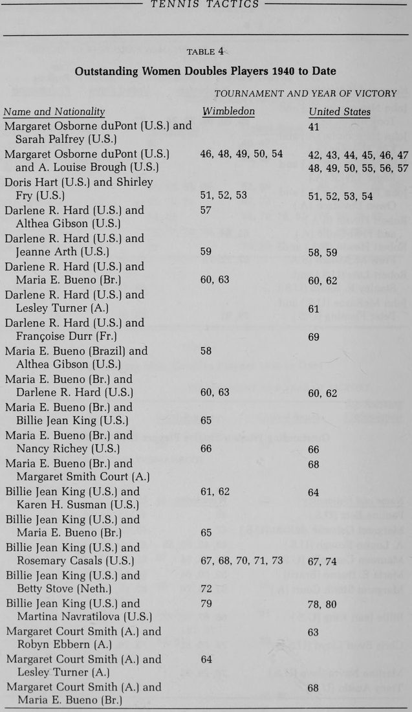
Lịch sử tóm lược GIẢI ĐẤU VÀ NĂM VÔ ĐỊCH Tên và Quốc tịch Wimbledon Hoa Kỳ Margaret Court Smith (Úc) và Virginia Wade (Anh) 70, 75 Margaret Court Smith (Úc) và Judy T. Dalton (Úc) 69 70 Martina Navratilova (Hoa Kỳ) và Chris Evert Lloyd (Hoa Kỳ) Martina Navratilova (Hoa Kỳ) và Betty Stove (Hà Lan) 77 Martina Navratilova (Hoa Kỳ) và Billie Jean King (Hoa Kỳ) 79 78, 80 Martina Navratilova (Hoa Kỳ) và Pam Shriver (Hoa Kỳ) 81, 82 BẢNG 5 Những tay vợt đôi nam nữ xuất sắc từ năm 1940 đến nay GIẢI ĐẤU VÀ NĂM VÔ ĐỊCH Tên và Quốc tịch Wimbledon Hoa Kỳ Margaret Osborne duPont (Hoa Kỳ) và William F. Talbert (Hoa Kỳ) 43, 44, 45, 46 Margaret Osborne duPont (Hoa Kỳ) và Kenneth McGregor (Úc) 50 Margaret Osborne duPont (Hoa Kỳ) và Kenneth Rosewall (Úc) 56 Margaret Osborne duPont (Hoa Kỳ) và Neale Fraser (Úc) 62 58, 59, 60 A. Louise Brough (Hoa Kỳ) và Frederick E. Schroeder (Hoa Kỳ) 42 A. Louise Brough (Hoa Kỳ) và John Bromwich (Úc) 47, 48 48 A. Louise Brough (Hoa Kỳ) và Thomas P. Brown (Hoa Kỳ) 46 48 A. Louise Brough (Hoa Kỳ) và Eric Sturgess (Nam Phi) 50 49 Doris Hart (Hoa Kỳ) và Frank Sedgman (Úc) 51, 52 51, 52 Doris Hart (Hoa Kỳ) và E. Victor Seixas (Hoa Kỳ) 52, 54, 55, 56 53, 54, 55 Margaret Smith Court (Úc) và Robert Mark (Úc) 61
Brief History TOURNAMENT AND YEAR OF VICTORY Name and Nationality Wimbledon United States Margaret Court Smith (A.) and 70,70 Virginia Wade (U.K.) Margaret Court Smith (A.) and 69 70 Judy T. Dalton (A.) Martina Navratilova (U.S.) and Chris Evert Lloyd (U.S.) Martina Navratilova (U.S.) and Betty Stove (Neth.) 77 Martina Navratilova (U.S.) and 79 78, 80 Billie Jean King (U.S.) Martina Navratilova (U.S.) and Pam Shriver (U.S.} 81, 82 TABLE 5 Outstanding Mixed Doubles Players 1940 to Date TOURNAMENT AND YEAR OF VICTORY Name and Nationality Wimbledon United States Margaret Osborne duPont (U.S.) and 43, 44, 45, 46 William F. Talbert (U.S.) Margaret Osborne duPont (U.S.) and 50 Kenneth McGregor (A.}) Margaret Osborne duPont (U.S.) and 56 Kenneth Rosewall (A.) Margaret Osborne duPont (U.S.) and 62 58, 59, 60 Neale Fraser (A.) A. Louise Brough (U.S.) and Frederick E. Schroeder (U.S.) 42 A. Louise Brough (U.S.) and John Bromwich [(A.) 47, 48 48 A. Louise Brough (U.S.) and 46 48 Thomas P. Brown (U.S.) A. Louise Brough (U.S.) and Eric Sturgess (S.A.} 50 49 Doris Hart (U.S.) and Frank Sedgman (A.) 51,52 2 iS Doris Hart (U.S.) and E. Victor Seixas (U.S.) 52,54, 65, 56 53, 54, 55 Margaret Smith Court (A.) and 61 Robert Mark (A.)
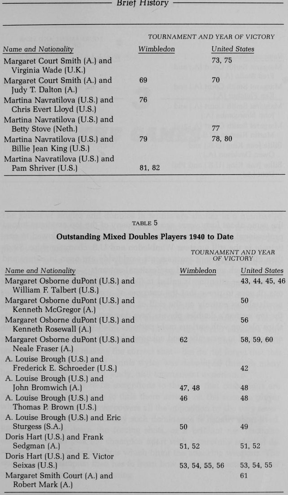
GIẢI ĐẤU VÀ NĂM VÔ ĐỊCH Tên và Quốc tịch Wimbledon Hoa Kỳ Margaret Smith Court (Úc) và Fred Stolle (Úc) 62, 65 Margaret Smith Court (Úc) và Ken Fletcher (Úc) 63, 65, 66, 68 63 Margaret Smith Court (Úc) và John Newcombe (Úc) 64 Margaret Smith Court (Úc) và Martin Riessen (Hoa Kỳ) 79 69, 70, 72 Billie Jean King (Hoa Kỳ) và Owen Davidson (Úc) 67, 71, 73, 74 Billie Jean King (Hoa Kỳ) và Phil Dent (Úc) 76 trò chơi này khoảng bốn mươi năm trước, khi nhiều tay nghiệp dư hàng đầu chuyển sang thi đấu nhà nghề. Tuy nhiên, mãi đến khoảng năm 1968 họ vẫn không được phép tham dự các giải Wimbledon và giải vô địch Hoa Kỳ khi ấy còn mang tính nghiệp dư. Kể từ đó, mọi giải đấu quan trọng trên toàn thế giới đều mang tính mở rộng và chào đón cả những người tham dự nghiệp dư lẫn nhà nghề. Xin đặc biệt lưu ý Bảng 5 về các nhà vô địch đôi nam nữ. Bảng này chứng minh rằng kết quả của một trận đôi nam nữ gần như hoàn toàn phụ thuộc vào kỹ năng của thành viên nữ. Qua nhiều năm, những tay vợt đôi nữ hàng đầu đã thống trị các chức vô địch đôi nam nữ khi thi đấu cùng nhiều bạn đôi nam khác nhau. Những người đàn ông đoạt giải trên khắp thế giới được nhắc nhở hãy ghi nhớ và thừa nhận sự thật này!
TOURNAMENT AND YEAR OF VICTORY Name and Nationality Wimbledon United States Margaret Smith Court (A.) and Fred Stolle (A.) 62, 65 Margaret Smith Court (A.) and 63, 65, 66, 68 63 Ken Fletcher (A.) Margaret Smith Court (A.) and 64 John Newcombe (A.) Margaret Smith Court (A.) and 79 69, 70, 72 Martin Riessen (U.S.) Billie Jean King (U.S.) and 0777 Lavonia 67, 712738 Owen Davidson (A.) Billie Jean King (U.S.) and Phil Dent (A.} 76 the game about forty years ago when many of the top amateurs turned professional. However, until about 1968 they were not allowed to participate in the still amateur Wimbledon and U.S. championships. Since then all the important tournaments worldwide are open in nature and welcome both amateur and professional entrants. Particular attention is called to Table 5 on mixed doubles champions. It goes to prove that the outcome of a mixed doubles match depends almost entirely on the skill of the lady member. Over the years the top women’s doubles players have dominated the mixed championships playing with various male partners. Men winners the world over are warned to remember and acknowledge this fact!
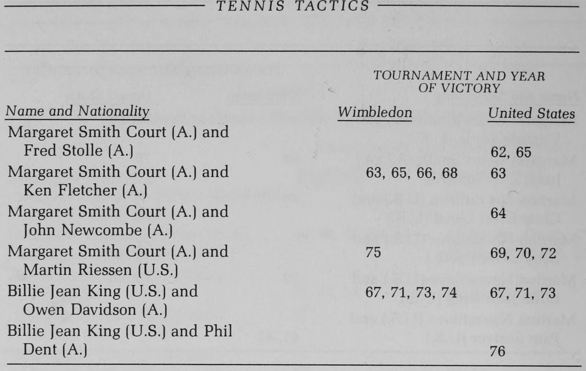
Các nội dung đánh đơn và đánh đôi trong quần vợt giống nhau ở một số điểm, nhưng lại hoàn toàn khác biệt ở nhiều điểm khác. Vì vậy, trong cuốn sách này cần phải phân biệt rõ ràng giữa những chiến thuật đúng đắn cần áp dụng cho mỗi nội dung. Quần vợt là một trò chơi trí tuệ ở đẳng cấp cao và có độ phức tạp lớn, bởi vô vàn tình huống khác nhau mà người chơi phải đối mặt. Tuy vậy, vẫn có thể đơn giản hóa lối chơi của bạn bằng cách xây dựng một kiến thức và sự hiểu biết vững chắc về những nguyên tắc cơ bản. Sự thấu hiểu ấy sẽ cho phép bạn đánh đúng cú bóng, theo cách hiệu quả nhất, vào đúng thời điểm, gần như một cách tự động hoặc theo trực giác. Đây chính xác là điều mà các nhà vô địch hầu như luôn làm, điều giải thích vì sao một số người không nhận ra rằng họ đang suy nghĩ ở mỗi cú đánh. Họ thể hiện một bản năng kỳ lạ trong việc đánh ra cú bóng đúng — nhưng đừng quên rằng khả năng giải quyết nhiều phong cách quần vợt khác nhau này được tôi luyện qua nhiều giờ tập luyện, huấn luyện, học hỏi và kinh nghiệm thi đấu. Có thể có vẻ như tồn tại những ngoại lệ đối với quy luật rằng các nhà vô địch đều là những chiến thuật gia vĩ đại. Thỉnh thoảng lại xuất hiện một tay vợt xuất sắc đến mức áp đảo mọi đối thủ chỉ bằng chính độ mạnh của những cú đánh của mình. Nhưng sự thống trị như vậy thường chỉ tồn tại trong thời gian ngắn. Hoặc tuổi tác làm chậm đi những cú đánh gây sức ép, hoặc một chiến thuật gia mới lỗi lạc xuất hiện, người có thể mổ xẻ nhà vô địch bằng một tập hợp được lựa chọn kỹ càng gồm những cú bóng nhẹ và xoáy làm cùn đi các vũ khí tấn công. Nhà vô địch cũ thông minh khi ấy buộc phải học cách thay đổi chiến thuật để giành lại khả năng chiến thắng của mình.
The games of singles and doubles in tennis are similar in a number of ways, but entirely distinctive in many others. Therefore, it is necessary in this book to differentiate clearly between the proper tactics to employ in each game. Tennis is an intellectual game of high order and great complexity because of the unending variety of situations which face the players. Nevertheless, it is possible to simplify your play by developing a sound knowledge and understanding of the fundamentals. Such comprehension should permit you to play the proper shot, in the most effective manner, at the right moment, almost automatically or intuitively. This is certainly what the champions almost always do, which explains why some do not realize they are thinking on each stroke. They exhibit an uncanny instinct for making the correct shot—but do not forget that this ability to solve a variety of tennis styles was developed through many hours of practice, coaching, study, and tournament experience. There may appear to be exceptions to the rule that champions are great tacticians. From time to time there arrives on the scene a player who is so outstanding he overpowers all the opposition by the very severity of his or her strokes. But any such dominance is usually short-lived. Either age slows down the forcing shots, or a brilliant new tactician emerges who can pick the champion apart with a carefully selected assortment of soft, spinning shots which blunt the attacking weapons. The smart former champion then has to learn how to alter his tactics in order to regain his capability of winning.
Như vậy chúng ta trở lại với mục đích chính của cuốn sách này, đó là trình bày những chiến thuật quần vợt đúng đắn. Chiến thuật được định nghĩa là “khoa học và nghệ thuật bố trí, điều động lực lượng trong chiến đấu”, hoặc “nghệ thuật hay kỹ năng sử dụng những phương tiện sẵn có để đạt được một mục đích”. Một độc giả học cách thực hiện hầu hết các lối đánh cơ bản một cách gần như theo phản xạ sẽ có thể tập trung vào những yếu tố tinh tế hơn. Bạn sẽ khám phá ra rằng điều này có ảnh hưởng to lớn đến khả năng khắc phục những điểm yếu của chính bạn và khai thác những điểm yếu của đối phương. Trong chương này, chúng ta sẽ cố gắng trình bày những bức tranh tổng thể về nội dung đánh đơn và đánh đôi để tạo nền tảng cho những chi tiết về sau. Trước khi bắt đầu bàn về những đặc điểm của các nội dung thi đấu, cần phải nói đôi điều về các loại sân quần vợt, vì những mặt sân khác nhau có ảnh hưởng rõ rệt đến việc quyết định phong cách thi đấu. Có thể nghe khó tin, nhưng chỉ một thay đổi nhỏ cỡ một phần nhỏ của giây trong tốc độ nảy của bóng cũng tạo ra khác biệt đáng kể về chiến thuật cần áp dụng. Trên các sân cứng, nhanh, bóng có xu hướng trượt thấp, trong khi trên các sân mềm, chậm, bóng cắm xuống mặt sân và nảy cao hơn. Có thể xếp hạng các sân quần vợt theo tốc độ như sau: sân gỗ (board), sân cứng (xi măng hoặc nhựa đường), sân cỏ, sân hỗn hợp (composition), và cuối cùng là sân đất nện (clay), chậm nhất trong tất cả. Về mặt thực tiễn, có thể lấy mốc phân chia tại điểm sân cỏ, vì mọi trận đấu diễn ra trên sân cỏ hoặc nhanh hơn đều có thể được xếp vào loại thi đấu trên Sân Nhanh. Hầu hết các giải đấu quan trọng trên toàn thế giới đều diễn ra trên Sân Nhanh. Những sân này ưu ái cái gọi là “lối đánh lớn” (big game) trong đánh đơn, tức lối chơi sử dụng chiến thuật giao bóng mạnh rồi lên lưới thay vì đôi công từ vạch cuối sân. Trên các sân hỗn hợp và sân đất nện chậm hơn, người phòng thủ có thêm thời gian để bước thêm một hai bước đón quả bóng nảy cao hơn. Sự thay đổi tưởng như nhỏ nhặt này làm biến đổi đáng kể chiến thuật và những cú đánh giúp giành điểm, như thể hiện trong Bảng 6. Ngay cả những tay giao bóng mạnh nhất cũng không thể liên tục tấn công lưới và vô-lê [phần còn lại bị cắt]
Thus we return to the major purpose of this book, which is to provide an exposition of sound tennis tactics. Tactics are defined as “the science and art of disposing and maneuvering forces in combat,” or “the art or skill of employing available means to accomplish an end.” A reader who learns to make most of the basic plays essentially by habit can then concentrate on the more subtle factors. You will discover this will have a tremendous effect on your ability to overcome your own weaknesses and to exploit those of your opponent. In this chapter we will attempt to present overall pictures of the games of singles and doubles to set the stage for later details. Before launching into the characteristics of the games, something must be said about types of tennis courts, since the various surfaces have a marked effect on determining style of play. It may seem unbelievable, but a change of a small fraction of a second in speed of ball bounce makes a significant difference in the tactics which should be employed. On hard, fast courts the ball tends to skid low, whereas on soft, slow courts the ball digs in and bounces higher. Tennis courts can be ranked in terms of speed as follows: board, hard court (cement or asphalt), grass, composition, and, finally, clay, the slowest of all. For all practical purposes, a dividing line can be made at the point of grass, as all matches played on grass or above can be categorized as played on fast courts. Most of the important tournaments worldwide are played on fast courts. These favor the so-called “big game”’ in singles, which utilizes tactics of powerful serve and volley rather than base-line exchange. On the slower composition and clay courts the defender has the added time to take another step or two to retrieve the higher-bouncing ball. This seemingly small change alters substantially the tactics and the strokes which win points, as shown in Table 6. Not even the best of the big servers can continually attack the net and volley with success on a slow court. Instead, long base-line rallies become the standard arena for determination of winning maneuvers. In doubles the court surface has much less effect on tactics, as the iniportance of gaining the net position is paramount irrespective of surface—winning strokes are similar on slow or fast courts (see Table 7). In studying winning types of strokes it is important to take into account the frequency with which the stroke is utilized. When that is done the “lethality,” or ratio of winning shots to total shots as compared with other strokes, can be determined. These data for singles and doubles fast-court play are presented in Table 8. The fascinating finding which
3. Trận Đấu
The GamesThe Games
BẢNG 6 Tần suất phần trăm việc sử dụng cú đánh và các cú thắng trong đánh đơn nam Trả giao Cú đánh từ cuối sân Giao bóng một Giao bóng hai Trả giao bóng một Vô-lê đầu tiên Vô-lê về sau Đập bóng trên cao Tại lưới Cú đánh vượt qua Đổi bóng qua lại Cú bổng Sân Nhanh Tần suất 24,5 13 25 18 2 1 0,5 9 Các cú thắng 23 10 21 Sân Chậm Các cú thắng 17 6 15 2 12 3 18 20 BẢNG 7 Tần suất phần trăm việc sử dụng cú đánh và các cú thắng trong đánh đôi nam Giao bóng một Giao bóng hai Trả giao bóng Các cú đánh khác Vô-lê Đập bóng trên cao Cú bổng Sân Nhanh Tần suất 23 7 10 26,5 6 9 Các cú thắng 18 1 12 12 41 14 2 BẢNG 8 Xác suất tương đối để thắng một điểm bằng một loại cú đánh nhất định, xét theo tần suất sử dụng ĐÁNH ĐƠN ĐÁNH ĐÔI Cú đánh Mức độ sát thương Cú đánh Mức độ sát thương Đập bóng trên cao 3,9 Đập bóng trên cao 14,5 Cú đánh từ cuối sân tại lưới 2,6 Vô-lê 9,5 Vô-lê về sau 2,4 Cú đánh vượt qua 7,5 Cú bổng 1,9 Giao bóng một 5 Cú đánh vượt qua 6,1 Trả giao bóng 3 Giao bóng một 1,2 Cú bổng 2,5 Vô-lê đầu tiên 1,2 Giao bóng hai 1 Trả giao bóng 1,4 Giao bóng hai 1,0 (cơ sở để so sánh)
TABLE 6 Percent Frequency of Stroke Utilization and Winners in Men’s Singles Return Ground BaseFirst Second of First Later Over- Stroke Passing Line Serve Serve Service Volley Volley head at Net Shot _ Rally Lob Fast Court Frequency 24.5 13 25 18 z 1 0.5 9 | eel Winners 23 10 21 We g B 3 4 9 og Slow Court Winners’ 17 6 15 2 12 3 a 18 20 a TABLE 7 Percent Frequency of Stroke Utilization and Winners in Men’s Doubles First Second Return Other Ground Serve Serve of Service Strokes Volley Overhead Lob Fast Court Frequency 23 7 oa0 10 26.5 6 9 Winners 18 1 12 1Z 41 14 2 TABLE 8 Relative Probability of Winning a Point with a Given Type of Stroke Considering the Frequency of Use SINGLES DOUBLES Stroke Lethality Stroke Lethality Overhead 3.9 Overhead 14.5 Ground stroke at net 2.6 Volley 9.5 Later volley 2.4 Passing shot 7.5 Lob 1.9 First service 5 Passing shot ot, Return of service 3 First service 1.2 Lob 25 First volley 1.2 Second service 1 Return of service 1,4 Second service 1.0 (basis of comparison)
nổi lên từ bảng này là việc khu vực lưới ở cả đánh đơn lẫn đánh đôi được khẳng định là khu vực tấn công tốt nhất. Một khảo sát tổng thể về các nội dung quần vợt cho thấy có những nét tương đồng chung và một số khác biệt cơ bản giữa đánh đơn và đánh đôi. Trước tiên là những điểm tương đồng. QUẦN VỢT DÀNH CHO TẤT CẢ MỌI NGƯỜI Vì sân đánh đơn chỉ có kích thước 78 x 27 feet và sân đánh đôi chỉ lớn hơn một chút với 78 x 36 feet, nên cần rất ít diện tích để xây dựng cơ sở vật chất trong nhà hoặc ngoài trời. Kết quả là cả sân công cộng lẫn sân tư nhân đều tồn tại khắp nơi trên thế giới, và phí thuê sân để sử dụng thường ở mức hợp lý. Ngoài ra, quần áo thể thao và dụng cụ cần thiết đều rẻ và dễ mang theo. Tất cả những yếu tố này kết hợp lại khiến quần vợt trở nên dễ tiếp cận với hàng triệu người tham gia từ tám đến tám mươi tuổi, thuộc cả hai giới, ở hầu như mọi quốc gia trên toàn cầu. Bản chất trôi chảy, nhịp nhàng và mang tính thể thao mãnh liệt của trò chơi khiến quần vợt trở nên hết sức hấp dẫn đối với cả người chơi lẫn khán giả. Vì những lý do đó, quần vợt là một trong những môn thể thao phổ biến nhất trong tất cả các môn. QUẦN VỢT ĐÒI HỎI KỸ NĂNG VÀ TỐC ĐỘ Trong một trận đấu, nhiều quả bóng tennis được đánh đi với tốc độ khoảng 100 dặm một giờ, nghĩa là chúng sẽ đi hết chiều dài sân chỉ trong hơn nửa giây. Người trả những cú đánh chớp nhoáng như vậy phải có khả năng dự đoán được hướng di chuyển, nhưng sau đó chỉ có thời gian để lao đi năm đến sáu feet theo đúng hướng nhằm chặn những quả bóng nhanh nhất. Tệ hơn nữa, nhiều quả bóng nảy thất thường, đặc biệt trên mặt sân cỏ. Trong hầu hết các trận đấu ba ván, tùy theo tốc độ mặt sân, bóng được mỗi tay vợt đánh đi từ 300 đến 1800 lần. Kết quả là quần vợt, không giống nhiều môn thể thao khác, diễn ra đúng như hình mẫu vốn có. Suy cho cùng, kỹ thuật tạo ra cú đánh, phong cách, thăng bằng, bộ chân, khả năng bao quát sân, khả năng dự đoán, thời điểm đánh, chọn lựa cú đánh và khả năng đặt bóng hiểm chắc chắn sẽ khẳng định được vai trò của chúng trước Thần May Mắn trong một trận đấu kéo dài. Vì đòi hỏi tốc độ cao [phần còn lại bị cắt]
emerges from this table is that the net territory in both singles and doubles is confirmed as the best attacking area. An overall examination of the games of tennis shows some generic similarities and some basic differences between the singles and doubles games. First, the similarities. TENNIS IS AVAILABLE TO ALL Since the singles court is only 78 x 27 feet and the doubles court is only slightly larger at 78 x 36 feet, little room is required to build either outdoor or indoor facilities. As a result, both public and private courts exist all over the world, and rental fees for use are usually reasonable. Also, the athletic clothes and equipment required are inexpensive and easy to transport. All of these factors combine to make tennis available to millions of participants ranging from eight to eighty years, including both sexes, in essentially every nation around the globe. The smooth, rhythmic, intensely athletic nature of the game makes tennis of absorbing interest to both players and spectators. For these reasons, tennis is one of the most popular of all sports. TENNIS REQUIRES SKILL AND SPEED During a match many tennis balls are struck at speeds of about 100 miles per hour, which means they would travel the entire length of the court in just over half a second. The receiver of such blistering strokes must be able to anticipate in which direction to move, but then has time to dash only five to six feet in the proper direction in order to intercept the fastest balls. To make matters worse, many balls bounce erratically, particularly on grass surfaces. In most three-set matches, depending on the court-surface speed, the ball is struck by each player from 300 to 1800 times. As a result, tennis, unlike many sports, runs true to form. After all, stroke-production technique, style, balance, footwork, court coverage, anticipation, timing, shot selection, and placement capabilities are bound to-assert themselves over Lady Luck during an extended match. Entailing high-speed ball and player movement within a court of limited size, tennis can truly be described as a game of tenths of seconds and tenths of inches.
The GamesThe Games
DỰ ĐOÁN Quần vợt là một trò chơi nhanh đến mức việc bao quát sân để đánh trả bằng cú đánh từ cuối sân hay bằng vô-lê thường là bất khả thi, trừ khi người nhận bóng có thể dự đoán được loại, hướng và tốc độ cú đánh mà người đánh sắp tung ra. Người nhận bóng phải di chuyển đúng hướng vào đúng tích tắc nếu muốn có cơ hội. Nghệ thuật dự đoán gồm bốn phần. Thứ nhất, bạn phải đánh giá từ loại và vị trí của cú đánh của chính mình xem nên mong đợi cú trả bóng thuộc loại nào và theo hướng nào. Thứ hai, bạn phải nghiên cứu kỹ thuật đánh bóng của đối phương để khám phá phong cách, kỹ thuật, những nét riêng và những cú đánh ưa thích của họ trong các tình huống chiến thuật khác nhau. Thứ ba, bạn cần tập trung vào những động tác lộ ý của đối phương khi họ đánh bóng. Điều này đòi hỏi phải quan sát, không phải quả bóng, mà là vị trí bàn chân, thân người, cánh tay cầm vợt, động tác lấy đà và đầu vợt của người đánh bóng tại thời điểm tiếp xúc bóng. Tuy nghe có vẻ rất phức tạp, sau một thời gian luyện tập bạn có thể học được cách chẩn đoán ý đồ của người đánh bóng về loại, hướng và tốc độ cú đánh chỉ bằng một cái nhìn. Và thứ tư, bạn (cùng bạn đôi của bạn, nếu chơi đánh đôi) phải dịch chuyển vị trí để đón cú trả bóng dự kiến. Mọi sự dịch chuyển đều phải được tính đúng thời điểm, vì một động tác quá sớm có thể cho phép người đánh bóng đổi hướng và thắng điểm bằng cách đánh bóng về phía sau lưng bạn. QUYẾT TÂM Gắn liền chặt chẽ với những yêu cầu về sự tập trung và lòng dũng cảm nơi những tay vợt hàng đầu là một phẩm chất vô giá gọi là quyết tâm. Đó là cái “phần thêm” khó định nghĩa trong tính cách của một tay vợt, cho phép họ nâng cao phong độ của mình đúng vào thời điểm khủng hoảng để giành chiến thắng. Đó là một phẩm chất hiếm có đặc trưng cho nhiều nhà vô địch cấp địa phương cũng như cấp quốc gia — nó phân biệt những người thắng cuộc với những người chỉ suýt đạt được điều đó. Quyết tâm không chỉ đơn thuần là cố gắng hết sức ở mỗi điểm trong một trận đấu. Nó còn bao hàm sự sẵn lòng đối mặt với vô số giờ tập luyện để cải thiện kỹ thuật của bạn, lòng dũng cảm để vượt lên từ thế bị dẫn, và khả năng kiểm soát [phần còn lại bị cắt]
ANTICIPATION Tennis is such a fast game that to cover the court to make either ground-stroke or volley returns is often impossible unless the receiver can anticipate the type, direction, and speed of stroke about to be delivered by the striker. The receiver has to be moving in the right direction at the proper split second if he is to have a chance. The art of anticipation has four parts. First, you must assess from the type and placement of your own shot what type and direction of return to expect. Second, you have to study the stroking techniques of your opponent in order to discover his style, technique, idiosyncrasies, and favorite shots under various tactical conditions. Third, you need to concentrate on the giveaway motions of the opponent striking the ball. This entails watching, not the ball, but the position of the striker’s feet, body, racket arm, backswing, and racket head as it meets the ball. While this may seem very complicated, after some practice you can learn to diagnose the intentions of the striker with respect to type, direction, and speed of shot at a glance. And, fourth, you (and your partner, if playing doubles) must shift position to meet the expected return. Any shift has to be timed exactly, as a premature move might permit the striker to change direction and win the point by hitting behind you. DETERMINATION Closely linked to the requirements of concentration and courage as a must in top tennis players is the invaluable asset called determination. It is that hard-to-define extra in the makeup of a player which permits him to lift his game at the precise moment of crisis in order to win. It is a rare quality that stamps many local as well as national champions—it divides the winners from those who just get close. Determination is much more than just trying hard for each point in a match. It also entails the willingness to face untold hours of practice to improve your techniques, the courage to come from behind, and the ability to control the delicate balance between having confidence, which is essential, and overconfidence, which is poisonous, to top performance. Desire leads to victory through the type of tenacious court coverage that ultimately discourages the opposition.
TINH THẦN THỂ THAO Hơn hầu hết các môn thể thao khác, quần vợt đòi hỏi và nuôi dưỡng tinh thần thể thao. Một yếu tố góp phần quan trọng là trò chơi này thường được tiến hành mà không có trọng tài lẫn trọng tài biên. Vì lý do đó, người chơi phải tự phán quyết mọi quả bóng hoặc lỗi vi phạm ở phía bên kia lưới của mình. Có một quy tắc bất thành văn, vững chắc rằng người ta luôn dành cho đối phương lợi thế của sự hoài nghi trong những phán quyết sát nút. Trên thực tế, trong các trận đấu giao hữu, thường xảy ra việc người đánh bóng tự nhận rằng cú đánh của mình ra ngoài, sau khi một người nhận bóng hào hiệp đã phán ngược lại. Khi người chơi không thể thống nhất được, một quả “let” được xử và điểm được đánh lại từ đầu. Những hành động như vậy thể hiện một màn trình diễn tuyệt đẹp của tinh thần chơi đẹp, điều chỉ phổ biến ở rất ít môn thể thao. Truyền thống của trò chơi cũng đòi hỏi sự nhã nhặn, không viện cớ, và hạn chế tối đa việc bộc lộ tính khí. Dù một số ngoại lệ kịch tính đã từng xảy ra trong các trận đấu gần đây được truyền hình rộng rãi, tục lệ về tinh thần thể thao chân chính chắc chắn sẽ thắng thế theo thời gian, bởi những đòi hỏi áp đảo từ khán giả, người tham gia và các quan chức của các cơ quan quản lý thể thao điều hành môn quần vợt vĩ đại này trên khắp thế giới. Và giờ xin nói đến một số khác biệt giữa nội dung đánh đơn và đánh đôi. ĐÁNH ĐƠN ĐÒI HỎI THỂ LỰC DỒI DÀO HƠN Đánh đơn đòi hỏi thể lực dồi dào hơn đánh đôi, vì một tay vợt phải bao quát toàn bộ sân. Trên thực tế, nội dung này từng được một trong những tay vợt đánh đơn vĩ đại nhất mọi thời đại mô tả là “đặt vận động viên dưới áp lực thể chất, tinh thần và thần kinh nặng nề nhất so với bất kỳ môn thể thao nào do loài người chơi”. Sự thật của lời phát biểu này được chứng thực bởi việc rất ít nam hay nữ vượt qua tuổi ba mươi từng giành được một chức vô địch đơn lớn. Giới hạn tuổi này cho sự thống trị còn trẻ hơn so với nhiều môn thể thao thường được coi là khắc nghiệt hơn — như bóng bầu dục Mỹ, khúc côn cầu trên băng, bóng rổ, quyền anh và bóng đá. Những đòi hỏi về thể lực trong đánh đơn không chỉ xuất phát từ hai đến bốn giờ chạy nặng nhọc, khởi động và dừng lại nhanh, đổi hướng và vươn người, mà còn từ [phần còn lại bị cắt]
SPORTSMANSHIP More than most sports, tennis demands and breeds sportsmanship. An important contributing factor is that the game is normally played without either an umpire or linesmen. For that reason, players must call all balls or rule infractions on their side of the net. It is a firm, unwritten rule that one always gives the opponent the benefit of the doubt on close decisions. In fact, during informal matches it often happens that the striker will claim that his shot was out, after a generous receiver has already ruled otherwise. When players cannot agree, a let is called and the point is played over again. Such actions represent a fine exhibition of fair play which is customary in few sports. The traditions of the game also call for courtesy, no alibis, and a minimum of temperament display. While some dramatic exceptions have occurred in recent widely televised matches, the cult of true sportsmanship is bound to prevail over time because of the overwhelming demands of spectators, participants, and officials of the sports-governing bodies which regulate the great sport of tennis around the world. And now to mention some of the differences between the games of singles and doubles. SINGLES REQUIRES GREATER STAMINA Singles demands more stamina than doubles, as one player must cover the entire court. In fact, the game has been described by one of the greatest singles players of all time as “putting the athlete under the hardest physical, mental, and nervous strain of any game played by mankind.” The truth of this statement is attested to by the fact that few men or women beyond the age of thirty have ever won a major singles championship. This age limit for supremacy is younger than in many sports often considered to be more rugged—such as football, hockey, basketball, boxing, and soccer. The stamina requirements in singles spring not just from the two to four hours of hard running, quick starts and stops, changes of direction, and stretching, but also from the generalship requirements with the accompanying strain of numerous and continuous decisions which must be made within a split:second time allowance throughout the match. All the time, a player has to study the style, strokes, and psychology of the opponent in order to learn his strengths and weaknesses and anticipate his moves. There is a contin-
The GamesThe Games
cuộc đấu trí về tốc độ, xoáy, thay đổi nhịp độ, độ sâu và góc độ, cùng sự bất ngờ nhằm khai thác những điểm yếu của nhau. Để giành chiến thắng đòi hỏi sức tập trung và trí tưởng tượng phi thường cùng sự tập trung tuyệt đối, không chia sẻ. Chẳng trách các tay vợt thường kiệt sức sau một trận đấu, và thấy rất khó giữ được phong độ đỉnh cao suốt một giải đấu lớn. ĐÁNH ĐÔI ĐÒI HỎI TINH THẦN ĐỒNG ĐỘI Khác với đánh đơn, đánh đôi là một trò chơi đồng đội. Nó không chỉ là đánh đơn với hai người mỗi bên sân — nó là một trò chơi hoàn toàn độc lập. Tài năng cá nhân phải được hòa vào tập thể, và nỗ lực phối hợp của cả đội phải được đề cao. Hàng giờ tập luyện cùng nhau, tìm hiểu lối chơi của nhau, hoạch định chiến lược và chiến thuật, thiết lập vị trí tối ưu trên sân cho những tình huống khác nhau, nghiên cứu những điểm yếu có thể có trong lối chơi của đối phương, khích lệ và giữ vững tinh thần cho bạn đôi bằng cách “hô hào cổ vũ” khi tình thế khó khăn — tất cả những điều đó và hơn thế nữa đều thiết yếu cho tinh thần đồng đội đánh đôi siêu việt. Hầu hết các đội đánh đôi vĩ đại đều được tạo nên từ những tay vợt có phong cách bổ trợ cho nhau. Họ bao gồm một người kiến tạo lối chơi kết hợp với một người đánh theo kiểu sức mạnh. Những người kiến tạo lối chơi là những bậc thầy của đánh đôi, những người sử dụng mọi chút khéo léo chiến thuật, khả năng dự đoán, sự đa dạng cú đánh, các loại xoáy, động tác giả, những cú đánh mồi, và những màn điều binh khiển tướng được hoạch định kỹ càng để buộc đối phương để lộ sơ hở hoặc đánh trả yếu ớt. Đúng vào tích tắc ấy, người đánh theo kiểu sức mạnh phải áp vào và tung ra cú thắng. Người này thường là một cá nhân cao lớn với tốc độ tuyệt vời, thời điểm đánh siêu hạng, một cú vô-lê mạnh mẽ và một cú đập bóng trên cao có sức tàn phá. Ngay cả những cặp đôi hoàn hảo nhất như vậy cũng cần vài năm thi đấu cùng nhau để chinh phục được sự phức tạp của tinh thần đồng đội. Như đã thấy trong Bảng 2 và Bảng 4, những bậc thầy đánh đôi vẫn giành chiến thắng với nhiều bạn đôi theo kiểu sức mạnh khác nhau. Việc chọn một bạn đôi kết hợp tốt với phong cách của bạn rất quan trọng đối với bất kỳ tay vợt nào quan tâm đến thi đấu giải. CÁC MÔ THỨC TẤN CÔNG KHÁC NHAU Trong đánh đơn trên sân nhanh, “lối đánh lớn” gồm giao bóng mạnh rồi theo lên lưới để tung ra một cú [phần còn lại bị cắt]
ual duel of speed, spin, change of pace, depth and angles, and surprise in order to exploit one another’s vulnerabilities. To emerge victorious requires tremendous and undivided powers of concentration and imagination. No wonder tennis players are often exhausted after a match, and find it very difficult to stay at top form throughout a large tournament. DOUBLES REQUIRES TEAMWORK Unlike singles, doubles is a team game. It is not just singles with two players on each side of the court—it is a game entirely by itself. Individual brilliance must be submerged, and coordinated team effort emphasized. Hours of practicing together, learning one another’s games, planning strategy and tactics, establishing optimum court positions for varying situations, studying possible weaknesses in the games of the opposition, encouraging and steadying one’s partner by “talking it up” when the going is difficult—all these and more are essential to superior doubles teamwork. Most great doubles teams have been made up of players with complementary styles. They are-composed of a play maker combined with a power player. The play makers have been masters of doubles who utilized every bit of tactical finesse, anticipation, stroke variety, spins, fakes, teasers, and well-planned maneuvers to force the opponents to leave an opening or to make a weak return. At that split second the power player must move in to blast the winner. He has usually been a rangy individual with great speed, superb timing, a powerful volley, and a devastating overhead. Even the best of such perfect pairings require some years of playing together to conquer the complexities of teamwork. As seen in Tables 2 and 4, the doubles masters manage to win with several different power players as partners. Selecting a partner who combines well with your style is important for any player interested in tournament tennis. OFFENSIVE PATTERNS DIFFER In singles on a fast court the “big game” of power serve followed in to net for a strong offensive first volley wins about 50 percent of all points. Later volleys and overheads made because of the advantage gained
xuyên qua vị trí tấn công ở lưới đưa tổng số điểm thắng khi sử dụng lối đánh tấn công trong đánh đơn lên hơn 60 phần trăm. Tuy nhiên, như đã chỉ ra trước đó trong Bảng 6, độ nảy trên sân chậm làm giảm đi rất nhiều hiệu quả của cú giao bóng mạnh đến mức nội dung đánh đơn biến đổi một cách ấn tượng. Giờ đây giao bóng chỉ thắng được khoảng 17 phần trăm số điểm, và cú vô-lê đầu tiên, thứ mà ngay cả những tay giao bóng giỏi nhất cũng hiếm khi dám thử vì sợ bị đánh vượt qua, chỉ thắng được 2 phần trăm. Mô thức thi đấu chuyển thành việc đôi công bằng những cú đánh từ cuối sân, với thỉnh thoảng có những đợt xông lên lưới khi xuất hiện cơ hội từ những cú trả bóng yếu. Kết quả là khoảng 45 phần trăm số điểm được thắng bằng những cú đánh từ cuối sân và 12 phần trăm bằng những cú vô-lê về sau. Ngược lại, đánh đôi về cơ bản vẫn là cùng một trò chơi bất kể mặt sân. Lối đánh lưới thống trị đánh đôi đến mức thắng được khoảng 55 phần trăm tổng số điểm (Bảng 7), khiến người giao bóng buộc phải lên lưới ở cả quả giao bóng một lẫn giao bóng hai trên mọi mặt sân. SỨC HẤP DẪN ĐỐI VỚI NGƯỜI CHƠI VÀ KHÁN GIẢ Sức hấp dẫn so sánh giữa đánh đơn và đánh đôi thường được giải quyết bằng sở thích cá nhân. Đối với người chơi, đánh đơn chắc chắn tượng trưng cho vinh quang lớn hơn, vì niềm vinh dự và sự công nhận của công chúng gắn liền với việc giành một chức vô địch quan trọng mang lại sự mãn nguyện suốt đời. Ngoài ra, đánh đơn mang lại nhiều vận động hơn. Và nhiều khán giả tận tụy thích xem kịch tính sôi động của một cuộc đấu giữa hai tay vợt hàng đầu, những người phải huy động đến tột cùng thể lực và lòng dũng cảm để xác định ai là người giỏi hơn. Đánh đôi có những phẩm chất đặc biệt riêng. Người chơi phải sử dụng nhiều loại cú đánh đa dạng hơn, sự mưu trí, và cả tinh thần đồng đội trong suốt một tràng những pha trao đổi bóng nhanh, cận chiến liên tục. Về khía cạnh thích thú, phấn khích và mãn nguyện thuần túy, người chơi thấy rằng trò chơi bốn tay tượng trưng cho nghệ thuật của sự khéo léo trong quần vợt ở mức cao nhất của nó. Và một phần đáng kể những khán giả am hiểu đồng tình rằng có nhiều hứng thú và niềm vui hơn khi xem đánh đôi do hai đội thi đấu điêu luyện và cân sức thể hiện. NHẬN XÉT VỀ [phần còn lại bị cắt]
through the attacking net position bring to over 60 percent the total points won using the offensive style of singles. However, as earlier pointed out in Table 6, a slow-court bounce takes so much off the effectiveness of the big serve that the game of singles changes dramatically. The serve now wins only about 17 percent of points, and the first volley, which even the best servers can seldom attempt for fear of being passed, wins only 2 percent. The pattern of play changes to an exchange of base-line drives with occasional forays to the net when weak returns present an opportunity. As a result, about 45 percent of points are won on ground strokes and 12 percent on later volleys. By way of contrast, doubles is essentially the same game irrespective of court surface. Net play so dominates doubles, winning about 55 percent of all points (Table 7), that the server must take net on both first and second serves on all court surfaces. APPEAL TO PLAYERS AND SPECTATORS The comparative appeal of singles and doubles usually resolves itself into a matter of personal preference. For the players, singles certainly represents the greater glory, since the honor and public recognition attached to winning a key championship bring about lifelong satisfaction. Also, singles provides more exercise. And many dedicated spectators prefer watching the tingling drama of a duel between two top players who must call upon the ultimate in stamina and courage in order to determine final superiority. Doubles has its own special qualities. The players must employ a greater variety of strokes, resourcefulness, and also teamwork during a continuing barrage of rapid, point-blank exchanges. For sheer enjoyment, thrills, and satisfaction the players find the four-handed game to represent the art of tennis ingenuity at its highest. And a good portion of sophisticated spectators concurs that there is more excitement and fun in watching doubles played by two competent, evenly matched teams. REMARKS ON THE FUNDAMENTALS OF STROKE PRODUCTION This book is aimed at understanding tactics and not at teaching stroke production, which encompasses how to hit the various strokes used in
The GamesThe Games
quần vợt. Tuy nhiên, một số độc giả chắc chắn sẽ hoan nghênh một vài lời bàn về cách làm chủ các cú đánh, thứ mà không có thì người ta không thể tiến tới việc áp dụng những chiến thuật đúng đắn. Cách học tốt nhất, tất nhiên, là tìm sự hướng dẫn từ một huấn luyện viên hoặc một tay vợt nhà nghề có năng lực. Điều đầu tiên cần xem xét là cách cầm vợt tennis. Chúng tôi đã chọn để minh họa trong Hình 2, 3 và 4 những cách cầm vợt được một số tay vợt vĩ đại sử dụng: William T. Tilden, J. Donald Budge, Rodney Laver và Chris Evert Lloyd. Hai cách cầm vợt phổ biến nhất là cách miền Đông (Eastern), được nhiều nhà vô địch sử dụng ngoài Tilden và Budge, và cách Lục địa (Continental), được những tay vợt như Laver, McEnroe và Billie Jean King sử dụng. Cách cầm vợt miền Tây (Western), được Bjorn Borg dùng cho cú thuận tay xoáy lên, có bàn tay xoay thêm một phần tư vòng về phía phải so với cú thuận tay kiểu miền Đông. Một trong những cách cầm vợt mới hơn là cú trái tay hai tay, được Chris Evert Lloyd, Borg và những người khác phổ biến hóa. Cách cầm vợt thuận tay kiểu miền Đông thường được mô tả là “bắt tay với cây vợt”, với chữ V tạo bởi ngón cái và ngón trỏ hướng gần như trực tiếp về phía vai phải (xem Hình 2). Cách cầm vợt trái tay được xoay khoảng một phần tư vòng sang trái để chữ V giờ hướng qua vai trái và ngón cái nằm ở mặt sau của vợt. Cả hai những phương pháp cầm vợt này đều là những cách cầm “mạnh”, ở chỗ bạn có thể dễ dàng chống lại một người bạn cố đẩy đầu vợt ngược lại tay cầm của bạn. Cách cầm vợt trái tay với ngón cái hơi hướng xuống là cách cầm vợt giao bóng kiểu miền Đông được ưa chuộng. Hình 3 minh họa cách cầm vợt Lục địa của Rod Laver, cách này có ưu điểm là phù hợp, không cần xoay điều chỉnh, cho mọi cú đánh. Nó không mạnh bằng cách cầm vợt thuận tay kiểu miền Đông, vì bàn tay nằm trên đỉnh vợt nhiều hơn khoảng một phần tám vòng. Đây chắc chắn là cách cầm vợt được ưa chuộng để đánh vô-lê, bởi vì cùng một cách cầm được dùng cho cú thuận tay, trái tay và cú đập bóng trên cao, nên không mất thời gian điều chỉnh vòng xoay ở cự ly cận chiến. XEM
tennis. However, some readers would no doubt welcome a few words on how to master the strokes, without which one cannot proceed to employ proper tactics. The best way to learn, of course, is to seek instruction from a competent coach or professional. The first thing to consider is how to grip the tennis racket. We have selected for illustrative purposes in Figures 2, 3, and 4 the grips employed by several great players: William T. Tilden, J. Donald Budge, Rodney Laver, and Chris Evert Lloyd. The two most popular grips are the Eastern, which has been employed by many champions in addition to Tilden and Budge, and the Continental, which is used by such players as Laver, McEnroe, and Billie Jean King. The Western grip, which is used for the top-spin forehand by Bjorn Borg, has the hand a quarter turn more to the right than the Eastern forehand. One of the more recent grips is the two-handed backhand, which has been popularized by Chris Evert Lloyd, Borg, and others. The Eastern forehand grip is often described as “shaking hands with the racket,” with the V between the thumb and forefinger pointing almost directly at the right shoulder (see Figure 2). The backhand grip is rotated about a quarter turn to the left so that the V is now pointing over the left shoulder and the thumb is in the back of the racket. Both of these methods of holding the racket are “strong” grips, in that you can easily resist a friend who attempts to push the racket head against your grasp. The backhand grip with thumb slightly downward is the preferred Eastern serving grip. Figure 3 illustrates the Continental grip of Rod Laver, which has the advantage of being appropriate, without any correcting rotation, for all strokes. It is not quite as strong as the Eastern forehand grip, as the hand is about one-eighth turn more on top of the racket. This is definitely the preferred grip for volleying, because the same grip is used for forehands, backhands, and overheads, so that no time is lost at point blank range in making rotational adjustments. SEE
Các nội dung thi đấu Cách cầm vợt hai tay, được thể hiện trong Hình 4, đã được sử dụng không thường xuyên trong quá khứ nhưng không phổ biến mãi cho đến những năm gần đây. Chris Evert Lloyd lần đầu dùng nó khi cô còn quá nhỏ đến mức gặp khó khăn trong việc kiểm soát cây vợt nặng. Khi hoàn thiện cách cầm này, vốn được tạo thành từ hai cách cầm vợt thuận tay kiểu miền Đông, cô nhận ra những lợi thế mà nó mang lại trong việc đánh lừa đối phương. Bóng có thể được hướng dọc biên hoặc chéo sân, mạnh hoặc nhẹ, vào đúng thời điểm cuối cùng, khiến cho rất khó đoán đọc. Nhiều tay vợt nam cũng như nữ có thứ hạng hiện nay sử dụng cách cầm vợt này. Điều có ý nghĩa rất lớn là những cách cầm vợt phổ biến này cho phép người chơi truyền cho quả bóng tennis một độ xoáy có mục đích, và đường bay của quả bóng, giống như nhiều vật thể tương tự khác, được điều khiển theo nguyên lý khí động học bởi độ xoáy ấy. Ví dụ, người đọc chắc chắn nhận ra rằng nòng súng được khoan rãnh xoắn ốc để truyền cho viên đạn độ xoáy cần thiết nhằm giữ nó đi đúng mục tiêu. Và trong bóng bầu dục Mỹ, một đường chuyền về phía trước phải được ném theo kiểu xoáy ốc nếu muốn nó giữ đúng hướng và đến được người nhận, không bị lắc lư hay nhào lộn. Còn một quả bóng golf được giữ đi đúng đường bay nhờ vô số vết lõm nhỏ tạo cho nó độ xoáy ổn định và lực nâng, mà nếu không có thì đường bay của nó sẽ vô cùng thất thường. Tương tự như vậy, một quả bóng tennis được đánh với độ xoáy lên, xoáy xuống hoặc xoáy ngang để kiểm soát độ dài, độ cao và hướng bay của nó cũng như kiểu nảy của nó. Nếu không thì sẽ rất khó điều khiển bóng với tốc độ cao và độ chính xác trong một sân quần vợt chỉ có kích thước 78 x 27 feet (đánh đơn) hoặc 36 feet (đánh đôi). Sẽ còn có thêm bàn luận về độ xoáy trong các chương sau. May mắn thay, những động tác dùng để đánh một quả bóng tennis tương tự như những động tác tự nhiên như chạy, dừng lại và khởi động nhanh, vung một cây gậy và ném một hòn đá. Tuy mỗi động tác này đều đòi hỏi chút phối hợp và thăng bằng, các động tác ấy quen thuộc đến mức gần như ai cũng có thể chơi được môn này. Những nguyên tắc cơ bản của việc tạo ra cú đánh bao gồm một chuỗi những động tác về cơ bản là đơn giản, liên quan đến việc giữ thăng bằng cơ thể khi bạn di chuyển đến đón bóng, và việc chuyển trọng lượng đúng cách khi bạn lấy đà, đánh bóng, đưa vợt theo đà và trở về tư thế sẵn sàng. Việc tham khảo chuỗi động tác được minh họa trong Hình 5 sẽ giúp bạn hiểu được những động tác cơ bản khi thực hiện một cú
The Games The two-handed grip, shown in Figure 4, has been used from time to time in the past but was not popular until recent years. Chris Evert Lloyd first used it when she was so young she had a difficult time controlling the heavy racket. As she perfected the grip, which is made up of two Eastern forehand grips, she realized the advantages it provided in deception. The ball can be directed down the line or cross court, hard or soft, at the last moment, so that it is difficult to read. Many ranking men as well as women now employ this grip. Of great significance is that these popular grips permit the player to impart purposeful spin to the tennis ball, the flight of which, like many other similar objects, is aerodynamically controlled by such spin. For example, the reader undoubtedly recognizes that guns are bored with spiral rifling in order to give the projectile the spin necessary to keep it on target. And in football a forward pass must be thrown with a spiral if it is to stay on course and reach the receiver, free from wobbling or tumbling. Also a golf ball is maintained on the line by its numerous small dimples that give it stabilizing spin and lift, without which its flight would be highly erratic. Similarly, a tennis ball is hit with top spin, under spin, or side spin to obtain control of the length, height, and direction of its flight and type of bounce. Otherwise, it would be difficult to maneuver the ball with high speed and accuracy within a tennis court only 78 x 27 (singles) or 36 feet (doubles) in size. Further mention will be made of spin in later chapters. Fortunately, the motions used in striking a tennis ball are similar to such natural movements as running, quick stops and starts, swinging a stick, and throwing a stone. While each of these requires some coordination and balance, the moves are so familiar that almost everyone can play the game. The basic fundamentals of stroke production are composed of a sequence of essentially simple motions involving maintaining body balance as you move to meet the ball, and proper weight shift as you make your backswing, hit the ball, follow through, and return to the ready position. Referring to the sequence of movements illustrated in Figure 5 will assist you in understanding the basic motions in making one standard
Các trận đấu
The Games iy ACM ili:
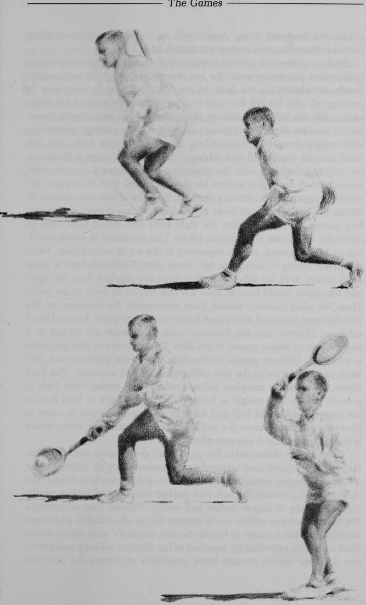
Các trận đấu — phần trình bày về kỹ thuật đánh bóng sẽ được đề cập ở phần sau. Khung a cho thấy đấu thủ ở tư thế sẵn sàng hay chuẩn bị tuyệt vời, với vợt chĩa về phía lưới, đầu gối hơi khuỵu và trọng lượng cơ thể phân bố đều trên phần trước của hai bàn chân. Trong khung b, đấu thủ đang đẩy người bằng chân trái và xoay sang phải để bắt đầu động tác đưa vợt ra sau, tay trái vẫn còn đặt trên vợt — điều này quan trọng vì buộc anh ta phải xoay vai. Khung c cho thấy thân người tiếp tục xoay với trọng lượng dồn nhiều hơn lên chân phải, vợt đưa ra sau ở vị trí cao, và tay trái hạ xuống phía dưới và sang bên để giữ thăng bằng. Khung d minh họa quả bóng đang tới, đấu thủ chăm chú nhìn bóng với đầu gối khuỵu khi bắt đầu xoay vai và chuyển trọng lượng về phía trước để chuẩn bị đánh bóng. Khung e cho thấy khoảnh khắc tiếp xúc bóng hơi chếch về phía trước thân người với thế đứng khép kín (bàn chân trái gần vạch biên dọc hơn bàn chân phải) và mặt vợt mở để đưa bóng đi dọc biên. (Lưu ý: Nhận định này đáng để ta dừng lại suy ngẫm một chút, vì nó quan trọng đối với nghệ thuật phán đoán trước. Nếu người đánh muốn đưa bóng đi chéo sân, anh ta sẽ có thế đứng mở hơn, với bàn chân trái xa vạch biên dọc hơn bàn chân phải, và vợt của anh ta sẽ phải gặp bóng xa hơn về phía trước thân người. Do đó, người trả giao bóng cảnh giác lẽ ra phải phán đoán được hướng của cú đánh trong khoảng giữa khung d và khung e và bắt đầu di chuyển để bọc lấy vạch biên dọc phía trái tay của mình.) Hãy quan sát rằng cẳng tay, cổ tay và vợt được khóa thành một đường thẳng để truyền lực cho cú đánh. Động tác chân trong chuỗi này là tuyệt vời. Nếu không có động tác chân đúng để di chuyển vào vị trí với thăng bằng tốt, bạn không thể đánh bóng ổn định và chính xác. Khung cuối cùng, f, cho thấy động tác theo đà hoàn chỉnh với đầu vợt ở vị trí cao để tạo lực. Trọng lượng đang được phân bố trở lại đều trên cả hai chân khi đấu thủ quan sát bóng và đối phương, đồng thời chuẩn bị di chuyển về tư thế sẵn sàng để chờ đón cú đánh tiếp theo dự đoán được...
portions of stroking techniques mentioned later. Frame a shows the player in excellent ready or anticipatory position with racket pointed toward the net, knees bent slightly, and weight evenly distributed on the balls of the feet. In frame b the player is pushing off with his left foot and turning to the right to start his backswing with his left hand still on the racket, which importantly forces him to turn his shoulders. Frame c shows the body pivoting continuing with weight more on the right foot, racket backswing high, and left hand brought downward and sideward for balance. Frame d illustrates the ball approaching, with the player watching the ball intently with knees bent as he begins to turn his shoulders and shift his weight forward in preparation to striking the ball. Frame e shows the moment of hitting the ball slightly in front of the body with a closed stance (left foot nearer the sideline than the right foot) and racket face open to direct the ball down the sideline. (Note: This statement is worth dwelling on for a moment, as it is important to the art of anticipation. Were the striker trying to direct the ball cross court he would have a more open stance, with his left foot farther from the sideline than his right, and his racket would have to meet the ball farther in front of his body. Thus, the alert receiver should have anticipated the direction of the shot between frames d and e and begun moving to cover his backhand sideline.) Observe that the forearm, wrist, and racket are locked in a straight line to impart power to the shot. The footwork in this sequence is excellent. Without proper footwork to move into position with balance, you cannot strike the ball with regularity and accuracy. The final frame, f, shows the complete follow-through with racket head high to provide power. The weight is being redistributed back to both feet as the player watches the ball and his opponent and prepares to move to the ready position to await the anticipated next return. The entire stroke is so rhythmical that it appears effortless. Three things characterize the play of all great tennis players. First, they make the game look relatively easy because they all utilize proper stroke-preparation methods. These entail sound footwork and fluid motions as they approach the ball with perfect balance and timing, resulting in economy of player motion and energy. Second, they all produce the various strokes within fairly narrow limits of orthodox style concepts at the vital moment of hitting the ball, although each player maintains a definite individuality matched to his physical makeup and prowess. In other words, certain basic principles of hitting the ball are
Các trận đấu — được mọi đấu thủ vận dụng, nhưng không có một phương pháp hoàn hảo duy nhất nào để tạo ra bất kỳ cú đánh quần vợt cụ thể nào. Và, thứ ba, tất cả họ đều đã luyện tập và nghiên cứu đối phương kỹ lưỡng đến mức họ luôn phán đoán trước được các cú đánh và vị trí trên sân của đối phương, nhờ đó chuẩn bị và thực hiện cú đánh đáp trả tốt nhất, bất chấp việc họ thường chỉ có chưa đầy nửa giây để đưa ra quyết định. Dù tất cả những điều này đọc lên rất hay, chúng tôi muốn nhắc lại rằng phương pháp tốt nhất để học các nguyên tắc cơ bản và hoàn thiện kỹ thuật đánh bóng của bạn là học với một người thầy có năng lực. Ngay cả những đấu thủ giỏi nhất cũng thừa nhận rằng việc tự chẩn đoán là khó khăn — một huấn luyện viên có thể phát hiện và sửa chữa một lỗi trong các cú đánh của bạn dễ dàng và nhanh chóng hơn nhiều.
The Games utilized by all players, but there is no single perfect method of producing any particular tennis stroke. And, third, they have all practiced and studied their opposition so thoroughly that they invariably anticipate the opponent’s shots and court position, and thus prepare for and make the best answering stroke despite the fact they usually have less than half a second to come to a decision. While all of this makes fine reading, we wish to reiterate that the best method of learning the fundamentals and perfecting your stroking techniques is to take lessons from a competent teacher. Even the best players recognize it is difficult to perform self-diagnosis—a coach can spot and correct a flaw in your strokes far more easily and quickly.
Giao bóng là cú đánh quan trọng nhất trong quần vợt vì hai lý do chính. Thứ nhất, đây là cú đánh được sử dụng thường xuyên nhất ở cả đánh đơn (37,5 phần trăm tổng số cú đánh — xem Bảng 6) và đánh đôi (30 phần trăm, như thể hiện trong Bảng 7). Thứ hai, và quan trọng hơn, giao bóng đặt người đánh vào thế tấn công và do đó trực tiếp hoặc gián tiếp tạo nên khoảng 25 đến 50 phần trăm tổng số cú đánh thắng điểm ở cả đánh đơn và đánh đôi. Sự chênh lệch này về hiệu quả đòi hỏi phải được giải thích đôi chút, vì tốc độ, độ hiểm và độ xoáy của quả giao bóng cùng loại mặt sân đều ảnh hưởng đến mức độ sát thương của cú đánh. NHỮNG ĐIỀU CƠ BẢN VỀ GIAO BÓNG TRONG ĐÁNH ĐƠN Trước tiên hãy xem xét tầm quan trọng của quả giao bóng trong đánh đơn. Nhiều tay vợt nam xếp hạng có thể giao bóng với tốc độ lên tới khoảng 110 dặm một giờ, nghĩa là bóng sẽ đến tay người trả giao bóng chỉ trong chưa đầy nửa giây. Trên một sân nhanh, chẳng hạn loại sân dùng ở hầu hết các giải đấu, bóng trượt đi nhanh với độ nảy thấp, khiến người trả giao bóng chỉ có thể di chuyển và vươn tới được khoảng sáu đến mười bộ về bên phải hoặc bên trái để đón bóng. Thêm vào nỗi khổ của người trả giao bóng, độ xoáy trên quả bóng có thể khiến điểm nảy đổi hướng. Tất cả những điều này nghĩa là người giao bóng có thể ghi được một số điểm ace và gây ra các lỗi bị động. Những điểm này, cùng với các lỗi, sẽ chiếm khoảng 33 phần trăm tổng số cú đánh thắng điểm (Bảng 6). Nhưng tầm quan trọng thực sự của quả giao bóng còn vượt xa những con số như vậy.
The serve is the single most important stroke in tennis for two major reasons. First, it is the most frequently used stroke in both singles (37.5 percent of all shots—see Table 6) and in doubles (30 percent, as shown in Table 7). Second, and more important, the serve puts the striker on the attack and thereby accounts directly or indirectly for from about 25 to 50 percent of all winning strokes in singles and doubles. This spread in effectiveness requires some explanation, as the velocity, placement, and spin of the serve and the type of court surface all influence the degree of lethality of the stroke. SERVING BASICS IN SINGLES Let us first consider the importance of the service in singles. Many ranking men can serve at speeds up to about 110 miles per hour, which means the ball will reach the receiver in just under half a second. On a fast court, such as used in most tournaments, the ball skids rapidly with a low bounce, so that the receiver can only move and reach about six to ten feet to his right or left to intercept the ball. To add further to the woes of the receiver, the spin on the ball can cause the bounce to change direction. All of this means the server can score a number of aces and forced errors. These, together with errors, will account for about 33 percent of all winning strokes (Table 6). But the true impor-
Giao bóng — tầm quan trọng của quả giao bóng còn vượt xa những con số như vậy. Lý do là vì quả giao bóng thường buộc đối phương trả bóng yếu hoặc đẩy người trả giao bóng ra khỏi vị trí, nhờ đó tạo tiền đề cho một cú vô-lê đầu tiên thắng điểm, hoặc đẩy người trả giao bóng vào tình thế phòng thủ mà từ đó anh ta không thể thoát ra thành công dù qua nhiều pha đổi bóng. Vì vậy, trong các trận đấu vô địch nam trên sân nhanh, quả giao bóng chịu trách nhiệm trực tiếp hoặc gián tiếp cho việc thắng khoảng 50 phần trăm tổng số điểm! Chẳng có gì đáng ngạc nhiên khi chúng tôi xếp giao bóng là cú đánh quan trọng nhất. Vì lý do này, và bởi vì nó đòi hỏi sự phối hợp chính xác giữa động tác tung bóng, đưa vợt ra sau, động tác đầu gối, chuyển trọng lượng, di chuyển chân, động tác đánh bóng và theo đà, nên quả giao bóng cần được luyện tập thường xuyên và lâu dài. Tuy nhiên, trò chơi còn phức tạp hơn thế nhiều. Nếu mặt sân chậm, hiệu quả của quả giao bóng giảm đi mạnh mẽ, ngay cả khi tốc độ vẫn giữ nguyên. Lý do là quả bóng có xu hướng cắm vào sân hỗn hợp hoặc sân đất nện chậm, để lại vết và nảy chậm hơn, cao hơn. Điều này cho người trả giao bóng thêm một phần nhỏ giây để bọc được nhiều sân hơn, cũng như đứng gần lưới hơn để cắt bớt góc mà quả giao bóng có thể xoáy sang hai bên. Những thay đổi này có vẻ nhỏ đến khó tin. Tuy nhiên, chúng kết hợp lại cho phép người trả giao bóng khôn ngoan cắt giảm mức độ của những cú giao bóng thắng điểm trực tiếp từ khoảng 33 xuống 23 phần trăm (Bảng 6), và làm giảm khả năng của người giao bóng chiếm được khu vực tấn công ở lưới nhờ vị trí đứng trả giao bóng tiến về trước, từ đó anh ta có thể đánh quả bóng nảy cao một cách hung hãn xuống dưới chân người giao bóng đang lao lên lưới. Thực tế, bằng cách thực hiện những chiến thuật này, người trả giao bóng có thể giảm xuống mức rất thấp số điểm để mất do các cú vô-lê đầu tiên (Bảng 6) và giảm tổng số điểm được quy trực tiếp hoặc gián tiếp cho quả giao bóng từ khoảng 50 phần trăm xuống 25 phần trăm. Tầm quan trọng của quả giao bóng cũng giảm bớt trong đánh đơn nữ....
The Serve tance of the serve goes well beyond such numbers. The reasons for this are that the serve often draws a weak return or forces the receiver out of position, thus setting the stage for a winning first volley, or putting the receiver into a defensive predicament from which he cannot successfully extricate himself even after several exchanges. Therefore, in men’s championship play on fast courts the serve is directly or indirectly responsible for winning about 50 percent of all points! Little question why we rank the serve as the most important stroke. For this reason, and because it requires precise coordination of ball toss, backswing, knee action, weight shift, foot movement, striking action, and followthrough, the serve should be practiced frequently and at length. However, the game is much more complicated than that. If the court surface is slow, the effectiveness of the serve is reduced drastically, even if the speed remains the same. The reason is that the ball tends to dig into a slow composition or clay court, leaving a mark and bouncing slower and higher. This allows the receiver an additional small fraction of a second to cover more court, as well as to stand in closer to net to cut down the angle available for the service ball to spin to either side. These may appear to be unbelievably small changes. However, they combine to permit the wise receiver to cut down the level of outright service winners from about 33 to 23 percent (Table 6), and to blunt the ability of the server to gain the attacking area at net by his forward receiving position, from which point he can hit the higher-bounding ball aggressively down at the feet of a net-rushing server. In fact, by carrying out these tactics the receiver can reduce to very low numbers the points lost to first volleys (Table 6) and decrease the total points attributed directly or indirectly to the serve from about 50 percent to 25 percent. The significance of the serve is also reduced in women’s singles. Few women have the ability to serve at speeds exceeding 85 miles per hour, which means that the receiver has time to execute the return. The serve in women’s singles is responsible directly or indirectly for from about 5 to 30 percent of all winning points, depending, once again, on court surface. At this time it is appropriate to describe briefly the three basic service strokes. Most good players employ the Eastern backhand or Continental grip because these provide the wrist freedom to permit you to hit the nearly flat (no serve is totally without spin), slice, and twist serves with little change in ball toss and body motion. The grip is kept light to allow the wrist to remain supple in order to provide maximum wrist
bật cổ tay đúng lúc tiếp xúc bóng. Động tác bật cổ tay cực kỳ quan trọng này truyền cả lực lẫn độ xoáy cho quả bóng. Các quả giao bóng thu được được thể hiện trong Hình 6. Quả giao bóng gần như phẳng được đánh bằng cách hướng vợt gần như thẳng vào quả bóng được tung lên ngay trên đầu, quả giao bóng cắt được đánh bằng cách hướng vợt vòng quanh, xuống dưới và qua trên một quả bóng được tung hơi xa hơn về phía bên phải, và quả giao bóng xoáy ngược được đánh bằng cách hướng vợt lên trên và qua trên một quả bóng được tung đủ xa về phía bên trái để lưng phải ưỡn cong khi thực hiện cú đánh. Những khác biệt nhỏ này trong động tác tung bóng cho phép người trả giao bóng tinh ý phán đoán trước được loại giao bóng sắp được thực hiện.
snap as the ball is struck. This all-important snap imparts both power and spin to the ball. The resulting serves are shown in Figure 6. The nearly flat serve is hit by directing the racket almost straight at the ball tossed directly overhead, the slice serve by directing the racket around, down, and over a ball tossed a bit farther to the right, and the twist serve by directing the racket up and over a ball tossed enough to the left so the back must arch as the stroke is produced. These small differences in ball tosses allow the discerning receiver to anticipate the type of serve about to be delivered.
Giao bóng — Vì người giao bóng có hai cơ hội để tạo ra một quả giao bóng thành công, chiến thuật thông thường là mạo hiểm nhiều hơn với quả giao bóng thứ nhất. Nó được đánh phẳng hơn và mạnh hơn, và các điểm nhắm tới sâu hơn hoặc rộng hơn so với quả giao bóng thứ hai (Hình 7). Do đó, nó thắng điểm trực tiếp nhiều hơn quả giao bóng thứ hai (Bảng 6). Điều này làm nảy sinh sự cám dỗ, đặc biệt ở các tay vợt trẻ, là đánh bóng quá mạnh và có quá ít quả giao bóng thứ nhất vào sân. Đây là một sai lầm rất tốn kém, điều mà chúng tôi minh họa trong Bảng 9. Dữ liệu cho cả nam lẫn nữ đều cho thấy rõ rằng một khi bạn đánh hỏng quả giao bóng thứ nhất trước một đấu thủ có thứ hạng tương đương, cơ hội thắng điểm trở nên ngang bằng. Trên sân nhanh, quả giao bóng thứ nhất tốc độ cao và sâu hơn khiến cuối cùng điểm được thắng ba trong bốn lần ở nam và ba trong năm lần ở nữ vốn giao bóng chậm hơn. Vì vậy, thật vô lý khi bạn đánh bung quả giao bóng thứ nhất ra ngoài và lãng phí tất cả năng lượng đó, cộng thêm năng lượng để chạy nửa đường lên lưới, trong khi đồng thời giảm cơ hội thắng điểm của mình xuống mức ngang bằng! Những tay giao bóng giỏi nhất thường bắt đầu trận đấu bằng cách giảm nhẹ lực ở quả giao bóng thứ nhất và đặt thêm độ xoáy vào bóng để giữ nó trong sân. Một khi họ đã có được nhịp điệu và sự tự tin, họ tăng tốc độ lên. Những tay giao bóng hàng đầu nên đưa vào sân ít nhất 70 phần trăm quả giao bóng thứ nhất. Điều này không dễ — chúng tôi đã từng thấy các tay chuyên nghiệp hàng đầu tụt xuống chỉ còn 30 phần trăm. Thành tích giao bóng thứ nhất tốt nhất mà chúng tôi từng đo được là tỷ lệ thành công tuyệt vời 85 phần trăm trong một trận đấu chuyên nghiệp tranh chức vô địch, và người giao bóng đã thắng trận đó một cách dễ dàng. Giờ thì bạn có thể hiểu rõ hơn vì sao chúng tôi khuyên luyện tập giao bóng! BẢNG 9 Ảnh hưởng của quả giao bóng đến kết quả điểm trong đánh đơn — GIAO BÓNG THỨ NHẤT / GIAO BÓNG THỨ HAI — Thắng / Thua — Thắng / Thua — SÂN NHANH: Nam 3 . 1 1; Nữ 415 1 1 1 — SÂN CHẬM: Nam 2 1 1 1; Nữ 1,5 ‘| 1 {
The Serve Since the server has two chances to produce a successful serve, the usual tactic is to take more risks with the first serve. It is hit flatter and harder, and the aim points are deeper or wider than for second serves (Figure 7). Therefore, it wins outright more points than the second serve (Table 6). This brings out the temptation, particularly in younger players, to overhit the ball and get far too few first serves into play. This is a very costly mistake, which we illustrate in Table 9. Data for both men and women show clearly that once you miss the first serve against a player of roughly equal ranking, the odds on winning the point become equal. On fast courts the higher-speed and deeper first serve results in the point being won ultimately three out of four times among the men and three out of five times for the slower-serving women. Therefore, it is ridiculous to blast your first serve out and waste all that energy, plus that of running partway to net, while at the same time reducing your chances of winning the point to even! The best servers often begin a match by easing up a bit on the first serve and putting more spin on the ball in order to hold it in the court. Once they get their rhythm and confidence established, they add to the speed. Top servers should get into play at least 70 percent of first serves. This is not easy—we have seen top professionals drop as low as 30 percent. The best first-service performance we ever measured was a fantastic 85 percent success rate in one championship professional match, which the server proceeded to win easily. Now you can better understand why we recommend practicing the serve! TABLE 9 Effect of Serve on Outcome of Points in Singles FIRST SERVE SECOND SERVE Win Lose Win Lose FAST COURT Men 3 . 1 1 Women 415 1 1 1 SLOW COURT Men 2 1 1 1 Women 1.5 ‘| 1 {
CÁC ĐIỂM NHẮM TỚI CHO GIAO BÓNG TRONG ĐÁNH ĐƠN Các điểm nhắm tới ưu tiên cho những quả giao bóng thứ nhất được thể hiện trong Hình 7A. Khoảng 50 phần trăm số quả giao bóng vào ô thuận tay và ô trái tay được nhắm sâu (trong vòng bốn bộ kể từ vạch giao bóng) vào vùng 1. Lý do là những quả giao bóng vào góc ngoài kéo người trả giao bóng ra khỏi vị trí, lệch hẳn ra ngoài sân, nhờ đó mở ra gần như toàn bộ vùng chéo sân cho một cú vô-lê đầu tiên hoặc cú đánh từ cuối sân thắng điểm hay gây sức ép. Khoảng 30 phần trăm số quả giao bóng được đánh vào vùng 2 — trong ô thuận tay — nhằm lợi dụng bên trái tay yếu hơn. Vùng 3 được dùng khoảng 10 phần trăm thời gian để nhắm những quả giao bóng cắt xoáy mạnh vào bên thuận tay của tay vợt thuận tay phải và vào ô trái tay của tay vợt thuận tay trái. Khoảng 30 phần trăm số quả giao bóng vào ô trái tay được nhắm vào vùng 2 để khiến người trả giao bóng luôn phải phỏng đoán. Hơn nữa, quả giao bóng vào bên thuận tay dọc giữa sân không cho người trả giao bóng bất kỳ cơ hội nào để trả bóng ở góc rộng.
AIM POINTS FOR SERVES IN SINGLES The preferred aim points for first serves are shown in Figure 7A. About 50 percent of serves to the forehand and backhand courts are aimed deep (within four feet of the service line) at area 1. The reason for this is that serves to the outside corner pull the receiver out of position wide of the court, thus opening up almost all of the cross-court area for a winning or forcing first volley or ground stroke. Some 30 percent of serves are hit to area 2-in the forehand court in order to take advantage of the weaker backhand side. Area 3 is used about 10 percent of the time for aiming sharply sliced serves to the forehand by righthanders and to the backhand court by lefthanders. About 30 percent of serves to the backhand court are aimed at area 2 to keep the receiver guessing. Further, the serve to the forehand down the middle does not give the receiver any opportunity for a wide-angle return.
Giao bóng — Các điểm nhắm tới cho quả giao bóng thứ hai (Hình 7B) có phần khác biệt ở chỗ vùng 1 và vùng 2 về phía trái tay yếu hơn là mục tiêu của khoảng 75 phần trăm tổng số quả giao bóng. Điều này trở nên dễ dàng hơn vì quả giao bóng xoáy ngược kiểu Mỹ an toàn và cao tự nhiên được hướng tới đó. Những quả cắt vào vùng 3 là để gây bất ngờ và để giữ người trả giao bóng không chạy vòng qua bên trái tay của mình. Hãy lưu ý rằng các điểm nhắm tới ở đây nông hơn so với các quả giao bóng thứ nhất để tránh giao bóng lỗi hai lần. Những quả giao bóng nảy còn ngắn hơn nữa, gần giữa ô giao bóng, phải bị tránh xa, vì chúng trao thế tấn công cho người trả giao bóng.
The Serve o1 Aim points for second serves (Figure 7B) are somewhat different in that areas 1 and 2 to the weaker backhand are the target of about 75 percent of all serves. This is made easier because the safe, high American twist serve is naturally directed there. Slices to area 3 are for surprise, and to keep the receiver from running around his backhand. Note that the aim points are more shallow than for first serves in order to avoid double faults. Serves landing even shorter, near the middle of the service court, must be shunned, as they give the offense away to the receiver.
CHIẾN THUẬT GIAO BÓNG TRONG ĐÁNH ĐƠN Lối đánh trên sân nhanh — Quả giao bóng có ba mục tiêu chính: (1) đưa bóng vào sân theo cách nhằm chiếm thế tấn công bằng cách buộc người trả giao bóng trả bóng yếu hoặc di chuyển ra khỏi vị trí, (2) theo bóng lên lưới để vào vị trí tấn công ở lưới, và (3) quan sát người trả giao bóng trong khi chạy lên vị trí ở lưới để phán đoán trước loại, tốc độ và hướng của cú trả giao bóng. Để đạt được những mục tiêu này, trước tiên cần đặt quả giao bóng đúng chỗ. Các ưu tiên về điểm nhắm tới được thể hiện trong Hình 7, kèm theo những nhận xét thích hợp. Một số thông tin bổ sung sẽ giúp ích cho người đọc trong việc nắm bắt ý nghĩa của quả giao bóng, chẳng hạn: • Những quả giao bóng thứ nhất sâu, nảy trong vòng khoảng bốn bộ kể từ vạch giao bóng, cuối cùng thắng điểm khoảng 75 phần trăm thời gian. Rõ ràng điều này khiến quả giao bóng mạnh trở thành điều bắt buộc đối với lối đánh đơn đỉnh cao ngày nay. • Những quả giao bóng thứ nhất sâu cho người giao bóng cơ hội kết liễu bằng một cú vô-lê đầu tiên thắng điểm với tỷ lệ ba ăn hai so với quả giao bóng thứ hai. • Yếu tố then chốt ở quả giao bóng thứ hai cũng là độ sâu. Sự cân bằng giữa việc thắng hay thua phần lớn các quả giao bóng thứ hai phụ thuộc một cách mong manh vào vấn đề độ sâu. Bạn có thể thắng khoảng 50 phần trăm số quả giao bóng thứ hai miễn là quả giao bóng đó đủ sâu. Đến đây là đủ về việc đặt bóng giao bóng gắn với việc thực hiện mục tiêu thứ nhất của người giao bóng — đó là chiếm thế tấn công. Mục tiêu thứ hai và thứ ba đòi hỏi phải vào được vị trí ở lưới cũng như suy nghĩ và phán đoán trước trong khi làm việc đó. Trên sân nhanh, lối chơi hiện đại đòi hỏi phải theo bóng lên lưới sau mỗi quả giao bóng để vào vị trí ở lưới, với những ngoại lệ quan trọng sẽ được đề cập ngay sau đây. Con đường đúng để lên lưới thay đổi tùy theo loại và cách đặt quả giao bóng cũng như cú trả giao bóng được dự đoán. Các ví dụ về điều này sẽ được khảo sát kỹ hơn trong phần lối đánh lưới. Lúc này chỉ cần nói rằng bạn nên đưa bàn chân vượt qua vạch cuối sân khi đánh quả giao bóng và nước rút lên lưới....
SERVING TACTICS IN SINGLES Fast-Court Play The serve has three major objectives: (1) to put the ball into play in a manner aimed at gaining the offense by forcing the receiver into making a weak return or moving out of position, (2) to follow in behind serve to the attacking net position, and (3) to study the receiver while running to the net position in order to anticipate the type, speed, and direction of the return of service. In order to achieve these objectives, it is first necessary to place the serve properly. The aim-point priorities are shown in Figure 7, along with pertinent comments. Some further information will be helpful to the reader in grasping the significance of the serve, such as: ¢ Deep first serves, landing within about four feet of the service line, ultimately win points approximately 75 percent of the time. Clearly, this makes the big serve a must for top-flight singles play today. ¢ Deep first serves provide the striker a better chance to put away a winning first volley by a three-to-two ratio over second serves. ¢ The key factor in the second serve is also depth. The balance between winning or losing the majority of second serves hangs delicately on the matter of depth. You can win about 50 percent of second serves provided the serve is deep. So much for the placement of the serve in connection with carrying out the first objective of the server—that of gaining the offense. The second and third objectives call for getting into the net position and thinking and anticipating while so doing. On a fast court the modern game calls for following in behind every serve to the net position, with important exceptions to be mentioned in a moment. The proper path to the net varies with the type and placement of the serve and the anticipated return of service. Examples of this will be explored more thoroughly under net play. At this moment it suffices to say that you should swing your foot over the base line as you hit the service and sprint for the net. While doing so, you must concentrate your attention not on the ball but on the receiver in order to anticipate the type, direction, and speed of the return of service. Having just recommended capturing the attacking position by following serve into net, we must note that not all top tennis players utilize
4. Cú Giao Bóng
The ServeThe Serve
những chiến thuật “trận đánh lớn” này. Thực tế, một số nhà vô địch thế giới gần đây ở cả hai hạng nam và nữ đã thắng bằng cách sử dụng lối đánh từ cuối sân mạnh mẽ với những cú đánh vượt qua đủ sát thương để làm giảm sức mạnh lối đánh lưới của đối phương, ngay cả trên sân nhanh. Nhưng rồi trên đường chân trời thể nào cũng xuất hiện một đấu thủ theo khuôn mẫu giao bóng rồi lên lưới, người sẽ hất văng tay đánh từ cuối sân khỏi đỉnh cao. Dĩ nhiên đó chính là điều làm cho quần vợt trở thành một môn thể thao tuyệt vời đến thế — sự đa dạng của nó là vô tận và không có cách thực hiện chiến thuật nào là tuyệt đối đúng. Thay vào đó, mỗi đấu thủ phải điều chỉnh các nguyên tắc cơ bản sao cho phát huy tối đa khả năng của chính mình. Lối đánh trên sân chậm — Dữ liệu về lối đánh trên sân chậm được thu thập tại Giải Vô địch Sân Đất nện Quốc gia Hoa Kỳ và trong các trận đấu diễn ra trên sân hỗn hợp. Lối chơi trên sân chậm hoàn toàn khác biệt, như các cú đánh tạo nên điểm thắng chứng tỏ (xem Bảng 6). Đây là lý do vì sao một số tay đánh mạnh lại vắng mặt trong danh sách những người đoạt chức vô địch Giải Pháp, bởi những sân đấu nổi tiếng chậm được sử dụng nghiêng lợi thế về phía nghệ sĩ đánh bóng từ cuối sân bền bỉ, dai sức. Không giống lối chơi trên sân nhanh, ngay cả những tay giao bóng giỏi nhất cũng không thể giao bóng rồi lên lưới một cách ổn định trên sân chậm trước một đối thủ có kỹ năng trả giao bóng đáng nể. Như đã nêu trong Bảng 6, chỉ có vỏn vẹn 2 phần trăm tổng số cú đánh thắng điểm trong lối chơi trên sân chậm được thực hiện bằng những cú vô-lê đầu tiên. Do đó, chúng tôi khuyên rằng việc theo quả giao bóng thứ nhất lên lưới nên được giới hạn trong hai tình huống: (1) để tạo thêm yếu tố bất ngờ nhằm giữ người trả giao bóng luôn chịu áp lực thường trực phải để ý xem bạn có đang tiến lên không, trong khi vẫn phải quan sát quả bóng, và (2) để ngăn người trả giao bóng đánh những quả trả bóng cao an toàn — sau khi bạn vô-lê kết liễu vài quả, đối phương sẽ buộc phải chuyển sang những quả trả bóng thấp mạo hiểm hơn. Khuyến nghị thứ hai là người giao bóng nên tránh hoàn toàn việc cố chiếm lưới ở quả giao bóng thứ hai. Các điểm nhắm tới để đặt quả giao bóng thứ nhất và thứ hai trên sân chậm cũng giống như trên sân nhanh, chỉ với một ngoại lệ. Khi giao bóng vào ...
these “big game”’ tactics. In fact, some recent world’s champions in both the men’s and women’s divisions have won by employing a powerful base-line game with passing shots sufficiently deadly to blunt the opponent’s net play, even on fast courts. But then there inevitably appears on the horizon a player cast in the serve-and-volley mold who will oust the base-liner from the pinnacle. That, of course, is what makes tennis such a great game—its variety is endless and there is no absolutely correct way to execute tactics. Instead, each player must adapt the basics to maximize his own capabilities. Slow-Court Play Data on slow-court play were collected at the U.S. National Clay Court Championship and during matches played on composition courts. The slow-court game is entirely different, as the strokes responsible for winners attest (see Table 6). This is why some of the big hitters are missing from the lists of the French Championship titleholders, as the notoriously slow courts used tilt the advantage to the steady ground-stroke artist with stamina. Unlike fast-court play, not even the very best servers can serve and volley consistently on a slow court against an opponent with respectable return-of-service skills. As noted in Table 6, only a paltry 2 percent of all winning shots in slow-court play are made with first volleys. Therefore, we recommend that following the first serve in to net should be restricted to two situations: (1) to inject an element of surprise so that the receiver is kept under constant pressure to note whether you are coming in, while also watching the ball, and (2) to prevent the receiver from hitting safe high returns—after you volley away a few, the opponent will have to resort to riskier lower returns. A second recommendation is that the server avoid completely trying to take the net on a second serve. The aim points for placing the first and second serves on slow-courts are the same as for fast courts, with one exception. In serving to the forehand court most players prefer to place the first serve into the backhand instead of the forehand corner (see Figure 7) about 50 percent of the time and to use other parts of the court as surprise variants. The reason, of course, is that you are no longer trying to open up the court for an easy first volley. The two most important tactics to remember have to do with preventing the receiver from stealing away the offensive. The first entails
VỊ TRÍ CỦA ĐỘI GIAO BÓNG VÀ ĐỘI TRẢ GIAO BÓNG TRONG ĐÁNH ĐÔI — Người giao bóng B đứng ở giữa khoảng cách từ tâm vạch cuối sân đến vạch biên dọc, nhờ đó anh ta có lộ trình ngắn nhất để tới đúng vị trí ở lưới và có cơ hội đổi hướng tốt hơn để đón cú trả giao bóng so với việc xuất phát từ R, vị trí giao bóng thông thường trong đánh đơn. Người đồng đội của người giao bóng là A đứng cách lưới từ sáu đến mười bộ (tùy theo chiều cao và độ nhanh nhẹn của anh ta trong việc đối phó với những cú bổng, và việc đối phương có đang dùng cú bổng hay không), và cách khoảng một đến hai bộ về phía giữa sân, vượt qua điểm giữa của khoảng cách từ vạch biên dọc đến vạch giữa sân. Có hai lý do vì sao người đánh lưới nên áp sát khu giữa. Thứ nhất, vì phần lớn các cú trả giao bóng đều đi chéo sân, việc áp sát khu giữa cho phép người đánh lưới dễ dàng vô-lê bất kỳ quả trả bóng dọc giữa nào đi lạc. Và thứ hai, nó mang lại cho anh ta một vị trí khởi đầu thuận lợi để “cắt bóng (poach)” nhanh chóng và bất ngờ, vô-lê kết liễu những quả trả giao bóng chéo sân tưởng chừng hiệu quả. Sẽ còn nói thêm về “cắt bóng (poach)” sau đây một chút. Đội hình tiêu chuẩn của đội trả giao bóng có người trả giao bóng M đứng ngay bên trong vạch cuối sân và người đánh lưới N ở vị trí lưới điều chỉnh.
SERVING AND RECEIVING TEAM POSITIONS IN DOUBLES Server B stands midway between the center of the base line and the sideline, leaving him the shortest route to the proper net position and a better chance to change direction to intercept the return of service than if he had started from R, the normal serving position in singles. The server’s partner A stands from six to ten feet from the net (depending on his height and agility in covering lobs, and whether the opponents are using the lob), and about one or two feet toward the center beyond the midpoint between sideline and center line. There are two reasons why the net man should crowd the center. First, since most returns of service are cross court, crowding the center permits the net man to volley easily any errant downthe-middle returns. And, second, it provides him with a head-start position for “poaching” rapidly with surprise to volley away for winners seemingly effective cross-court returns of service. More about “poaching” a bit later. The receiving-team standard formation has receiver M just inside the base line and net man N in the modified net position.
The ServeThe Serve
việc đưa quả giao bóng thứ nhất vào sân thường xuyên nhất có thể, ngay cả khi điều đó có nghĩa là đánh bóng ở khoảng ba phần tư tốc độ. Điểm thứ hai là cố gắng đánh cả quả giao bóng thứ nhất lẫn thứ hai cho sâu. Những chiến thuật này đều nhằm ngăn người trả giao bóng liều mình tiến lên đón quả giao bóng để có thể trả bóng gây sức ép và nắm thế tấn công. Trong thực tế thi đấu, những quả giao bóng sâu khiến người giao bóng thắng điểm với tỷ lệ thoải mái hai ăn một, trong khi những quả giao bóng nông dẫn đến một cuộc vật lộn để đạt được thế cân bằng một đổi một. Lý do của điều này sẽ trở nên rõ ràng trong Chương 4 về “Cú trả giao bóng”. NHỮNG ĐIỀU CƠ BẢN VỀ GIAO BÓNG TRONG ĐÁNH ĐÔI — Cú giao bóng trong đánh đôi, nếu có khác, thì thậm chí còn quan trọng hơn quả giao bóng trong đánh đơn. Trong lối đánh đôi giỏi, mất quyền giao bóng là tội lỗi nghiêm trọng nhất, vì hầu hết các ván đấu được định đoạt chỉ bằng một lần bẻ giao bóng duy nhất. Có bằng chứng mạnh mẽ ủng hộ tầm quan trọng của quả giao bóng. Chúng ta đã thấy trong Chương 2 rằng đánh đôi được thắng bằng cách chiếm và duy trì vị trí tấn công, tức là ở lưới. Quả giao bóng thành công trong đánh đôi có hai mục tiêu chính: Thứ nhất, nó cố gắng thắng điểm bằng cách buộc người trả giao bóng mắc lỗi hoặc trả bóng yếu, và thứ hai, nó được cho là mang lại cho người giao bóng một hành trình an toàn lên vị trí tấn công ở lưới vào đầu mỗi điểm. Hơn nữa, như đã nêu trong Chương 2 (Bảng 7), cú đánh khởi đầu quan trọng này là cú được sử dụng thường xuyên nhất trong đánh đôi. Trong chương này, lối chơi của đội giao bóng sẽ chỉ được xét đến mức chuẩn bị cho cú vô-lê trả giao bóng. Lối chơi từ điểm đó trở đi sẽ được bàn trong Chương 5, về “Lối đánh lưới”. Các vị trí bình thường đúng đắn cho các đấu thủ của đội giao bóng A và B ở ô thuận tay hoặc ô trái tay được thể hiện trong Hình 8. Ngoài ra còn có một số đội hình giao bóng không theo quy ước sẽ được đề cập sau. Các thành viên của đội trả giao bóng M và N sẽ được bàn trong Chương 4. Để thực hiện hai mục tiêu chính nói trên của người giao bóng, anh ta phải sử dụng những vũ khí ...
getting the first serve in as often as possible, even if this means hitting the ball at about three-quarters speed. The second point is to try to hit both first and second serves deep. These tactics are both aimed at preventing the receiver from risking moving forward on the serve so that he can make a forcing return and assume the offensive. In actual practice, deep serves result in the server winning points at a comfortable two-to-one ratio, whereas shallow serves result in a struggle to achieve a one-to-one standoff. The reasons for this will become clear in Chapter 4 on “Return of Service.” SERVING BASICS IN DOUBLES The service stroke in doubles is, if anything, even more important than the serve in singles. In good doubles play a loss of serve is the cardinal sin, as most sets are decided by but a single break in service. There is strong evidence to back up the importance of the serve. We have already seen in Chapter 2 that doubles is won by taking and maintaining the offensive position, which is at the net. The successful serve in doubles has two major objectives: First, it attempts to win the point by forcing the receiver into an error or weak return, and, second, it is supposed to provide the server a safe journey in to the attacking position at net at the start of each point. Furthermore, as noted in Chapter 2 (Table 7), this important starting stroke is the one most frequently used in doubles. In this chapter the play of the serving team will be taken only as far as preparing for the volley of the return of service. The play from that point on will be discussed in Chapter 5, on “Net Play.” The proper normal positions for serving-team players A and B in either the forehand or backhand court are shown in Figure 8. There are also some unconventional serving formations which will be mentioned later. Receiving team members M and N will be discussed in Chapter 4. To carry out the two aforementioned primary objectives of the server, he must employ the weapons of speed, spin, and placement of the service. All outstanding doubles players agree that the one most important objective in serving is to put the first service into play. The logical reasons for this are several. First, the receiver must position himself deeper in fear that a fast first service may produce an ace or force a weak, losing return. Second, the fact that the receiver is positioned deeper permits the server to gain a step or two in his tactic of dashing
Hình 9 CÁC ĐIỂM NHẮM TỚI CHO GIAO BÓNG TRONG ĐÁNH ĐÔI — Các điểm nhắm tới ưu tiên cho những quả giao bóng thứ nhất trong đánh đôi được thể hiện trong biểu đồ này. Khoảng 80 phần trăm số quả giao bóng thứ nhất được đánh vào vùng 1 ở bên trái tay yếu hơn của đối phương trong cả hai ô. Đây thường là những quả giao bóng xoáy ngược hoặc xoáy, được đánh an toàn cao qua lưới ở khoảng ba phần tư tốc độ để đưa quả giao bóng thứ nhất vào sân vì lợi thế chiến thuật to lớn mà nó mang lại. Quả giao bóng cắt vào vùng 2 hoặc vùng 3 thường được dùng như một biến thể gây bất ngờ để giữ người trả giao bóng không chạy vòng qua bên trái tay của mình. Quả cắt cũng hữu ích khi giao bóng vào bên trái tay của một tay vợt thuận tay trái. Quả giao bóng gần như phẳng kiểu đại bác không phải là một canh bạc hay trong đánh đôi, vì nó thường đánh hỏng, và còn cắt giảm thời gian người giao bóng có để chạy lên vị trí tấn công ở lưới. Các điểm nhắm tới cho quả giao bóng thứ hai cũng giống như cho quả giao bóng thứ nhất, nhưng các điểm nhắm tới nông hơn một chút để tránh giao bóng lỗi hai lần. Điểm cần tránh là một quả giao bóng nông vào giữa sân, vì nó cho người trả giao bóng cơ hội tiến lên và nắm thế tấn công (xem Hình 12).
Figure 9 AIM POINTS FOR SERVES IN DOUBLES The preferred aim points for first serves in doubles are shown in this diagram. About 80 percent of first serves are hit to area 1 on the opponent’s weaker backhand side in both courts. These are usually twist or spin serves hit safely high over the net at about threefourths speed in order to get the first serve into play because of the great tactical advantage it provides. The slice serve to area 2 or 3 is usually employed as a surprise variant to keep the receiver from running around his backhand. The slice is also useful in serving to the backhand of a lefty. The nearly flat cannonball serve is not a good gamble in doubles, as it often misses, and also cuts down on the time available to the server in running to the offensive position at net. The aim points for the second serve are the same as for the first serve, but the aim points are slightly more shallow in order to avoid double faults. The spot to avoid is a shallow serve to the middle, which gives the receiver the opportunity to move in and take the offensive (see Figure 12).
Giao bóng — tiến về phía vị trí ở lưới cực kỳ quan trọng. Và thứ ba, sự kết hợp của hai điểm một và hai dẫn đến việc người trả giao bóng gần như mất hẳn khả năng tước đi thế tấn công bằng cách tiến lên phía trước để trả giao bóng thấp xuống dưới chân dễ bị tổn thương của người giao bóng đang lao lên lưới. Sẽ còn nói thêm về những chiến thuật trả giao bóng như vậy trong Chương 4. Lợi ích của lời khuyên này trở nên vô cùng rõ ràng khi giờ đây chúng ta xem xét dữ liệu về những lợi thế của việc đưa quả giao bóng thứ nhất vào sân so với quả giao bóng thứ hai. Đội giao bóng cuối cùng thắng từ 70 đến 80 phần trăm tổng số điểm khi quả giao bóng thứ nhất thành công. Khi quả giao bóng thứ nhất bị lỗi, người trả giao bóng có thể tiến lên phía trước để đánh quả giao bóng thứ hai yếu hơn từ một vị trí tấn công tốt hơn. Dữ liệu cho thấy người trả giao bóng có thể theo cú trả bóng của mình lên vị trí tấn công ở lưới thường xuyên gấp sáu lần khi trả thành công quả giao bóng thứ hai so với khi trả thành công quả giao bóng thứ nhất. Điều này có tác động tàn phá, vì đội giao bóng cuối cùng chỉ thắng từ 30 đến 50 phần trăm số điểm ở những quả giao bóng thứ hai. Một nguy hiểm thêm nữa là những quả giao bóng thứ hai đánh hỏng dẫn đến giao bóng lỗi hai lần, và chưa từng có đấu thủ nào thắng điểm theo cách đó. Hãy nhớ rằng, ngay cả những tay giao bóng giỏi nhất trong quần vợt cũng tránh đánh bung quả giao bóng thứ nhất trong đánh đôi để tìm kiếm lợi thế chiến thuật là đưa quả bóng đầu tiên vào sân một cách an toàn. Hãy lưu tâm điều đó, và tập trung phát triển một quả giao bóng thứ nhất đáng tin cậy, cùng một quả giao bóng thứ hai được kiểm soát chỉ với tốc độ thấp hơn đôi chút. Các điểm nhắm tới ưu tiên cho quả giao bóng thứ nhất và thứ hai trong đánh đôi được thể hiện trong Hình 9. Lúc này, một lời giải thích sơ bộ về logic đằng sau những điểm nhắm tới được khuyến nghị này sẽ giúp người đọc hiểu được những cân nhắc chiến thuật quan trọng. Ngay từ đầu phải nhận thức rằng hành động giao bóng trong đánh đôi đòi hỏi tinh thần đồng đội, với mỗi đấu thủ đều có những nhiệm vụ quan trọng. Nhiệm vụ của người giao bóng có thể được tóm tắt như sau: • Khi tiếp xúc bóng, anh ta phải đưa bàn chân phía sau vượt qua vạch cuối sân và nước rút lên lưới theo một đường thẳng, đưa một bước ...
The Serve o7 toward the all-important net position. And, third, a combination of items one and two results in a vanishing capability of the receiver to take away the offensive by moving forward in order to return service down and low at the vulnerable feet of the net-rushing server. More about such receiving tactics in Chapter 4. The benefits of this advice become crystal clear as we now examine data on the advantages of getting the first service into play over the second service. The serving team ultimately wins from 70 to 80 percent of all points when the first serve is good. When the first serve is a fault, the receiver can move forward to hit the weaker second serve from a better attacking position. Data show the receiver can follow his return into the offensive position at net six times as often on successful returns of the second service as on successful returns of first service. This has a devastating effect, as the serving team ultimately wins only from 30 to 50 percent of points on second serves. An added danger is that missed second serves result in double faults, and no player has ever won a point that way. Remember, even the best servers in tennis avoid blasting the first serve in doubles in order to seek the tactical advantage of getting the first ball safely into play. Take heed, and concentrate on developing a reliable first serve, and a controlled second serve of only slightly less speed. The preferred aim points for first and second serves in doubles are shown in Figure 9. At this time a preliminary explanation of the reasoning behind these recommended aim points should assist the reader in understanding the important tactical considerations. At the outset it must be recognized that the act of serving in doubles requires teamwork, with each player having important duties. The server’s duties can be summarized as follows: ¢ Upon striking the ball he must bring his trailing foot over the base line and sprint for the net in a straight line, taking a series of long steps. (This run for the net must take place on every serve until a fault is obvious or called, as stopping and being caught halfway can lose the point.) Following about four long steps, the server should bring both feet together with weight equally distributed at a point just short of the service line so that he is prepared to hop and then move in any direction. At that moment he must anticipate the most likely type of return of service, depending on the bounce point of the serve and his study of the stroking actions of the receiver. Then he must move toward the proper area to intercept the ball as close to
lên lưới càng gần càng tốt (tầm quan trọng của điều này sẽ được bàn trong Chương 5), hoặc quay lại và đón những cú bổng. Người giao bóng cũng nên tự làm quen với những quy tắc mới nhất về lỗi bàn chân. Một mặt, thật không công bằng khi lợi dụng đối phương bằng cách giành được một lợi thế khởi đầu quan trọng để tiến về vị trí ở lưới. Mặt khác, có thể rất nản lòng khi giao một quả bóng tưởng như thắng điểm vào một thời điểm then chốt của một trận đấu quan trọng mà lại bị xử là lỗi bàn chân. Người đánh lưới cũng có một số nhiệm vụ để hỗ trợ giành hoặc duy trì thế tấn công cho đội giao bóng, như sau: • Người đánh lưới phải quan sát quả bóng được giao đi ngang qua mình và xác định tốc độ, độ xoáy của nó, cũng như nơi nó sẽ nảy trong ô giao bóng. Một phần nhỏ giây sau, anh ta nên chuyển sự chú ý từ quả bóng sang người trả giao bóng để cố phán đoán trước, từ vị trí quả bóng và thế đứng, động tác đưa vợt ra sau của người trả giao bóng cùng cách anh ta chuẩn bị thực hiện cú đánh, xem sẽ tạo ra loại cú đánh nào — đánh phẳng hay đánh xoáy lên, xoáy chéo hay cú đẩy nhẹ (dink), hay cú bổng — và theo hướng nào. Việc nghiên cứu liên tục bất kỳ người trả giao bóng nào cũng sẽ nâng cao khả năng phán đoán trước của người đánh lưới một cách chính xác hơn. Đến đây người đánh lưới đã sẵn sàng tái định vị mình để mang lại cho đội giao bóng đội hình tấn công tối ưu. Nếu anh ta phán đoán trước được một cú trả bóng dọc biên, vào giữa sân, hoặc chéo sân gắt, anh ta nên di chuyển sang trái hoặc sang phải để bọc lấy phần sân thuộc trách nhiệm của mình. Nếu anh ta lường trước một cú bổng, người đánh lưới nên lùi lại một hai bước và sẵn sàng cố đánh quả bóng bằng cú đập bóng trên cao (smash) thuận tay mạnh hơn của mình. Một yếu tố rất quan trọng, nếu không muốn nói là quan trọng nhất, trong lối đánh của người đánh lưới là vấn đề thời điểm. Không có động tác nào, ngoài động tác giả, nên được thực hiện trước khi người trả giao bóng đã hoàn toàn lao vào cú đánh của mình. Khoảng thời gian giữa việc phán đoán trước và việc di chuyển là cực kỳ ngắn ngủi. Một sự khởi đầu quá sớm có khả năng để lộ một khoảng trống cho một cú đặt bóng hiểm sau lưng động tác di chuyển của người đánh lưới. Đấu thủ khéo léo chờ đợi cho đến khoảnh khắc ngắn ngủi giữa lúc người trả giao bóng đang ...
the net as possible (the importance of this will be covered in Chapter 5), or to reverse and retrieve lobs. The server should also familiarize himself with the latest foot-fault rules. On one hand, it is unfair to take advantage of opponents by getting an important head start toward the net position. On the other hand, it can be very discouraging to serve an apparent winner at a vital moment in an important match and have it ruled a foot fault. The net man also has several duties in order to assist in gaining or maintaining the offensive for the serving team, as follows: e The net man must watch the served ball move past him and determine its speed, spin, and where it will land in the service court. A split second later he should shift his attention from the ball to the receiver in order to try to anticipate from the ball position and the receiver’s stance, backswing, and the manner in which he prepares to produce his stroke what type of shot will result—flat or topped drive, angled spin or dink, or lob—and in what direction. Continued study of any receiver should increase the net man’s ability to anticipate more accurately. The net man is now ready to reposition himself to give the serving team the optimum offensive formation. If he anticipates a return down the sideline, to the middle, or sharply cross court, he should move to the left or right to cover his portion of court-area responsibility. If he foresees a lob, the net man should retreat a step or two and be prepared to try to play the ball with his stronger forehand overhead. A very important, if not the most vital, factor in net-man play is the matter of timing. No move, other than a fake, should be made before the receiver is fully committed to make his shot. The interval of time between the anticipation and the move is extremely brief. A premature start is likely to leave an opening for a placement behind the net man’s move. The skilled player waits until that brief instant between when the receiver is sufficiently committed so as not to be able to alter his stroke, and the moment when the ball is struck. That is precisely when the net man can poach cross court to win points (more on poaching later). As one expert player stated: ‘Half the art of anticipation is to conceal the fact that you have anticipated.” Continued concentration by the net man should enable him to guess the enemy plans and win or save many points in each set. And mental lapses and ill-timed moves can embarrass your partner, and lose points as well.
The ServeThe Serve
Giờ đây là lúc thích hợp để xem xét chi tiết hơn đôi chút những hàm ý và hiệu quả chiến thuật của ba điểm nhắm tới giao bóng khác nhau. Thứ nhất, cần tham chiếu Hình 10, giải thích những lợi thế mà đội giao bóng thu được khi hướng quả giao bóng thứ nhất vào điểm nhắm tới 1, góc trái tay của ô thuận tay. Hãy nhớ rằng trong mọi trường hợp chúng ta đều đang xét đến nỗ lực tập thể khi mô tả các động tác di chuyển của cặp giao bóng. Thứ hai, những lý do vì sao điểm nhắm tới 2 tạo ra những vị trí tấn công kém thuận lợi hơn cho đội giao bóng được minh họa rõ ràng trong Hình 11. Quả giao bóng cắt vào ô thuận tay mở ra những góc rộng cho cú trả bóng từ bên thuận tay mạnh hơn. Đó là lý do vì sao quả giao bóng này chỉ được dùng dè dặt để giữ người trả giao bóng trung thực. Một quả giao bóng cắt vào vùng 2 trong ô trái tay không mạo hiểm như vậy, vì người trả giao bóng chỉ có những góc hẹp mở ra từ tâm vạch cuối sân cho cú trả bóng thuận tay đáng tin cậy của mình. Quả giao bóng rộng vào góc trái tay của ô trái tay không gây ra những vấn đề về góc gắt gao như ở ô thuận tay, vì cú trả bóng phải được đánh từ bên trái tay vốn thường yếu hơn. Cố gắng chạy vòng qua một quả giao bóng như vậy để đánh nó từ bên thuận tay sẽ đẩy người trả giao bóng ra khỏi sân rất xa. Và thứ ba, bất lợi to lớn do quả giao bóng ngắn gây ra được minh họa sinh động trong Hình 12. Các chiến thuật giao bóng là giống nhau cho đánh đôi nữ và đánh đôi nam. Nếu vì lý do nào đó bạn không thể theo quả giao bóng của mình lên lưới, nguyên tắc phải là lên đó ở ngay cú đánh đầu tiên mà bạn có thể, bởi vì đánh đôi được thắng ở lưới. Quả giao bóng là một cuộc đấu tay đôi giữa người giao bóng và người trả giao bóng, với mỗi bên cố giành lợi thế để cú đánh thứ hai của đội mình có thể mang tính tấn công. Điều này nghĩa là người giao bóng phải liên tục nghiên cứu người trả giao bóng, vị trí, kỹ thuật đánh bóng, động tác di chuyển, thói quen trả bóng của anh ta, và cố đoán trước được anh ta nhờ phán đoán trước. Cơ hội nghiêng về phía người giao bóng vì anh ta bắt đầu với thế tấn công. Anh ta phải đẩy lợi thế này lên mức tối đa. Không ...
It is now timely to examine in some detail the tactical implications and effects of three different service aim points. First, reference should be made to Figure 10, which explains the advantages accruing to the serving team from directing the first serve to aim point 1, the backhand corner of the forehand court. Remember that we are in every instance considering a team effort in describing the movements of the serving duo. Second, the reasons why aim point 2 produces less advantageous offensive positions for the serving team are well illustrated in Figure 11. The slice serve to the forehand court opens up wide angles for the return from the stronger forehand side. That is why this serve is used only sparingly to keep the receiver honest. A slice serve to area 2 in the backhand court is not as risky, since the receiver has only narrow angles open from the center of the base line for his trusted forehand return. The wide serve to the backhand corner of the backhand court does not present the severe angle problems of the forehand court, since the return has to be played from the normally weaker backhand side. Trying to run around such a serve to play it from the forehand would force the receiver way out of court. And, third, the great disadvantage created by the short serve is graphically illustrated in Figure 12. The tactics for serving are the same for women’s and men’s doubles. If for some reason you are not able to follow your serve in to net, the rule should be to get there on the very first shot you can, because doubles is won at the net. The service is a duel between the server and the receiver, with each trying to gain an advantage so that the second shot by his team can be an offensive one. This means the server must continually study the receiver, his position, stroke techniques, movements, return habits, and try to outguess him through anticipation. The odds favor the server because he begins with the offense. He must push this advantage to the utmost. Unconventional Serving Formations Two axioms of the sporting world—keep the opponents off balance and change tactics if losing—are responsible for the birth of the unconventional stratagem in every game. It is only logical that surprise changes of serving formations should become important elements in the game of doubles. Near the turn of the century both the Americans and the Australians
Hình 10 ẢNH HƯỞNG CỦA VIỆC ĐẶT BÓNG GIAO BÓNG ĐẾN CÁC GÓC CÓ THỂ CỦA CÚ TRẢ GIAO BÓNG — Một quả giao bóng sâu vào điểm nhắm tới ưu tiên, vùng 1, là nước khai cuộc mạnh nhất vì nó mang lại cho đội giao bóng hành trình an toàn nhất để chiếm được vị trí ở lưới cực kỳ quan trọng. Một cú trả bóng của người trả giao bóng M vào vùng 2 là khó xảy ra, vì cần độ chính xác cao để đánh được góc hẹp đó qua phần cao của lưới. Điều này cho phép người đánh lưới A đơn giản hóa công việc của người giao bóng. Khi thấy quả giao bóng nảy trong vùng 1 và nhận ra người trả giao bóng đã lao vào cú trả bóng chéo sân hợp lý hơn, người đánh lưới A có thể trượt sang như hình vẽ để bọc lấy khu giữa sân. Điều này cho phép người giao bóng B nhận ra động tác di chuyển này và tiến lên rộng hơn một chút để bọc lấy những cú trái tay hoặc những cú thuận tay chạy vòng được đánh vào vùng 3, và những cú đánh gắt góc hướng vào vùng 4. Những cú đánh sau phải được đánh nhẹ qua phần lưới cao hơn ở vạch biên dọc để giữ bóng trong sân, nhờ đó cho người giao bóng thêm thời gian để chuyển hướng và đón chúng. Những cú bổng do người trả giao bóng M đánh từ giữa sân vào vùng 5 có thể được người đánh lưới A xử lý hiệu quả, người này thường có thể lùi lại và đánh chúng bằng bên đập bóng trên cao (smash) thuận tay mạnh hơn của mình.
Figure 10 EFFECT OF PLACEMENT OF SERVE ON POSSIBLE ANGLES M OF RETURN OF SERVICE A deep serve to the preferred aim point, area 1, is the strongest gambit because it gives the serving team the safest journey to gain the allimportant net position. A return by receiver M to area 2 is unlikely, since great accuracy is required to hit that narrow angle over the high portion of the net. This permits net man A to simplify the server’s job. On seeing the serve bounce in area 1 and noting the receiver commit himself to the more logical cross-court return, net man A can slide over, as shown, to cover the center of the court. This permits server B to note this move and come up a bit wider to cover backhands or runaround forehands hit to area 3, and sharply angled shots directed to area 4. The latter must be hit softly over the higher net at the sideline in order to stay in the court, thus giving the server added time to swerve and intercept them. Lobs hit by receiver M from the center of the court to area 5 can be handled effectively by net man A, who can usually drop back and play them on his stronger forehand overhead side.
The ServeThe Serve
Hình 11 ẢNH HƯỞNG CỦA VIỆC ĐẶT BÓNG GIAO BÓNG ĐẾN CÁC GÓC CÓ THỂ CỦA CÚ TRẢ GIAO BÓNG — Một quả giao bóng cắt vào điểm nhắm tới 2 được khuyến nghị như một mưu chước gây bất ngờ thỉnh thoảng dùng để làm mất thăng bằng người trả giao bóng với hy vọng kéo được một cú trả bóng yếu. Tuy nhiên, nếu người trả giao bóng M tỉnh táo và đúng vị trí, đội giao bóng phải đối mặt với một nhiệm vụ khó khăn khi phòng thủ trước một cú thuận tay mạnh kết hợp với những góc trả bóng rộng hơn có sẵn. Người đánh lưới A đối mặt với một lựa chọn khó khăn. Nếu anh ta thực hiện động tác di chuyển ưu tiên sang trái để bọc lấy một cú đánh dọc hành lang dọc biên vào vùng 7, hoặc một cú bổng đánh vào bên đập bóng trên cao (smash) trái tay yếu của mình ở vùng 5, anh ta để hở vùng giữa 6. Ngược lại, nếu anh ta di chuyển sang phải để bọc lấy khu giữa, như anh ta đã làm trong Hình 10, anh ta để hành lang dọc biên không được bảo vệ. Người giao bóng phải quan sát những động tác di chuyển của người trả giao bóng và của người đánh lưới bên mình, rồi chọn giữa việc bọc lấy những vùng giữa 6 và 3 hoặc cú đánh rộng vào vùng 4. Vùng sau này đặc biệt khó phòng thủ vì, không giống cú đẩy nhẹ (dink) chậm và nhẹ được thể hiện trong Hình 10, người trả giao bóng có thể đánh một cú đánh thuận tay chéo sân xoáy lên gắt qua phần lưới thấp hơn và vẫn giữ bóng trong sân. Rõ ràng, ở những quả giao bóng vào điểm nhắm tới 2, đội giao bóng phải phán đoán trước cú trả bóng và dựng lên các vị trí tấn công của mình một cách chuẩn xác không sai, nếu không đối phương có thể đánh xuyên qua một lỗ hổng để đặt bóng hiểm hoặc buộc đối phương mắc lỗi bị động.
Figure 11 EFFECT OF PLACEMENT OF SERVE ON POSSIBLE ANGLES OF RETURN OF SERVICE A slice serve to aim-point 2 is recommended as a surprise ploy from time to time to throw the receiver off balance in hopes of drawing a weak return. However, if receiver M is alert and in position, the serving team faces a difficult task defending against a strong forehand in combination with wider available return angles. Net man A faces a tough choice. If he makes the preferred move to his left to cover a drive down the alley to area 7, or a lob hit to his weak backhand overhead to area 5, he leaves the center area 6 open. Conversely, if he moves to the right to cover the center, as he did in Figure 10, he leaves the alley unguarded. The server must observe the moves of the receiver and of his net man and choose between covering the center areas 6 and 3 or the wide shot to area 4. This latter area is particularly difficult to defend because, unlike the slow, soft dink shown in Figure 10, the receiver can hit a severe topped cross-court forehand drive over the lower portion of the net and keep it in court. Obviously, on serves to aim point 2 the serving team must anticipate the return and set up their offensive positions unerringly, or the opponents can hit through a hole for a placement or forced error.
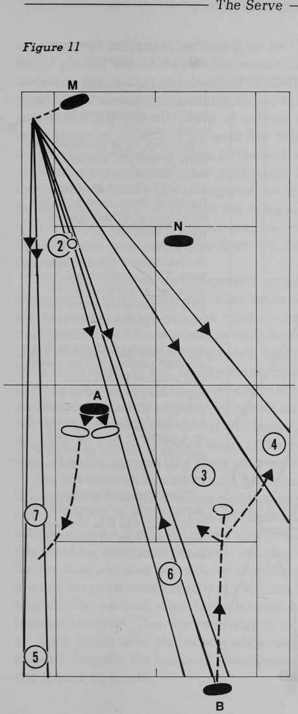
NHỮNG HIỂM HỌA CỦA CÚ GIAO BÓNG NÔNG Một cú giao bóng nông rất dễ dẫn đến thảm họa, bởi nó thường trao thế tấn công cho đội đỡ giao bóng. Người trả giao bóng M, như đã chỉ ra, có thể tiến vào và chạy vòng qua một cú giao bóng đi đến khu vực 3 để đánh bóng bằng cú thuận tay mạnh của mình. Từ vị trí gần lưới, anh ta có quyền chọn đánh vào những khoảng trống ở khu vực 7, 6 hoặc 4, hay bổng bóng đến khu vực 5, tùy theo vị trí của đội giao bóng. Vị trí của họ chẳng có gì đáng ganh tị, vì người đánh lưới A có rất ít thời gian để di chuyển dưới làn bóng cận chiến từ người trả giao bóng M, còn người giao bóng B không có thời gian để tiến gần lưới hơn vị trí Y. Điều này có nghĩa là người trả giao bóng M có cơ hội liếc nhìn vị trí của đội giao bóng rồi đánh những cú gây sức ép đến khu vực 7 hoặc 4, đánh những cú dọc sân vào vị trí hiểm ở ngay dưới chân người giao bóng B tại khu vực 6, hay bổng bóng qua đầu người đánh lưới A đến khu vực 5. Kết cục của những cú giao bóng nông hẳn phải là thảm họa, và đúng là như vậy. Đội giao bóng thua hơn 50 phần trăm số điểm kiểu này.
THE HAZARDS OF THE SHALLOW SERVE A shallow serve is likely to bring on disaster in that it often hands the offense over to the receiving team. Receiver M, as indicated, can move in and run around a serve hit to area 3 in order to play the ball with his strong forehand. From close in he has his choice of hitting to open spots at area 7, 6, or 4, or lobbing to area 5, depending on the positions of the serving team. Their positions are hardly enviable, as net man A has little time to move under pointblank range from receiver M, and server B does not have time to approach closer to the net than position Y. This means that receiver M has the opportunity to glance at the positions of the serving team and play forcing shots to area 7 or 4, drives to the vulnerable position at the feet of server B in area 6, or lobs over the head of net man A to area 5. The outcome of shallow serves would be expected to be disastrous, and it is. Serving teams lose over 50 percent of such points.
The ServeThe Serve
thử nghiệm một thế đứng đảo ngược cho đội giao bóng. Cách bố trí người đánh lưới cùng phía sân với người giao bóng (như thể hiện trong Hình 13A) được thiết kế nhằm vô hiệu hóa một cú trả giao bóng chéo sân xuất sắc. Nói cách khác, người giao bóng đã quá mệt mỏi vì phải cào những cú trả giao bóng đặt bóng tuyệt đẹp từ trong đất lên và thua nhiều điểm do những cú vô-lê đầu tiên yếu ớt của mình. Thay vì tuyệt vọng, người phát minh quyết định thay đổi chiến thuật và thử một thế đứng mới. Có hai lý do khiến điều này hoàn toàn hợp lý. Thứ nhất, người đánh lưới có thể chiếm vị trí phòng thủ tốt nhất để chống lại cú trả giao bóng, và không buộc phải di chuyển quá xa để thực hiện cú vô-lê. Thứ hai, người trả giao bóng, khi đối mặt với một thế phòng thủ vô hiệu hóa cú trả giao bóng mà anh ta đã luyện tập, thường kém hiệu quả hơn mỗi khi anh ta chọn đánh dọc biên vào phía người giao bóng đang tiến lên ở phía đảo ngược. Nếu được thực hiện đúng, những thế đứng giao bóng khác thường có thể gây rối loạn tinh thần đối phương ghê gớm. Với đủ kiểu thế đứng, cắt bóng (poach) và động tác giả dùng để đối phó mình, người trả giao bóng có thể bị đẩy đến mức mất tập trung hoàn toàn. Những chiến thuật như vậy buộc người trả giao bóng phải quan sát cả chuyển động của đội giao bóng lẫn quả bóng cho đến tận tích tắc cuối cùng, nên anh ta càng dễ mắc sai sót. Ở những giải đấu quan trọng, một số đội thường sử dụng những thế đứng khác thường đã luyện tập kỹ để giành lợi thế. Nói chung, các miếng đánh được kích hoạt bằng những tín hiệu sắp đặt từ trước khi vào điểm, khi người đánh lưới quay lưng lại với lưới và hướng mặt về phía người giao bóng. Sự đa dạng trong lối đánh là điều chủ đạo. Hình 13 cho thấy một số cách hoán vị và phối hợp. Hãy lưu ý rằng từ mỗi thế đứng đều có thể thực hiện được nhiều miếng đánh giả. Những thế đứng khác thường và động tác giả đòi hỏi hai người cùng đội phải luyện tập tín hiệu và thời điểm. Không gì khiến một đội cảm thấy ngớ ngẩn hơn là tung ra một miếng đánh xảo thuật rồi lại bị phản tác dụng. Chẳng hạn, một trong các tác giả đã chơi một trận vào buổi chiều muộn với một đội sử dụng miếng cắt bóng sau: người giao bóng tiến lên phía đảo ngược khi...
experimented with a reverse formation for the serving team. The practice of placing the net man on the same side of the court as the server (shown in Figure 13A) was designed to offset an outstanding cross-court return of service. In other words, the server just got very tired of digging beautifully placed returns of service out of the turf and losing many points as a result of his weak first volleys. Instead of despairing, the inventor decided to change tactics and try a new formation. There are two reasons why this made good sense. First, the net man can take up the best defensive position against the return of service, and not be forced to move very far to make the volley. Second, the receiver, faced with an offsetting defense for his practiced return, is usually less effective whenever he elects to play down the line at the server coming up the reverse side. Properly executed, unconventional serving formations can be most disconcerting to the opponents. With the variety of formations, poaches, and fakes used against him, the receiver can literally be driven to distraction. The receiver is forced by such tactics to watch the movements of the serving team, as well as the ball, until the last split second, so that he is more likely to err. In important tournaments several teams are likely to use well-practiced unconventional formations to advantage. In general, the plays are triggered by signals set up before the point as the net man turns his back to the net and faces the server. Variety in play is the keynote. Figure 13 shows some of the permutations and combinations. Note that several fake plays are possible from each formation. Unconventional formations and fakes require the partners to practice signals and timing. Nothing makes a team feel more foolish than to pull a tricky maneuver and have it backfire. For example, one of the authors played a match in the late afternoon against a team which had this poaching maneuver: the server came up the reverse side whenever the net man signaled a poach by scratching his back. This particular evening the gnats were not only out in force but biting savagely. Unfortunately, the net man often forgot himself and scratched vigorously at frequent intervals. This was so confusing to the server that in the first set many points were lost as one whole side of the court was left unguarded. Happily, the humor of the situation saved the scratching team, and it went on to win.
Hình 13 NHỮNG THẾ ĐỨNG GIAO BÓNG KHÁC THƯỜNG TRONG ĐÁNH ĐÔI Hình 13A cho thấy thế đứng đảo ngược với đội giao bóng có cả hai người cùng ở một phía sân. Thế đứng này đôi khi được dùng để cố phá vỡ sự ổn định của một người trả giao bóng có cú trả chéo sân xuất sắc, bằng cách đặt người đánh lưới A vào vị trí tốt nhất để vô-lê cú trả giao bóng từ một cú giao bóng nhắm vào điểm mốc 1.
Figure 13 UNCONVENTIONAL SERVING FORMATIONS IN DOUBLES Figure 13A shows the reverse formation with the serving team having both players on the same side of the court. This is used sometimes to try to upset a receiver who has an outstanding cross-court return by placing net man A in the best position to volley the return from a serve hit to aim point 1.
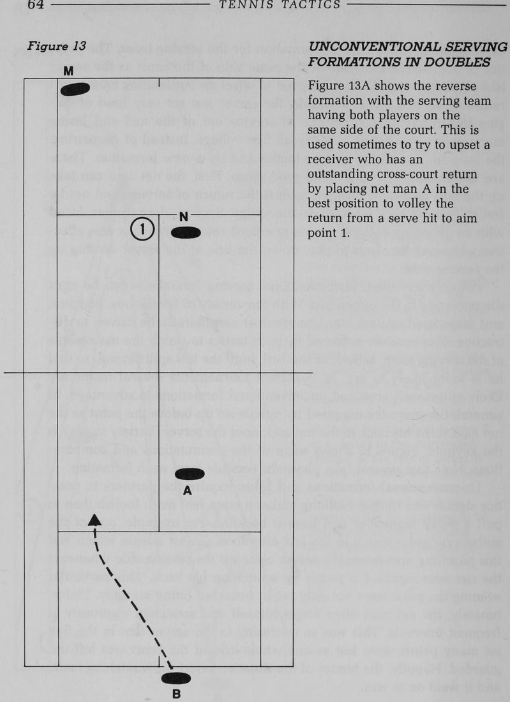
Giao bóngHình 13B mô tả miếng cắt bóng bất ngờ và miếng cắt bóng có báo trước. Ở miếng cắt bóng bất ngờ, người giao bóng B đi theo lộ trình thường lệ lên lưới cho đến khi thấy đồng đội cắt bóng, rồi bẻ hướng sang trái dọc theo đường 2 để bọc phần sân đang bỏ trống. Ở miếng cắt bóng có báo trước, người giao bóng B nhắm cú giao bóng vào khu vực 1 và đi theo lộ trình thường lệ về phía lưới vài bước, để không tiết lộ ý đồ cắt bóng, sau đó chạy sang trái dọc theo đường 3.
The Serve Figure 13B depicts the surprise and the signaled poaches. On the surprise poach, server B follows his normal path to the net until he sees the poach and then veers to his left along path 2 to cover the open court. On the signaled poach, server B aims his serve to area 1 and follows his normal path toward the net for a couple of steps, so as not to reveal the poach, and then runs left along path 3. A ~~ NX +. > N N I aie
Hình 13C minh họa hai miếng đánh giả từ thế đứng giao bóng đảo ngược. Ở trường hợp 1, người giao bóng B chạy vào như thể sẽ bọc phần sân bỏ trống cho đến khi người trả giao bóng M đã cam kết hướng đánh, đúng lúc đó người đánh lưới A cắt bóng còn B bẻ sang trái. Ở trường hợp 2, người đánh lưới A giả cắt bóng và B tiến sang trái một chút trước khi đổi hướng khi người trả giao bóng M bị dụ vào cú trả chéo sân.
Figure 13C illustrates two fakes from the reverse serving formation. In case 1 server B runs in as though he were going to cover the open side until receiver M is committed, at which moment net man A poaches and B swerves to his left. In case 2 net man A fakes the poach and B moves in to his left a bit before changing ‘direction when receiver M is drawn into playing a cross-court return.
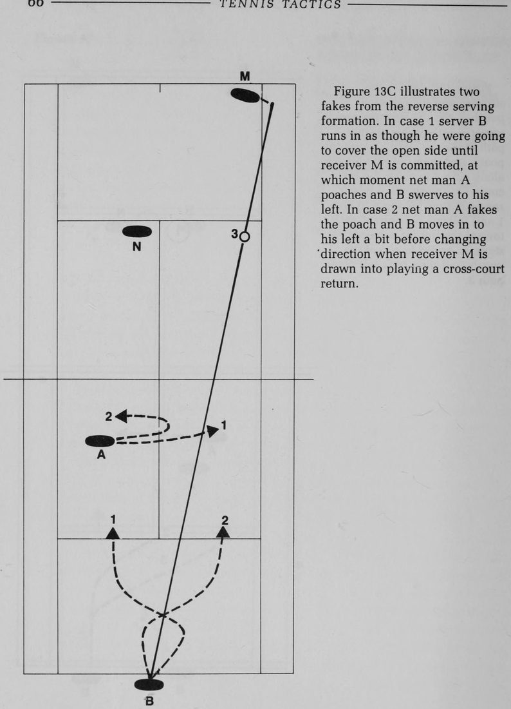
Hình 13D cho thấy hai miếng đánh giả từ thế đứng giao bóng thông thường. Ở trường hợp 1, người đánh lưới giả cắt bóng còn người giao bóng B thực hiện miếng giả bằng cách di chuyển sang trái. Nếu dụ được cú trả dọc biên thành công, người đánh lưới A hẳn sẽ có một cú vô-lê dễ dàng để ghi điểm. Ở trường hợp 2, người đánh lưới A giả sang trái để bọc hành lang dọc biên sau một cú giao bóng cắt, nhằm dụ một cú trả chéo sân, trước khi thực hiện miếng cắt bóng. Người giao bóng B thực hiện vai trò của mình bằng cách giả chạy thẳng vào rồi bẻ sang trái.
Figure 13D shows two fakes from the conventional serving formation. In case 1 the net man fakes a poach and server B carries out the fake by going to his left. If successful in drawing the down-the-line return, net man A should have an easy volley for the point. In case 2 net man A fakes left to cover the alley after a slice serve to draw a cross-court return before executing the poach. Server B carries out his role by faking straight in before swerving left.
Một cú trả giao bóng vững vàng là điều thiết yếu để trở thành tay vợt lớn ở cả đánh đơn lẫn đánh đôi. Không còn nghi ngờ gì nữa, đây là một trong những cú đánh khó thực hiện nhất trong quần vợt nếu muốn vừa hiệu quả vừa ổn định. Điều này được chứng minh qua việc 20 đến 25 phần trăm số cú giao bóng ở đánh đơn và đánh đôi hoàn toàn không được trả lại, người ta chỉ phá được thế giao bóng khoảng một lần trong năm đến bảy ván, và cú đánh này có sức sát thương thấp (xem Bảng 8). Người trả giao bóng phải nhớ rằng chưa từng có ai thắng được một ván đấu mà không phá được thế giao bóng của đối phương ít nhất một lần. Và dĩ nhiên, bạn không thể thắng một điểm bằng cách không trả được giao bóng (trừ trường hợp đối phương giao bóng hỏng hai lần). Do đó, nhiệm vụ chính của người trả giao bóng là đưa bóng trở lại sân bằng bất cứ cách nào có thể—ngay cả cú trả tồi tệ nhất đôi khi cũng thắng được một điểm. Và tay vợt nào xây dựng được một cú trả giao bóng đáng tin cậy sẽ sở hữu một tài sản vô giá. Nếu sau đó anh ta còn thêm được khả năng kiểm soát và che giấu ý đồ vào cú đánh của mình, anh ta sẽ bước lên hàng ngũ cao quý của những tay vợt đẳng cấp thế giới. Chiến thuật trả giao bóng khác biệt đáng kể giữa đánh đơn và đánh đôi, và giờ chúng ta sẽ xem xét riêng từng trường hợp. TIẾP NHẬN GIAO BÓNG Ở ĐÁNH ĐƠN Người trả giao bóng nên ghi nhớ năm mục tiêu sau: ¢ Chọn vị trí tiếp nhận có lợi nhất để phát huy thế mạnh của mình, tức cú trả giao bóng tốt nhất của mình. ¢ Dự đoán loại giao bóng sẽ được tung ra.
A sound return of service is vital to greatness in both singles and doubles. Without doubt, it is one of the most difficult strokes in tennis to execute both effectively and consistently. This is demonstrated by the fact that 20 to 25 percent of serves in singles and doubles are not returned at all, service is broken only about once in five to seven games, and the stroke has a low potency (see Table 8). The receiver must remember that no one ever won a set without breaking the opponent’s serve at least once. And, of course, you cannot win a point by failing to return service (other than by means of a double fault). Therefore, the main duty of the receiver is to get the ball back by any possible means—even the worst return sometimes wins a point. And the player who can develop a reliable return will own an invaluable asset. If he can then add control and disguise to his stroke, he advances to the exalted company of the world-class players. The tactics for returns of service differ substantially between singles and doubles, and we shall now explore each separately. RECEIVING IN SINGLES The receiver should have in mind the following five objectives: ¢ Adopt the most advantageous receiving position to assert your strength, your best return. ¢ Anticipate the type of serve to be delivered.
Trả giao bóng ¢ Trả bóng bằng mọi giá. ¢ Buộc người giao bóng phải thực hiện một cú trả phòng thủ. ¢ Chiếm lưới ngay ở cơ hội sớm nhất. Vị trí đúng cho người trả giao bóng có thể được xác định bằng lập luận đơn giản. Nếu bạn nắm vững những yếu tố chi phối lối chơi đúng vị trí, bạn sẽ thắng rất nhiều điểm khi giữ vai trò người trả giao bóng. Vì một số tay vợt dường như chẳng bao giờ phát triển được sự hiểu biết ấy, nên chúng ta hãy vẽ sơ đồ những vị trí đó để giải thích rõ ràng. Hình 14 minh họa các vị trí tiếp nhận cơ bản tương ứng với những vị trí giao bóng khác nhau. Tuy nhiên, những vị trí tiếp nhận cơ bản này phải được điều chỉnh trong một số tình huống nhất định. Người trả giao bóng phải học cách dự đoán loại giao bóng và đổi vị trí cho phù hợp—từng vài xen-ti-mét cũng tạo nên khác biệt trong việc tiếp nhận thành công. Qua nhiều năm đã hình thành xu hướng tiến vào trong vạch cuối sân xa đến mức dám liều, nhằm cố chống lại lối giao bóng lên lưới hay lối chơi "lớn". Có ba lý do khiến điều này có ý nghĩa chiến thuật: (1) Bạn trả giao bóng càng sớm thì người giao bóng càng ít thời gian để đến đúng vị trí vô-lê. (2) Bạn đánh bóng càng sớm thì càng dễ bọc sân, vì tốc độ và độ xoáy của cú giao bóng có ít cơ hội kéo bạn lệch ra ngoài sân hơn. (3) Bạn càng gần vạch giao bóng thì càng dễ tước lưới khỏi tay người giao bóng, đặc biệt ở những cú giao bóng hai. Tầm quan trọng lớn lao của việc dự đoán cú giao bóng hai, tiến lên, đánh một cú trả tấn công và chiếm lưới đã được khẳng định qua việc chiến thuật này đã quyết định nhiều chức vô địch quan trọng của nam lẫn nữ trong năm mươi năm qua. Trong khi một vài tay vợt hàng đầu có thể thắng bằng cách ở lại vạch cuối sân, phần lớn đều chộp lấy mọi cơ hội để đoạt lưới. Dự đoán là một nghệ thuật đòi hỏi khả năng quan sát sắc sảo. Mỗi người giao bóng đều có một tập hợp đặc điểm riêng, nếu nghiên cứu kỹ thì người trả giao bóng có thể chẩn đoán được loại giao bóng. Phần lớn người giao bóng đều để lộ ý đồ qua cách tung bóng...
Return of Service ¢ Return the ball at all costs. ¢ Force the server into making a defensive return. ¢ Capture the net at the earliest opportunity. The proper position for the receiver can be determined by simple logic. If you master the factors which govern good position play, you will win a lot of points as a receiver. Since some players never seem to develop such an understanding, let us proceed to diagram these in order to explain them clearly. Figure 14 illustrates the basic receiver positions corresponding to differing server positions. However, these basic receiving positions have to be altered under certain circumstances. The receiver must learn to anticipate the type of serve and to reposition himself accordingly—inches make a difference in receiving success. Over the years there has been a trend toward moving inside the base line as far as one dares in order to try to counter the serve-and-volley or “big’’ game. There are three reasons why this makes tactical sense: (1) The earlier you return service, the less time the server has to reach the proper volleying position. (2) The earlier you hit the ball, the easier it is to cover court, as the speed and spin of the serve have less opportunity to pull you wide of the court. (3) The closer you are to the service line, the easier it is, particularly on second serves, to take the net away from the server. The great importance of anticipating the second serve, moving forward, hitting an offensive return, and taking net is attested to by the fact that this tactic has decided many important women’s and men’s championships over the past fifty years. While a few top-ranking players have been able to win staying on the base line, most grab every opportunity to steal away the net. Anticipation is an art which requires keen observation. Every server has a particular set of characteristics which, if studied, should permit the receiver to diagnose the type of delivery. Most servers telegraph the shot by the way they toss the ball. For example, many players toss a bit to the right and in front for a slice serve, and swing across the body; toss straight up and in front for a flat serve; and toss a bit to the left and swing up and over along the base line to hit an American twist serve. Some have favorite aim points for certain point-score situations. Others may be enticed into hitting a particular serve by the receiving position you take. And still others have small stroke-production characteristics which give away intentions. Also you may have certain receiving weaknesses of which the server is aware, so that you can expect to be bombarded with shots aimed at taking advantage of these. It is hardly possiw a
Hình 14 NHỮNG VỊ TRÍ TIẾP NHẬN CƠ BẢN Ở ĐÁNH ĐƠN Nói về phía sân thuận tay, vị trí tiếp nhận cơ bản là ở F1, trên một đường thẳng đi qua tâm của ô giao bóng, M, và chia đôi khả năng giao bóng đến mọi khu vực của người giao bóng. Ngay cả ở vị trí ưu thế này, người trả giao bóng vẫn có thể bị ăn điểm trực tiếp (ace), vì độ xoáy trên bóng có thể kéo anh ta lệch ra ngoài sân tới ba mét. Bạn càng đứng lùi về phía F2, những quả bóng xoáy sẽ càng bay xa hơn về hai bên. Phần lớn người chơi cố đứng tiến vào gần F3 chừng nào quả bóng nảy thấp còn chưa làm suy giảm khả năng đánh bóng ổn định. Ở những cú giao bóng hai, người trả giao bóng nên tiến thêm một hai bước và sẵn sàng chạy vòng qua bóng để đánh cú mạnh của mình. Nói về phía sân trái tay, hãy lưu ý rằng khi người giao bóng A3 di chuyển xa hơn về bên trái, người trả giao bóng phải dịch ra F3. Đây là vị trí giao bóng mà một số tay vợt thuận tay trái có cú giao bóng cắt mạnh ưa dùng. Để tránh bị ăn điểm trực tiếp, người trả giao bóng phải nghiên cứu người giao bóng để biết khả năng kéo mình sang phải hay sang trái của anh ta, tức khả năng giao bóng đến các khu vực, và cố dự đoán loại giao bóng sẽ được tung ra qua cách tung bóng. B4
Figure 14 BASIC RECEIVING POSITIONS IN SINGLES Referring to the forehand court, the basic receiving position is at F1 on a line through the center of the service court, M, and bisecting the server’s servingarea capability. Even in this preferred position a receiver can be aced, as spin on the ball can pull him ten feet wide of the court. The farther back you stand toward F2, the wider spinning balls will travel. Most players try to stand in toward F3 as long as the lower-bounding ball does not detract from consistent stroke production. On second serves the receiver should move a step or two farther forward and be prepared to run around it to play his strong shot. Referring to the backhand court, note that when server A3 moves farther to his left, the receiver must move out to F3. This is a serving position some lefthanders with big slice serves like to use. To avoid being aced, the receiver has to study the server to learn his ability to move you to right or left, which represents his serving-area capability, and to try to anticipate the type of serve to be delivered by the toss being utilized. B4
5. Cú Trả Giao Bóng
Return of ServiceReturn of Service
không thể nào đánh giá quá cao giá trị của khả năng dự đoán nhạy bén trong việc giúp người trả giao bóng vượt qua vô số khó khăn mà anh ta đối mặt trong cuộc đấu tay đôi với một người giao bóng giỏi. Trên hết, người trả giao bóng phải luyện tập thăng bằng, khả năng khởi động nhanh theo mọi hướng, đánh bóng khi bóng đang lên, thực hiện cú trả, và di chuyển ngay đến vị trí đúng cho cú đánh tiếp theo. Mục tiêu thứ ba và cũng là cơ bản nhất của người trả giao bóng là đưa bóng trở lại bằng bất cứ cách nào có thể. Người mới chơi lẫn tay vợt dày dạn đều phải rèn luyện để thành công ở mặt này. Suy cho cùng, bạn không thể thắng điểm nếu không giữ bóng trong cuộc, và thường thì ngay cả cú trả yếu ớt, thảm hại nhất cũng có thể khiến một đối thủ tham lam hoặc quá nôn nóng mắc lỗi. Bằng cách trả lại bằng cách nào đó mọi thứ bị ném về phía mình, kể cả bằng những cú bổng phòng thủ cao, bạn gây áp lực không ngừng lên người giao bóng. Nhiều người giao bóng trở nên bất an khi họ phải thắng mọi điểm một cách vất vả thay vì nhờ lỗi của đối phương, và điều này dẫn đến việc bị phá giao bóng. Có một sự thật về cú trả giao bóng cần được khắc sâu không thể phai mờ vào tâm trí người trả giao bóng. Dữ liệu thu thập trên hàng trăm điểm trong nhiều trận đấu cho thấy rõ ràng rằng người trả giao bóng gần như có cơ hội ngang bằng để thắng một điểm nhất định, miễn là anh ta hoặc cô ta đã trả được giao bóng thành công. Vậy nên việc dự đoán loại giao bóng, di chuyển nhanh để đến đúng vị trí, quan sát bóng và xây dựng một cú trả ổn định thật sự đem lại lợi ích lớn lao. Để bạn có một thước đo so sánh nhằm đánh giá phong độ của mình, xin nói rằng các tay vợt hàng đầu trả được khoảng bảy trong mười cú giao bóng trên Sân Nhanh. Trên Sân Chậm, họ trả được gần tám trong mười, nhờ độ nảy cao hơn và việc họ có thể đánh một cú trả an toàn hơn, cao hơn và sâu hơn, vì người giao bóng ít có khả năng chiếm lưới hơn nhiều. Một số tay vợt nữ xếp hạng, khi đối đầu với những cú giao bóng ít uy lực hơn, còn có thành tích trả giao bóng tốt hơn nữa. Giờ đã đến lúc chúng ta hướng sự chú ý sang mục tiêu thứ tư của người trả giao bóng: buộc người giao bóng phải đánh một cú phòng thủ...
ble to overemphasize the value of keen anticipation in helping the receiver overcome the many difficulties he faces in his duel against the competent server. On top of this, the receiver must practice his balance, ability to make quick starts in any direction, take the ball on the rise, make his return, and move immediately to the correct position for the next shot. The receiver's third and most basic objective is to get the ball back in any way possible. Beginner and experienced player alike must work on achieving success in this department. After all, you cannot win the point if you do not keep the ball in play, and often even the feeblest, saddest return will draw an error from a greedy or over-anxious opponent. By returning in some way everything thrown at you, even with high defensive lobs, you exert relentless pressure upon the server. Many servers become unsettled when they have to win every point the hard way rather than from errors, and this leads to service breaks. There is one fact about return of service that should be engraved indelibly on the mind of the receiver. Data collected on hundreds of points in many matches clearly demonstrate that the receiver has almost an even chance of winning a given point providing he or she has successfully returned service. So it pays off handsomely to anticipate the type of serve, move quickly to reach the proper position, watch the ball, and develop a consistent return. To give you a comparative measure so you can rate your performance, top players return about seven out of ten serves on fast courts. On slow courts they return close to eight out of ten because of the higher bounce and the fact they can play a safer return, higher and deeper, since the server is much less likely to take the net. Some of the ranking women playing against less severe serves have even better return performances. Now it is time to turn our attention to the fourth objective of the receiver: to force the server into making a defensive shot so that the receiver can take command. The techniques to accomplish this will have to be considered in two parts: the shots to make, first, when the server rushes the net, and, second, when the server remains on the base line. Return of Service When Server Rushes the Net There are two major points to keep in mind in returning serve against the player who follows serve in to net. These are (1) to take the ball as early as possible and keep the return low so that the server will not have time to get on top of the net and will be forced to volley up defen-
BỨC TRANH TỔNG HỢP VỀ CÁC CÚ TRẢ GIAO BÓNG Ở ĐÁNH ĐƠN KHI ĐỐI ĐẦU VỚI NGƯỜI GIAO BÓNG LAO LÊN LƯỚI Phần dưới của sơ đồ này chỉ ra rằng ở phía thuận tay, khoảng 40 phần trăm số cú trả từ những cú giao bóng sâu đến khu vực 1 được đánh chéo sân, 40 phần trăm vào giữa và 20 phần trăm dọc biên. Ở phía trái tay, sơ đồ chỉ ra rằng những cú trả từ những cú giao bóng nông đi đến khu vực 2 được trả 50 phần trăm chéo sân, 25 phần trăm vào giữa và 25 phần trăm dọc biên. Phần trên của sơ đồ chỉ ra lý do tại sao người trả giao bóng cố tránh những cú trả vào giữa. Những cú đánh vào người đang tiến lên vô-lê trong Khu Vực Hiểm dẫn đến thua điểm khoảng bảy đến tám lần trong mười lần. Ngược lại, những quả bóng đánh chéo sân hoặc dọc biên buộc người vô-lê phải vươn người ra khỏi tư thế, và người trả giao bóng rút cuộc nên thắng điểm đó khoảng 55 đến 60 phần trăm số lần. Những cú trả rơi vào khu vực Dưới Chân thắng được khoảng một nửa số lần. Các loại cú đánh được dùng để thực hiện những pha bóng này là những cú dọc sân thấp hoặc những cú đánh xoáy, hay những cú đánh sử dụng xoáy trên, nhằm buộc người giao bóng phải vô-lê hướng lên. Người trả giao bóng
COMPOSITE PICTURE OF RETURNS OF SERVICE IN SINGLES AGAINST THE Server NET- RUSHING SERVER The bottom portion of this diagram indicates on the forehand side that about 40 Down Down percent of returns from deep the the serves to area 1 are hit cross Line Line court, 40 percent to the middle, and 20 percent down the line. y~ On the backhand side it indicates that returns from shallow serves hit to area 2 are returned 50 percent cross court, Cross sith Cross 25 percent to the middle, and Court Danger a Court 25 percent down the line. Area! 10 The top part of the diagram indicates the reason why the Lose 7-8 in 10 receivers are attempting to avoid returns to the middle. Those hit at the approaching volleyer in the Danger Area result in losing points about seven to eight out of ten times. On the other hand, balls oe 25% court or down the line cause 40% the volleyer to stretch out of 40% A 20% position, and the receiver should ultimately win the point 55 to 60 percent of the time. Returns landing in the At the Feet area win about half the time. The types of strokes employed in making these shots are low drives or spinning shots, or strokes utilizing top spin, in order to force the server to volley up. Receiver
Return of ServiceReturn of Service
tấn công, và (2) giữ cho người giao bóng phải phỏng đoán bằng cách trộn lẫn những cú đánh dọc sân chéo sân, những cú đẩy nhẹ (dink) và thỉnh thoảng bổng bóng. Tránh đánh vào giữa. Những điểm mốc nhắm tới mà các chuyên gia dùng để trả giao bóng khi đối đầu với người lao lên lưới thay đổi tùy theo vị trí mà từ đó cú đánh phải được thực hiện. Rất nhiều thông tin đã được thu thập về chủ đề này qua nhiều trận đấu giải, trên cả sân cỏ lẫn sân đất nện, có sự tham gia của những tay vợt hàng đầu thế giới. Để đưa ra một số hướng dẫn, chúng ta hãy xem bức tranh tổng hợp về những điểm mốc nhắm tới tốt và xấu cho cú trả giao bóng như được trình bày trong Hình 15. Trả giao bóng khi người giao bóng ở lại vạch cuối sân Chỉ một số ít tay vợt trên thế giới có cú giao bóng đủ mạnh để cho phép họ chơi lối chơi lớn và theo mọi cú giao bóng lên lưới. Và ngay cả những chuyên gia quốc tế cũng khó lòng làm như vậy khi chơi trên Sân Chậm. Do đó, đại đa số độc giả thường sẽ trả giao bóng khi đối đầu với một đối thủ đứng gần giữa vạch cuối sân. Trường hợp này đòi hỏi chiến thuật hoàn toàn khác với những gì vừa mô tả. Thay vì đánh những cú dọc sân thấp hoặc những cú trả xoáy chéo góc buộc người giao bóng lao lên lưới phải vô-lê hướng lên yếu ớt, mục đích duy nhất lúc này là đánh những cú trả sâu để giữ người giao bóng bị ghim chặt vào vị trí phòng thủ của anh ta ở vạch cuối sân. Những cú này phải được đánh cao hơn lưới một bộ trở lên một cách an toàn để tránh những lỗi đưa bóng vào lưới đắt giá—một sai lầm phổ biến của người chơi cuối tuần. Các cú đánh có thể là những cú phẳng, xoáy trên hoặc cắt, những cú bạt hay thậm chí những cú cao, nhẹ (bán bổng)—bất cứ thứ gì rơi xuống trong vòng ba mét tính từ vạch cuối sân. Mục tiêu là làm cho cú trả cũng đủ sức gây sức ép để người trả giao bóng có thể chiếm vị trí tấn công ở lưới. Đặc biệt ở những cú giao bóng nông, người trả giao bóng phải cố đánh sâu đến những điểm mốc nhắm tới được chỉ ra trong Hình 16 rồi lao lên lưới. Người chơi cuối tuần đặc biệt thích trả sâu về phía trái tay. Và để nhấn mạnh tầm quan trọng của việc hướng cú trả đến đúng khu vực, hãy lưu ý rằng...
sively, and (2) to keep the server guessing by mixing up cross-court and down-the-line drives, dinks, and occasional lobs. Avoid hitting to the middle. The aim points used by the expert for return of service against the net rusher vary with the location from which the shot must be played. A great deal of information was collected on this subject during many tournament matches—on both grass and clay courts—involving the top players of the world. To provide some guidelines, let us take a look at a composite picture of the good and bad return aim points as presented in Figure 15. Return of Service When Server Remains on the Base Line Only a limited number of players in the world have a sufficiently powerful service to permit them to play the big game and follow every serve in to net. And even the international experts can ill afford to do so when playing on slow courts. Therefore, the great majority of readers will ordinarily return service against an opponent standing near the middle of the base line. This calls for completely different tactics from those just described. Instead of playing low drive or spinning angled returns which force the net-rushing server to hit up weak volleys, the whole purpose now is to hit deep returns to keep the server pinned to his defensive position on the base line. They should be hit one or more feet safely above the net to avoid costly netting errors—a common mistake of the weekend player. The strokes can be flat or top-spin or sliced drives, chops or even high, soft shots (half lobs)—anything which lands within ten feet of the base line. The objective is to make the return also sufficiently forcing so that the receiver can take the attacking position at net. On shallow serves in particular, the receiver must try to hit deep to the aim points shown in Figure 16 and rush the net. Weekend players in particular prefer returning deep to the backhand side. And, to drive home the importance of directing the return to the proper area, note how the chances of ultimately winning the point change. Since the recommended return tactics change abruptly, depending upon the decision of the server to remain on the base line or to rush the net, the first duty of the receiver after anticipating the type and direction of serve is to note whether the server is rushing the net or staying on the base line. This fact controls the type of return to be employed. If, for example, you play an excellent high, deep shot toward the base line only to find too late that the server has elected to rush the net, you have
BỨC TRANH TỔNG HỢP VỀ CÁC CÚ TRẢ GIAO BÓNG Ở ĐÁNH ĐƠN KHI ĐỐI ĐẦU VỚI NGƯỜI GIAO BÓNG Ở LẠI VẠCH CUỐI SÂN Trái ngược với những cú đánh thấp, xoáy được khuyến nghị khi đối đầu với người giao bóng lao lên lưới, những cú đánh cao, sâu là tốt nhất khi đối đầu với người giao bóng ở lại phía sau. Mục tiêu chính nên là giữ bóng sâu đến khu vực A, B hoặc C—tức là trong vòng ba mét tính từ vạch cuối sân. Nếu bạn chỉ làm được điều đó, bạn nên thắng được một nửa số điểm. Nhắm vào khu vực sâu nhất được chỉ ra là liều lĩnh. Đánh vào góc ở A hoặc C giúp ích bằng cách làm người giao bóng phải chạy. Ở những cú giao bóng nông, những cú đánh chéo sân góc hẹp đến khu vực D hoặc E đôi khi thắng điểm ngay lập tức hoặc tạo tiền đề cho chiến thắng bằng cách đẩy người giao bóng lệch ra ngoài sân. Cú bỏ nhỏ chỉ nên được sử dụng sau những cú giao bóng nông, khi đối đầu với một đối thủ không bọc sân nhanh nhẹn. Những cú trả vào Khu Vực Hiểm cần phải tránh, vì người trả giao bóng thua khoảng hai trong ba lần.
COMPOSITE PICTURE OF RETURNS OF SERVICE IN SINGLES AGAINST A SERVER REMAINING ON THE BASE LINE In contrast to the low, spinning shots recommended for play against the netrushing server, high, deep shots are best against the server who stays back. The primary objective should be to keep the ball deep to area A, B, or C—that is, within ten feet of the base line. If you just do that, you should win half the points. Aiming for the deepesf area shown is risky. Hitting to Area the corner at A or C helps by running | Lose 2 in3 the server. On shallow serves, sharply angled cross-court shots to area D or E sometimes win points outright or set up the win by forcing the server wide of the court. Drop shots should be employed only after shallow serves against an opponent who does not cover court speedily. Returns to the Danger Area are to be avoided, as the receiver loses about two out of three times.
Return of ServiceReturn of Service
tặng anh ta một cú vô-lê dễ dàng để thắng điểm. Hoặc nếu bạn đánh một cú trả thấp, chéo góc nhằm làm người giao bóng lao lên lưới bối rối, để rồi phát hiện ra anh ta đã ở lại phía sau, thì bạn lại tự tay trao cho anh ta một chuyến lên lưới dễ dàng. TIẾP NHẬN GIAO BÓNG Ở ĐÁNH ĐÔI Xếp ngay sau cú giao bóng với tư cách là cú đánh quan trọng nhất trong đánh đôi là cú trả giao bóng—suy cho cùng, bạn phải phá được thế giao bóng của đối phương ít nhất một lần để thắng được một ván. Dù xếp ở vị trí nào về tầm quan trọng, cú trả giao bóng chắc chắn xếp hạng nhất trong tâm trí các chuyên gia về mức độ khó thực hiện sao cho vừa ổn định vừa hiệu quả. Bằng chứng là trong những trận đánh đôi giỏi, thế giao bóng hiếm khi bị phá quá một lần mỗi ván. Và điều này phần lớn là trách nhiệm của người trả giao bóng, bởi chính chất lượng cú trả giao bóng của anh ta quyết định chiến thuật của cả hai đội khi khởi đầu mỗi điểm. Người trả giao bóng đối mặt với một tình thế tiến thoái lưỡng nan khủng khiếp, vì một nửa sân đã bị người đánh lưới bọc, còn người giao bóng thì đang nhanh chóng tiến lên lưới để canh chừng nửa còn lại. Điều này có nghĩa là trong khoảnh khắc tích tắc khi phải quyết định loại và hướng đánh cho cú trả của mình, anh ta phải để một mắt nhìn người đánh lưới xem liệu anh ta có cắt bóng hay không, một mắt nhìn người giao bóng để ghi nhận vị trí của anh ta, và một mắt nhìn quả bóng để có thể đánh nó cho đúng. Điều đó đâu có dễ khi bạn chỉ có hai con mắt! Tuy vậy, một số bậc thầy bố trí lối chơi vĩ đại trong đánh đôi đã xoay xở trả được tới chín trong mười cú giao bóng. Người trả giao bóng ở đánh đôi nên có cùng năm mục tiêu như người trả giao bóng ở đánh đơn: ¢ Chọn vị trí tiếp nhận có lợi nhất. ¢ Dự đoán loại và hướng giao bóng. ¢ Trả bóng bằng mọi giá—đừng quên cú bổng phòng thủ. ¢ Buộc đội giao bóng phải thực hiện một cú trả thủ phòng thủ. ¢ Chiếm lưới ngay ở cơ hội sớm nhất. Những vị trí tiếp nhận đúng cho đội đỡ giao bóng được thể hiện trong Hình 8. Người trả giao bóng ở gần vị trí tiếp nhận cơ bản dùng trong đánh đơn. Tốt hơn nữa, anh ta nên tiến lên một...
presented him with an easy volley for a win. Or if you played a low, angled return trying to embarrass the net-rushing server only to discover he has stayed back, you end up by awarding him an easy trip to the net. RECEIVING IN DOUBLES Ranking close to the serve as the most important shot in doubles is the return of service—after all, you have to break the opponent’s serve at least once in order to win a set. Wherever it ranks in importance, the service return certainly ranks first in the minds of the experts in degree of difficulty to play both consistently and effectively. As evidence, service is seldom broken in good doubles more than once a set. And this is largely the responsibility of the receiver, because it is the quality of his return of service that determines the tactics of both teams at the start of each point. The receiver faces a terrible predicament, as one half of the court is already covered by the net man, and the server is fast approaching the net to patrol the other half. This means that in the split-second period when he has to make his decision on the type and direction of his return, he must keep an eye on the net man to determine whether he will poach, an eye on the server to note his positioning, and an eye on the ball in order to be able to stroke it properly. That is not easy when you have only two eyes! Nevertheless, some of the great playmakers in doubles managed to return as many as nine out of ten serves. The receiver in doubles should have the same five objectives as the receiver in singles: ¢ Adopt the most advantageous receiving position. ¢ Anticipate the type and direction of serve. ¢ Return the ball at all costs—do not forget the defensive lob. ¢ Force the serving team into making a defensive return. ¢ Capture the net at the earliest opportunity. The proper receiving positions for the receiving team are shown in Figure 8. The receiver is close to the basic receiving position used in singles. Better yet, he should move forward a bit, as the server in doubles must elect to get his first ball into play rather than to chance going for an ace. The partner of the receiver should assume the modified net position just inside the service line near the center of the court. The
Hình 17 CÁC CÚ TRẢ NHỮNG CÚ GIAO BÓNG SÂU Ở B TRONG ĐÁNH ĐÔI Những cú trả những cú giao bóng sâu đến giữa sân, tới điểm mốc 1, trong đánh đôi gần như luôn được hướng đến vùng trả bóng. Một vài cú trả có thể được đánh rộng và mang tính tấn công, buộc người giao bóng phải vô-lê hướng lên. Những cú trả những cú giao bóng sâu đi rộng sang điểm mốc 3 cũng thường được trả chéo sân về khu vực 4. Tuy nhiên, khả năng mở ra điểm mốc nhắm tới 6 nếu người đánh lưới A không ở đó để cho bạn đánh một cú phòng thủ, một cú bổng cao đến khu vực 7 có thể rất hiệu quả. Nếu đánh khoảng mười hai mét... cho đồng đội của bạn thời gian kêu gọi chỉ dẫn cho nhau để sắp xếp các vị trí phòng thủ.
Figure 17 RETURNS OF DEEP SERVES B IN DOUBLES The returns of deep serves to (1) the middle to point 1 in doubles are almost always directed eee return territory. A few returns | can be hit wide and offensively \ server to volley up. Returns of deep serves wide to point 3 are also usually \ returned cross court to area 4. However, the possibility opens aim point 6 if net man A is not you to play a defensive shot, a high lob to area 7 can be very \ effective. If hit about forty feet your partner time to call out instructions to one another to \ align defensive positions.
Return of ServiceReturn of Service
mục đích của thế đứng này, do hai anh em nhà Doherty nổi tiếng ở Anh phát minh năm 1903, là cho phép đội đỡ giao bóng tận dụng một cú trả tốt bằng cách nhanh chóng di chuyển vào vị trí ở lưới. Những lợi thế của thế đứng này phụ thuộc vào những cú trả giao bóng hiệu quả, như sẽ được trình bày sau. Nếu đấu thủ N thay vào đó đứng ở vạch cuối sân, đội giao bóng sẽ được tặng một cú vô-lê đầu tiên dễ dàng hơn cùng quyền kiểm soát lưới. Và lưới chính là nơi các trận đánh đôi được định đoạt. Việc dự đoán loại và hướng giao bóng trong đánh đôi dễ hơn trong đánh đơn. Như đã bàn ở chương 3, cú giao bóng một trong đánh đôi thường được đánh xoáy ở khoảng ba phần tư tốc độ để đạt được sự kiểm soát và ổn định, bởi cú giao bóng hai rất dễ bị người trả giao bóng tấn công thành công. Hơn nữa, phần lớn các cú giao bóng đều nhắm vào góc trái tay ở cả hai ô. Vì vậy, nhiệm vụ dự đoán chính của người trả giao bóng được thu gọn lại thành: tránh bị bất ngờ bởi những cú giao bóng nhanh hoặc đổi hướng thỉnh thoảng xuất hiện, tiến lên phía trước càng xa càng tốt khi đánh cú trả, và "thuận theo" cú giao bóng bằng cách dự đoán những cú giao bóng mà bạn có thể chạy vòng qua để đánh bằng phía mạnh của mình. Sự khôn ngoan của việc trả bóng bằng mọi giá trở nên hiển nhiên khi ta nhận ra rằng gần một nửa số điểm thắng được sau khi cú trả đã bay qua lưới là nhờ lỗi của đội giao bóng. Biết bao quả bóng "dễ ăn" đã bị những tay vợt giỏi nhất đánh ra ngoài. Giờ chúng ta đến với chủ đề quan trọng nhất: các loại cú đánh để buộc đội giao bóng phải thực hiện một cú trả phòng thủ. Chúng ta sẽ xem xét một số cách để đạt được điều này. Nguyên tắc thứ nhất là đánh bóng vào một khu vực không có người. Như có thể thấy trong Hình 17, khoảng trống rõ ràng nhất là khu vực 4, và điều này đòi hỏi một cú trả giao bóng chéo sân. Thực tế, ít nhất 80 phần trăm số cú trả giao bóng trong đánh đôi là chéo sân, nhằm cố buộc người giao bóng phải trả bóng yếu hoặc mắc lỗi. Nguyên tắc thứ hai là giữ cú trả thấp. Một quả bóng cao có thể bị vô-lê...
purpose of this formation, invented by the famous Doherty brothers in England in 1903, is to permit the receiving team to take advantage of a good return by moving rapidly in to the net position. The advantages of this formation are dependent upon effective returns of service, as will be shown later. If player N positions himself on the base line instead, the serving team is presented with an easier first volley and control of the net. And the net is the place doubles matches are won. Anticipating the type and direction of serve is easier in doubles than in singles. As already discussed in chapter 3, the first serve in doubles is usually hit with spin at about three-fourths speed to obtain control and consistency, because the second serve is vulnerable to successful attack by the receiver. Furthermore, the preponderance of serves are aimed at the backhand corner in both courts. The receiver’s main anticipation duties are thus reduced to avoiding being surprised by occasional fast or change-of-direction serves, to moving as far forward as possible in playing the return, and to “roll’’ with the serve by anticipating serves which you can run around to play from your stronger side. The wisdom of returning the ball at all costs is evident when it is recognized that almost half the points won after a return is hit over the net are on errors by the serving team. Many:a “‘sitter’”’ has been hit out by the best of players. We now approach the most important subject of the types of shots to force the serving team into making a defensive return. We will examine several ways of accomplishing this. The first principle is to hit the ball to an unoccupied area. As can be seen in Figure 17, the most obvious open spot is area 4, which requires a cross-court return of service. In fact, at least 80 percent of doubles returns of service are cross court to try to force the server into a weak return or an error. The second principle is to keep the return low. A high ball can be volleyed down offensively and devastatingly by server B or net man A. Hitting soft, high, floater returns can endanger not only the valued friendship of your modified-net-man partner, but also his very life as he tries to dodge bullets. In order to keep the ball low, a variety of types of strokes can be employed, such as the drive, top-spin drive, and dink just as used in singles against the net-rushing server. The third principle is to hit the ball on the rise as far forward as you dare. The reasons for this are that the sooner you strike the ball, the less spin to move you to the side, the less time available to the server to run to points 2 in Figure 17, the better position you have to direct the ball downward at the feet of the
phía người giao bóng, hoặc ở những góc nhọn hơn về phía hai đường biên, và bạn càng nhanh chóng chiếm được vị trí ở lưới khi đã có lợi thế dẫn trước. Và chiếm lưới ngay ở cơ hội sớm nhất có thể là mục tiêu thứ tư và cuối cùng của người trả giao bóng, bởi anh ta mong muốn tước thế tấn công khỏi đội giao bóng. Giờ chúng ta đã sẵn sàng hướng sự chú ý sang những điểm mốc nhắm tới cho các cú trả giao bóng, bắt đầu với những cú giao bóng sâu đến phía sân thuận tay, như thể hiện trong Hình 17. Ưu thế vượt trội và hiệu quả của cú trả giao bóng chéo sân một phần bắt nguồn từ cơ sở thuần túy cơ học. Lưới quần vợt thấp hơn ở giữa sân mười lăm xen-ti-mét so với ở đường biên, nên rõ ràng là việc hướng một cú trả thấp chéo sân qua phần giữa của lưới từ sâu trong góc trái tay hoặc thuận tay của sân là dễ dàng hơn. Điều này giúp buộc người giao bóng phải vô-lê bóng hướng lên từ ngay mũi giày với ít uy lực hơn. Còn cú trả dọc biên đến khu vực 7 tất yếu là một cú trả cao hơn qua phần cao nhất của lưới. Điều này có nghĩa là người đánh lưới A có thể xử lý nó một cách tấn công bằng cách đánh bổ xuống quả bóng, trừ khi bạn gây bất ngờ hoặc khiến anh ta ra khỏi vị trí. Người trả giao bóng M phải nghiên cứu chiến thuật của người giao bóng và trộn lẫn các cú trả của mình cho phù hợp. Nếu người giao bóng gặp khó khăn khi cố với tới và vô-lê những cú đẩy nhẹ (dink) hoặc những cú cắt xoáy, thấp bay đến khu vực 5, anh ta có thể giảm tốc độ và đánh bóng sau khi bóng nảy. Điều này đòi hỏi phải thay đổi chiến thuật, chuyển sang đánh những cú xoáy trên hoặc những cú dọc sân phẳng, thấp vào ngay dưới chân người giao bóng để ghim anh ta sâu trong ô giao bóng. Loại cú trả mà người trả giao bóng lựa chọn đương nhiên phụ thuộc một phần vào vốn cú đánh của chính anh ta cũng như khả năng chơi bóng của đối phương. Một số lý lẽ đằng sau việc chọn cú đánh cho những cú trả sẽ trở nên rõ ràng hơn khi chúng ta bước vào những pha đánh trọn vẹn một điểm trong Chương 5 và 6. Vài nhận xét ở đây về những đặc tính của các cú đánh khác nhau có thể sẽ hữu ích. Cú đẩy nhẹ (dink), tức cú bạt nhẹ hoặc cú cắt, đã là cú trả giao bóng ưa thích của nhiều tay vợt đánh đôi vĩ đại nhất ở cả nam lẫn...
server or at sharper angles to the sidelines, and the quicker you can take the net position as you enjoy a head start. And capturing the net at the earliest possible opportunity is the fourth and final objective of the receiver, because he desires to take the offensive away from the serving team. We are now ready to turn our attention to aim points on returns of service, beginning with deep serves to the forehand court, as shown in Figure 17. The predominance and effectiveness of the cross-court return of service arise in part from a purely mechanical basis. The net in tennis is six inches lower at the center than at the sideline, so that it is obviously easier to direct a lower return cross court over the middle portion of the net from deep in the backhand or forehand corner of the court. This helps to force the server to volley the ball up from his shoe tops with less severity. And the down-the-line return to area 7 is necessarily a higher return over the highest part of the net. This means net man A can deal with it offensively by hitting down on the ball unless you catch him by surprise or out of position. Receiver M must study the tactics of the server and mix up his returns accordingly. If the server has trouble with trying to reach and volley the spinning, low dink or slice shots hit to area 5, he may slow down and play the ball after the bounce. This calls for a change in tactics to hitting top-spin or low, flat drives at the feet of the server to pin him deep in the service court. The type of return chosen by the receiver naturally depends in part on his own stroke repertoire as well as the playing abilities of the opponents. Some of the reasoning behind stroke choice for returns will become clearer when we proceed into actual complete-point play in Chapters 5 and 6. A few remarks here on the attributes of the various strokes may be helpful. The dink, or soft chop or slice shot, has been the favorite service return of many of the greatest women and men doubles players. It is usually played sharply cross court out of reach of the net man. There are three reasons why it is favored. First, it is a safe shot which enables the receiver to put the ball into play consistently. Second, it is so soft that it prevents the receiver from getting much pace on his volley, which must be hit up in most cases. And, third, its slow velocity allows the modified net-man and the receiver time to get in to net to gain the opportunity of stealing the offense away from the serving team. One drawback to the dink is that it is difficult to play off the occasional deep, flat, cannonball service. The next favored return of service is a top-spin cross-court drive,
Return of ServiceReturn of Service
cũng được nhiều tay vợt đánh đôi vĩ đại sử dụng. Nó có nhiều ưu điểm giống cú đẩy nhẹ (dink) ở chỗ an toàn, vì có thể được đánh cao hẳn so với lưới, và nó buộc người giao bóng phải vô-lê hướng lên, vì bóng hạ thấp sau khi qua lưới. Vì cú đánh xoáy trên được đánh mạnh hơn cú đẩy nhẹ (dink), nó bị vô-lê trả lại với nhịp nhanh hơn, khiến người trả giao bóng và người đánh lưới cải tiến có ít thời gian hơn để chạy vào lưới. Khi đối đầu với một cú giao bóng nhanh, nhiều chuyên gia thích một cú đánh chéo sân khá phẳng. Ưu điểm chính của nó là một cú trả nhanh và mạnh thường sẽ khiến đối phương mắc lỗi, vì nó buộc người giao bóng phải vô-lê hướng lên từ sâu trong sân. Là một cú trả tiêu chuẩn, nó khó đánh ổn định và nó để lại cho người trả giao bóng rất ít khả năng theo bóng lên lưới. Cú dọc sân này cũng thỉnh thoảng được đánh dọc biên như một cú đánh kiềm chế, được thiết kế để giữ cho người đánh lưới "trung thực", bằng cách ngăn anh ta cắt bóng bừa bãi. Loại cú đánh thứ tư dùng để trả giao bóng là cú bổng. Việc sử dụng cú bổng tấn công được mô tả trong Hình 18, nơi mô tả những điểm mốc nhắm tới cho các cú trả trên những cú giao bóng nông. Nó cũng hiệu quả nếu bạn bắt gặp người đánh lưới đang áp sát lưới hoặc di chuyển quá sớm. Một cú bổng tấn công đánh xoáy trên để bóng nảy vọt ra xa vạch cuối sân là một vũ khí cực kỳ sát thương. Hình 17 cho thấy việc sử dụng cú bổng phòng thủ. Cú bổng có lẽ là cú trả giao bóng được khuyến nghị ít được sử dụng nhất trong thi đấu vô địch và đặc biệt là trong lối chơi cuối tuần. Một cú bổng phòng thủ hoàn hảo là một điều đẹp đẽ, hiệu quả chẳng kém bất kỳ cú trả nào—hãy luyện tập đưa bóng càng gần vạch cuối sân càng tốt. Để trở thành người trả giao bóng hoàn hảo còn cần thêm một kỹ năng nữa: che giấu ý đồ của cú trả. Như một trong những tay vợt đánh đôi vĩ đại nhất mọi thời đại đã phát biểu: "Ít ai trong chúng ta có thể phá giao bóng chỉ bằng sức mạnh thuần túy của những cú trả. Tôi cho rằng, giống như một tay ném bóng chày tung ra cú bóng nhanh, cú bóng xoáy cong và cú bóng đổi nhịp của mình đều với cùng một động tác, tay vợt quần vợt hãy học cách thực hiện một cú dọc sân, một cú bổng và một cú nhẹ, khó chịu—như tay ném bóng chày—với cùng một động tác. Với sự kiểm soát...
also used by many great doubles players. It has many of the advantages of the dink in that it is safe, since it can be hit well above net, and it forces the server to volley up, as it dips low after crossing the net. Since the top-spin drive is hit harder than the dink, it is volleyed back with more pace, giving the receiver and the modified net man less time to run into the net. Against a fast service many experts prefer a rather flat cross-court drive. Its principal advantage is that a fast, hard return will often draw an error, as it forces the server to volley up from deep in the court. As a standard return, it is difficult to play consistently and it leaves the receiver little possibility to follow it in to net. The drive is also played down the line from time to time as a check shot designed to keep the net man “honest,” by preventing him from promiscuous poaching. The fourth type of stroke for return of service is the lob. Use of the offensive lob is described in Figure 18, which depicts aim points for returns on shallow serves. It is also effective if you catch the net man crowding the net or moving prematurely. An offensive lob hit top-spin to bound away from the base line is a very lethal weapon. Figure 17 shows the use of the defensive lob. The lob is probably the most underused of the recommended service returns in championship and, particularly, in weekend play. A perfect defensive lob is a thing of beauty, as effective as any return—practice getting the ball as close to the base line as possible. To become the perfect receiver requires one additional skill: disguising your return. As one of the greatest doubles players of all time stated it: “Few of us can break serve through sheer power of returns. I suggest that, like a baseball pitcher who throws his fast ball, curve, and changeof-pace ball all with the same motion, the tennis player learn to make a drive, a lob, and a soft, tantalizing shot, as the baseball pitcher, with the same motion. With control, and these three shots well disguised, the receiver will find it considerably easier to dislodge the opponents from the advantageous net position.’”’” Concealment, surprise, and variety are the hallmarks of the great receivers. The Importance of the Receiver Taking Net In order to impress upon the receiver the importance of following his return in to net, we collected a large quantity of data on the subject. To make it more meaningful we omitted all points where aces were served or where the return was an error. Thus, the contest became a duel be-
Hình 18 CÁC CÚ TRẢ NHỮNG CÚ GIAO BÓNG NÔNG TRONG ĐÁNH ĐÔI Cú giao bóng nông là niềm vui của người trả giao bóng, vì nó cho anh ta cơ hội tốt để thắng điểm. Người trả giao bóng tiến lên khi cú giao bóng rơi nông xuống điểm mốc 1 và có cơ hội chọn lựa nhiều kiểu trả bóng khác nhau. Anh ta có thể bắt gặp người giao bóng B còn ở tít tận gần vạch giao bóng bằng cách đánh bóng xuống ngay dưới chân anh ta ở điểm mốc 2 trong khu vực 3, hoặc có thể đánh một cú trả chéo góc hẹp về khu vực 4 để có thể thắng điểm ngay. Những khoảng trống khác bao gồm đánh dọc biên đến khu vực 5 nếu người đánh lưới A di chuyển để bọc giữa sân, hoặc đánh một cú bổng tấn công qua đầu người đánh lưới A đến khu vực 6. Thường thì, bằng cách lùi lại một hai bước, người trả giao bóng có thể dụ người giao bóng chạy vào quá gần lưới. Điều này cho phép người trả giao bóng đánh một cú bổng tấn công hiệu quả hơn qua đầu người giao bóng đang sững sờ. Một số người chơi cố làm người giao bóng hoang mang ở những cú giao bóng hai bằng cách tiến lên và sẵn sàng đánh cú trả sở trường. Những chiến thuật như vậy thật sự cũng kéo theo một số lỗi giao bóng hỏng hai lần cũng như những cú giao bóng nông.
Figure 18 RETURNS OF SHALLOW SERVES IN DOUBLES The shallow serve is the receiver’s delight, as it permits him a good opportunity to win the point. The receiver moves forward as the serve lands shallow at point 1 and has the opportunity to select a variety of returns. He can catch server B way back near the service line by driving to his feet at point 2 in area 3, or can play a sharply angled return to area 4 for a possible winner. The other openings include driving down the line to area 5 if net man A moves to cover the center, or playing an offensive lob over net man A to area 6. Often, by dropping back a step or two, the receiver can entice the server into running in too close to the net. This allows the receiver to hit a more effective offensive lob over the head of the surprised server. Some players try to rattle the server on second serves by moving forward and ready to hit a favorite return. Such tactics do draw some double faults as well as shallow serves.
Return of ServiceReturn of Service
giữa người trả giao bóng đã đánh trả thành công, người đồng đội của anh ta, và đội giao bóng. Tính chung, đội giao bóng thắng hơn 60 phần trăm số điểm sau một pha trả giao bóng thành công. Tuy nhiên, nếu người trả giao bóng có thể thực hiện một pha trả giao bóng thành công mà còn cho phép anh ta và người đồng đội cùng chạy vào vị trí lưới, thì đội trả giao bóng thắng 50 phần trăm số lần. Những đấu thủ giỏi có thể theo bóng lên lưới trong 30 đến 50 phần trăm số pha trả giao bóng thành công, đặc biệt là sau những cú đẩy nhẹ (dink) và những cú đánh xoáy lên khiến người giao bóng phải vô-lê hướng lên. Cơ hội tiến lên lưới ngay sau cú trả giao bóng lớn hơn sáu lần ở quả giao bóng thứ hai, vốn thường rơi không sâu trong ô giao bóng, cho phép người trả giao bóng khôn ngoan tiến vào, đánh tấn công, và bỏ túi thêm vài bước trên hành trình ra lưới. Không còn nghi ngờ gì nữa, người trả giao bóng có đủ mọi động lực để học cách thực hiện chiến thuật của mình sao cho việc nhanh chóng tiến lên lưới trở thành bản năng thứ hai. Nếu người giao bóng bị mất thăng bằng, hoặc đã già, mệt, hay lười biếng, anh ta có thể không theo cú giao bóng của mình lên lưới. Người trả giao bóng tinh ý, nhận ra ngay sự sơ suất đó, nên thay đổi chiến thuật để tận dụng tối đa tình huống này. Ở đây, cú đẩy nhẹ (dink) và cú đánh xoáy lên ngắn không còn hiệu quả nữa: cả hai cú đánh đó đều cho phép người giao bóng sửa chữa sai lầm của mình bằng cách tiến lên đánh một cú đánh từ cuối sân ngay gần vạch giao bóng, nơi anh ta có thể tung ra một cú đánh tấn công và cuối cùng giành lại vị trí đúng của mình ở lưới. Thay vào đó, người trả giao bóng nên đánh một cú thuận tay sâu chéo sân hoặc, tốt hơn nữa, một cú đánh sâu dọc giữa sân (lấy đi góc sân), cú này sẽ giữ người giao bóng ở khu cuối sân, rồi nhanh chóng theo cú đánh đó lên lưới. Những cú đánh tốt khác cần dùng là các cú đánh cắt hoặc băm bóng về một khu vực sâu hơn ô giao bóng. Tốt nhất, những cú đánh này nên có độ nảy thấp, để buộc người giao bóng phải xúc bóng lên và trả về yếu ớt. Bất kỳ cú đánh nào trong số này cũng sẽ buộc người giao bóng phải trả về phòng ngự; và với một người ở trên lưới một người ở cuối sân, hàng ngũ của đội giao bóng có thể bị xuyên thủng qua đường chéo sân đang để trống. Pha bóng này (được minh họa trong Hình 62) là nền tảng và hẳn đã quá quen thuộc với các đấu thủ đánh đôi vào lúc này. Chiến thuật của người đánh lưới cải tiến Thay vì đứng bên cạnh người trả giao bóng ở vạch cuối sân, vị trí được khuyến nghị cho người đồng đội của anh ta đã được thể hiện ở vị trí lưới cải tiến trong Hình 8. Từ khu vực này, đội trả giao bóng dễ dàng phối hợp hơn nhiều để giành thế tấn công, như chúng ta sẽ thấy. Người đánh lưới cải tiến nên dựa trên ba quy tắc sau đây để chơi:
tween the receiver who had made a successful return, his partner, and the serving team. On an overall basis the serving team wins a little over 60 percent of points after a successful return of service. However, if the receiver can make a successful return of service which also permits him and his partner to run in to the net position, the receiving team wins 50 percent of the time. Good players can follow 30 to 50 percent of successful returns in to net, particularly behind dinks and top-spin drives which force the server to volley up. The chances of advancing to the net behind the return are six times greater on the second serve, which usually lands less deep in the service court, permitting the wise receiver to move in, drive offensively, and gain a few steps on his journey to net. There is no doubt that the receiver has every incentive to learn how to execute his tactics so that a quick advance to the net becomes second nature. If a server is thrown off balance, or is old, tired, or lazy, he may fail to follow his service in to the net. The alert receiver, immediately aware of the lapse, should alter his tactics to take maximum advantage of it. Here the dink and short-topped drive are not so effective: either shot would allow the server to correct his mistake by moving up to play a ground stroke from near the service line, where he could make an offensive shot and finally gain his proper position at net. Instead, the receiver should hit a deep cross-court drive or, better yet, a deep downthe-middle shot (taking the angle away) which will hold the server in the back court, and follow his drive rapidly in to the net. Other good strokes to use are sliced or chopped shots hit to an area deeper than the service court. Preferably, these strokes should have a low bounce, so that the server is forced to dig them up for a weak return. Any one of these strokes will force a defensive return by the server; and with one man up and one back, the ranks of the serving team can be pierced through the open diagonal. This play (illustrated in Figure 62) is fundamental and should be an old story to doubles players by this time. Modified Net-Man Tactics Rather than play beside the receiver on the base line, the recommended position for his partner was shown in the modified net position in Figure 8. From this area it is much easier for the receiving team to coordinate in capturing the offensive, as we shall see. The modified net man should base his play on the three following rules:
1. Anh ta phải phán đoán trước. Với người mới chơi, thoạt đầu có vẻ như chơi ở vị trí lưới cải tiến là liều lĩnh chuốc lấy thương tích một cách không cần thiết. Suy cho cùng, đối thủ ở lưới có thể đập mạnh bất kỳ quả bóng cao nào thẳng vào bụng bạn với tốc độ và lực như một cú tay trái của võ sĩ quyền Anh. Có lẽ anh em nhà Doherty đã không nên phát minh ra vị trí tiền tuyến phơi mình này! Vâng, rủi ro không lớn như người ta tưởng. Người đánh lưới cải tiến có thể học cách phán đoán ý định của đối thủ khá dễ dàng, và một khi đã học được, anh ta không chỉ tự phòng vệ hiệu quả mà còn có thể chuyển sang tấn công khá thường xuyên. Phán đoán ở vị trí lưới cải tiến đòi hỏi một quy trình. Đấu thủ nên đứng hơi nghiêng người so với lưới, hướng về phía người đánh lưới A của đối phương. Khi cú giao bóng được đánh đi, anh ta chỉ nên nhìn bóng đủ lâu để nhận ra sự khởi đầu của pha trả giao bóng. Sau đó anh ta sẽ nắm được khá rõ loại và hướng trả bóng, cùng những gì cần mong đợi ở pha vô-lê đầu tiên của đội giao bóng. Ngay lập tức anh ta nên chuyển sự chú ý vượt lên trước bóng, hướng tới người đánh lưới A của đối phương. Bằng cách quan sát anh ta trong một khoảnh khắc, anh có thể phát hiện bất kỳ ý định cắt bóng nào của người đánh lưới. Nếu rõ ràng rằng người đánh lưới đối phương sẽ không đánh quả bóng đó, người đánh lưới cải tiến nên tiếp tục xoay mắt và người vượt lên trước bóng, hướng về người giao bóng đang tiến lên, để nắm được vị trí của anh ta và loại vô-lê anh ta đang chuẩn bị đánh. Như vậy, một cái quét mắt nhanh khắp sân, từ người trả giao bóng tới người đánh lưới rồi tới người giao bóng đang tiến lên, cho người đánh lưới cải tiến biết ai sẽ thực hiện pha vô-lê đầu tiên. Sau đó anh ta nên nghiên cứu người sắp đánh quả vô-lê để phán đoán chính xác loại và hướng của cú đánh. Nếu người chơi phong trào thấy mình không theo kịp hành động nhanh và phức tạp như vậy, anh ta nên bỏ qua việc quan sát người trả giao bóng và tập trung vào việc người đánh lưới có đánh quả bóng hay không. Anh ta có thể quay sang quan sát người giao bóng đang tiến lên ở khoảnh khắc sau đó. 2. Anh ta phải chơi đúng vị trí của mình để tận dụng những pha vô-lê đầu tiên yếu ớt của đội giao bóng. Hãy nhớ rằng, đội trả giao bóng phải giành thế tấn công nếu muốn bẻ gãy giao bóng, và mọi cú trả giao bóng được khuyến nghị đều nhằm tới mục tiêu này. Cũng hãy nhớ rằng người trả giao bóng khó có thể buộc đối phương đánh một quả vô-lê yếu từ cú trả giao bóng của mình. Vì vậy, điều bắt buộc là đội trả giao bóng phải ở vị trí khai thác được mọi pha vô-lê đầu tiên tồi. Vị trí của người đánh lưới cải tiến N được chọn một phần chính vì mục đích này. Anh ta đủ gần lưới để nhanh chóng tiến vào và đánh bổng xuống một pha vô-lê đầu tiên phòng ngự bị đội giao bóng đánh lên. Anh ta đứng gần giữa sân vì người giao bóng, khi vô-lê một pha trả giao bóng tốt từ sát mặt sân, thường sẽ đánh chéo sân qua phần thấp nhất của lưới; và đấu thủ N chỉ phải di chuyển vài bước để cắt quả bóng đó. Đấu thủ N cũng có thể với tới một quả vô-lê đánh dọc biên—bởi vì những quả vô-lê dọc biên được đánh hơi hướng lên để vượt qua phần cao của lưới, và khá nhẹ để chúng không bay vượt vạch cuối sân. Tất nhiên, người đánh lưới cải tiến phải phán đoán hướng quả vô-lê đầu tiên của người giao bóng và bật người thật tốt về phía bóng (giống như một cầu thủ chặn bóng giỏi trong bóng chày). Những điểm điển hình giành được bởi một người đánh lưới cải tiến tinh ý được thể hiện trong Hình 19 và 20. Đó là lối đánh hợp lý để đấu thủ N liều lĩnh bằng cách nhích về phía giữa sân và chuẩn bị cắt bóng (poach) khi người đồng đội của anh ta thực hiện một pha trả giao bóng hiệu quả. Người Úc, với khả năng phán đoán nhanh như chớp của mình, đặc biệt thành thạo việc cắt bóng (poach) để dứt điểm. Vị trí chính xác của người đánh lưới cải tiến được quyết định bởi tầm với, sự nhanh nhẹn, khả năng phán đoán, và hiệu quả cú trả giao bóng của người đồng đội. Những đấu thủ cao lêu nghêu đôi khi đứng lùi hẳn vào trong—cách lưới tám feet và cách đường giữa sân năm feet—đặc biệt là ở những quả giao bóng thứ hai. Rõ ràng, người trả giao bóng, khi theo bóng lên phía sau một cú trả giao bóng hiệu quả, cũng có thể ở vị trí dứt điểm bằng một cú đặt bóng hiểm vào quả vô-lê bị người giao bóng đánh lên. Anh ta nói chung nên tiến lên hơi rộng ra (như thể hiện trong Hình 19) để bao quát phần lưới mà người đồng đội không với tới được. 3. Anh ta phải chơi đúng vị trí của mình để có thể tung ra một cú đánh tạm ổn ngay cả khi bị phơi mình trầm trọng do người đồng đội trả giao bóng tầm thường. Vì một pha trả giao bóng được đánh tốt là điều khó thực hiện, vị trí ban đầu của đấu thủ N một phần dựa trên giả định rằng pha trả giao bóng có thể yếu. Nếu cú trả bóng yếu, anh ta sẽ cần thời gian cũng như khả năng phán đoán. Khả năng phán đoán đã được bàn ở trên. Đấu thủ N giành thêm một khoảnh khắc bằng cách đứng ngay phía trong vạch giao bóng, thay vì sát lưới nơi anh ta có thể bị vô-lê ở cự ly cận chiến. Vị trí của anh ta gần đường phân chia các ô giao bóng cho phép anh ta bao quát những quả vô-lê do người giao bóng hoặc người đánh lưới đánh đi. Trả giao bóng trước những thế đứng giao bóng không theo lệ thường Cho tới thời điểm này, mọi pha trả giao bóng được đề cập hay vẽ sơ đồ đều dựa trên giả định rằng đội giao bóng đang sử dụng thế đứng thông thường
1. He must anticipate. To the uninitiated player, it may seem at first that to play the modified net position is to flirt unnecessarily with injury. After all, the opponents at net can slam any high ball right into your stomach with the speed and force of a boxer’s left hand. Maybe the Doherty brothers shouldn’t have invented this exposed front-line position! Well, the risk isn’t as great as it may seem. The modified net man can learn to anticipate the intentions of the opponents rather easily, and once he has learned, he can not only defend himself effectively, but also take the offense quite often. Anticipating in the modified net position requires a routine. The player should stand slightly sideways to the net, facing toward the opposing net man A. As the serve is hit, he should watch the ball only long enough to note the start of the return of the service. Then he will know reasonably well the type and direction of return, and what to expect on the first volley of the serving team. Immediately he should shift his attention ahead of the ball to opposing net man A. By watching him for an instant, he can discover any intention of the net man to intercept the return. If it is apparent that the opposing net man will not play the shot, the modified net man should continue to turn his eyes and body ahead of the ball toward the advancing server, to learn his position and the type of volley he is getting set to play. Thus, a quick sweep of the court, from receiver to net man to advancing server, tells the modified net man who will make the first volley. Then he should study the man about to hit the volley to anticipate accurately the type and direction of the shot. If the club player finds that he cannot keep up with such speedy, complex action, he should skip watching the receiver and concentrate on whether or not the net man will play the shot. He can turn to watch the advancing server an instant later. 2. He must play his position so as to take advantage of weak first volleys by the serving team. Remember, the receiving team must take the offensive if it is to break service, and the recommended returns of service all work toward this end. Also remember that it is difficult for the receiver to force a weak volley on his return of service. So it becomes imperative that the receiving team be in a position to exploit every poor first volley. The position of modified net man N is selected in part for just this purpose. He is close enough to the net to move in rapidly and hit down a defensive first volley hit up by the serving team. He is located near Return of Service the center of the court because the server, volleying a good return of service from close to the ground, will usually hit it cross court over the lowest part of the net; and player N has to move only a few feet to intercept the shot. It is also possible for player N to reach a volley hit down the line—because down-the-line volleys are hit up somewhat to clear the high portion of the net, and rather softly to keep them from sailing over the base line. Of course, the modified net man has to anticipate the direction of the server’s first volley and get a good jump on the ball (just like a good shortstop in baseball). Typical points won by an alert modified net man are shown in Figures 19 and 20. It is sound tennis for player N to take chances by edging toward the center and preparing to poach when his partner makes an effective return of service. The Australians, with their quick-on-the trigger anticipation, are particularly adept at poaching for a kill. The exact position of the modified net player is determined by his reach, agility, powers of anticipation, and by the effectiveness of his partner’s return of service. Long, lanky players stand way in at times—eight feet from the net and five feet from the center line—particularly on second serves. Obviously, the receiver, as he follows in behind an effective return of service, may also be in a position to put away for a placement a volley hit up by the server. He should generally come up a little wide (as shown in Figure 19) to cover the part of the net his partner cannot reach. 3. He must play his position so that he can make an adequate shot even though badly exposed through a mediocre return of service by his partner. Since a well-played return of service is difficult to make, the initial position of player N is based in part on the assumption that the return of service may be weak. If the return is weak, he will need time as well as anticipation. Anticipation has been covered. Player N gains a moment by locating himself just inside the service line, rather than close to the net where he could be volleyed at from point-blank range. His position near the line separating the service courts enables him to cover volleys struck by either the server or the net man. Return of Service Against Unconventional Serving Formations Up to this point all returns of service mentioned or diagrammed have been based on the assumptions that the serving team is using the con-
LỐI ĐÁNH LƯỚI CẢI TIẾN TẤN CÔNG Sơ đồ này minh họa chính xác lý do vì sao các đội đánh đôi vĩ đại sử dụng thế đứng trả giao bóng đặt người đồng đội của người trả giao bóng, tức đấu thủ N, ở vị trí lưới cải tiến. Người trả giao bóng M đã đánh một cú trả giao bóng trái tay chéo sân bằng cú đẩy nhẹ (dink) tuyệt đẹp, cú này hẳn sẽ buộc người giao bóng B phải vô-lê hướng lên. Người đánh lưới cải tiến N, khi thực hiện trách nhiệm của mình, nhận ra loại cú trả bóng mà người đồng đội đã đánh, thấy rằng người đánh lưới A không cắt bóng (poach), rồi phát hiện rằng người giao bóng B sẽ gặp khó khăn khi vô-lê cú trả giao bóng đó. Khi phán đoán rằng người giao bóng B có lẽ sẽ phải vô-lê hướng lên chéo sân, người đánh lưới cải tiến N tiến lên phía trước rồi, khi đấu thủ B đã lộ ý định, cắt bóng (poach) để vô-lê dọc giữa sân giành một cú đặt bóng hiểm dễ dàng.
OFFENSIVE MODIFIED NET PLAY This diagram illustrates exactly why the great doubles teams use the receiving formation which places the partner of the receiver, player N, at the modified net position. Receiver M has hit a fine backhand cross-court dink return of service which should force server B to volley up. Modified net player N, in carrying out his responsibilities, notes the type of return his partner has hit, sees that net man A is not poaching, and then detects that server B will have a tough time volleying the return of service. Upon anticipating that server B will probably have to volley up cross court, modified net player N moves forward and then, when player B is committed, poaches to volley down the center for an easy placement.
Return of ServiceReturn of Service
LỐI ĐÁNH LƯỚI CẢI TIẾN PHÒNG NGỰ CỦA B Pha bóng được mô tả ở đây là một ví dụ hoàn hảo về lý do vì sao người đánh lưới cải tiến được chỉ dẫn phải quét mắt khắp sân sau mỗi pha trả bóng, ghi nhận cú đánh của người đồng đội, những động thái của người đánh lưới đối phương, và vị trí của cú đánh tiếp theo do người giao bóng đang lao lên lưới thực hiện. Trong tình huống này, người trả giao bóng M đã trả về yếu ớt, pha mà người đánh lưới cải tiến N phán đoán rằng người đánh lưới A sẽ cắt bóng để dứt điểm có vẻ dễ dàng, anh ta quan sát rất kỹ vị trí vung vợt ra sau, cây vợt, và thân người của đấu thủ A, và có thể phán đoán một quả vô-lê mạnh nhắm về phía trái tay của mình. Một bước di chuyển đúng hướng và một phản xạ nhanh chóng biến tai họa thành một cú đặt bóng hiểm vô-lê góc sân tuyệt đẹp. Kiểu chơi phòng ngự đó có thể làm tan nát trái tim người giao bóng—và cả cú giao bóng của anh ta nữa.
DEFENSIVE MODIFIED B NET PLAY The play depicted here is a perfect example of why the modified net player is instructed to sweep the court with his eyes on each return, noting his partner’s stroke, the opposing net player’s moves, and the position of the next shot being made by the netrushing server. In this instance receiver M has played a weak return which modified net player N *« judges will be intercepted by net man A for an apparent easy watches very carefully the position of player A’s backswing, racket, and body and is able to anticipate a hard volley aimed toward his backhand. A step in the proper direction and a quick reaction result in turning disaster into a magnificent angle-volley placement. That sort of defensive play can break a server's heart—and his service, too. ae e aie N ie ties / / ed
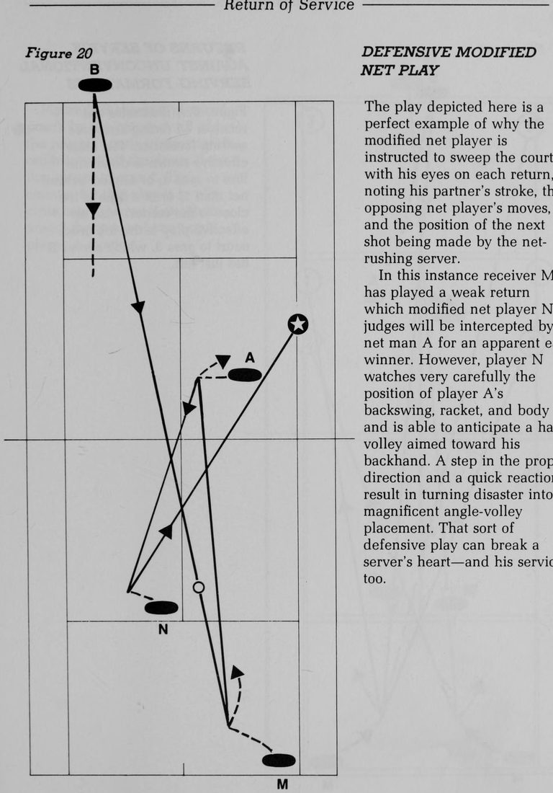
TRẢ GIAO BÓNG TRƯỚC NHỮNG THẾ ĐỨNG GIAO BÓNG KHÔNG THEO LỆ THƯỜNG Hình 21A minh họa người trả giao bóng M đối mặt với một thế đứng giao bóng ngược. Cú trả bóng hiệu quả nhất của anh ta là dọc biên tới khu vực 1, hoặc đánh chéo phía sau người đánh lưới tới khu vực 2 nếu anh ta ở quá gần đường giữa sân. Một pha bóng hiệu quả nữa là cú bổng chéo sân tới khu vực 3, nơi người giao bóng B vừa mới rời đi.
RETURNS OF SERVICE AGAINST UNCONVENTIONAL SERVING FORMATIONS Figure 21A illustrates the receiver M facing a reverse serving formation. His most effective return is down the line to area 1, or angled behind net man to area 2 if he is too close to the center. Also an effective play is the lob cross court to area 3, which server B has just left. /
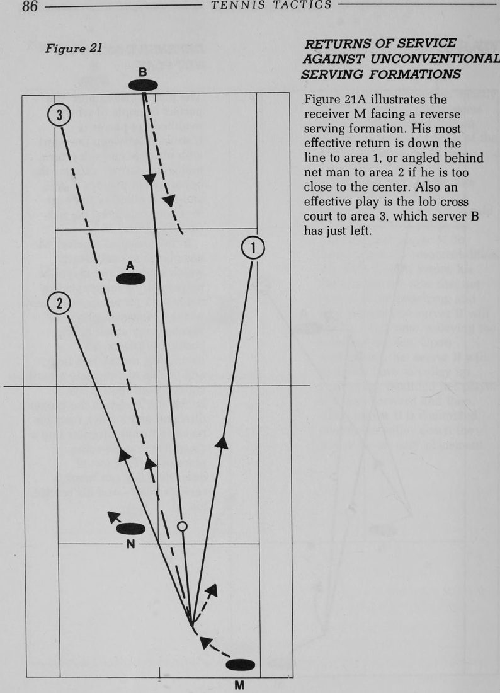
Return of ServiceReturn of Service
Hình 21B cho thấy một pha cắt bóng (poach) có chủ đích của người đánh lưới A từ thế đứng giao bóng ngược nhằm cắt cú trả bóng dọc biên tới khu vực 1. Cách khắc chế pha bóng này là đánh chéo sân tới khu vực 2 hoặc bổng tới khu vực 3 ngay khi bạn phát hiện đấu thủ A đang di chuyển.
Figure 21B shows a planned poach by net player A off of the reverse serving formation in order to cut off the down-theline return to area 1. The counter for this play is to play cross court to area 2 or lob to area 3 the moment you catch player A moving.
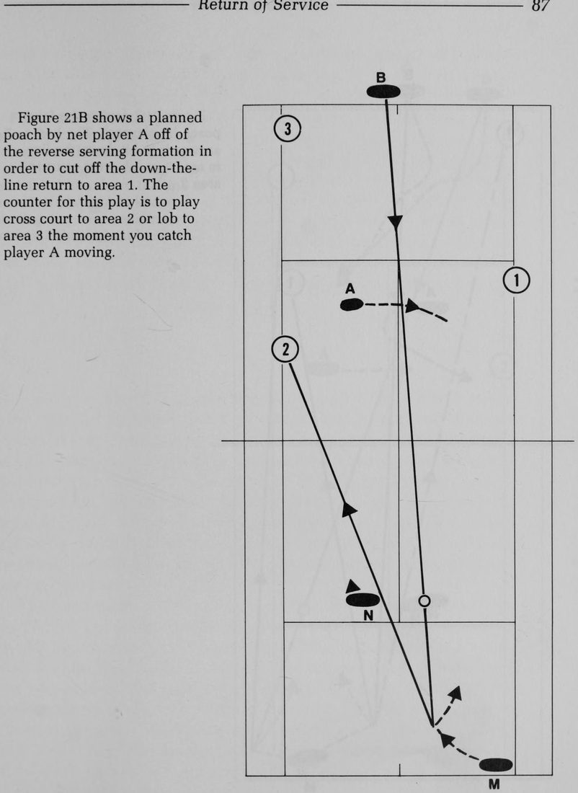
Hình 21C mô tả pha cắt bóng giả (fake poach) của đấu thủ A. Câu trả lời tốt nhất là đánh dọc biên tới khu vực 1 hoặc bổng chéo sân tới khu vực 3.
Figure 21C depicts the fake poach by player A. The best answer is to hit down the line to area 1 or lob cross court to area 3.
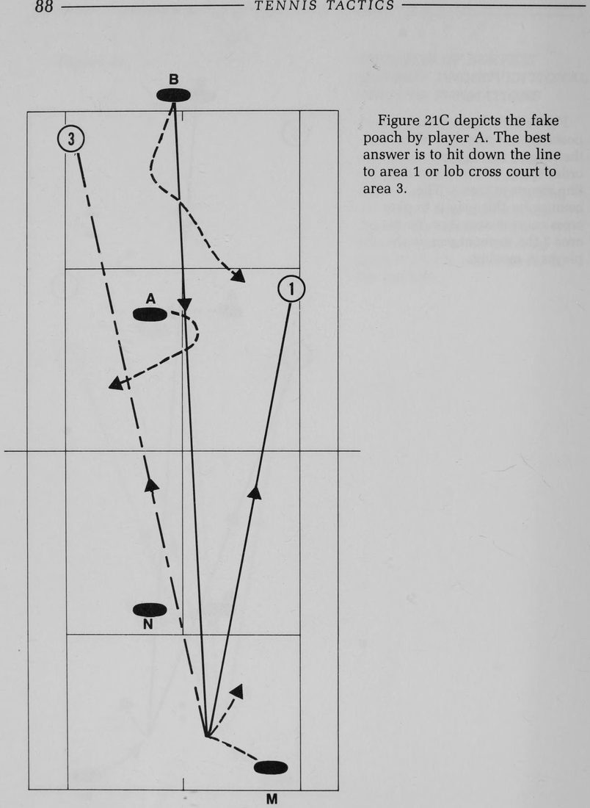
Return of ServiceReturn of Service
Hình 21D cho thấy pha cắt bóng (poach) từ thế đứng giao bóng thông thường. Câu trả lời, nếu bạn phát hiện người đánh lưới A đang di chuyển, là đánh dọc biên phía sau anh ta tới khu vực 1. Nếu đấu thủ A khởi động muộn, cú trả bóng chéo sân tới khu vực 2 hẳn sẽ đánh bại được anh ta.
Figure 21D shows the poach off of the conventional serving formation. The answer if you catch net player A moving is to hit behind him down the line to area 1. If player A is late in starting, the cross-court return to area 2 should beat him.
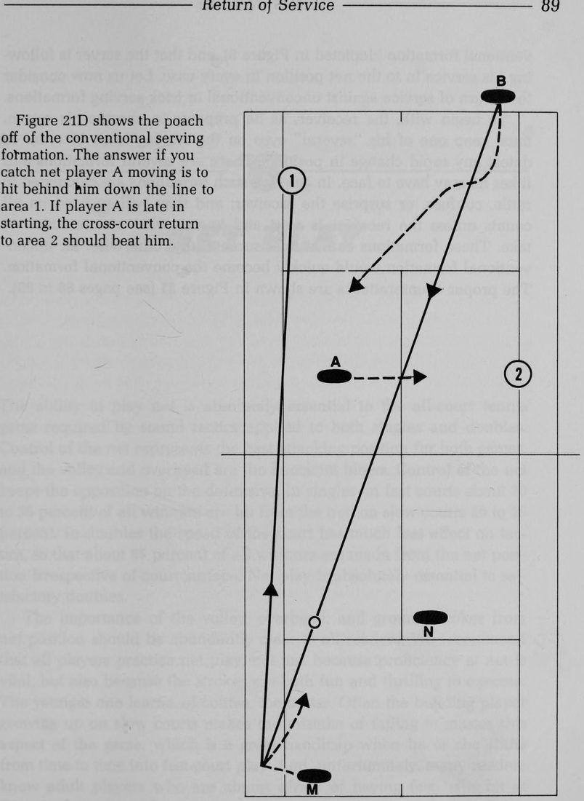
thế đứng thông thường (được mô tả trong Hình 8), và rằng trong mọi trường hợp người giao bóng đều theo cú giao bóng của mình lên vị trí lưới. Giờ đây chúng ta hãy xét việc trả giao bóng trước những thế đứng giao bóng không theo lệ thường hay còn gọi là thế đứng "đánh lừa". Để bắt đầu, người trả giao bóng, khi chuẩn bị thực hiện cú trả bóng, phải để một trong "vài" con mắt của mình nhìn về đội giao bóng nhằm phát hiện bất kỳ sự thay đổi vị trí nhanh chóng nào. Có nhiều thế đứng và động tác giả khác nhau mà anh ta có thể phải đối mặt. Nói chung, những thế đứng như vậy được tính toán để làm người trả giao bóng bối rối, lúng túng, hoặc bất ngờ; và chúng sẽ thành công trên mọi phương diện trừ khi người trả giao bóng tỉnh táo và biết cách phản đòn nào cần thực hiện. Những thế đứng này có thể bị đối phó thành công; nếu không thì một thế đứng không theo lệ thường sẽ nhanh chóng trở thành thế đứng thông thường. Những đòn phản công đúng đắn được thể hiện trong Hình 21 (xem các trang 86 đến 89).
ventional formation (depicted in Figure 8), and that the server is following his service in to the net position in every case. Let us now consider the return of service against unconventional or trick serving formations. To begin with, the receiver, as he prepares to execute his return, must keep one of his “several” eyes on the serving team in order to detect any rapid change in position. There are several formations and fakes he may have to face. In general, such formations are calculated to rattle, confuse, or surprise the receiver; and they will succeed on all counts unless the receiver is alert and knows what counteraction to take. These formations can be met successfully; otherwise. an unconventional formation would quickly become the conventional formation. The proper counterattacks are shown in Figure 21 (see pages 86 to 89).
Khả năng chơi lưới là điều tuyệt đối thiết yếu đối với lối đánh toàn sân mà chiến thuật hợp lý đòi hỏi trong cả đánh đơn lẫn đánh đôi. Kiểm soát lưới đại diện cho vị trí tấn công tốt nhất cho cả hai lối chơi, và vô-lê cùng những cú đập bóng trên cao (smash) chính là những đòn kết liễu. Kiểm soát lưới giữ đối phương trong thế phòng ngự. Trong đánh đơn trên Sân Nhanh, khoảng 30 đến 35 phần trăm số điểm thắng được đánh từ lưới; trên Sân Chậm là 20 đến 25 phần trăm. Trong đánh đôi, tốc độ sân ảnh hưởng tới chiến thuật ít hơn nhiều, nên khoảng 55 phần trăm số điểm thắng được thực hiện từ vị trí lưới bất kể bề mặt sân. Lối đánh lưới là điều tuyệt đối thiết yếu để có một lối đánh đôi tốt. Tầm quan trọng của cú vô-lê, cú đập bóng trên cao (smash), và những cú đánh từ cuối sân thực hiện từ vị trí lưới hẳn đã quá rõ ràng với mọi độc giả. Chúng tôi khuyên mọi đấu thủ nên luyện tập lối đánh lưới, không chỉ vì sự thành thạo ở lưới là thiết yếu, mà còn vì những cú đánh này vừa thú vị vừa gay cấn khi thực hiện. Tất nhiên, càng học sớm càng tốt. Thường thì đấu thủ trẻ lớn lên trên Sân Chậm mắc sai lầm là không nắm vững khía cạnh này của trò chơi, điều này là một trở ngại lớn khi anh ta hoặc cô ta thỉnh thoảng chuyển sang chơi trên Sân Nhanh. Và, đáng tiếc thay, nhiều độc giả biết những đấu thủ trưởng thành gần như sợ phải bị những quả bóng nhanh đánh vào người khi đứng ở vị trí lưới. Việc không nắm vững cú vô-lê, vốn là cú đánh được dùng nhiều nhất trong lối đánh lưới, gần như là một khiếm khuyết đáng cười, bởi vì cú đánh này dễ thực hiện ngay khi người ta hiểu được những nguyên lý liên quan. Chúng tôi tin rằng một vài lời bình về cú vô-lê ở thời điểm này sẽ hỗ trợ cho phần trình bày của chương này cũng như niềm vui thích cuối cùng của bạn với trò chơi. Nói ngắn gọn, chúng tôi muốn bạn cảm thấy thoải mái như ở nhà khi đứng ở lưới. NHỮNG NGUYÊN TẮC CƠ BẢN CỦA VIỆC VÔ-LÊ Tư thế thân người và cây vợt Tư thế vô-lê đúng đắn bao gồm ba nguyên tắc cơ bản chính. Thứ nhất, đầu vợt phải cao hơn chỗ cầm. Lý do là khi bàn tay ở tư thế đó, thế cầm vợt mạnh hơn khoảng 20 phần trăm so với khi cổ tay duỗi xuống dưới để cắt một quả bóng nằm thấp hơn đầu vợt. (Bẻ cổ tay đối phương xuống dưới là phương pháp ưa thích mà các đô vật dùng để phá thế nắm.) Để đạt được tư thế đầu vợt này, điều bắt buộc là đấu thủ phải khuỵu gối xuống cho tương xứng. Một khiếm khuyết lớn của hầu hết những người chơi cuối tuần, đặc biệt là phụ nữ, là không khuỵu gối đủ thấp "để hạ người xuống với bóng" sao cho cổ tay ở dưới quả bóng. Một thế nắm mạnh hơn
The ability to play net is absolutely essential to the all-court tennis game required by sound tactics applied to both singles and doubles. Control of the net represents the best attacking position for both games, and the volley and overhead are the knockout blows. Control of the net keeps the opposition on the defensive. In singles on fast courts about 30 to 35 percent of all winners are hit from the net; on slow courts 20 to 25 percent. In doubles the speed of the court has much less effect on tactics, so that about 55 percent of all winners are made from the net position irrespective of court surface. Net play is absolutely essential to satisfactory doubles. | The importance of the volley, overhead, and ground strokes from net position should be abundantly clear to all readers. We recommend that all players practice net play, not just because proficiency at net is vital, but also because the strokes are both fun and thrilling to execute. The younger one learns, of course, the better. Often the budding player growing up on slow courts makes the mistake of failing to master this aspect of the game, which is a great handicap when he or she shifts from time to time into fast-court play. And, unfortunately, many readers know adult players who are almost afraid of having fast balls hit at them in the net position. Failure to master the volley, which is the stroke most used in net play, is almost a ridiculous shortcoming, since the stroke is easy to produce as soon as one understands the principles involved. We believe a few comments on the volley at this point will assist in the presentation of this chapter as well as your ultimate enjoyment of the game. In short, we intend to make you feel at home at net. THE FUNDAMENTALS OF VOLLEYING Body and Racket Position The proper volley position involves three main basics. First, the head of the racket must be above the grip. The reason for this is that when the hand is in that position the grip is about 20 percent stronger than when the wrist is extended in a downward position to intercept a ball below the racket head. (Bending the opponent’s wrist downward is a favorite method used by wrestlers to break a grip.) To accomplish this racket-head position, it is imperative that the player bend his knees accordingly. A major shortcoming of most weekend players, particularly women, is failure to bend the knees far enough “to get down to the ball” so that the wrist is below the ball. A stronger grip * ts
Lối đánh lưới là thiết yếu trong việc cắt những quả bóng đánh mạnh, đặc biệt nếu chúng chạm vào vợt hơi lệch khỏi tâm. Thứ hai, bóng phải được đánh ở khoảng mười hai inch phía trước thân người để cho phép mắt dõi bóng vào tâm cây vợt. Không thể nào xoay đầu và mắt đủ nhanh để theo dõi một cú đánh tốc độ cao khi bóng di chuyển từ một điểm cách đấu thủ khoảng một foot phía trước tới bên hông anh ta. Cố gắng vô-lê bóng ngang hông chỉ dẫn đến việc bóng và vợt tiếp xúc lệch tâm và kéo theo những sai sót. Để đánh cú vô-lê đúng cách ở phía trước thân người đòi hỏi cổ tay phải ngửa ra sau và khóa chặt, hướng về phía đường biên dọc, để đưa toàn bộ mặt vợt ra đón quả bóng đang lao tới. Và thứ ba, góc của mặt vợt phải được điều chỉnh để nâng bóng vượt qua lưới từ tư thế vô-lê ngang mũi giày, để đánh bóng bằng phẳng từ khoảng ngang hông, và để hướng bóng đi xuống từ ngực trở lên. Nói cách khác, cổ tay vững chắc cùng mặt vợt phải tạo thành một bức tường vô-lê lõm chắc chắn như được mô tả trong Hình 22. Hãy để ý cách thân người xoay nghiêng so với lưới, mắt tập trung vào bóng, cổ tay ở dưới đầu vợt đồng thời ngửa ra sau và khóa chặt để đưa mặt vợt hướng thẳng vào quả bóng đang tới. Thế cầm vợt và cú đánh Vì bóng bay từ vạch cuối sân tới lưới trong 0,2 đến 0,3 giây, điều thiết yếu là đấu thủ phải sẵn sàng vô-lê tức thì từ phía thuận tay hoặc trái tay, hay từ vị trí ngay trước thân người. Để sẵn sàng, có hai điều phải ghi nhớ. Thứ nhất, vì không đủ thời gian để thay đổi thế cầm vợt, phải áp dụng một thế cầm cho phép trả bóng hiệu quả như nhau từ mọi góc độ. Những đấu thủ hàng đầu sử dụng thế cầm Continental (Hình 3), vì nó là câu trả lời tốt nhất cho thế cầm vô-lê đa dụng (cũng như cho cú đập bóng trên cao). Tư thế sẵn sàng của người vô-lê có trọng lượng phân bố đều trên phần ức bàn chân, đầu gối hơi khuỵu và vợt ở phía trước hướng về phía người trả giao bóng. Nên đỡ vợt nhẹ nhàng gần cổ vợt bằng tay trái để hỗ trợ việc xoay người sang hai bên nhanh như nhau. Thứ hai, vì thời gian eo hẹp, cú đánh nói chung phải được giới hạn ở một cú đấm bóng với động tác vung vợt ra sau ngắn từ một đến hai feet và động tác theo bóng ngắn với cổ tay cứng. Như thường lệ, có một số ngoại lệ nhất định đối với những khuyến nghị về cú đánh. Khi bóng ở trên hông và có thể đánh hướng xuống (xem
Net Play is vital in intercepting hard-driven balls, particularly if they strike the racket slightly off center. Second, the ball must be struck about twelve inches in front of the body in order to permit the eyes to follow the ball into the center of the racket. It is impossible to turn the head and eyes fast enough to track a high-velocity drive as the ball moves from a point about a foot in front of the player to his side. Attempting to volley the ball at your side only results in off-centered contact between ball and racket and consequent errors. To strike the volley properly in front of the body requires that the wrist be laid back and locked, pointing toward the sideline, in order to present the total racket face to the on-rushing ball. And, third, the angle of the racket face has to be adjusted to lift the ball over the net from a shoe-top volleying position, to play the ball level from about waist high, and to direct the ball downward from the chest upward. In other words, firm wrist and the racket face must present a solid concave volley wall as depicted in Figure 22. Note how the body is turned sideways to the net, eyes focused on the ball, the wrist is below the racket head and also laid back and locked to present a racket face aimed directly at the oncoming ball. The Grip and the Stroke Since the ball travels from base line to net in 0.2 to 0.3 second, it is essential the player be ready to volley instantaneously from either the forehand or the backhand side, or from a position directly in front of the body. To be prepared, two things must be remembered. First, since there is insufficient time to alter the grip on the racket, a grip which permits equally effective returns from all angles must be adopted. The top players utilize the Continental grip (Figure 3), as it affords the best answer to the all-purpose volley (as well as overhead) grip. The ready position for the volleyer has the weight equally distributed on the balls of the feet, with knees slightly bent and racket in front pointing toward the receiver. It should be cradled lightly near the throat with the left hand to assist in making turns with equal rapidity to either side. Second, because of the brief time available, the stroke must ordinarily be restricted to a punch shot with a short backswing of one to two feet and a short follow-through with a stiff wrist. As always, there are certain. exceptions to stroking recommendations. When the ball is above the waist and can be hit downward (see
Hình 22), có thể sử dụng động tác vung vợt ra sau lớn hơn nếu có thời gian. Đây được gọi là cú vô-lê vung tay, khác với cú đấm bóng, và thường được dùng khi cố gắng bắn những cú đặt bóng hiểm, đặc biệt khi người vô-lê gặp một quả bóng bổng dễ đánh. Phán đoán trước Một lần nữa, thời gian bay tối thiểu của bóng lại đặt gánh nặng lên đấu thủ lưới đánh đơn hoặc đội lưới đánh đôi là phải phán đoán loại và hướng của cú trả bóng, nếu không anh ta hoặc họ có thể bị bất ngờ và lệch vị trí. Điều này đặc biệt đúng trong đánh đôi khi đối phương đang ở vị trí vô-lê và bóng bay qua bay lại trong 0,1 đến 0,2 giây. Như đã chỉ ra trong Chương 2, việc phán đoán ý định của người đánh bóng là tương đối dễ nếu bạn nhận ra loại cú trả bóng mà cú đánh của chính bạn phải gợi ra, nếu bạn nghiên cứu thói quen đánh bóng của người đánh bóng, cùng vị trí bàn chân, thân người, cánh tay, động tác vung vợt ra sau, và cây vợt của anh ta khi anh ta bắt đầu thực hiện cú trả bóng. Nhờ luyện tập, những dấu hiệu hé lộ tưởng chừng phức tạp và liên quan chặt chẽ với nhau này có thể được nhận định chỉ trong một cái liếc mắt. Điều này đến lượt nó cho phép dịch chuyển vị trí nhanh chóng để cắt cú trả bóng đã phán đoán được một cách khéo léo và giành lợi thế thời gian tích tắc cần thiết cho việc hoạch định, lựa chọn, và thực hiện một đòn tấn công hiệu quả. Luyện tập vô-lê có thể rất thú vị. Cách làm tốt nhất là bố trí một đấu thủ ở mỗi bên lưới, ngay phía trước điểm mà ba đường của ô giao bóng gặp nhau, được gọi là chữ T. Từ những vị trí sâu này, mỗi đấu thủ buộc phải học cách cúi người xuống để đánh những quả vô-lê thấp, khó hơn. Những đấu thủ đánh đôi hàng đầu có thể giữ bóng bay qua bay lại thấp trên lưới trong nhiều phút liền. Tầm quan trọng của việc giữ bóng thấp hẳn đã rõ ràng: nó ngăn đối phương đánh bổng xuống một quả vô-lê tấn công dữ dội để dễ dàng ghi điểm. Di chuyển tới vị trí đúng Ngoài việc luôn tỉnh táo với bộ não hoạt động, thăng bằng hoàn hảo, và phản xạ nhạy bén, người đánh lưới lão luyện phải hiểu cách di chuyển tới vị trí đúng vào thời điểm đúng. Đây là một chủ đề phức tạp trong đó chiến thuật đánh đơn và đánh đôi khác hẳn nhau. Vì vậy, những khía cạnh này của lối đánh lưới sẽ được trình bày riêng biệt trong phần nội dung tiếp theo của chương này.
Figure 22), a bigger backswing can be utilized if time is available. This is called a swinging, rather than a punch, volley and is often used in trying to bang placements, particularly when the volleyer is presented with a high sitter. Anticipation Once again, the minimal travel time of the ball places burdens upon the singles net player or doubles net team to anticipate the type and direction of the return, otherwise he or they might be caught by surprise and out of position. This is particularly true in doubles when the opponents are in the volleying position and the ball flies back and forth in 0.1 to 0.2 second. As already pointed out in Chapter 2, it is relatively easy to anticipate the intentions of the stroker if you identify the type of return your own shot should elicit, if you study the striker’s stroking habits, and also the position of his feet, body, arm, backswing, and racket as he begins to execute his return. With practice, these seemingly complex and interrelated giveaway factors can be diagnosed at a glance. This permits, in turn, a quick shift of position to intercept the anticipated return skillfully and to gain the split-second time advantage necessary to the planning, selection, and execution of an effective offensive answer. Practicing volleying can be great fun. The best procedure is to position a player on each side of the net just in front of the point where the three service-court lines come together, which is known as the T. From these deep positions each player is forced to learn how to bend down to hit the more difficult, low volleys. Top doubles players can keep the ball flying back and forth low over the net for minutes at a time. The importance of keeping the ball low should be obvious: it prevents the opponent from hitting down a severe, offensive volley for a likely winner. Moving to the Proper Position In addition to being ever alert with the brain ticking, balance perfect, and reflexes sharp, the accomplished net player must understand how to move to the proper position at the right moment. This is a complex subject in which singles and doubles tactics differ completely. Therefore, these aspects of net play will be treated separately in the text which follows in this chapter.
6. Lối Đánh Lưới
Net PlayNet Play
NHỮNG ĐIỀU CƠ BẢN VỀ LỐI ĐÁNH LƯỚI TRONG ĐÁNH ĐƠN Lối đánh lưới trong đánh đơn nên được hình dung là bao gồm hai cú đánh liên tiếp: một cú lên lưới gây sức ép để dọn đường cho chuyến đi từ vạch cuối sân ra lưới, và một cú đánh tiếp theo được thực hiện từ vị trí lưới. Để cú đánh ở lưới trở thành một cú ghi điểm, cú lên lưới phải hiệu quả trong việc buộc đối phương trả bóng phòng ngự. Một điểm yếu phổ biến ở nhiều đấu thủ là khuynh hướng lao lên lưới bất chấp việc đã thực hiện một cú lên lưới yếu ớt. Nếu sau đó bạn thua điểm, lỗi nên được quy cho cú lên lưới không gây sức ép nhiều hơn là quy cho việc bạn không biết vô-lê. Luyện tập để phát triển những cú đánh gây sức ép tốt, có thể khiến đối phương mất thăng bằng, là một phần thiết yếu của lối chơi vô-lê mà thường bị bỏ qua quá nhiều. Để trở thành một người đánh lưới giỏi, cần phải học những điều sau: (1) cách giành vị trí lưới, (2) những tư thế vô-lê đúng đắn và việc phán đoán cú trả bóng của đối phương, và (3) cách đặt bóng hiểm đúng đắn ở những cú đánh lưới. Những yếu tố này sẽ được trình bày theo thứ tự. Lên tới lưới Đấu thủ chỉ nên chạy lên lưới sau khi đã dọn đường bằng một cú đánh mà người ta kỳ vọng sẽ buộc đối phương trả bóng phòng ngự. Về cơ bản có bốn loại cú lên lưới có thể mở ra cơ hội chiếm vị trí lưới: 1. Một cú giao bóng gây sức ép 2. Một cú trả giao bóng gây sức ép 3. Một cú đánh từ cuối sân gây sức ép được thực hiện từ bất kỳ cú trả bóng nông nào—tức là từ một quả bóng nảy cách vạch cuối sân của bạn vào trong khoảng hơn mười feet 4. Một cú bổng tấn công Bốn phương pháp lên lưới này giờ đây sẽ được phân tích. Để một cú giao bóng đủ sức gây sức ép nhằm cho bạn một cơ hội chấp nhận được để thực hiện một cú vô-lê đầu tiên có sức sát thương, nó phải được đánh sâu trên một sân nhanh. Trước hầu hết các đấu thủ, cú giao bóng sâu nên được hướng tới góc ngoài để mở sân cho một cú vô-lê chéo sân, hoặc tới góc trái tay để dụ một cú trả bóng yếu hơn, như đã thể hiện trước đó trong Hình 7A. Đường chạy đúng đắn của người giao bóng khi lao nhanh tới vị trí lưới phụ thuộc vào điểm nảy của cú giao bóng, như được mô tả trong Hình 23.
SINGLES NET-PLAY BASICS Net play in singles should be thought of as involving two consecutive strokes: a forcing approach shot to set the stage for the trip from the base line to the net, and a follow-up shot to be played from the net position. For the net shot to be a winner, the approach shot must be effective in forcing a defensive reply. A weakness prevalent among many players is the tendency to rush the net despite having executed a weak approach shot. If you then proceed to lose the point, it should probably be blamed more on the non-forcing approach shot than on your inability to volley. Practice in developing good forcing shots which will drive the opponent off balance is an essential part of the volleying game which is all too often overlooked. To become a good net player it is necessary to learn the following: (1) how to acquire the net position, (2) proper volleying positions and anticipation of the opponent’s return, and (3) proper placing of net shots. These factors will be presented in order. Getting to the Net A player should run to the net only after preparing the way by means of a shot which is expected to force a defensive return by the opponent. There are essentially four types of approach shots which can open up an opportunity for capturing the net position: 1. A forcing serve 2. A forcing return of service 3. A forcing ground stroke made from any shallow return—that is, from a ball bouncing more than about ten feet inside your base line 4. An offensive lob These four approach methods will now be analyzed. For a serve to be sufficiently forcing to provide you with an acceptable chance of making a telling first volley, it must be hit deep on a fast court. Against most players the deep serve should be directed to the outside corner to open up the court for a cross-court volley, or to the backhand corner to draw a weaker return, as previously shown in Figure 7A. The proper path of the server in running rapidly to the net position depends on the bounce point of the serve, as depicted in Figure 23.
CHIẾM LƯỚI SAU CÚ GIAO BÓNG Hình này cho thấy hai phương pháp tiêu chuẩn để chiếm lưới sau cú giao bóng. Hình 23A mô tả cách lên lưới đơn giản tốt nhất khi cú giao bóng được hướng tới điểm D, sâu và gần giữa sân. Điều này hạn chế góc trả bóng khả thi của người trả giao bóng B vào khoảng RST, mà đường phân giác của nó là SU. Đường lên lưới tốt nhất cho người giao bóng là chỉ cách đường SU vài inch về phía dọc biên, vì một cú trả bóng nhanh hơn một chút có thể được đánh dọc theo phía đó mà vẫn nằm trong sân. Người giao bóng, khi chạy vào, dừng lại trong khoảnh khắc để thực hiện một bước nhảy giữ thăng bằng ở điểm K, rồi di chuyển về phía điểm L, M, hoặc N, tùy thuộc vào hướng dự đoán của cú trả giao bóng. Hãy lưu ý rằng cứ mỗi foot tiến gần lưới hơn dọc theo đường K đến L, người giao bóng được lợi thêm khoảng một foot chiều rộng sân ít phải bao quát hơn ở mỗi bên. Những cú trả bóng rộng ra tới các đường biên dọc về phía điểm R hoặc T thường có thể bị cắt vì chúng phải được đánh chậm, như đã chỉ ra, hoặc sẽ bay vượt qua đường biên dọc.
CAPTURING THE NET BEHIND SERVE } This Figure shows two standard methods of taking the net behind serve. Figure 23A depicts the best simple approach to the net when the serve is directed toward point D, deep and near the center of the court. This restricts the possible angle of receiver B’s return to RST, the bisector of which is SU. The best path for the server to the net is just inches on the down-the-line side of SU, since a slightly faster return can be hit down that side and still remain in the court. The server, on running in, pauses momentarily for a balanced hop at point K, and then moves toward point L, M, or N, depending on the anticipated direction of the return of service. Note that for every foot closer to the net along the K to L line, the server gains by having about one less foot width of court to cover on either side. Returns wide to the sidelines toward point R or T can ordinarily be intercepted because they must be hit slowly, as indicated, or sail beyond the sideline.
Net PlayNet Play
Hình 23B cho thấy cách lên lưới đúng đắn nhưng phức tạp hơn sau một cú giao bóng rộng tới góc trái tay. Khi người trả giao bóng B di chuyển tới điểm E, anh ta có một góc trả bóng hiệu dụng rộng hơn, DEF, mà đường phân giác của nó là EG. Trong khi cú trả bóng chéo sân tới D phải được đánh chậm để giữ bóng trong sân, cú đánh dọc biên về phía điểm F lại có thể được đánh với tốc độ chóng mặt. Điều này có nghĩa là người giao bóng, khi cố gắng hoạch định đường lên lưới của mình, phải ưu tiên phía dọc biên của đường phân giác để lấy đà nhảy tới điểm K, rồi sau đó tới điểm L, M, hoặc N như đã dự đoán. Hai sơ đồ này dùng để minh họa sự khác biệt giữa cái gọi là lý thuyết trung tâm và lý thuyết góc. Lý thuyết trung tâm, như thể hiện trong Hình 23A, hạn chế người trả giao bóng trong một góc nhỏ hơn để đánh cú đánh vượt qua (passing) nhằm vào người giao bóng đang tiến lên, nhưng lại đặt người trả giao bóng vào vị trí tốt hơn để trả bất kỳ quả vô-lê đáp trả nào vì anh ta đã ở ngay trung tâm vạch cuối sân. Lý thuyết góc, như thể hiện trong Hình 23B, đẩy người trả giao bóng ra khỏi sân, nhưng lại cho anh ta lợi thế về một góc tấn công rộng hơn cho cú trả giao bóng. Tuy nhiên, kiểu giao bóng này cũng mở sân cho một cú vô-lê chéo sân dễ dàng có thể ghi điểm của người giao bóng. Cuộc đấu giữa người giao bóng và người trả giao bóng về việc ai sẽ thắng bằng chiến thuật lý thuyết trung tâm hay lý thuyết góc diễn ra liên tục. Khả năng phán đoán, độ dữ dội, tốc độ, sự đa dạng, sự đánh lừa, và những yếu tố khác sẽ quyết định người chiến thắng cuối cùng trong mỗi trận đấu.
Figure 23B shows the proper, more complex approach to the net following a serve wide to the backhand corner. When receiver B moves to point E, he enjoys a wider effective angle of return, DEF, the bisector of which is EG. While the return cross court to D has to be hit slowly to stay in the court, the down-the-line shot toward point F can be struck with blistering speed. This means that the server, in trying to plan his approach to the net, must favor the down-the-line side of the bisector to hop point K, and then on to point L, M, or N as anticipated. These two diagrams serve to illustrate the difference between the so-called center theory and the corner theory. The center theory, as shown in Figure 23A, restricts the receiver to a smaller angle for a passing shot against the advancing server, but does place the receiver in a better position to return any answering volley because he is already well located at the center of the base line. The-corner theory, as shown in Figure 23B, drives the receiver off the court, but does provide him with the advantage of a wider offensive angle for return of service. However, this type of serve also opens up the court for a possible easy winning cross-court volley by the server. The duel between server and receiver over which will win with center-theory or corner-theory tactics is continuous. Anticipation, severity, speed, variety, deception, and other factors will determine the ultimate victor in each match.
LÊN LƯỚI SAU CÚ TRẢ GIAO BÓNG Vì cơ hội thắng một điểm cụ thể nghiêng về phía người giao bóng, bất kỳ cơ hội nào có thể giành lại thế tấn công đều phải được người trả giao bóng nắm bắt. Trong sơ đồ này, người trả giao bóng B đã chọn tiến vào vài bước vì người giao bóng A vừa đánh hỏng quả giao bóng thứ nhất. Động thái đơn giản này gây áp lực tâm lý lên người giao bóng, khi anh ta cảm nhận rằng người trả giao bóng có thể sẽ cố giành lấy thế tấn công. Thực vậy, người trả giao bóng B đã làm đúng như vậy bằng cách tiếp tục tiến lên, chạy vòng qua quả giao bóng thứ hai nông, đánh một cú thuận tay sâu dọc biên, và lao lên lưới. Người giao bóng, bị ghim chặt ở khu cuối sân, phải với người tới bóng và chỉ có thể cố đánh vượt qua dọc biên. Người trả giao bóng B đã phán đoán được điều này, di chuyển sang phải, và được đền đáp bằng một cú vô-lê góc sân dễ dàng để ghi điểm. Kiểu thao tác này là một phương pháp vô giá để bẻ gãy giao bóng. Mọi đấu thủ nên nắm vững trình tự này.
GOING TO NET BEHIND RETURN OF SERVICE Since the odds of winning a particular point favor the server, any possible opportunity to steal away the offense must be grabbed by the receiver. In this diagram receiver B has elected to move in a couple of steps because server A has just missed his first serve. This simple move exerts psychological pressure on the server, as he senses that the receiver may try to take away the offense. Indeed, receiver B does just that by continuing forward, running around the shallow second serve, driving a forehand deep down the line, and rushing to the net. The server, pinned in the back court, has to reach for the ball and can only try to pass down the line. Receiver B anticipated this, moves to his right, and is rewarded with an easy angle volley for the point. This sort of maneuver represents an invaluable method for breaking serve. All players should master this sequence.
Lối đánh lưới Không có thời gian để nấn ná, bởi vì cứ mỗi foot người giao bóng tiến gần lưới hơn, anh ta càng thu hẹp góc đánh vượt qua (passing) của người trả giao bóng, và càng ít có khả năng phải đánh quả vô-lê từ vị trí "ngay dưới chân" dễ bị tổn thương như được thể hiện. Tất nhiên, bạn không thể quá lao đầu vào việc chạy xông ra lưới nếu không sẽ mời gọi một cú bổng tấn công. Vì vẫn còn khoảng trống để người trả giao bóng đánh vượt qua người giao bóng đang tiến lên nếu anh ta lệch vị trí một bước, người giao bóng nên nghiên cứu những kiểu trả giao bóng mà đối thủ của mình sử dụng. Ví dụ, đã được ghi nhận trong Hình 10 và 11 rằng phần lớn các cú giao bóng sâu được trả chéo sân, đặc biệt là từ phía trái tay, và những cú giao bóng nông có xu hướng được đánh dọc biên. Khi chiếm lưới sau cú trả giao bóng, tốt nhất nên chờ quả giao bóng thứ hai, vốn thường ít dữ dội và nông hơn quả giao bóng thứ nhất (xem Hình 24). Nhiều trận chung kết trên Sân Nhanh đã thay đổi cục diện nhờ chiến thuật này. Một khi một trong các đấu thủ bắt đầu đánh hỏng quả giao bóng thứ nhất, bạn có thể thấy đối thủ của anh ta nhận ra sơ hở, bắt đầu tiến lên phía trước, và chơi để giành pha bẻ gãy giao bóng cực kỳ quan trọng. Việc "đóng quân" chờ quả giao bóng thứ hai yếu ớt là một thao tác ưa thích của cả những người trả giao bóng nữ lẫn nam trên cả mặt sân nhanh và chậm. Một số cú đánh đẹp như tranh nhất trong quần vợt, và chắc chắn là phương pháp được dùng nhiều nhất để giành vị trí lưới trong đánh đơn, chính là những cú đánh từ cuối sân tấn công. Những cú lên lưới như vậy không thể được thực hiện từ vạch cuối sân vì quãng chạy ra lưới quá dài. Thay vào đó, khoảng 90 phần trăm thời gian, những chuyến đi ra lưới như vậy được dàn dựng bằng cách tận dụng một cú trả bóng nông của đối phương. Về bản chất, hầu hết các pha đôi co từ vạch cuối sân đều lấy mục tiêu là buộc đối phương mắc lỗi hoặc trả bóng yếu ớt. Một khi bạn đã "vắt" ra được một cú trả bóng nông, rơi cách vạch cuối sân vào trong từ mười feet trở lên, bạn phải học cách tận dụng tình huống này. Điều này đòi hỏi phải tiến lên phía trước để đánh bóng gần đỉnh cao nhất của quỹ đạo nảy, tung ra một cú đánh gây sức ép, thường là dọc biên, và tiếp tục di chuyển về phía trước vào tư thế vô-lê. Nhiều người chơi cuối tuần không sử dụng chiến thuật đúng đắn khi thực hiện cú lên lưới này. Những chiến thuật đúng đắn được giải thích trong Hình 25. Phương pháp cuối cùng để chiếm lưới là nhờ một cú bổng tấn công. Một lần nữa, cú lên lưới tốt nhất được thực hiện sau một cú trả bóng nông, chẳng hạn như một quả vô-lê yếu, như được mô tả trong Hình 26. Cú bổng này đòi hỏi khả năng kiểm soát tốt, vì nếu đánh quá cao nó có thể bay ra ngoài, và nếu quá thấp có thể cho phép đối phương nhảy lên và đảo ngược kết cục bằng một cú đập bóng trên cao (overhead) ghi điểm.
Net Play There is no time to linger, as with every foot the server can get closer to the net, the more he cuts down the receiver’s passing angle, and the less likely he will have to play the volley from the vulnerable ‘‘at the feet” position shown. Of course, you cannot be too headlong in your dash to the net or you will invite an offensive lob. Since there is room for the receiver to pass the advancing server if he is a step out of position, it behooves the server to study the patterns of service returns utilized by his opponent. For example, it was noted in Figures 10 and 11 that the preponderance of deep serves are returned cross court, particularly from the backhand side, and shallow serves tend to be hit down the line. In capturing the net on return of service it is best to wait for a second serve, which is usually less severe and shallower than the first serve (see Figure 24). Many a fast-court championship match has turned on this tactic. Once one of the contestants starts to miss his first serve you can see his opponent sense the opening, begin to move forward, and play for the all-important service break. Camping on the weak second serve is a favorite maneuver for women and men receivers on both fast and slow surfaces. Some of the most picture-perfect strokes in tennis, and certainly the most used method of gaining the net position in singles, are the attacking ground strokes. Such approach shots cannot be made from the base line because the run to the net is too long. Instead, about 90 percent of the time such journeys to the net are engineered by taking advantage of a shallow return by the opponent. In essence, most base-line exchanges have as their goal forcing the opponent into making an error or a weak return. Once you have extracted a shallow return, landing ten or more feet inside the base line, you must learn to capitalize on the situation. This calls for moving forward to play the ball near the top of the bounce, hitting a forcing shot, usually down the line, and continuing your forward movement into the volleying position. Many weekend players do not utilize proper tactics in executing this approach shot. The correct tactics are explained in Figure 25. The final method of gaining the net is by means of an offensive lob. Once again, the approach shot is best made after a shallow return, such as a weak volley, as depicted in Figure 26. This lob requires good control, as if hit too high it might sail out, and if too low could permit the opponent to jump and and reverse the outcome with a winning overhead.
Hình 25 LÊN LƯỚI SAU MỘT CÚ ĐÁNH TỪ CUỐI SÂN Những sơ đồ này minh họa các chiến thuật cần áp dụng khi lên lưới sau một cú đánh từ cuối sân, sau khi đối phương trả bóng nông tới điểm C. Hình 25A cho thấy cách thức mà hầu hết các tay vợt hàng đầu sử dụng. Đấu thủ A tiến lên từ tư thế sẵn sàng để đánh cú lên lưới dọc biên và sâu, rồi chạy nhanh vào điểm D ở phía dọc biên của đường phân giác SU của góc trả bóng khả dĩ RST. Điều này có nghĩa là đấu thủ A chỉ phải chạy quãng đường ngắn nhất để tới vị trí vô-lê tối ưu nhằm phòng thủ trước cú trả bóng dọc biên vốn có khả năng nhanh hơn.
Figure 25 GOING TO NET BEHIND A GROUND STROKE These diagrams illustrate the tactics to be employed in taking the net behind a ground stroke following a shallow return by your opponent to point C. Figure 25A shows the manner utilized by most top players. Player A moves forward from the ready position to hit the approach shot down the line deep and runs in rapidly to point D on the down-the-line side of bisector SU of the possible angle of return RST. This means that player A has had to run the minimum distance to reach the optimum volleying position to defend against the potentially faster down-theline return.
Net PlayNet Play
Hình 25B minh họa cách lên lưới mà những người chơi cuối tuần thường dùng. Họ có khuynh hướng chọn cú trả bóng chéo sân để cố tận dụng khả năng trái tay vốn thường yếu hơn của hầu hết đối phương. Tuy nhiên, điều này có nghĩa là đấu thủ A phải chạy xa thêm bốn đến năm feet để tới vị trí vô-lê tối ưu tại điểm D. Nếu đối phương B là một tay vợt hàng đầu, anh ta sẽ có thời gian vung một cú đánh vượt qua dọc biên theo đường ST. Đây chính là lý do vì sao các tay vợt chuyên nghiệp hiếm khi dùng cú lên lưới chéo sân.
Figure 25B illustrates the method of approach often used by weekend players. They are liable to choose the cross-court return in order to try to take advantage of. the normally weaker backhand capabilities of most opponents. However, this means that player A has to run four to five feet farther to reach the optimum volleying position at point D. Were opponent B a top player, he would have time to whip a passing shot down the line along ST. This is the reason the professionals seldom use the crosscourt approach shot.
Hình 26 LÊN LƯỚI SAU MỘT CÚ BỔNG Người giao bóng A đã giao bóng xoáy ra ngoài tới ô thuận tay và lên lưới để vô-lê cú trả bóng chéo sân. Tuy nhiên, anh ta lại vô-lê nông tới điểm C, điều mà người trả giao bóng B lập tức nhận ra và đổi hướng để đón. Trong khi di chuyển, anh ta liếc thấy đối phương vẫn đang tiếp tục tiến về vị trí lưới. Hình ảnh một cú bổng tấn công hiện ra ngay trong đầu anh ta, và anh ta quyết định tung một cú bóng vồng an toàn qua đầu người giao bóng A, sâu tới điểm D. Khi đánh cú bổng, anh ta cẩn thận nhắm nó qua bên trái tay của A — nơi cú đập bóng trên cao yếu hơn — đồng thời đánh chéo sân, nơi quãng đường an toàn dài hơn. Điều này buộc người giao bóng phải đảo ngược hướng chạy để đón cú bổng. Trong lúc anh ta làm vậy, người trả giao bóng B chớp lấy cơ hội chuyển sang tấn công và tiến vào lưới. Chiến thuật này tỏ ra hiệu quả, vì B có thể vô-lê chéo góc đường bóng trả về để ghi điểm thắng.
Figure 26 GOING TO NET BEHIND A LOB A “NN Server A has served wide to the forehand and taken the net to volley the cross-court return. However, he has hit up a shallow volley to point C which receiver B immediately notes and changes direction to cover. As he proceeds he glimpses his opponent continuing toward the net position. The picture of an offensive lob appears instantly on his mind, and he decides to deliver an arched shot safely over server A deep to point D. In playing the lob he is careful to aim it over A’s backhand side where the overhead is weaker, as well as cross court where the safe distance is longer. This forces the server to reverse his tracks to cover the lob. As he does so, receiver B grabs the opportunity to take the offensive and move in to net. This tactic proves profitable, as B is able to angle-volley the return for a winner.
Net PlayNet Play
Vị trí vô-lê đúng và sự phán đoán trước Giả sử giờ đây bạn đã có thể giành được vị trí lưới bằng một trong bốn phương pháp đã nêu, thì chiến thuật của chính lối đánh lưới trở nên quan trọng. Vị trí vô-lê đúng trên lưới là điểm trên sân cho bạn cơ hội tốt nhất để đánh trả bóng của đối phương theo hướng tấn công. Để vô-lê tấn công, tốt nhất là đứng gần lưới để có thể đánh bóng hướng xuống. Nhưng bạn không thể tiến vào quá gần, kẻo bị đối phương đánh cú bổng qua đầu. Sự thỏa hiệp tốt nhất là đứng cách lưới sáu đến mười feet, tùy phần nào vào chiều cao và sự nhanh nhẹn của bạn. Điều này có nghĩa là vị trí vô-lê đúng cho hầu hết các tay vợt là ở giữa sân, hai bên đường phân chia các ô giao bóng, tại một điểm cách lưới sáu đến mười feet. Chúng ta sẽ gọi đây là vị trí vô-lê cơ bản. Nhưng bạn không thể đương nhiên rằng một khi đã tới vị trí vô-lê cơ bản thì bạn có thể cứ dán chặt vào chỗ đó. Ngược lại, bạn phải nhận ra rằng đối phương có cơ hội tốt để đánh vượt qua bạn từ gần như bất kỳ vị trí nào trên sân. Vì vậy, điều thiết yếu là bạn phải phán đoán trước loại và hướng của cú đánh vượt qua sắp được tung ra nhắm vào mình và di chuyển để đón bóng, nếu không bạn sẽ mất điểm. Như đã trình bày ngắn gọn ở Chương 2, khả năng phán đoán trước là một nghệ thuật bao gồm bốn phần. Không ở đâu nhu cầu thực hiện bốn bước này một cách nhanh chóng và hiệu quả lại quan trọng hơn trong tình huống đánh đối đầu một chọi một gần lưới. Hai ví dụ về khả năng phán đoán trước phi thường mà các tay vợt hàng đầu thể hiện được trình bày trong Hình 27. Hãy nhớ rằng để phán đoán trước, bạn phải vi phạm một trong những nguyên tắc cốt lõi của quần vợt: bạn phải rời mắt khỏi bóng và quan sát đối phương để đoán loại và hướng cú đánh của anh ta. Đặt bóng khi vô-lê và đập bóng trên cao Một khi đã lên được lưới, các chuyên gia đều nhất trí về hai chiến thuật. Thứ nhất, bạn phải nhắm tới cú kết liễu, nếu không bạn sẽ mời gọi đối phương đánh vượt qua mình ở cú trả bóng. Và
Proper Volleying Positions and Anticipation Assuming you have now been able to gain the net position by any one of the four methods outlined, the tactics of net play itself become important. The proper volleying position at net is that point on the court which gives you the best chance of playing offensively your opponent’s return. To volley offensively, it is best to be close to the net in order to hit down on the ball. But you cannot move in too close, lest you be lobbed. The best compromise is to stand six to ten feet from the net, depending in part on your height and agility. This means that the proper volleying position for most players is in the center of the court astride the line that divides the service courts at a point six to ten feet from the net. We will refer to this as the basic volleying position. But you cannot take for granted that once you have reached the basic volleying position you can afford to remain glued to that spot. On the contrary, you must realize that your opponent has a good chance of passing you from almost any location on the court. Therefore, it is essential that you anticipate the type and direction of the passing shot which is about to be fired against you and move to meet the ball, or you stand to lose the point. As pointed out briefly in Chapter 2, the ability to achieve anticipation is an art which entails four parts. Nowhere is the need to be able to execute these four steps rapidly and effectively more important than in the situation when play is one-on-one near the net. Two examples of the fantastic anticipation exhibited by top players are shown in Figure 27. Remember that to anticipate you must violate one of the cardinal rules of tennis: you have to take your eye off of the ball and study your opponent to diagnose the type and direction of his shot. Placing Volleys and Overheads Once you attain the net, the experts all agree on two tactics. First, you have to go for the kill, or you invite being passed on the return. And, second, if you are forced to hit up a defensive volley, hit it deep. This allows you time to get back to the basic volleying position and keeps the opponent pinned back where his passing shot is least effective. Remembering and carrying out these two commandments will go a long way toward making your net play effective. If the server follows his serve to net and volleys the return of service, we Call this a first volley. Any other volleys are referred to as later
PHÁN ĐOÁN TRƯỚC TRONG THỰC TẾ Hình 27A cho thấy một cú giao bóng ra ngoài tốt tới ô thuận tay của đấu thủ A được người trả giao bóng B trả lại tuyệt đẹp dọc biên. Người giao bóng A chỉ có thể trả lại một cú bán vô-lê khá yếu ớt chéo sân. Điều này mang lại cho người trả giao bóng B một cơ hội đánh vượt qua dọc biên tuyệt vời. Trong tình thế tuyệt vọng này, người giao bóng A bắt đầu đón cú đánh vượt qua dọc biên được dự đoán bằng cách chạy về phía đường biên dọc. Tuy nhiên, trong khi di chuyển, anh ta quan sát ý đồ của đối phương và nhận thấy anh ta đang chuẩn bị với tay ra và miết qua bóng để tạo cú trả chéo sân, chứ không phải cắt bóng dọc biên. Để ngụy trang việc mình đã phán đoán được cú đánh, đấu thủ A bước một bước đánh lừa qua vạch giữa sân tại điểm D, rồi lập tức đổi hướng và lao sang trái. Vào khoảnh khắc cuối cùng, phản xạ nhanh nhạy của anh ta tạo ra một cú vô-lê cứu nguy tuyệt vời, biến một tình thế thua chắc thành một điểm thắng.
ANTICIPATION IN ACTION Figure 27A shows a good wide serve to the forehand by player A being returned beautifully down the line by receiver B. Server A is barely able to return a half volley rather feebly cross court. This presents receiver B with an excellent down-the-line passing opportunity. In this desperate situation server A starts to cover the expected down-the-line passing shot by running toward the sideline. However, as he moves he studies his opponent’s intentions and notes that he is preparing to reach out and roll over the ball to.make a cross-court return, rather than slicing it down the line. In order to camouflage the fact he has anticipated the shot, player A takes one deceptive step over the center line at point D, then reverses direction rapidly and sprints to his left. At the last moment his quick reflexes produce a great saving volley and turn a losing predicament into a winner.
Trong Hình 27B, đấu thủ A cố đánh vượt qua đấu thủ B, người vừa vô-lê ngắn. Giả định rằng cú đánh vượt qua của mình sẽ buộc đối phương mắc lỗi hoặc trả bóng yếu, đấu thủ A chọn tiến vào lưới ngay sau cú đó. Tuy nhiên, đấu thủ B lanh lẹ có thể đón được đường bóng khi anh ta di chuyển sang trái từ vị trí vô-lê cơ bản. Đấu thủ A nhận ra điều này và hiểu rằng mình đang lao vào một tình thế phòng thủ gần như bất khả thi khi tiếp tục chạy lên lưới. Trên đường đi, anh ta chăm chú quan sát động tác chuẩn bị của đối phương và đoán rằng B sẽ vô-lê ở phía trước thân người, vung từ đường biên dọc để đưa bóng chéo sân. Do đó, đấu thủ A dừng lại một tích tắc tại điểm M để che giấu ý đồ cho tới khi đấu thủ B hoàn toàn dấn thân vào cú đánh. Rồi anh ta chuyển sự chú ý từ động tác chuẩn bị của đối phương sang dán mắt vào bóng, lao ngang sân và xoài người để chặn bóng. Kết quả là một cú vô-lê thắng điểm khó tin dọc biên — trong tư thế duỗi hết tầm người như vậy, rõ ràng đó là nơi duy nhất anh ta có thể đưa bóng tới.
In Figure 27B player A attempts to pass player B, who has volleyed short. Assuming that his passing shot will force an error or weak return, player A elects to move in behind it toward the net. However, alert player B is able to cover the shot as he moves left from the basic volleying position. Player A notes this and realizes he is moving into an almost impossible defensive position as he continues to run to net. En route he studies intently his opponent’s stroke preparation, and diagnoses that B.will be hitting the volley in front of his body and swinging from the sideline to direct the ball cross court. Thus, player A pauses a split second at point M to hide his intentions until player B is fully committed. Then he switches his attention from his opponent’s stroke-preparation motions to focus his eyes upon the ball, dashes across the court, and lunges to intercept the ball. This results in an unbelievable volley winner down the line—while thus stretched out at full length, this was clearly the only place he could direct the shot.
Hình 28 BỨC TRANH TỔNG HỢP VỀ CHIẾN THUẬT VÔ-LÊ ĐẦU TIÊN KHI GIAO BÓNG TỚI Ô THUẬN TAY Phần dưới của sơ đồ cho thấy các vị trí vô-lê đầu tiên của B. Điều quan trọng nhất cần nhận ra là người giao bóng càng tiến sâu vào gần lưới bao nhiêu thì cơ hội thắng điểm của anh ta càng lớn bấy nhiêu. Như được chỉ ra, nếu bạn có thể tiến hết vào tận khu C, bạn sẽ thắng trong chín trên mười trường hợp, vì bạn đang ở vị trí để vô-lê bóng hướng xuống hoặc đưa bóng chéo góc gắt (dĩ nhiên, bạn cũng phải sẵn sàng quay lại đón cú bổng). Từ vị trí hơi sâu hơn ở khu D, bạn thường thắng bảy trên mười lần. Nếu bạn bị buộc phải rời khỏi vị trí và bị đẩy ra ngoài bởi một cú trả giao bóng tốt tới một trong hai khu F, cơ hội thắng của bạn giảm xuống mức ngang bằng. Và nếu bạn chạy lên lưới chậm, bạn sẽ kết thúc ở khu E, đánh rất nhiều cú vô-lê hất bóng lên từ ngang mũi giày và thua sáu trong mười điểm. Phần trên của hình mô tả kết quả các điểm tùy theo khu vực bóng rơi của cú vô-lê đầu tiên. Bằng mọi giá bạn phải tránh để cú vô-lê ngắn rơi vào Khu Nguy hiểm P, vì bạn có nguy cơ thua 60 phần trăm số điểm do đã tạo cho người nhận bóng một cơ hội đánh vượt qua tuyệt vời. Mục tiêu chính của người vô-lê là đánh bóng sâu tới khu Q hoặc R (trong vòng mười feet tính từ vạch cuối sân), vì bạn sẽ thắng khoảng tám trên mười lần. Nếu bạn áp dụng chiến thuật ưa thích là giao bóng ra ngoài để kéo người nhận bóng rời khỏi sân rồi vô-lê sâu vào góc đối diện tới khu R, bạn sẽ thắng 90 phần trăm số lần. Những cú vô-lê chéo góc tới khu T thắng hơn một nửa số lần (khu T dài hơn ở phía trái tay khi giao bóng tới ô thuận tay). Những cú vô-lê thả bóng vào khu S đòi hỏi cảm giác bóng tuyệt vời để tạo ra điểm thắng và thường chỉ hiệu quả khi được thực hiện từ khu C. Chiến thuật cho các cú giao bóng tới ô trái tay là hình ảnh phản chiếu của những gì được trình bày ở đây cho ô thuận tay.
Figure 28 COMPOSITE PICTURE OF FIRST-VOLLEY TACTICS WHEN SERVING TO THE FOREHAND B COURT Bis The lower portion of the diagram shows R_ win first-volley positions. The most important 9 in thing to recognize is that the closer in to 10 net the server can penetrate, the better his chances of winning the point. As indicated, if you can advance all the way in to area C, you should be able to win in nine cases Danger out of ten because you are in position to Area volley the ball down or angle it severely (naturally, you also have to be prepared to reverse to’cover a lob). From slightly deeper in area D you ordinarily win seven in ten times. If you are forced out of only | 4 in over position and wide by a good return of 10 half service to either area F, your chances of winning fall to even. And if your run to the net is slow, you end up in area E hitting lots of volleys up from your shoe tops and S losing six out of ten points. The upper portion of the figure depicts the outcome of points played depending on the landing area of the first volley. By all means you must avoid dumping a short volley into Danger Area P, as you stand to lose 60 percent of points because you have presented the receiver with a great passingshot opportunity. The primary objective of the volleyer is to hit the ball deep to area Q or R (within ten feet of the base line), because you should wind up winning about 4 in 10 eight out of ten times. If you utilize the favorite tactic of serving wide to pull the receiver off court and then volleying deep into the opposite corner to area R, you | should win 90 percent of the time. Angle | volleys to areas T win more than half the | time (the T area is longer on the backhand | side when serving to the forehand court). \ Drop volleys into area S require great touch to produce winners and are usually effective only when made from area C. A Tactics for serves to the backhand court are a mirror image of those here represented for the forehand court.
Net PlayNet Play
những cú vô-lê. Cú vô-lê đầu tiên thường được xem là cú vô-lê quan trọng nhất. Đó là vì nó là cú vô-lê khó đánh nhất, và cũng vì nó tạo nền tảng cho kết quả cuối cùng của điểm. Để hiểu các chiến thuật về vị trí đứng đánh cú vô-lê đầu tiên và các điểm nhắm ưu tiên, chúng tôi đã nghiên cứu hàng trăm cú vô-lê đầu tiên và các điểm diễn ra sau đó của rất nhiều tay vợt đẳng cấp thế giới. Từ dữ liệu đó nổi lên một mô thức rõ ràng về cách các điểm được thắng hay thua. Một sơ đồ tóm tắt thể hiện các vị trí và kết quả của các điểm vô-lê đầu tiên được trình bày trong Hình 28. Rất khó để nói quá tầm quan trọng đối với tay vợt đơn của việc khắc sâu bức tranh này vào trí nhớ của mình. Những cú vô-lê về sau, đã được định nghĩa là mọi cú vô-lê đánh sau cú vô-lê đầu tiên tiếp theo cú trả giao bóng, thắng nhiều điểm hơn cú vô-lê đầu tiên. Điều này đặc biệt đúng trên sân chậm và trong quần vợt nữ, nơi người giao bóng ít áp đảo hơn. Một lần nữa, chiến thuật vô-lê được khuyến nghị là nhắm tới cú kết liễu. Điều này thường có nghĩa là đánh vào phần sân trống, đánh về phía sau hoặc khiến đối phương đánh sai chân, hay đánh lừa đối thủ bằng cách giả làm một kiểu vô-lê rồi đổi hướng hoặc tốc độ, hoặc cả hai, vào phút chót. Nếu bạn không thể quyết định làm gì, hãy vô-lê sâu để có thêm cơ hội khác. Bạn càng tới gần lưới được bao nhiêu thì cú vô-lê càng mang tính tấn công bấy nhiêu — nhưng bạn phải luôn cảnh giác với một cú bổng có thể tới. Một số tình huống vô-lê về sau được mô tả trong Hình 29. NHỮNG ĐIỀU CĂN BẢN CỦA LỐI ĐÁNH LƯỚI TRONG ĐÁNH ĐÔI Lối đánh lưới chi phối hoàn toàn lối chơi đánh đôi vì hơn một nửa số điểm được thắng ở lưới. Vì chỉ khoảng một phần tư số điểm được thắng từ vạch cuối sân, điều này có nghĩa là vị trí lưới có lợi thế gấp đôi so với vị trí cuối sân. Và nếu bạn loại trừ cú giao bóng và cú trả giao bóng, vốn buộc phải đánh từ vạch cuối sân, thì lợi thế của vị trí lưới so với vị trí cuối sân tăng lên tới mức gây kinh ngạc là gấp ba lần! Điều này
volleys. The first volley is often classified as the most important volley. This is because it is the most difficult volley to play, and also because it sets the stage for the ultimate outcome of the point. To understand the tactics for positions from which to make the first volley and the preferred aim points, we studied hundreds of first volleys and the resulting points as played by numerous world-class players. From the data there emerged a clear pattern of how points are won or lost. A summary diagram showing the positions and outcomes of first-volley points is presented in Figure 28. It is difficult to overemphasize the importance to the singles player of having this picture stamped upon his or her memory. Later volleys, already defined as any volleys hit following a first volley off return of service, win more points than first volleys. This is particularly true on slow courts and in women’s tennis, where the server is less overpowering. Once again, the recommended volley tactic is to go for the kill. This usually means playing to the open part of the court, hitting behind or ‘‘wrong-footing’”’ the opponent, or deceiving your antagonist by faking one type of volley and then changing direction or speed or both at the last moment. If you cannot decide what to do, volley deep so you can get another chance. The closer you can get to the net, the more offensive the volley can be—but you have to remain alert to a possible lob. Some later volley situations are described in Figure 29. DOUBLES NET-PLAY BASICS Net play completely dominates the game of doubles because over half of all points are won at the net. Since only about one fourth of all points are won from the base line, this means that the net position enjoys a two-to-one advantage over the base-line position. And if you exclude the serve and return of service, which must be played from the base line, the advantage of the net position over the base-line position increases to a staggering three to one! This is confirmed in Table 7, which shows the overwhelming potency of the overhead and volley compared to other strokes. It is obvious that the net position must be captured at all costs. It is equally apparent that the accomplished doubles player must understand thoroughly the tactics of net play. Such comprehension involves mastery of the following: (1) methods of capturing the net position, (2)
ĐẶT BÓNG KHI VÔ-LÊ Trong Hình 29A, đấu thủ A đã lên lưới sau một cú đánh từ cuối sân gây sức ép dọc biên tới ô trái tay, đưa anh ta vào vị trí cho một cú vô-lê về sau. Sơ đồ bắt đầu với việc đối phương B cố đánh một cú vượt qua dọc biên. Điều này thiết lập một loạt lựa chọn chiến thuật cho người vô-lê A. Trong hầu hết các tình huống, cú đánh đúng là nhắm điểm 1 ở góc đối diện, vì nó buộc đấu thủ B phải chạy một quãng dài và giữ anh ta ở lại vạch cuối sân. Nếu cú đánh vượt qua được thử là bóng cao, người vô-lê A nên tiến lên và vô-lê chéo góc gắt xuống nhắm điểm 2 để có một cú đặt bóng dễ dàng. Các phương án khác được trình bày nếu đối phương B đang chạy hết sức tới điểm T hoặc U về phía các điểm nhắm dự kiến 1 và 2. Trong những tình huống này, người vô-lê có ba điểm nhắm khả dĩ, tất cả đều nhằm khiến đấu thủ B đánh sai chân. Điều này có nghĩa là đánh về phía sau đấu thủ B để anh ta không thể đảo hướng đủ nhanh mà cứu bóng. Như được chỉ ra, các điểm nhắm 3 và 4 là những chỗ hợp lý để đặt bóng ngoài tầm với về phía sau một đối phương đang mất thăng bằng. Mỗi cú đánh đều có thể được hỗ trợ bằng cách giả vờ đánh chéo sân trước rồi mới thả bóng dọc biên. Cuối cùng, một cú đặt bóng gọn gàng có thể đạt được bằng một cú vô-lê thả bóng nhẹ nhàng tới điểm nhắm 5. Rủi ro ở đây là các cú vô-lê thả bóng rất khó thực hiện vừa tốt vừa ổn định.
PLACING THE VOLLEY Player A has taken the net, in Figure 29A,; behind a forcing ground stroke down the line to the backhand to put him in position for a later volley. The diagram begins with opponent B attempting a passing shot down the line. This establishes a series of tactical choices for volleyer A. Under most circumstances the proper shot is to aim point 1 in the opposite corner, as it forces player B to make a long run and keeps him back on the base line. If the attempted passing shot is high, volleyer A should move forward and angle-- volley down sharply to aim point 2 for an easy placement. Other alternatives are presented if opponent B is running hard at point T or U toward the expected aim points 1 and 2. Under these circumstances the volleyer has three possible aim points, all of which attempt to “wrong-foot’”’ player B. This means hitting behind player B so that he cannot reverse direction rapidly enough to retrieve the ball. As shown, aim points 3 and 4 are the logical places to put the ball out of reach behind an off-balance opponent. Either shot can be assisted by pretending first to hit cross court before dumping the ball down the line. Finally, a clean placement can be achieved by a delicate drop volley to aim point 5. The risk here is that drop volleys are difficult to execute both well and consistently.
Lối đánh lưới Hình 29B cho thấy điều gì xảy ra khi người vô-lê A đã phạm sai lầm chiến thuật là đánh một cú vô-lê chéo sân nông và ngập ngừng. Điều này mang lại cho đấu thủ B cơ hội đánh vượt qua người vô-lê. Nếu đấu thủ A mới chỉ tới được vạch giao bóng ở khoảng điểm T, đấu thủ B có thể đánh vượt qua dọc biên. Nếu đấu thủ A đã di chuyển nhanh tới điểm U và đà chạy đang đưa anh ta về phía đường biên dọc, đấu thủ B có thể đánh về phía sau anh ta bằng một cú thuận tay xoáy lên.
Net Play Figure 29B shows what happens when volleyer A has made tke tactical mistake of hitting a shallow and tentative cross-court volley. This gives player B an opportunity to pass the volleyer. If player A has only reached the service line at about point T, player B can pass down the line. If player A has moved fast to reach point U and his momentum is carrying him toward the sideline, player B can hit behind him with a top-spin forehand.
các vị trí vô-lê của đội, (3) phán đoán trước cú trả bóng của đối phương, và (4) lựa chọn và đặt bóng cho các cú đánh lưới. Chúng ta sẽ khám phá bốn chủ đề này. Giành vị trí lưới Trong đánh đôi có bốn phương pháp để tới vị trí lưới: (1) sau một cú giao bóng, (2) sau một cú trả giao bóng, (3) sau một cú đánh từ cuối sân, và (4) sau một cú bổng tấn công. Như đã nêu ở Chương 3, những tay vợt đánh đôi nữ và nam có trình độ đều dùng cú giao bóng như một phương tiện để giành lưới ở mọi điểm, bất kể mặt sân. Cú giao bóng đầu tiên mang lại hành trình an toàn hơn hẳn, vì người nhận bóng thường phải đánh cú trả từ sâu trong sân. Cho dù người nhận bóng có thể tiến lên ở cú giao bóng thứ hai và đánh một cú trả tấn công hơn, người giao bóng vẫn nên liều tiến vào lưới và đánh một cú vô-lê đầu tiên khó hơn vì lợi thế lớn mà vị trí lưới mang lại. Do đó, chiến thuật được ưa thích là giữ mọi cú giao bóng đều sâu, và lên lưới sau mọi cú giao bóng. Nhưng luôn có những ngoại lệ cho mọi nguyên tắc chiến thuật. Một số tay vợt không có cú giao bóng đủ mạnh và đủ sâu để cho phép một hành trình an toàn lên lưới. Những tay vợt này phải tính đến việc lên lưới càng sớm càng tốt bằng một trong những phương pháp còn lại. Các động tác để lên lưới sau một cú trả giao bóng đã được mô tả ở Chương 4. Lên lưới là một động tác khó khi trả cú giao bóng đầu tiên, nhưng là một chiến thuật được khuyến nghị khi trả cú giao bóng thứ hai, đặc biệt nếu nó nông. Một cú trả bóng chéo sân thấp buộc người giao bóng phải vô-lê hất lên, hoặc một cú bổng qua đầu người đánh lưới, mang lại những cơ hội tốt nhất để tiến lên. Có một động lực thực sự để làm điều đó vì nó thay đổi cán cân thắng điểm của bạn từ bất lợi thành ngang bằng. Thường thì trong đánh đôi, một đội có một hoặc hai tay vợt ở vạch cuối sân đang cố gắng thoát khỏi vị trí rõ ràng không mấy dễ chịu đó. Con đường thông thường để lên lưới là sau một loạt trao đổi bóng, hay còn gọi là giai đoạn đấu kiếm, nhằm buộc đối phương phải đánh một cú vô-lê ngắn. Vào khoảnh khắc đó, người đánh
team volleying positions, (3) anticipation of opponent’s returns, and (4) selection and placing of net shots. We will explore these four subjects. Capturing the Net Position In doubles there are four methods of getting to the net position: (1) behind a serve, (2) behind a return of service, (3) behind a ground stroke, and (4) behind an offensive lob. As pointed out in Chapter 3, competent women and men doubles players use the serve as a means of gaining the net on every point, irrespective of court surface. The first service offers by far the safer journey, as the receiver normally has to play the return from deep in the court. Even though the receiver can move forward on a second serve and play a more offensive return, the server should take the chance of coming in and playing a more difficult first volley because of the great advantage offered by the net position. Thus, the preferred tactics are to keep each serve deep, and take the net behind every serve. But there are always exceptions to any tactical rule. Some players do not possess a serve of sufficient severity and depth to permit a safe journey to the net. These players must plan to get to net as soon as possible using one of the remaining methods of so doing. The strokes for moving to net behind a return of service have been described in Chapter 4. Taking net is a difficult maneuver on a return of a first serve, but is a recommended tactic on a second serve, particularly if it is shallow. A low cross-court return which forces the server to volley up or a lob over the net man, provides the best opportunities to advance. There is a real incentive to do so because it changes the odds of your winning the point from against to even. Often in doubles one team has either one or two players on the base line trying to escape from that clearly unenviable position. The usual path to the net follows an exchange of shots or fencing period aimed at forcing the opponents to hit a short volley. At that moment the striker and partner must play the proper approach shot and advance to the net position. There are three types of such shots: a low, soft shot which forces a net player to volley up defensively; a hard, low or top-spin drive toward an opening aimed at drawing a weak reply or error: or an offensive lob to the base line (see Figures 58, 61, and 63). The offensive lob, as already noted, can be used after any short ball, whether a serve or volley, particularly if either net player is crowding the net.
Lối đánh lưới Phán đoán trước và vị trí vô-lê đúng Vị trí vô-lê cơ bản trong đánh đôi được thể hiện trong Hình 30. Đó là vị trí tốt nhất trong những tình huống bình thường và cần được lập lại sau mỗi cú đánh, trừ khi hoàn cảnh buộc phải sắp xếp lại. Một nhu cầu điều chỉnh điển hình cũng được thể hiện trong Hình 30. Những hoàn cảnh khác ngoài các cú trả bóng từ góc rộng buộc phải điều chỉnh vị trí vô-lê cơ bản là: 1. Nếu đối phương sắp đánh từ sâu trong sân, hoặc nếu họ phải hất lên một cú trả bóng yếu, đội đánh lưới có thể tiến thêm một bước lại gần lưới để có thể vô-lê bóng hướng xuống. 2. Nếu đối phương cũng tiến lên lưới, nên tiến vào và chen vào giữa sân một chút, vì điều này tăng cơ hội vô-lê bóng hướng xuống ngay dưới chân họ mà không làm nguy hiểm đến phòng thủ. 3. Trong những pha trao đổi nhanh ở lưới, một thành viên của đội có thể phán đoán trước một cú trả bóng và di chuyển để chặn bóng nhằm kết liễu. 4. Nếu đồng đội của bạn bị buộc rời khỏi vị trí, chẳng hạn về phía đường biên dọc, bạn phải di chuyển thêm một bước hoặc hơn để bọc lấy khu giữa sân. 5. Nếu đối phương sắp đánh cú bổng, cả hai đồng đội nên lùi lại một hai bước và chuẩn bị đập bóng trên cao. Ngoài việc giữ vị trí đúng ở lưới, điều bắt buộc là các đồng đội phải phát triển được sự hiểu ý hoàn toàn trong lối đánh đôi. Chỉ có nhiều giờ tập luyện và thi đấu cùng nhau mới xây dựng được kiểu ăn ý cho phép mỗi tay vợt biết ai sẽ đánh quả bóng đang bay tới nhanh, người đánh sẽ dùng kiểu cú đánh nào, anh ta có khả năng nhắm bóng tới đâu nhất, và anh ta sẽ chiếm vị trí nào để bạn có thể phán đoán trước cú trả bóng có thể xảy ra và di chuyển tới chỗ đưa đội bạn vào vị trí tối ưu. Không gì khiến một đội cảm thấy ngớ ngẩn hơn một màn kịch Alphonse-và-Gaston, khi cả hai đồng đội đều trong tầm với của bóng mà chỉ để nó bay qua giữa hai người thành một cú đặt bóng. Mỗi đội phải tự hình thành cách làm riêng, nhưng đây là sáu nguyên tắc chung cho lối đánh lưới phối hợp: 1. Một quả bóng đánh thẳng xuống giữa
Net Play zo Anticipation and Proper Volleying Positions The basic volleying position for doubles is shown in Figure 30. It is the best position under normal circumstances and should be reassumed after each stroke unless conditions dictate a realignment. A typical need for readjustment is also shown in Figure 30. Circumstances other than returns from wide angles which force a modification of the basic volleying position are: 1. If the opponents are about to drive from deep in the court, or if they have to hit up a weak return, the net team can move a step closer to the net in order to be able to volley down. 2. If the opponents also advance to net, it is wise to move in and crowd the center a bit, as this increases the chances of volleying down at their feet without jeopardizing the defense. 3. During rapid exchanges at net a member of the team may anticipate a return and move to intercept the ball to make the kill. 4. Should your partner be forced out of position, such as toward the sideline, you must move a step or so to cover the center. 5. If the opponents are about to lob, both partners should drop back a step or two and prepare to hit an overhead. In addition to proper position play at net, it is imperative that the partners develop a complete understanding of team play. Only many hours of practice and playing together can build the type of teamwork that permits each player to know who will play the fast-approaching ball, what type of stroke the striker will probably make, where he is most likely to aim the ball, and where he will position himself so that you can anticipate the probable return and move to the spot which places your team in the optimum position. Nothing makes a team feel more stupid than an Alphonse-and-Gaston act, when both partners are within reach of the ball only to let it sail between them for a placement. Each team must evolve its own procedures, but here are six general rules for coordinated net play: 1. A ball hit straight down the center should normally be taken by the player with his forehand toward the center. With two right-handed players, this means the person in the backhand court. 2. If a ball is hit cross court between the net players, it should be taken by the player farther away in the cross-court position. The reasoning is simple. The player on the cross-court side has more time to make his shot, and the ball is coming directly toward his racket. On the other hand, the ball travels past the player on the down-the-line side sooner and at a wider angle which makes it more difficult to volley.
VỊ TRÍ LƯỚI CƠ BẢN VÀ CÁC ĐIỀU CHỈNH Vị trí lưới cơ bản tốt nhất được thể hiện bằng vị trí đậm ban đầu của các đấu thủ A và B. Mỗi người cách lưới và cách vạch giao bóng giữa sân khoảng tám feet, và cách đường biên dọc khoảng mười feet. Nếu bạn không thể đón các cú bổng từ vị trí này, bạn có thể lùi xa lưới hơn một chút. Vị trí cơ bản này bao chặt khu giữa sân nguy hiểm hơn, nơi những cú đánh mạnh bay qua phần thấp nhất của lưới. Những cú đánh chéo về phía đường biên dọc có thể được đón, vì chúng phải được đánh chậm hơn và cao hơn. Khi đối phương M phải đánh một cú từ cuối sân từ một điểm xa sân, cú đánh dọc biên nhanh về phía T sẽ hoàn toàn rộng mở nếu đội trên lưới không điều chỉnh vị trí. Như được minh họa, đấu thủ B phải lùi lại và sang phải để bọc lấy hành lang dọc biên, và đấu thủ A phải tiến lên và sang phải để bọc lấy khu giữa sân và cú trả bóng chéo sân chậm hơn. Đội trên lưới giờ đây tạo nên một hàng phòng thủ vững chắc, như được thể hiện bằng các dấu ngoặc chỉ phạm vi của mỗi đấu thủ. Nếu đấu thủ M đánh cú bổng, các đồng đội nên tránh hiểu lầm bằng cách hô lên để nhận bóng.
BASIC NET POSITION AND ADJUSTMENTS The best basic net position is shown by the initial dark positioning of players A and B. Each is about eight feet from the net and from the center service line, and about ten feet from the sideline. If you cannot cover lobs from this position, you can move a bit farther back from the net. This basic position packs the more dangerous center where hard drives pass over the lowest part slow C= of the net. Angled shots toward the sideline can be covered, as they have to be hit slower and fast higher. When opponent M has to play a ground stroke from point wide of the court, the fast down-the-line shot toward T would be wide open if the net team did not adjust positions. As illustrated, player B has to move back and to the right to cover the alley, and player A has to move forward and to the right to cover the center and the slower angled cross-court return. The net team now presents a solid defense, as shown by the parentheses indicating the range of each player. Should player M lob, the partners should avoid misunderstandings by calling for the ball.
Net PlayNet Play
3. Trong một pha trao đổi nhanh ở cự ly sát ngay tại lưới, thường tốt nhất là tay vợt vừa đánh bóng nên nhận những cú đánh trả về xuôi giữa sân. Đó là vì anh ta biết mình đang đặt bóng ở đâu và phải có khả năng phán đoán trước cú trả bóng nhanh hơn đồng đội. 4. Những cú bổng đánh xuôi giữa sân nên được đập bóng trên cao bởi tay vợt có cú thuận tay ở giữa sân. Nếu không, mỗi tay vợt nên chịu trách nhiệm về những cú bổng ở phía bên mình. 5. Khi còn nghi ngờ, các đồng đội nên hô "Của bạn" hoặc "Của tôi". Thường thì một tay vợt bị bắt chân sai hoặc mất thăng bằng nên phải báo cho đồng đội bọc lấy bóng, hoặc anh ta cảm nhận được cơ hội kết liễu và muốn tiến lên trước đồng đội mà tránh va chạm. 6. Với những cú trả giao bóng đánh xuôi giữa sân, người đánh lưới thường di chuyển vào giữa sân để cố vô-lê bóng đi. Người giao bóng trong khi di chuyển về vị trí vô-lê cơ bản phải sẵn sàng bọc lót cho anh ta, vì thường vào phút chót, người đánh lưới sẽ nhận ra mình không thể tới bóng hoặc đánh nó hiệu quả và sẽ để nó bay qua. Trong tình huống khẩn cấp như vậy, anh ta nên cúi né sang một bên để cho đồng đội cơ hội tốt hơn thực hiện một cú vô-lê khó. Chiến thuật đánh lưới Tới thời điểm này, chúng ta đã đặt nền móng và trình bày những điều căn bản cho lối đánh đôi vững chắc. Với tất cả các cơ chế đã nắm vững trong đầu, giờ đây bạn hẳn đã sẵn sàng tiếp cận phần thú vị và hấp dẫn nhất của đánh đôi: chiến thuật của chính lối đánh lưới. Lối đánh lưới bắt đầu — một cách hợp lý — bằng cú vô-lê đầu tiên của đội giao bóng. Cú vô-lê này thường do người giao bóng thực hiện, vì như chúng ta đã lưu ý ở Chương 4, khoảng 85 phần trăm mọi cú trả giao bóng đều được đánh chéo sân về phía người giao bóng khi anh ta chạy vào lưới. Người giao bóng phải nhận ra rằng cú vô-lê đầu tiên của mình là cú khó đánh nhất đối với anh ta, đồng thời cũng là cú quan trọng nhất. Sau một cú trả giao bóng thành công, hơn một nửa số điểm mà đội giao bóng thắng được là nhờ chính cú vô-lê đầu tiên, và thêm một số điểm nữa được thắng vì một cú
3. During a rapid exchange at point-blank range at net, it is often best for the player who last hit the ball to take shots returned down the middle. This is because he knows where he is placing the ball and should be able to anticipate the return more quickly than his partner. 4. Lobs hit down the middle should be smashed by the player with the forehand in the center. Otherwise, each player should be responsible for lobs on his side. 5. When in doubt, partners should call “Yours” or “Mine.” Often a player is caught on the wrong foot or off balance so that he must alert his partner to cover the ball, or he senses an opportunity for a kill and wants to move in front of his partner while avoiding a collision. 6. On returns of service hit down the center the net man usually moves to the middle to try to volley the ball away. The server in moving toward the basic volley position should be prepared to back him up, for often at the last moment the net man will find he cannot reach the ball or play it effectively and will let it go by. In such an emergency he should duck out of the way to give his partner a better chance to make a difficult volley. Net-Play Tactics Up to this point we have been laying the groundwork and setting forth the fundamentals for sound doubles play. With all the mechanics firmly in mind, you should now be ready to take up the most interesting and exciting part of doubles: the tactics of actual net play. Net play starts—logically enough—with the first volley by the serving team. This volley is usually made by the server, since, as we noted in Chapter 4, about 85 percent of all returns of serve are hit cross court at the server as he runs in to net. The server must recognize that his first volley is the most difficult one for him to make, as well as the most important. After a successful return of service, over one half of the points won by the serving team are won by the first volley stroke itself, and some additional points are won because a strong first volley sets the stage for a later, ultimate winner. However, the serving team has to realize that after a successful return of service its chances of winning the point drop from about 2 to 1 to 1.2 to 1 over the receiving team. All of this means that the server must concentrate on bending his knees and getting down to the ball (most first volleys are hit from near the ground fairly deep in the service court) in order to play the volley carefully.
Về cơ bản có hai thế trận phòng thủ có thể chào đón người giao bóng khi anh ta bắt đầu thực hiện cú vô-lê đầu tiên. Như được minh họa trong Hình 31, chúng phụ thuộc vào việc người nhận bóng ở lại phía sau hay theo cú trả bóng của mình tiến lên lưới. Các điểm nhắm đúng cho mỗi trường hợp được chỉ ra. Trong khi người giao bóng rất bận rộn lựa chọn cú vô-lê đầu tiên, người đánh lưới cũng có những nhiệm vụ phải chu toàn. Anh ta phải quay lại để quan sát loại và hướng của cú vô-lê sắp được thực hiện. Rồi anh ta nên nhanh chóng đảo mắt khắp sân đối phương, xác định vị trí của người đánh lưới điều chỉnh và của người nhận bóng, phán đoán trước cú đánh tiếp theo, và di chuyển vào vị trí tốt nhất. Những hành động của anh ta sẽ trở nên rõ ràng khi chúng ta đi vào các điểm đánh lưới trọn vẹn. Những điểm ở lưới đòi hỏi tối đa về sự khéo léo trên sân, khả năng phán đoán trước, sự đánh lừa, kiên nhẫn, nhanh nhẹn và kỹ thuật tạo cú đánh. Đó là một trò chơi của góc độ và vị trí, đòi hỏi phải buộc đối phương vào giữa sân rồi vô-lê chéo góc để đặt bóng, hoặc tách đôi đối phương ra bằng các góc độ rồi vô-lê xuống giữa sân để thắng điểm. Khi cả bốn tay vợt đều ở lưới, chính sự điều binh khiển tướng tinh tế để tìm sơ hở, chứ không phải sức mạnh thô bạo, mới thắng được phần lớn số điểm. Nói chung, đội nào có thể đánh gần lưới hơn một bước và buộc đối phương phải vô-lê hất lên thì có lợi thế chiến thuật. Việc nghiên cứu kỹ lưỡng các chiến thuật mà những chuyên gia sử dụng, kết hợp với nhiều giờ thi đấu cùng nhau, có thể tạo nên một đội mà việc lựa chọn cú đánh đúng cho mỗi tình huống gần như diễn ra tự động. Suy cho cùng, mọi thứ diễn ra nhanh đến mức bạn phải đưa ra quyết định tức thời. Và vì việc lựa chọn cú đánh của bạn ảnh hưởng tới hiệu quả của vị trí và các cú đánh của đồng đội, cả hai tay vợt đều phải hiểu đội đang hoạch định mô thức cú đánh của mình như thế nào để thắng điểm. Để giúp người đọc nắm bắt các chiến thuật của lối đánh lưới, chúng tôi đã vẽ sơ đồ một số điểm từ các trận đấu giải. Chúng tôi đã bao quát tất cả các kiểu cú đánh khác nhau. Khi có thể, chúng tôi cũng đã trình bày sơ đồ
There are essentially two defensive formations that may greet the server as he starts to make his first volley. As illustrated in Figure 31, they depend on whether the receiver stayed back or followed his return in to net. The proper aim points for each case are shown. While the server is very busy selecting his first volley, the net man also has responsible duties to perform. He must turn to note the type and direction of the volley about to be made. Then he should rapidly sweep visually the opponent’s court, determine the positions of the modified net man and the receiver, anticipate the next shot, and move into the best position. His actions will become clear as we move into complete net-play points. Points at net require the utmost in tennis courtsmanship, anticipation, deception, patience, agility, and stroke production. It is a game of angles and position which calls for forcing the opponents into the middle and angling off a volley for a placement, or splitting the opposition apart with angles and then volleying down the middle for the point. With all four players at net it is subtle maneuvering for openings, rather than brute force, which wins most points. In general, the team that can play a step closer to the net and force the opposition to volley up has the tactical advantage. Careful study of the tactics used by the experts, coupled with many hours of playing together, can mold a team which makes the correct shot selection for each situation almost automatically. After all, things are happening so fast you have to make instantaneous decisions. And since your shot selection influences the effectiveness of your partner’s positioning and strokes, both players must understand how the team is planning its pattern of shots to win the point. To assist the reader in grasping the tactics of net play, we have diagrammed a number of points from tournament matches. We have covered all of the different types of strokes. Where possible, we have also presented the diagrams in duplicate, with the proper play for the offensive team on one side and, as nearly as possible, the best counterplay for the defensive team on the other. Finally, we have attempted to avoid cluttering the diagrams by omitting numerous exchanges which led up to the final and deciding thrusts. The Deep Volley The crisp, deep volley is a very important stroke in doubles. The reader must realize it wins about twice as many points as any other stroke.
Net PlayNet Play
Có những lý do hợp lý cho điều này. Vì lưới thấp hơn ở giữa sáu inch, và chiều dài sân khả dụng cho người vô-lê dài gấp đôi chiều rộng (đối với các cú vô-lê sâu so với các cú vô-lê chéo góc), rõ ràng tay vợt đánh lưới có thể tìm kiếm điểm thắng bằng cách đánh những cú vô-lê gắt, thấp xuôi giữa sân với ít nguy cơ mắc lỗi hơn. Một chiến thuật ưa thích là chia để trị bằng cách mở khu giữa sân bằng một cú đánh chéo góc rồi dứt điểm bằng một cú vô-lê sâu xuôi giữa sân. Một số ví dụ về các điểm trọn vẹn bằng cú vô-lê sâu được trình bày trong các Hình 32, 33, 34 và 35. Cú vô-lê chéo góc Cú vô-lê chéo góc là một cú đánh mạnh mẽ mang hai chức năng. Khi được dùng có chọn lọc, nó là một vũ khí tinh tế để kéo đối phương ra khỏi vị trí nhằm tạo sơ hở, đồng thời cũng là một cú dứt điểm tuyệt vời. Nó chỉ đứng sau cú đập bóng trên cao chéo góc về mức độ sát thương. Điều này không có gì đáng ngạc nhiên vì một cú vô-lê chéo góc gắt phải được đánh từ gần lưới, nên nó thường có thể được đánh hướng xuống với tốc độ đáng kể. Trong màn đấu kiếm giành vị trí khi cả bốn tay vợt đều ở lưới, cú vô-lê chéo góc có thể phục vụ hai mục đích. Thứ nhất, khi đánh một quả bóng thấp bay vào chân bạn, một cú vô-lê chéo góc nhẹ đánh chéo sân qua phần thấp của lưới có thể cứu bạn khỏi thảm kịch phải hất bóng lên về phía đối phương. Và thứ hai, người đánh thường có thể tạo ra một sơ hở cho cú vô-lê sâu xuôi giữa sân ở cú đánh tiếp theo. Một số điểm vô-lê chéo góc điển hình được thể hiện trong các Hình 36 và 37. Đôi khi cú trả giao bóng bằng đẩy nhẹ (dink) quá điêu luyện đến mức trả lại bằng vô-lê sẽ quá mạo hiểm, và một cú đánh từ cuối sân được ưa thích hơn. Một tình huống như vậy được minh họa trong Hình 38. Đập bóng trên cao Thông lệ tiêu chuẩn là đặt tay vợt có cú đập bóng trên cao mạnh hơn ở vị trí mà cú thuận tay của anh ta hướng vào giữa sân để anh ta có thể đánh phần lớn các cú bổng, mà nhiều cú trong số đó bay xuôi giữa sân. Ngoài sự hiểu ý này giữa các đồng đội, mỗi tay vợt chịu trách nhiệm về những cú bổng bay về phía mình để duy trì vị trí đội đúng đắn. Có ba ngoại lệ
There are logical reasons for this. Since the net is six inches lower in the middle, and the length of court available to the volleyer is about twice as long (for deep volleys) as it is wide (for angle volleys), it is obvious the net player can seek winners hitting severe, low volleys down the middle with less chance of error. A favorite tactic is to divide and conquer by opening up the middle with an angled shot and banging a deep volley down the middle for the point. A number of examples of deep-volley complete points are presented in Figures 32, 33, 34, and 35. The Angle Volley The angle volley is a potent double-duty stroke. Used discriminatingly, it is a subtle weapon for drawing the opponents out of position to establish an opening, as well as being an excellent put-away shot. It is second only to the angled overhead in lethality. This is not surprising because a sharply angled volley must be hit from close to the net, so that it can often be hit down with considerable pace. In fencing for position with all four players at net the angle volley can serve two purposes. First, in playing a low ball hit at your feet, a soft angle volley hit cross court over the low portion of the net can save you from the tragedy of hitting up toward your opponents. And, second, the striker can often engineer an opening for a deep volley down the center on the next shot. Some typical angle-volley points are shown in Figures 36 and 37. Sometimes the dink return of service is so expert that a volley return would be too risky, and a ground stroke is preferred. Such a situation is illustrated in Figure 38. Overhead Play It is standard practice to place the player with the stronger overhead where his forehand is in the middle so that he can play the majority of lobs, many of which are hit down the center. Other than having this understanding between partners, each player is responsible for lobs hit in his direction in order to maintain proper team position. There are three exceptions to this practice, which, when elected, should be preceded by calls of “Mine” or “Yours” to alert your partner and avoid collisions. First, on short lobs a player may encroach upon his partner’s
Hình 31 CÁC ĐIỂM NHẮM CHO CÚ VÔ-LÊ ĐẦU TIÊN Theo nguyên tắc chung, người giao bóng phải đánh cú vô-lê đầu tiên một cách an toàn, sâu nhất và gần giữa sân nhất có thể để đạt được những vị trí tấn công thuận lợi nhất. Điều này có nghĩa là đánh cú vô-lê tới khu 1 trong Hình 31A nếu người nhận bóng vẫn còn ở khu cuối sân, và tới khu 2 nếu anh ta theo cú trả bóng của mình tiến lên lưới. Việc phải đánh cú trả bóng từ gần giữa sân mang lại cho đấu thủ M góc đánh vượt qua kém nhất. Khi đặt cú vô-lê xuôi giữa sân, người giao bóng phải đề phòng khả năng bị người đánh lưới điều chỉnh N cắt bóng (poach). Để ngăn chặn điều đó, khôn ngoan là thỉnh thoảng thả một cú vô-lê dọc biên tới khu 3.
Figure 31 AIM POINTS FOR FIRST VOLLEYS As a general rule, the server must hit his first volley safely as deep and as near the center of the court as possible in order to attain the most favorable offensive positions. This means hitting the volley to area 1 in Figure 31A if the receiver remains in the back court, and to area 2 if he follows his return in to net. Having to play the return from near the center gives player M the poorest angle for passing. In placing the volley down the center the server has to be wary of possible poaching on the part of modified net man N. To discourage that, it is smart to dump a volley down the line to area 3 from time to time.
Net PlayNet Play
Được trình bày trong Hình 31B là các điểm nhắm khi người nhận bóng đã đánh một cú trả bóng yếu, cho phép người giao bóng B tiến vào gần lưới. Từ vị trí này, việc đánh những cú vô-lê không thể hóa giải hướng xuống và chéo sân gắt, hoặc dọc biên, như được chỉ ra là tương đối dễ dàng. Và nếu đối phương tách ra về phía các đường biên dọc để cố đón những cú đánh chéo góc, một quả bóng đánh xuôi giữa sân sẽ tạo nên một điểm thắng.
M Displayed in Figure 31B are aim points when the receiver has hit a weak return which allows server B to move in close to the net. From this position it is relatively easy to hit unanswerable volleys down and severely cross court or x down the line as indicated. And if the opponents break toward the sidelines to try to cover the angled shots, a ball struck down the center will produce a K winner. A I | [ | | A | | \ |
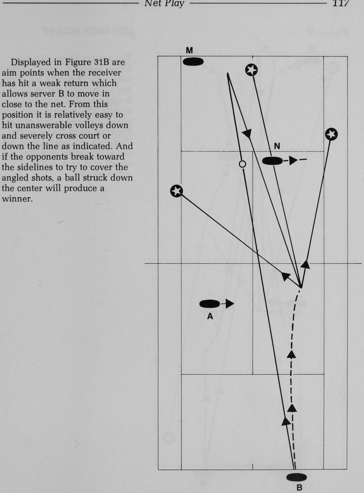
Hình 32 CÚ VÔ-LÊ SÂU Một trình tự kinh điển bắt đầu bằng việc người giao bóng B thực hiện cú vô-lê đầu tiên sâu vào giữa sân, điều được nhiều chuyên gia khuyến nghị. Điều này giữ người nhận bóng M bị ghim ở vạch cuối sân với góc trả bóng nhỏ nhất. Do đó, đội giao bóng có thể chen vào khu giữa sân, mang lại cho người đánh lưới A một cú vô-lê sâu thắng điểm dễ dàng.
Figure 32 THE DEEP VOLLEY classic sequence which begins with server B making the deep first volley to the center which is recommended by many experts. This keeps receiver M pinned to the base line with the minimum angle for his return. Therefore, the serving team can crowd the center, providing net man A with an easy deepvolley winner.
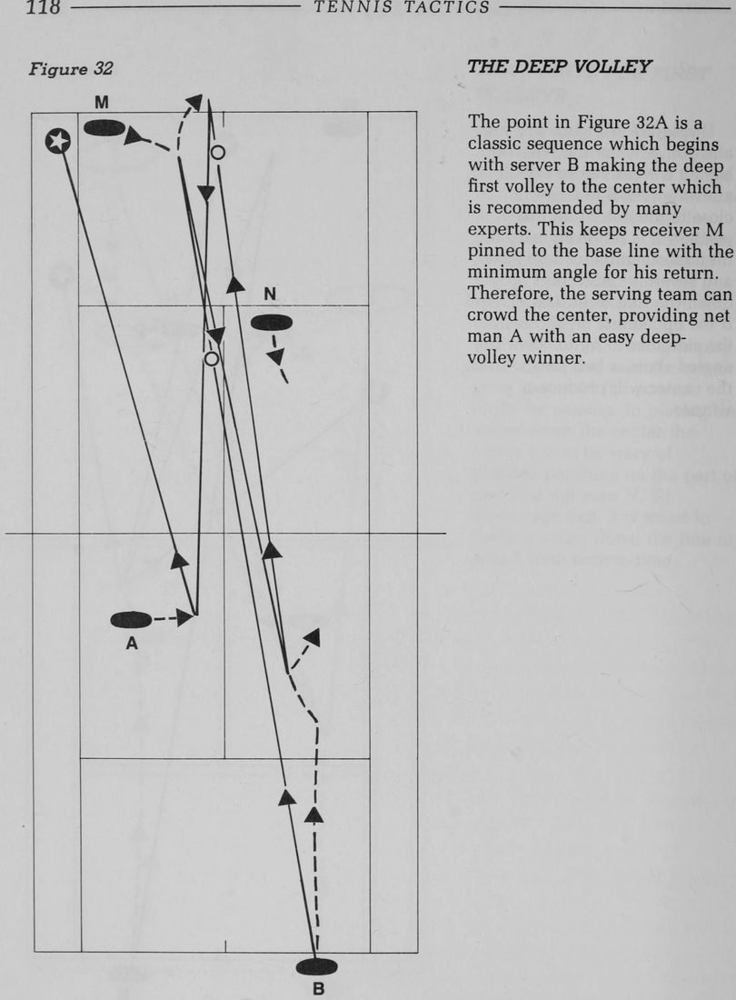
Net PlayNet Play
Trong Hình 32B, người giao bóng B nhắm cú vô-lê đầu tiên của mình dọc theo cùng đường bóng ấy, nhưng đánh bóng nông. Điều này cho phép người trả giao bóng M tiến lên và thực hiện một cú đẩy nhẹ (dink) mềm xuống giữa sân. Nhận ra rằng điều này sẽ buộc đấu thủ B phải vô-lê lên, đấu thủ M lao vào lưới và đấm một cú vô-lê sâu dọc biên để ghi điểm.
M In Figure 32B server B aims his first volley along the same line, but hits it shallow. This permits receiver M to move forward and play a soft dink down the middle. Recognizing this will force player B to volley up, player M dashes in to the net and punches a deep volley down the line for the point. A \ \ \ \ i A i t \ eae
Hình 33 CÚ VÔ-LÊ SÂU Pha bóng trong Hình 33A minh họa người giao bóng B vào lưới thật tốt và thực hiện một cú vô-lê đầu tiên mang tính tấn công ngay dưới chân đối phương, rồi theo cú trả bóng của mình vào lưới. Người đánh lưới A lường trước đúng rằng đấu thủ M sẽ phải vô-lê lên, nên anh ta di chuyển sang để cắt đường trả bóng và vô-lê sâu xuống giữa sân để ghi một điểm dễ dàng.
Figure 33 THE DEEP VOLLEY M The play in Figure 33A illustrates server B getting well | ne in to net and making an offensive first volley at the feet | follow his return in to net. Net | man A properly anticipates | player M will have to volley up, so he moves over to cut off the return and volleys deep GB NN / O down the middle for an easy point. PN / | | | I | | ]
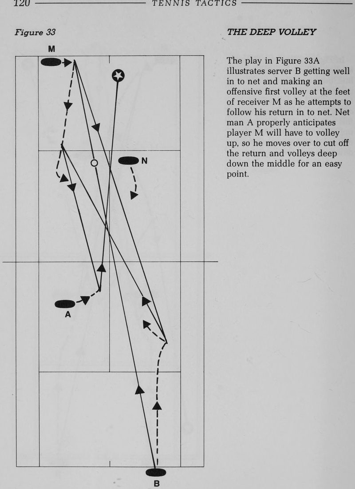
Lối đánh lưới Được mô tả trong Hình 33B là một điểm bóng bắt đầu theo cùng cách ấy, nhưng lần này phe phòng ngự lại thắng. Trong trường hợp này, người giao bóng vào lưới chậm hơn và phải vô-lê lên từ vị trí sâu trong ô giao bóng. Người trả giao bóng M lập tức cảm nhận được cơ hội của mình và lao hết tốc lực lên lưới để vô-lê sâu ghi điểm thắng.
Net Play Tai Depicted in Figure 33B is a point which begins the same way, but the defense wins out. In this case the server was slower in coming to net and had to volley up from deep in the service court. Receiver M immediately sensed his opportunity and sprinted all out for the net in order to volley deep for a winner. * bes
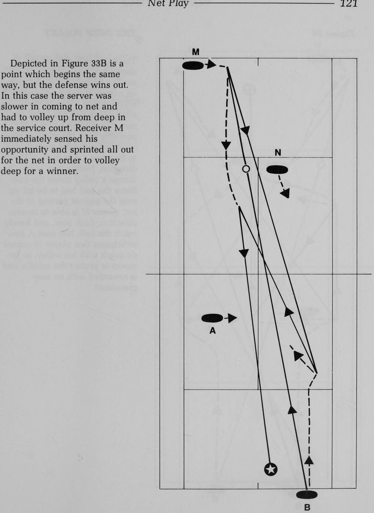
Hình 34 CÚ VÔ-LÊ SÂU Sơ đồ trong Hình 34A cho thấy sự phối hợp tuyệt vời của cặp giao bóng. Người trả giao bóng M thực hiện một cú trả giao bóng xuất sắc mà người giao bóng B chỉ vừa đủ với tới sau một quãng chạy dài. Người đánh lưới hỗ trợ N cảm nhận rằng đấu thủ B có lẽ sẽ phải vô-lê lên chéo sân, đây là cách đánh thông thường, nên anh ta bước một bước về hướng đó. Nhận thấy điều này, đấu thủ B thả một cú vô-lê dọc biên. Vì bóng phải được đánh lên qua phần cao nhất của lưới, đấu thủ N có thể đảo hướng, lao sang và vừa đủ chạm bóng. Người đánh lưới A giờ đây lường trước rằng đấu thủ N không thể làm được gì nhiều với cú vô-lê của mình, nên anh ta di chuyển để bảo vệ khu giữa và được đền đáp bằng một cú đặt bóng hiểm dễ dàng.
Figure 34 THE DEEP VOLLEY The diagram in Figure 34A shows fine teamwork by the serving team. Receiver M makes an excellent return of service which server B can barely reach after a long run. Modified net man N senses player B will probably have to volley up cross court, which is the normal play, so he takes a step in that direction. Noting this, player B dumps a volley down the line. Since the ball had to be hit up over the highest portion of the net, player N is able to reverse direction, dash over, and barely reach the ball. Net man A now anticipates that player N cannot do much with his volley, so he moves to protect the middle and is rewarded with an easy placement.
Trong Hình 34B, người đánh lưới hỗ trợ N đảo ngược kết quả. Lần này anh ta lường trước rằng người giao bóng B sẽ cố thả một cú vô-lê ra phía sau lưng mình dọc biên, nên anh ta làm động tác giả bằng cách tiến thẳng về phía trước trước khi bẻ hướng và áp sát nhanh vào lưới, rồi vô-lê sâu để ghi một điểm thắng xứng đáng.
In Figure 34B, modified net man N reverses the outcome. This time he anticipates that server B will try to dump a volley behind him down the line, so he fakes by moving straight ahead before swerving and closing rapidly in to net, and volleys deep for a well-earned winner.
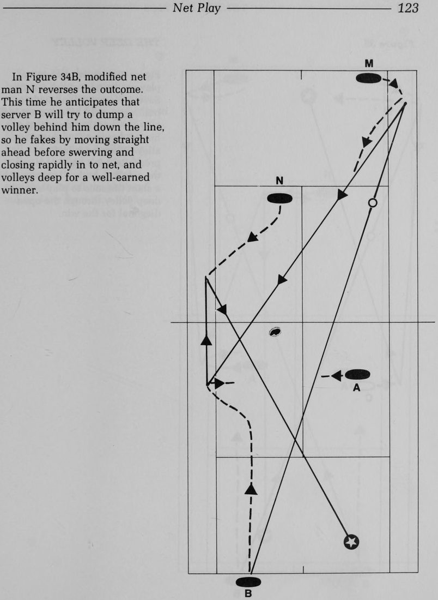
CÚ VÔ-LÊ SÂU Hình 35A cho thấy lối đánh lưới đúng đắn của người đánh lưới A. Thấy cú giao bóng rơi xa để kéo người trả giao bóng M ra khỏi sân, đấu thủ A khôn ngoan bước một bước sang trái đến điểm C để canh hành lang dọc biên. Khi thực tế bóng được trả về dọc biên, anh ta chỉ phải di chuyển một quãng ngắn để đánh một cú vô-lê sâu chắc chắn xuyên qua khoảng trống chéo để ghi điểm thắng.
124. ————__——— TENNIS TACTICS THE DEEP VOLLEY Figure 35A shows correct net play on the part of net man A. Seeing the serve land wide to pull receiver M off the court, player A wisely moves a step to his left to point C to guard the alley. When he is in fact presented with a return down the sideline, he has to move only a short distance to play a solid deep volley through the open diagonal for the win.
Net PlayNet Play
Hình 35B cho thấy điều gì xảy ra nếu người đánh lưới không sẵn sàng. Người trả giao bóng M nhận thấy hành lang dọc biên không được bảo vệ và cố lách một cú đánh dọc biên. Người đánh lưới A phải bổ nhào tới bóng và thực hiện một cú vô-lê kém hiệu quả. Người đánh lưới hỗ trợ N lường trước điều này và di chuyển nhanh để cắt cú đánh và vô-lê sâu để ghi một điểm thắng đẹp mắt.
Figure 35B shows what happens if the net man is unprepared. Receiver M notes the unprotected alley and tries to slip a drive down the sideline. Net man A has to dive for the ball and make an ineffective volley. Modified net man N anticipates this and moves rapidly to cut off the shot and volley deep for a nice win. —_—_+_—— os
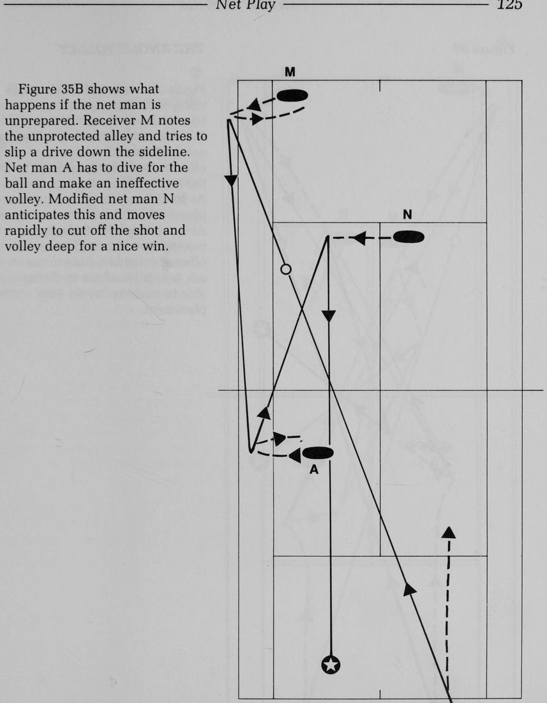
Hình 36 CÚ VÔ-LÊ GÓC Hình 36A cho thấy một cú vô-lê góc kinh điển với màn dàn dựng được người giao bóng B chuẩn bị tuyệt đẹp. Đầu tiên, anh ta theo cú giao bóng của mình vào vị trí lưới thật tốt và vô-lê tấn công xuống giữa sân ngay dưới chân người trả giao bóng M đang tiến lên. Khi làm vậy, anh ta lường trước rằng đấu thủ M sẽ phải vô-lê lên. Kết quả là, đấu thủ B tiếp tục tiến về phía trước, chiếm một vị trí tấn công gần lưới để có thể vô-lê góc một cú đặt bóng hiểm dễ dàng.
Figure 36 THE ANGLE VOLLEY M Figure 36A shows a classic angle TP volley with the stage being set beautifully by server B. First, he follows his serve well in to the net position and volleys © offensively down the middle at the feet of advancing receiver M. As he does so, he anticipates that player M will have to volley up. As a result, player B continues moving forward, establishes an offensive position close to the able to angle-volley an easy placement. % 7 ‘GE A \ \ | | } A l | | eRe
Lối đánh lưới Hình 36B minh họa về cơ bản cùng một điểm bóng nhưng với kết quả khác. Trong trường hợp này, người giao bóng B chậm chạp trong việc theo cú giao bóng của mình vào lưới, đến nỗi anh ta phải vô-lê lên một cách phòng ngự từ vị trí sâu trong ô giao bóng. Điều này cho phép người trả giao bóng M tiến vào gần thêm một hai bước và vô-lê nhẹ ngay dưới chân đấu thủ B, buộc anh ta phải vô-lê lên. Đấu thủ M tiếp tục tiến về phía trước và giành được cơ hội vô-lê góc cú trả bóng để ghi một cú đặt bóng hiểm.
Net Play e272 Figure 36B illustrates essentially the same point with a different outcome. In this case server B is slow in following his serve in to net, so that he has to volley up defensively from deep in the service court. This permits receiver M to move in a step or two closer and volley softly at the feet of player B, forcing him to volley up. Player M continues to move forward and gains the opportunity to angle-volley the return for a placement.
CÚ VÔ-LÊ GÓC Hình 37A cho thấy một pha bóng tuyệt đẹp mà ở đó những cú vô-lê góc mềm đã được sử dụng để tách đôi hàng phòng ngự rộng ra cho cú kết liễu cuối cùng. Người trả giao bóng M theo cú trả giao bóng của mình vào lưới và đáp lại cú vô-lê đầu tiên của người giao bóng B bằng một cú vô-lê mềm chéo sân. Điều này khởi đầu một loạt trao đổi gồm hai cú vô-lê chéo sân tinh tế qua phần thấp của lưới. Trong khi đó, người đánh lưới A canh hành lang dọc biên nên đấu thủ M không thể vô-lê dọc biên. Điều này mở đường cho người giao bóng B tiến vào để cắt cú trả bóng chéo sân ở gần lưới và vô-lê bóng xuyên qua khoảng trống ở giữa để ghi điểm thắng. Một lựa chọn vô-lê khác cũng có sẵn, tùy thuộc vào vị trí của người đánh lưới hỗ trợ N. Nếu đấu thủ N di chuyển để bọc khu giữa, người giao bóng B có thể vô-lê góc ra phía sau lưng anh ta đến điểm R.
THE ANGLE VOLLEY M Figure 37A shows a splendid =e, » soft angle volleys were used to split the defense wide open for the ultimate kill. Receiver M follows his return of service in to net and answers server B’s first volley with a soft cross-court volley. This initiates an exchange of two delicate cross-court volleys over the low portion of the net. Meanwhile, net man A guards the alley so player M cannot volley down the line. This opens the way for server B to move in to cut off the cross-court return close to the net and volley it through the opening in the middle for a winner. An alternative volley choice is available, depending on the position of modified net man N. If player N moves to cover the center, player B can angle-volley behind him to point R.
Lối đánh lưới Hình 37B là một pha bóng xuất sắc của cặp trả giao bóng trước một cú giao bóng nông. Người trả giao bóng M chạy vòng qua cú giao bóng để đánh một cú thuận tay xoáy lên ngay dưới chân người giao bóng B gần vạch giao bóng. Cặp trả giao bóng thấy rằng đấu thủ B sẽ phải vô-lê lên, nên họ tiến về phía lưới. Đấu thủ M đánh một cú mà người đánh lưới A phải vô-lê lên. Cả hai thành viên của cặp trả giao bóng dồn về khu giữa sẵn sàng cho cú kết liễu. Người đánh lưới hỗ trợ N ở vị trí hoàn hảo để vô-lê góc ghi điểm thắng vào hành lang dọc biên.
Net Play Figure 37B is an excellent play by the receiving team on a shallow serve. Receiver M runs around the serve to hit a top-spin forehand at the feet of server B ‘N ) near the service line. The / receiving team sees that player B will have to volley up, so they head for the net. Player M hits a / | which net man A has to volley up. Both members of the receiving team pack the center ready for the kill. Modified net man N is in perfect position to angle a winner into the alley.
Hình 38 CHỌN KHÔNG ĐÁNH CÚ VÔ-LÊ ĐẦU TIÊN Đôi khi khôn ngoan là không đánh cú vô-lê đầu tiên. Sơ đồ này cho thấy một cách giải quyết khả dĩ cho người giao bóng khi đối mặt với một cú trả giao bóng đẩy nhẹ (dink) gần như hoàn hảo. Khi người giao bóng B lao nhanh để cố với tới quả đẩy nhẹ ấy, anh ta nhận ra rằng mọi cú vô-lê đều sẽ phải đánh lên từ mặt sân hướng về phía cặp trả giao bóng đang ập tới. Vì vậy, B giảm tốc vào phút cuối để bóng nảy rồi đánh một cú từ cuối sân. Nếu bóng nảy thấp, anh ta chọn đánh bóng chéo sân về vùng 1 và vội vã tiến về điểm D trong khi người đồng đội A đảo về điểm E để thiết lập thế trận phòng ngự. Nếu bóng nảy đủ cao, anh ta có thể chọn lách một cú trái tay dọc biên về vùng 2.
Figure 38 ELECTING NOT TO PLAY THE FIRST VOLLEY Sometimes it is wise not to play a first volley. This diagram shows a possible answer for the server faced with a near-perfect dink return of service. As server B sprints to try to reach the dink, he realizes any volley would have to be hit up from ground level toward the onrushing receiving team. Therefore, B slows at the last moment in order to bounce the ball and play a ground stroke. If the bounce is low, he elects to play the ball cross court to area 1 and hurries toward point D while his partner A reverses to point E to establish a defensive alignment. If the bounce is high enough, he can elect to slip a backhand drive down the line to area 2.
Net PlayNet Play
sân nếu anh ta tình cờ ở gần lưới hơn một chút hoặc nếu anh ta có thể đánh một cú đập bóng trên cao (smash) góc nhọn hơn để ghi một cú đặt bóng hiểm. Thứ hai, nếu một đấu thủ bị kẹt quá gần lưới và sắp bị đánh bổng qua đầu, người đồng đội của anh ta nên lùi về để bọc phía sau anh ta. Và thứ ba, một góc mặt trời chói khó chịu hoặc gió chéo sân có thể khiến một đấu thủ chọn nhờ người đồng đội đánh cú đó. Tinh thần đồng đội cũng đòi hỏi một đấu thủ phải hô “Bóng nảy” khi anh ta phán đoán một cú bổng sắp bay ra ngoài sân. Lối đập bóng trên cao (smash) vững vàng đòi hỏi sự hiểu biết về vị trí của các đối thủ, kỹ năng che giấu hướng đặt bóng của cú đập trên cao cho đến phút cuối cùng, và một cảm nhận về việc đánh bóng đủ mạnh để ghi điểm (hoặc mở ra khoảng trống trên sân) nhưng không quá dữ dội đến mức tạo ra lỗi. Cú đập bóng trên cao là cú đánh chết người nhất trong đánh đôi (Bảng 8). Do đó, thật mất tinh thần khi đã dàn dựng hết sức chính xác một cơ hội cho một cú đặt bóng hiểm dễ dàng, chỉ để rồi “đánh tín hiệu” lộ ý đồ cho đối phương và bị trả lại, hoặc đánh bóng bay xa ra ngoài sân. Sự tha thứ cho những sai lầm trắng trợn giữa hai người đồng đội là một phần cần thiết của lối đánh tập thể. Phát triển một cú đập bóng trên cao đáng tin cậy có tầm quan trọng sống còn trong đánh đôi. Mặc dù cú đánh này chỉ chiếm khoảng 14 phần trăm tổng số điểm thắng, tác động tâm lý của nó là vô cùng lớn. Không có khoảnh khắc nào thú vị hơn trong quần vợt bằng việc đập tan một cú đập bóng trên cao. Đó là một cú đánh cần được luyện tập. Các đấu thủ đánh đôi nên hình thành thói quen tung những cú bổng cho nhau để luyện tập cả cú bổng lẫn cú đập bóng trên cao, cả trái tay lẫn thuận tay, trong nắng và trong gió. Chiến thuật đập bóng trên cao của những tay đánh đôi vĩ đại đã giống nhau một cách đáng kinh ngạc. Họ đánh mỗi điểm bóng như vậy theo cách chắc chắn nhất. Điều này bao gồm việc đánh những cú bổng an toàn xuống giữa sân, sâu hơn vạch giao bóng với hy vọng tạo ra một cú trả bóng yếu, và nhắm đến những cú thắng góc hoặc sâu khi cú bổng có thể được đánh trong phạm vi ô giao bóng. Chiến thuật tương tự cũng áp dụng khi một cú bổng phải được để nảy và đánh bằng một cú giống như cú giao bóng. Chiến thuật đập bóng trên cao mà những tay đánh đôi vĩ đại sử dụng được trình bày trong Hình 39 và 40. Cú Vô-lê Mềm và Cú Vô-lê Bỏ Nhỏ Cú vô-lê mềm là một cú đánh quan trọng bởi vì nó có thể được dùng để tạo ra một cú trả bóng yếu. Điều này được thực hiện bằng cách giữ bóng thấp để buộc đối phương vô-lê lên, và bằng cách làm chậm nhịp độ của cú đánh để đối phương phải đối mặt với một quả bóng “vô nghĩa”. Do đó, cú vô-lê mềm là một cú đánh được ưa thích khi cả bốn đấu thủ đều ở lưới đấu trí giành vị trí. Một công dụng khác của cú vô-lê mềm là để phòng ngự. Nếu bạn sắp bị
court if he happens to be slightly closer to the net or if he can play a sharper-angled overhead for a placement. Second, if one player is caught too close to the net and is about to be lobbed, his partner should drop back to cover behind him. And, third, a bad sun angle or crosscourt winds can cause a player to elect to ask his partner to play the shot. Teamwork also calls for a player to call “Bounce it” when he judges a lob is going to float out. Sound overhead play requires knowledge of the positions of the opponents, skill in concealing the placing of your overhead until the last moment, and a sense for striking the ball hard enough to win the point (or open up the court) but not so violently as to produce an error. The overhead is the most lethal stroke in doubles (Table 8). Consequently, it is most unnerving to have engineered with great precision an opportunity for an easy placement, only to “telegraph” the shot and have it returned, or to blast the shot wide of the court. Forgiveness of flagrant mistakes between partners is a necessary part of team play. Developing a reliable overhead is of vital importance in doubles. Even though the stroke accounts for only about 14 percent of all winners, its psychological impact is enormous. There is no more pleasurable moment in tennis than smashing away an overhead. It is a stroke which should be practiced. Doubles partners should develop the habit of tossing up lobs to one another to practice lobs as well as overheads, both backhand and forehand, in sun and wind. The overhead tactics of the great doubles players have been remarkably similar. They play each such point in the surest manner. This entails hitting safe down the center lobs which are deeper than the service line in hopes of drawing a weak return, and going for angled or deep winners when the lob can be struck within the service court. The same tactics apply when a lob must be bounced and struck with a stroke like a serve. Overhead tactics utilized by the greats are shown in Figures 39 and 40. The Soft and the Drop Volley The soft volley is an important stroke because it can be used to draw a weak return. This is accomplished by keeping the ball low to make the opponent volley up, and by slowing the pace of the shot so that the opponent faces a “nothing” ball. Consequently, the soft volley is a favorite shot when all four players are at net jockeying for position. Another use for the soft volley is a defensive one. If you are about to be
Hình 39 LỐI ĐẬP BÓNG TRÊN CAO Được minh họa trong Hình 39A là một màn trình diễn chiến thuật đập bóng trên cao gần như hoàn hảo của người giao bóng B. Người trả giao bóng M đánh bổng cú trả giao bóng sâu, và người giao bóng B lùi về đánh một cú đập bóng trên cao sâu xuống giữa vạch cuối sân, bóng mà đấu thủ M cứu được và đánh trả lại một cú bổng sâu thứ hai. Đấu thủ B lại đánh một cú đập bóng trên cao sâu xuống khu giữa để cho phe phòng ngự ít góc đánh trả mang tính tấn công. Lần này B nhử được một cú bổng ngắn trong phạm vi vạch giao bóng và tiến vào đánh cú đập bóng trên cao góc sang một trong hai bên để ghi điểm thắng. Sự cẩn trọng và kiên nhẫn được đền đáp.
Figure 39 Pa “A, OVERHEAD PLAY Demonstrated in Figure 39A is a near perfect overhead tactical display by server B. Receiver M lobs the return of service deep, and server B retreats to hit a deep overhead to the middle of the base line which player M retrieves and hits back a second deep lob. Player B again plays a deep overhead to the center to give the defense little angle for an offensive return. This time B draws a short lob inside the service line and moves in to hit the angle overhead to either side for a winner. Care and patience are rewarded.
Net PlayNet Play
Hình 39B cho thấy chiến thuật đập bóng trên cao tồi có thể bị một hàng phòng ngự kiên quyết đánh bại như thế nào. Điểm bóng này bắt đầu theo cùng cách với một cú bổng sâu trả giao bóng của người trả giao bóng M. Người giao bóng B đánh cú đập bóng trên cao của mình dọc biên vượt qua người đánh lưới hỗ trợ N, nhưng không sâu lắm. Hơn nữa, đấu thủ B “đánh tín hiệu” lộ hướng của cú đập bóng trên cao đến mức người trả giao bóng M cảnh giác có thời gian lường trước, hô “Của tôi”, và chạy dọc theo vạch cuối sân phía sau đấu thủ N để cứu bóng. Đấu thủ M đánh bổng bóng sâu và trở về phần sân của mình. Đấu thủ B lại để lộ hướng cú đập bóng trên cao của mình và lại đánh bóng nông. Điều này cho phép đấu thủ M đánh một cú trái tay xoáy lên thấp tuyệt vời chéo sân, buộc đấu thủ B phải vô-lê lên. Người đánh lưới hỗ trợ N đoán trước cú trả bóng chéo sân, cắt bóng (poach) sắc bén sang trái để chặn bóng, và ghi một điểm thắng bất ngờ.
Figure 39B shows how poor overhead tactics can be defeated by a determined defense. This point begins the same way with a deep lob return by receiver M. Server B plays his overhead down the line past modified net man N, but not very deep. Furthermore, player B “telegraphs” the direction of his overhead so that alert receiver M has time to anticipate, call Mine,” and race along the base line in back of player N to retrieve the ball. Player M lobs the ball deep and returns to his side of the court. Player B again reveals the direction of his overhead and again hits the ball shallow. This allows player M to play a great low, top-spin backhand cross court which forces player B to volley up. Modified net man N foresees the cross-court return, poaches sharply to his left to intercept the ball, and gains a surprise winner.
Hình 40 LỐI ĐẬP BÓNG TRÊN CAO Hình 40A minh họa sự phối hợp đồng đội tốt trong lối đập bóng trên cao. Cú trả giao bóng của người trả giao bóng M bị vô-lê sâu xuống vạch cuối sân, khiến đấu thủ M chọn đánh một cú bổng sâu. Người đánh lưới A lùi hẳn về phía sau để đánh một cú đập bóng trên cao an toàn sâu xuống khu giữa. Cú bổng trả lại của đấu thủ M ngắn. Đấu thủ B cảm nhận được điều này và cũng nhận thấy người đồng đội của mình chưa kịp lấy lại vị trí sau cú đập bóng trên cao. Vì vậy, anh ta hô “Của tôi”, cắt bóng (poach) nhanh vào phần sân của người đồng đội, và chặn bóng ghi một điểm thắng ngoạn mục.
Figure 40 OVERHEAD PLAY Figure 40A illustrates good overhead-play teamwork. Receiver M’s return of service is volleyed deep to the base line, which causes player M to elect to hit a deep lob. Net man A drops way back to play a safe overhead deep to the middle. The return lob from player M is short. Player B senses this and also notes his partner has not yet recovered position following his overhead. Therefore, he yells “Mine,” poaches rapidly into his partner’s court, and blocks away a spectacular winner.
Lối đánh lưới Hình 40B là một ví dụ khác về lối đánh tập thể. Sau khi đánh cú vô-lê đầu tiên của mình xuống khu giữa, người giao bóng B bị kéo rộng ra biên bởi một cú vô-lê góc mềm do người trả giao bóng M thực hiện. Đấu thủ B đáp lại bằng một cú vô-lê chéo sân góc nhọn. Anh ta vẫn trông đợi thêm một cú vô-lê chéo sân nữa sẽ bị đấu thủ M đánh lên, nên anh ta tiến về phía lưới để kết liễu. Tuy nhiên, M phá vỡ dự đoán của anh ta bằng cách đánh một cú vô-lê bổng chéo sân ngoài tầm với. May mắn thay, người đánh lưới A phát hiện điều này ngay lập tức, chạy lùi về, quay người, quan sát vị trí của các đối thủ, và chặn một cú đập bóng trên cao trái tay sâu xuống giữa sân để ghi một cú đặt bóng hiểm tuyệt vời.
Net Play M Figure 40B is another example | of team play. After playing his first volley to the center, server B ig is drawn wide by a soft angle volley stroked by receiver M. Player B replies with a sharply ie angled cross-court volley. He / expects still another cross-court / volley to be hit up by player M, / ih so he moves toward the net for the kill. However, M crosses him up by hitting a cross-court lob volley out of reach. Fortunately, net man A detects this instantaneously, races back, turns, notes the positions of the opponents, and blocks a backhand overhead deep down the middle for a fine placement. XN ~~ > I | A | | | | chee
bị vượt qua ở lưới và phải lao người tới bóng, một cú vô-lê mềm thường là cách đánh trả khôn ngoan, vì nó giữ bóng thấp và làm chậm nhịp độ đủ để cho người vô-lê có thời gian lấy lại vị trí. Các ví dụ về những cách sử dụng chiến thuật của cú vô-lê mềm được trình bày trong Hình 41. Cú vô-lê bỏ nhỏ được dùng để cố ghi một cú đặt bóng hiểm khi các đối thủ ở sai vị trí. Để thành công, nó đòi hỏi sự kết hợp đúng đắn giữa cảm giác bóng và sự đánh lừa. Đây không phải là một cú đánh dễ thực hiện, và không được khuyến khích cho người mới chơi. Cú vô-lê bỏ nhỏ hoàn hảo là nghệ thuật quần vợt ở đẳng cấp cao nhất. Nó đòi hỏi cảm giác bóng tinh tế, với cổ tay bẻ khi tiếp xúc (thay vì đấm về phía trước) để cho mặt vợt mở bật ngược ra sau, lấy đi toàn bộ lực của cú đánh đến nỗi bóng rơi chết trong sân đối phương. Trên những sân mềm, chậm, cú vô-lê bỏ nhỏ có thể mang tính hủy diệt. Nhưng một cú vô-lê bỏ nhỏ không hoàn hảo, đặc biệt trên sân nhanh, thực tế là dâng điểm cho đối phương, vì một trong các đối thủ sẽ đập bóng đi, trong khi nở một nụ cười tươi. Các ví dụ về cú vô-lê bỏ nhỏ được trình bày trong Hình 42. Cú Vô-lê Bổng Không có cú đánh nào trong quần vợt đẹp hơn để chiêm ngưỡng, hoặc thỏa mãn hơn cho một tay đánh đôi lão luyện thực hiện, bằng một cú vô-lê bổng đặt bóng hiểm. Đó là một cú đánh ít khi được sử dụng trừ khi đội của bạn đang gặp khó khăn, càng là lý do để vui sướng khi cú đánh thành công. Đó cũng chính là cảm giác người ta có được khi đưa bóng từ một hố cát sâu vào lỗ! Để hoàn toàn thành công, cú đánh phải có vài đặc tính. Thứ nhất, nó phải khiến các đối thủ bất ngờ và, hy vọng là, mất thăng bằng hoặc đang di chuyển sai hướng. Thứ hai, nó không được quá thấp, nếu không nó sẽ trở thành một quả bóng dễ dàng bị đập thẳng vào mặt bạn bằng một cú đập bóng trên cao hủy diệt. Và thứ ba, nó không được quá cao, nếu không nó có thể bị đối phương cứu được. Nói cách khác, nó phải xỏ kim bằng cách bay lượn hùng vĩ qua đầu các đối thủ đang hoang mang sững sờ theo một đường parabol tuyệt đẹp đến một điểm rộng mở gần vạch cuối sân. Chỉ khoảng một phần trăm các cú đặt bóng hiểm trong đánh đôi được ghi bằng cú đánh tinh tế này, nhưng niềm phấn khích khiến mỗi cú như vậy còn được nhớ mãi. Hình 43 minh họa việc sử dụng cú vô-lê bổng. Cú Đánh Từ Cuối Sân Ở Lưới Trong lối đánh lưới, một cú vô-lê ngắn hoặc một cú đánh từ cuối sân của đối phương thường
passed at net and have to lunge for the ball, a soft volley is often a wise return, as it keeps the ball low and slows the pace sufficiently to allow the volleyer time to regain his position. Examples of tactical uses of the soft volley are shown in Figure 41. The drop volley is used to try to gain a placement when the opponents are out of position. To be successful, it requires the proper combination of touch and deception. It is not an easy shot to play, and is not recommended for the novice. The perfect drop volley is tennis artistry of the highest order. It demands delicate touch, with the wrist breaking on impact (instead of punching forward) to allow the open racket head to rebound backward, taking all of the force out of the shot so that it drops dead in the opponents’ court. On soft, slow courts the drop volley can be devastating. But a less than perfect drop volley, particularly on fast courts, practically gives the point away, as one of the opponents should bang it away wearing a big smile. Examples of the drop volley are presented in Figure 42. The Lob Volley No stroke in tennis is more beautiful to behold, or more satisfying for the inveterate doubles player to play, than a lob-volley placement. It is a shot which is seldom utilized unless your team is in difficulty, which is all the more reason to be elated when the shot is successful. It is the same feeling one gets from holing out from a deep sand trap! To be completely successful, the shot has to have several attributes. First, it should catch the opponents by surprise and, hopefully, off balance or moving in the wrong direction. Second, it cannot be too low, or it will become an easy sitter to be knocked down your throat by a devastating overhead. And, third, it cannot be too high or it can be retrieved by the opposition. In other words, it has to thread the needle by floating majestically over the heads of dismayed and stunned opponents along a beautiful parabola to a wide-open spot near the base line. Only about one percent of doubles placements are won with this delicate shot, but the thrill makes each one long remembered. Figure 43 illustrates use of the lob volley. Ground Strokes at Net During net play a short volley or ground stroke by the opponents often
Lối đánh lưới tạo ra một quả bóng nảy ở khu trước sân. Chiến thuật để xử lý những tình huống như vậy chủ yếu được quyết định bởi độ cao của cú nảy. Nếu quả bóng nảy đạt đến độ cao của lưới hoặc cao hơn, tốt nhất là tập trung vào việc ghi điểm thẳng. Bạn sẽ có thể phát hiện nhiều lỗ hổng trong hàng phòng ngự để có thể đánh xuyên qua bằng những cú đặt bóng hiểm mạnh, phẳng hoặc xoáy lên ở cự ly sát người. Để tránh nỗi bẽ mặt vì cú đánh của mình bị một đối thủ chạy chữa chặn được, bạn phải quan sát tình hình vào phút cuối cùng trước khi đánh bóng. Nếu bóng nảy cao, hầu hết các đấu thủ chọn dùng cú đập bóng trên cao để đạt được lực tối đa. Và với một cú nảy trung bình, nhiều đấu thủ hơi khuỵu người xuống để có thể đánh cú đập bóng trên cao. Mặt khác, một quả bóng nảy thấp hiếm khi mở ra cơ hội đặt bóng hiểm. Vũ khí tốt nhất để sử dụng trong tình huống này là những cú đẩy nhẹ (dink) hoặc cú đánh xoáy ngay dưới chân hoặc ra ngoài tầm với của các đối thủ để buộc họ phải đánh lên. Những pha bóng điển hình liên quan đến các cú đánh từ cuối sân ở khu trước sân được trình bày trong Hình 44. Cú Cắt Bóng (Poach) Cú cắt bóng (poach) là một khía cạnh quan trọng của đánh đôi. Nó bao hàm việc xâm phạm quyền của người đồng đội ở chỗ hành động cắt bóng bao gồm việc xâm nhập vào lãnh địa của anh ta để đánh một cú bóng hướng về phía anh ta. Theo đó, khá hiển nhiên rằng việc cắt bóng không thành công gây căng thẳng thực sự cho tinh thần đồng đội (và đôi khi cho cả hôn nhân). Mặt khác, việc cắt bóng thành công có thể làm thay đổi kết cục của một trận đấu nhờ hiệu ứng gây bất an mà nó tạo ra cho các đối thủ. Do đó, điều quan trọng là phải hiểu rõ chiến thuật cắt bóng. Quy tắc đầu tiên là không xâm phạm phần sân của người đồng đội trừ khi động thái ấy được đánh giá là sẽ tạo ra một cú đánh hiệu quả hơn. Thực ra, cú đánh phải có khoảng hai trên một cơ hội dẫn đến một cú kết liễu; nếu không, cú cắt bóng lại mang lợi thế cho đối phương, vì nó khiến đội của bạn ra khỏi vị trí. Một nghiên cứu về những người cắt bóng cừ khôi thực sự cho thấy họ thắng số điểm gấp đôi số điểm họ thua. Họ đạt kết quả tốt nhất với những cú trả bóng yếu trước cú giao bóng đầu tiên, đạt tỷ lệ thắng bốn trên một. Để trở thành một người cắt bóng lão luyện, một đấu thủ phải có khả năng lường trước và thời điểm ra đòn xuất sắc. Điều đó cũng hữu ích khi có thêm tốc độ, sự nhanh nhẹn, tầm với dài, và khả năng kết liễu cú vô-lê. Bí quyết là nghiên cứu cách tạo ra cú đánh của người đánh bóng, chờ cho đến khi anh ta hoàn toàn dồn vào cú đánh đã lường trước, xuất phát nhanh để thực hiện pha chặn bóng mong đợi (với tầm với dài bù đắp cho hầu hết những tính toán nhầm), và vô-lê dứt khoát.
Net Play produces a bounding ball in the forecourt. The tactics for handling such situations are largely dictated by the height of the bounce. If the bounding ball reaches the height of the net or higher, it is best to concentrate on winning the point outright. You should be able to spot many holes in the defense through which you can drive hard, flat or top-spin placements at point-blank range. In order to avoid the embarrassment of having your shot intercepted by a scrambling opponent, you must survey the scene at the last moment before striking the ball. If the ball takes a high bounce, most players elect to employ an overhead to achieve maximum power. And on an intermediate bounce many players crouch somewhat to permit an overhead stroke. On the other hand, a low-bouncing ball seldom opens up a placement opportunity. The best weapons to employ in this situation are dink or spin shots at the feet or wide of the opponents to force them to hit up. Typical plays involving forecourt ground strokes are shown in Figure 44. The Poach The poach is an important aspect of doubles. It entails a violation of your partner’s rights in that the act of poaching consists of invading his territorial domain to play a shot directed toward him. It follows rather obviously that unsuccessful poaching places a real strain on teamwork (and sometimes on marriage). On the other hand, successful poaching can change the outcome of a match because of the unsettling effect it has on the opponents. Therefore, it is important to understand the tactics of poaching. The first rule is not to invade your partner’s court unless the move is judged to produce a more effective shot. In fact, the shot should have about a two-to-one chance of resulting in a kill; otherwise, the poach presents an advantage to the enemy, as it leaves your team out of position. A study of ace poachers did indeed show they won twice as many points as they lost. They did best on weak returns of first serves, achieving a four-to-one win ratio. To become an expert poacher a player must have excellent anticipation and timing. It also helps to bring along speed, agility, a long reach, and an ability to kill the volley. The trick is to study the striker’s strokeproduction methods, wait until he is fully committed to the anticipated shot, take off quickly to make the expected interception (with the long reach correcting for most miscalculations), and volley forcefully.
Hình 41 CÚ VÔ-LÊ NHẸ Hình 41A minh họa lối đánh lưới biến thể rất hay. Người trả giao bóng M thực hiện một cú trả giao bóng hiệu quả, buộc người giao bóng B phải vô-lê hất bóng lên. Người đánh lưới biến thể N cảm nhận được điều này và bắt đầu lao vào cắt cú vô-lê thường đi chéo sân qua phần lưới thấp. Đấu thủ B nhận ra động tác này và cố thắng điểm ngay bằng cách đổi hướng, đưa cú vô-lê đầu tiên của mình dọc biên. Đấu thủ N buộc phải đảo người, lao người tới đỡ bóng, và chỉ vừa kịp chạm tới hành lang dọc biên. Người giao bóng B tiến sát vào và tạo được lợi thế, nhưng chỉ để nhận ra đấu thủ N đã xoay xở quay lại để bịt kín khoảng trống. Thực tế, đấu thủ N vẫn có thể trả lại một cú vô-lê nhẹ nữa, lần này vào ngay dưới chân đấu thủ B, buộc anh ta phải vô-lê hất bóng lên. Được khích lệ và đang chờ một cú kết liễu, đấu thủ N tiến vào cắt cú trả bóng bằng một cú vô-lê góc chặt để tạo thành một cú đặt bóng hiểm.
Figure 41 THE SOFT VOLLEY Figure 41A illustrates great modified-net play. Receiver M plays an effective return of service which forces server B to volley up. Modified net player N senses this and starts to cut off the normally cross-court volley over the low portion of the net. Player B notes this move and tries to win the point outright by changing direction and steering his first volley down the line. Player N is forced to reverse, Se aes fg ns lunge for the ball, and is barely ise the alley. Server B closes in and created, only to find player N has scrambled back to close the | | gap. In fact, player N is able to return another soft volley, this time at the feet of player B, x forcing him to volley up. Keyed % aaa ~~ up and expecting a kill, player N A San moves in to cut off the return with a firm angle volley for a placement.
Net PlayNet Play
Hình 41B cho thấy cách người trả giao bóng M thoát khỏi một thế phòng thủ yếu bằng một cú vô-lê nhẹ và xoay chuyển cục diện theo hướng có lợi cho mình. Người giao bóng B thực hiện một cú vô-lê đầu tiên hay, đưa bóng vào ngay dưới chân người trả giao bóng M rồi tiến sát lưới, chờ một chiến thắng dễ dàng. Người trả giao bóng M nhanh chóng nhận ra nguy hiểm và quyết định rằng hy vọng duy nhất là đánh một cú vô-lê nhẹ vừa vượt qua lưới và hơi lệch ra ngoài. Sự lựa chọn cú đánh này buộc người giao bóng B phải lách sang trái để đào bóng lên khỏi mặt sân bằng cú vô-lê. Đấu thủ M đoán đúng rằng cú trả của B buộc phải đánh chéo sân, lao sang trái và được đền đáp bằng một cú vô-lê sâu dọc biên để giành một chiến thắng tuyệt vời.
Figure 41B shows how receiver M extricates herself from a poor defensive position with a soft volley and turns the tide in her favor. Server B makes a fine first volley at the feet of receiver M and moves in close to net expecting an easy win. Receiver M quickly notes the danger and decides the only hope is to hit a soft volley just over the net and wide. This shot selection forces server B to veer to her left to dig the volley out of the ground. Player M correctly anticipates B’s return must be played cross court, dashes to her left, and is rewarded with a deep volley down the line for a great win.
CÚ VÔ-LÊ BỎ NHỎ Hình 42A mô tả một chuỗi vô-lê bỏ nhỏ kinh điển. Người giao bóng B theo cú giao bóng lên lưới và vô-lê cú trả giao bóng sâu xuống cuối sân để giữ người trả giao bóng M ở lại vạch cuối sân. Đấu thủ M trả lại một cú đánh từ cuối sân dọc xuống giữa sân, và người đánh lưới A quyết định cắt cú bóng này khi nhận ra rằng toàn bộ ô giao bóng đang trống và dường như đang mời gọi một cú vô-lê bỏ nhỏ. Như hình vẽ cho thấy, sự lựa chọn chiến thuật hiển nhiên này mang lại một cú thắng dễ dàng.
THE DROP VOLLEY Figure 42A represents a classic drop-volley sequence. Server B follows his serve in to net and volleys the return of service deep in the court to hold receiver M on the base line. Player M returns a ground stroke down the middle which net man A decides to cut off when he realizes the whole service court is open and literally beckoning for a drop volley. As shown, this obvious tactical choice results in an easy winner.
Net PlayNet Play
Hình 42B cho thấy một cú bỏ nhỏ hơi lệch hướng có thể dẫn đến thảm họa như thế nào. Người trả giao bóng M đã thực hiện một cú trả giao bóng đẩy nhẹ (dink) xuất sắc mà người giao bóng B chỉ vừa kịp với tới sau một quãng chạy dài. Đấu thủ B nhận thấy người đánh lưới biến thể N bắt đầu di chuyển sang phải để đón cú vô-lê chéo sân dự kiến qua phần lưới thấp. Do đó, đấu thủ B quyết định đối phó lại động tác này bằng cách thả một cú vô-lê bỏ nhỏ vào khoảng sân trống ngay phía trước. Đáng tiếc, cú vô-lê bỏ nhỏ này hơi sâu, nên đấu thủ N có thể đảo hướng và lao lên lưới để trả bóng. Anh ta có nhiều lựa chọn: đánh dọc biên hoặc bổng chéo sân để
Figure 42B shows how a slightly errant drop shot can result in disaster. Receiver M has made an excellent dink-shot return of service which server B can barely reach after a long run. Player B sees modified net man N start to his right to cover the expected cross-court volley over the low part of the net. As a result, player B decides to counter this move by dumping a drop volley into the open court straight ahead. Unfortunately, the drop volley is a bit deep, so that player N can reverse direction and dash to net to return the ball. He has a multiple choice of driving down the line or lobbing cross court for the
Hình 43 CÚ VÔ-LÊ BỔNG Hình 43A bắt đầu với việc người giao bóng B đánh cú vô-lê đầu tiên của mình tới người trả giao bóng M, người đã theo cú trả giao bóng của mình lên lưới. Người trả giao bóng M và người giao bóng B bắt đầu trao đổi những cú vô-lê nhẹ vào chân nhau. Đấu thủ M tin rằng mình đang chiếm thế thượng phong trong cuộc đấu này và tiến sát lưới, cùng với người đồng đội N, chờ đợi một cú kết liễu. Đấu thủ B cảm thấy mình đang gặp rắc rối lớn, vì đối phương gần như đang đè ngay trên đầu anh ta. Trong một chuỗi diễn biến nhanh đến khó tin, đấu thủ B đoán trước cú vô-lê của đấu thủ M hướng về phía sân của người đồng đội, lý luận rằng mình đang ở vị trí tốt hơn để thực hiện cú trả bóng, và chọn cắt bóng (poach). Vào đúng khoảnh khắc cuối cùng, anh ta quyết định đánh một cú vô-lê bổng. Điều này tạo nên một cú đặt bóng bất ngờ nhưng tuyệt đẹp, khiến các đấu thủ M và N bị bất ngờ và đang di chuyển sai hướng. Những tràng vỗ tay từ khán đài là điều hoàn toàn xứng đáng.
Figure 43 THE LOB VOLLEY Figure 43A begins with server B hitting his first volley to receiver M, who has followed his return of service in to net. Receiver M and server B begin an exchange of soft volleys at each other’s feet. Player M believes he is getting the better of the duel and moves in close to the net, along with partner N in expectation of a kill. Player B senses he is in deep trouble, as the opponents are almost on top of him. In unbelievably rapid sequence player B anticipates player M’s volley toward his partner’s court, reasons he is in the better position to make the return, and elects to poach. At the very last moment he decides to lob-volley. This results in an unexpected but lovely placement as players M and N are caught by surprise and moving in the wrong direction. Cheers from the gallery are in order.
Net PlayNet Play
Hình 43B cho thấy cú vô-lê bổng như một phương tiện để tận dụng thế đứng kém của đối phương. Người trả giao bóng M đánh một cú trả giao bóng xuất sắc mà người giao bóng B chỉ vừa đủ sức hất lên bằng một cú trả chéo sân yếu ớt. Cả đấu thủ B và người đồng đội của anh ta, người đánh lưới A, đều quyết định rằng cú trả bóng sẽ nhắm xuống giữa sân đang trống. Kết quả là cả hai cùng di chuyển nhanh để bọc lấy khu vực trung tâm. Đấu thủ M nhận thấy cả hai đối thủ đều đã dấn quá xa và chọn cách gây bất ngờ cho họ bằng một cú vô-lê bổng vòng cung vượt qua những cây vợt đang chìa ra của A và B để giành một chiến thắng đầy trí tuệ.
Figure 43B shows the lob volley as a vehicle for taking advantage of poor team positioning. Receiver M plays an excellent return of serve which server B is barely able to hit up with a feeble cross-court return. Both player B and his partner, net man A, decide the reply will be aimed down the open middle. As a result they both move fast to cover the center. Player M notes that both his opponents are overcommitted and elects to surprise them by lofting an arching lob volley over the outstretched rackets of A and B for a heady win.
Hình 44 CÁC CÚ ĐÁNH TỪ CUỐI SÂN Ở KHU TRƯỚC SÂN Hình 44A minh họa nhiều khả năng mở ra cho người trả giao bóng M sau khi cú trả giao bóng xuất sắc của anh ta đã buộc người giao bóng B phải vô-lê hất bóng lên chéo sân. Cú vô-lê rơi gần lưới và nảy lên tới độ cao ngang lưới. Đấu thủ M có thời gian chạy vào lưới, quan sát vị trí của các đối thủ, và đánh bóng xuyên qua bất kỳ một trong ba khoảng trống được thể hiện, và có lẽ cả những khoảng trống khác.
144. —_—————__——— TENNIS TACTICS Figure 44 FORECOURT GROUND - STROKES Figure 44A illustrates the many possibilities open to receiver M after his excellent return of service has forced server B to volley up cross court. The volley lands near the net and bounces up to net height. Player M has time to run in to net, survey the positions of his opponents, and hit the ball through any one of the three openings shown, and perhaps others.
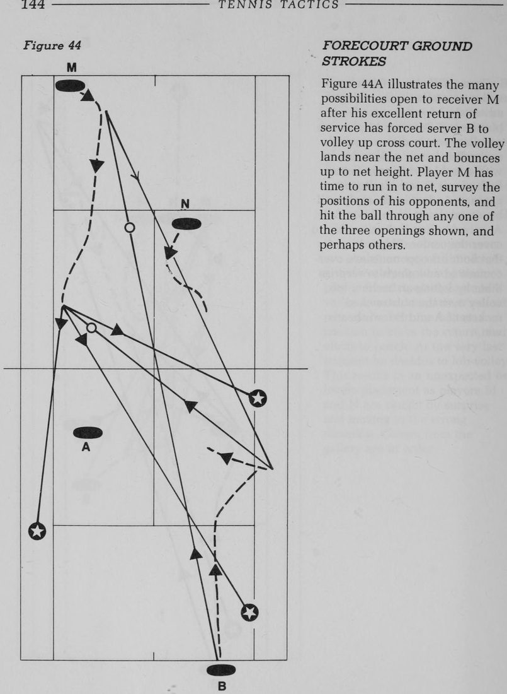
Hình 44B cho thấy tình thế có thể thay đổi mạnh mẽ đến mức nào dù cho điểm bóng bắt đầu bằng cùng một cú giao bóng và cú trả giao bóng. Tuy nhiên, lần này người giao bóng B đánh cú vô-lê đầu tiên có xoáy để giữ cho bóng nảy thấp. Với việc người đánh lưới A giữ nguyên vị trí để ngăn đấu thủ M đánh dọc biên, người giao bóng B cảm nhận được rằng đấu thủ M sẽ đánh một cú trả chéo sân nhẹ. Khi vị trí thân người và cây vợt của M xác nhận suy luận này, người giao bóng B xông vào phía lưới và cắt cú đánh từ cuối sân để giành một cú thắng hay.
Figure 44B indicates how drastically the situation can change even though the point begins with the same serve and return of service. However, this time server B hits a first volley with spin to keep the bounce low. With net man A holding his ground to prevent player M from hitting down the line, player B senses that player M will hit a soft cross-court return. Once the position of M’s body and racket confirms this reasoning, player B storms in toward the net and cuts the ground stroke off for a fine winner.
Hình 45 CÚ CẮT BÓNG (POACH) Hình 45A cho thấy cú cắt bóng (poach) được dùng phổ biến nhất trong đánh đôi. Nó được thực hiện bởi người đánh lưới A sau khi một cú giao bóng đầu tiên mạnh mẽ đã buộc đối phương trả giao bóng chéo sân yếu ớt. Người đánh lưới A có thể thực hiện những cú cắt bóng như vậy theo ý mình hoặc bằng cú cắt bóng đã ra hiệu. Dù theo cách nào thì lối đánh của anh ta cũng giống nhau. Anh ta giữ nguyên vị trí trong khi đoán trước cú trả bóng của người trả giao bóng M cho đến khi M đã hoàn toàn dấn thân vào cú đánh. Sau đó anh ta lao nhanh chéo sân để vô-lê tới một trong những điểm ngắm được thể hiện, tùy thuộc vào thế phòng thủ của đội đối phương. Anh ta nên cố tạo một cú đặt bóng hiểm, vì đội của anh ta có thể không ở trong tư thế sẵn sàng xử lý cú trả bóng. Người giao bóng B tiến vào lưới theo cách thông thường rồi băng ngang sang phần sân không được bảo vệ theo đường đi 5 cho một cú cắt bóng không ra hiệu. Với một cú cắt bóng có ra hiệu, người giao bóng B khởi hành theo đúng đường đi đó để tránh để lộ ý đồ cho người trả giao bóng M, rồi lách sang trái theo đường đi 4 để bảo vệ phía bên trái.
Figure 45 THE POACH Figure 45A shows doubles’ most commonly used poach. It is made by net player A after a strong first serve has forced a weak cross-court return of service. Net man A can make such poaches on his own or using the signaled poach. In either case his play is the same. He holds his ground while anticipating receiver M’s return until M is fully committed. Then he makes his fast dash cross court to volley toward one of the aim points shown, depending on the defensive positions of the opposing team. He should try for a placement, as his team may not be in position to handle a reply. Server B approaches the net in the usual way and then crosses over to the unprotected court along path 5 for an unsignaled poach. On a signaled poach server B starts up the same path to avoid tipping off receiver M, and then veers left along path 4 to protect the left side.
Net PlayNet Play
Hình 45B cho thấy cách phòng thủ chống lại cú cắt bóng. Việc phòng thủ điểm ngắm 1 là trách nhiệm của người đánh lưới biến thể N. Nếu anh ta quan sát người đánh lưới A trong lúc người trả giao bóng M chuẩn bị thực hiện cú trả giao bóng, anh ta có khá nhiều cơ hội di chuyển đến đúng chỗ để chặn bóng và vô-lê một cú thắng dọc theo hành lang dọc biên đang trống tới khu vực 6. Việc phòng thủ khu vực 2 tốt nhất nên giao cho người trả giao bóng M, vì anh ta có nhiều thời gian hơn và ít nguy cơ mắc lỗi hơn đấu thủ N. Người đánh lưới A không dễ gì vô-lê tới điểm ngắm 3, vì anh ta phải với tay ra trước quả bóng. Tuy nhiên, nếu cú đánh đó được thực hiện, trách nhiệm che chắn khu vực này thuộc về người trả giao bóng M. Nếu anh ta có thể khởi đầu nhanh và với tới được quả bóng, anh ta có thể được đền đáp bằng một cú thắng dọc theo đường biên dọc đang trống tới khu vực
Figure 45B shows the defense against the poach. The defense of aim point 1 is the responsibility of modified net man N. If he watches net man A as receiver M is about to play the return of service, he has a fairly good chance of moving to the right spot to intercept the ball and volley a winner down the open alley to area 6. The defense of area 2 is best left to receiver M because he has more time and less chance for error than player N. It is not easy for net man A to volley to aim point 3, as he has to reach out ahead of the ball. If, however, the shot is played, it is the responsibility of receiver M to cover the area. If he can get a quick start and reach the ball, he may be rewarded with a winner down the empty sideline to area ie
MỘT CÚ CẮT BÓNG PHÒNG THỦ TUYỆT VỜI Điểm bóng này minh họa tinh thần không bao giờ bỏ cuộc của những đội vô địch trong một trận chung kết. Người trả giao bóng M đánh một cú trả đẩy nhẹ (dink) chéo sân rồi nhanh chóng theo cú đánh của mình lên lưới. Cú vô-lê đầu tiên của người giao bóng B là một cú đánh góc nhẹ. Trong khi quan sát điều này, người đánh lưới A đoán rằng đấu thủ M sẽ trả lại bằng một cú vô-lê chéo sân nhẹ nữa và di chuyển để cắt nó. Nhưng đấu thủ M thoáng nhận thấy điều đó, đổi ý định, và thả một cú vô-lê vào hành lang dọc biên. Điều này buộc đấu thủ A phải phanh gấp, đảo hướng, lao đi điên cuồng và đổ người để vô-lê. Anh ta chỉ vừa kịp hất lên một cú đánh yếu, bóng nảy sang bên kia lưới, rồi anh ta trượt nằm sấp bụng trên mặt sân. Đấu thủ M quan sát thấy đấu thủ A đang cố gắng đứng dậy nhưng không thành công, ngắm cẩn thận và đánh một cú tưởng như thắng chắc vào khoảng sân trống. Nhưng khoan đã. Người giao bóng B cũng đã quan sát cảnh tượng đó. Anh ta nhích dần về phía diễn biến và dừng lại ở điểm C để che giấu ý đồ cho đến khi chắc chắn rằng đấu thủ M đã dấn thân vào cú đánh. Rồi anh ta cắt bóng như một tên lửa lao vào phần sân bên phải không người và tạo nên một pha cứu bóng bằng vô-lê ngoạn mục. Người đồng đội vẫn còn nằm sấp của anh ta cũng tham gia vào tràng vỗ tay. Suy cho cùng, trong hoàn cảnh đó thì việc buộc tội người đồng đội của mình là kẻ độc chiếm sân cũng chẳng lịch sự chút nào!
A FANTASTIC DEFENSIVE _ POACH This point illustrates the neversay-die attitude of championship teams in a finals. Receiver M plays a soft dink cross-court return and follows his shot rapidly to the net. Server B’s first volley is a soft angle shot. As he watches this, net man A guesses that player M will reply with another soft cross-court volley and moves. to cut it off. But player M glimpses this, changes intentions, and dumps a volley into the alley. This forces player A to jam on the brakes, reverse direction, make a frantic dash, and dive for the volley. He just manages to hit up a weak shot which bounces on the other side of the net, and then skids flat on his stomach. Player M observes player A trying unsuccessfully to arise, takes careful aim, and hits an apparent winner into the open court. But wait. Server B has also been observing the scene. He edges toward the action and pauses at point C to hide his intentions until he is sure player M is committed. Then he poaches like a rocket into the unmanned righthand court and produces a spectacular volley save. His still prostrate partner joined in the applause. After all, it is not very courteous under these circumstances to accuse your partner of hogging the court!
Lối đánh lưới Trong lối đánh lưới, cú cắt bóng có thể đảm nhận vai trò tấn công hoặc phòng thủ. Cú cắt bóng tấn công, hay cú cắt bóng nhân cơ hội, bao gồm tất cả những trường hợp mà một đấu thủ di chuyển vào phần sân của người đồng đội sau khi phán đoán tức thời khiến anh ta tin rằng mình có cơ hội tạo một cú đặt bóng hiểm hoặc một cú đánh gây sức ép mạnh mẽ tốt hơn người đồng đội. Điều này có thể xuất phát từ việc anh ta ở gần lưới hơn, có góc đánh tốt hơn, nhận thấy người đồng đội hơi lệch vị trí, hoặc quyết định rằng một cú thuận tay mạnh hơn sẽ mang lại lợi thế so với một cú trái tay. Cú cắt bóng phòng thủ là một thủ thuật cứu điểm, được dùng khi người đồng đội của mình ở vào vị trí vô vọng. Lối đánh này thường bao gồm một sự trì hoãn có tính chiến thuật — chờ đến giây phút cuối cùng để dụ đối phương đánh bóng về phía khoảng sân không được che chắn, rồi lao tới điểm ngắm đã đoán trước. Xét như một chiến thuật, cú cắt bóng có thể khiến đối phương rất mất tinh thần vì nhiều lý do. Thứ nhất, nó có thể biến một cú đánh tốt, đặt bóng hiểm mà đội bạn vừa tạo ra thành một điểm dễ dàng cho người cắt bóng. Thứ hai, nó buộc người đánh bóng phải cảnh giác với vị trí của đội đối phương cho đến tận khoảnh khắc cuối cùng trước khi tập trung vào quả bóng để thực hiện cú đánh. Điều này có thể dẫn đến sai sót. Và thứ ba, đôi khi nó khiến người đánh bóng sử dụng biên độ an toàn quá lớn để né tránh người có thể cắt bóng, và điều đó có thể dẫn đến những chiến thuật tồi hoặc sai sót. Để việc cắt bóng trong cú giao bóng đạt hiệu quả nhất, cần xây dựng một bộ tín hiệu ra hiệu, như đã được đề cập ở Hình 13. Một cú cắt bóng giả thường rất hữu ích khi giao bóng ở một điểm then chốt, chẳng hạn như điểm lợi thế ngoài (advantage out). Dù cú cắt bóng là giả hay thật, người giao bóng vẫn phải theo dõi đường bay của bóng thật cẩn thận, vì anh ta phải che chắn những cú đánh bay vượt qua người cắt bóng. Một lời cảnh báo: việc cắt bóng có thể bị lạm dụng. Trở thành kẻ độc chiếm sân không phải là chiến thuật đánh đôi đúng đắn. Hình 45 và 46 minh họa cả những chuỗi cắt bóng điển hình lẫn những chuỗi cắt bóng tuyệt vời (xem trang 146 đến 148). Cú trôi (drift) Một biến thể khôn ngoan của cú cắt bóng, được các tác giả đặt tên là “drift” (cú trôi), đã được
Net Play In net play the poach may assume either an offensive or a defensive role. The offensive poach, or poach of opportunity, covers all those cases in which a player moves into his partner’s territory after instant judgment leads him to the belief he stands a better chance of making a placement or a strong forcing shot than does his partner. This could result from his being nearer the net, having a better angle for the shot, noting his partner is slightly out of position, or deciding a stronger forehand would offer an advantage over a backhand. The defensive poach is a point-saving maneuver which is used when one’s partner is hopelessly out of position. The play usually involves a strategic delay—waiting until the last second to draw a shot toward the uncovered area and then dashing to the anticipated aim point. As a tactic the poach can be very unnerving to the opposition for several reasons. First, it can turn what started out to be a good, wellplaced shot by your team into an easy point for the poacher. Second, it forces the striker to be wary of the positions of the other team up to the last moment before concentrating on the ball as he produces his shot. This can lead to errors. And, third, it sometimes causes the striker to use too large a margin of safety in avoiding the potential poacher, which can result in poor tactics or errors. To make poaching on the serve most effective, a set of signals should be worked out, as was noted in Figure 13. A fake poach is often very helpful when serving a crucial point, such as advantage out. Whether the poach is fake or not, the server must follow the flight of the ball carefully, as he has to cover shots which sail past the poacher. A note of warning: Poaching can be overdone. Being a court-hog is not sound doubles tactics. Figures 45 and 46 illustrate both typical and fantastic poaching sequences (see pages 146 to 148). The Drift A smart variation of the poach, which the authors have christened the “drift,” has been made popular by the Australians. The drift has two variants, one for the serving team and one for the receiving team. The serving-team drift is a maneuver initiated by net player A, who, upon anticipating a cross-court return of service by receiver M, moves, slides, or drifts along the net position toward the middle of the court (see Figure 47). This tactic produces several advantages: (1) it permits the server to come up wide to cover sharp angles, presenting a blanket
Hình 47 CÚ TRÔI CỦA ĐỘI GIAO BÓNG Vì hầu hết các cú trả giao bóng đều được đánh chéo sân, người đánh lưới A trượt hoặc trôi về phía giữa sân để thu hẹp khu vực trả bóng an toàn của người trả giao bóng M, trong khi người giao bóng B tiến ra rộng để phòng ngừa cú trả bóng góc nhọn. Chiến thuật này gây sức ép lên người trả giao bóng và dẫn đến rất nhiều sai sót khi bóng rơi vào khu vực E. Cách phòng thủ chống lại thế đứng này là thỉnh thoảng trả bóng dọc biên để giữ cho người đánh lưới A luôn phải dè chừng.
Figure 47 THE SERVING TEAM DRIFT Since most returns of serve are hit cross court, net player A slides or drifts toward the middle of the court to cut down the area of safe return by receiver M, while server B comes up wide to protect against the sharply angled return. This tactic puts pressure on the receiver and results in a lot of errors hit into area E. The defense against this formation is an occasional return down the line to keep net player A honest.
Hình 48 CÚ TRÔI CỦA ĐỘI TRẢ GIAO BÓNG Vì hầu hết các cú vô-lê đầu tiên đều nhắm chéo sân qua phần lưới thấp, người đánh lưới biến thể N trượt hoặc trôi về giữa sân để thu hẹp khu vực vô-lê an toàn cho người giao bóng B, trong khi người trả giao bóng M tiến ra rộng để che chắn những cú vô-lê góc nhọn. Chiến thuật này có xu hướng làm người giao bóng mất tinh thần và dẫn đến một số sai sót khi bóng rơi vào khu vực E. Liều thuốc giải cho người giao bóng B là thỉnh thoảng thả một cú vô-lê dọc biên phía sau đấu thủ N.
| Figure 48 THE RECEIVING TEAM DRIFT Since most first volleys are aimed cross court over the low portion of the net, modified net player N slides or drifts to the middle of the court to cut down the area of safe volley for server B, while receiver M comes up wide to cover angled volleys. This tactic tends to unnerve the server and results in a number of errors landing in area E. The antidote for server B is to drop an occasional volley down the line behind player N.
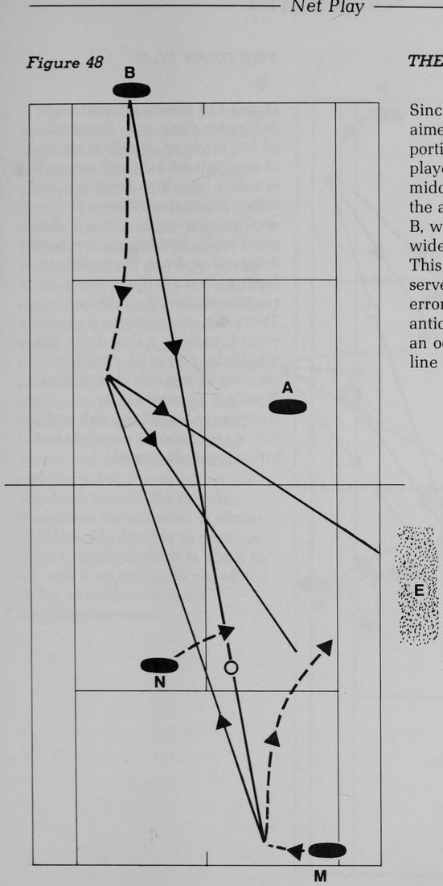
Hình 49A cho thấy một cú đánh lừa (draw play) khéo léo và có tính toan tính. Người trả giao bóng M đã thực hiện một cú trả giao bóng xuất sắc, buộc người giao bóng B phải vô-lê hất lên một quả bóng nảy cao rơi ngắn. Đấu thủ B có thể thắng điểm này một cách dễ dàng bằng cách đánh một cú thuận tay dọc xuống giữa sân hoặc đánh về phía sau đấu thủ B nếu cô ta bắt đầu di chuyển. Do đó, cô ta chọn cách chờ ở điểm C để dụ đấu thủ M đánh bóng xuống giữa sân. Vào đúng lúc M đã dấn thân vào cú đánh, đấu thủ kia lao đi cắt bóng và biến một điểm gần như chắc chắn đã mất thành một cú đặt bóng hiểm tuyệt vời.
152. ———_————m —\ TENNIS TACTICS axe Figure 49A shows a clever 4 deliberate draw play. Receiver \ M has made an excellent return \ - of service which forced server B 4 to volley up a high-bouncing ball Ps which lands short. Player B 7 point easily by hitting a forehand Be drive either down the middle or behind player B if she starts Therefore, she elects to wait at (e) point C to draw a shot down the wé middle by player M. At the moment M is committed, player sprinting to cut off the ball and turn a point almost certainly lost into a great placement.
Net PlayNet Play
Hình 49B minh họa một cú đánh lừa liều lĩnh gần như khó tin đã xảy ra trong một trận chung kết. Chúng ta bắt đầu diễn biến với việc người giao bóng B đánh một cú vô-lê đầu tiên góc nhọn gần như đã thắng điểm. Sau một quãng chạy dài, người trả giao bóng M chỉ vừa với tới quả bóng và cố đánh một cú vô-lê chéo sân góc nhọn. Cú đánh này được người đánh lưới biến thể N đoán trước, và anh ta có thể cứu bóng rồi cố đánh bóng xuống giữa sân. Người giao bóng B đã lường trước cú trả bóng đó và sẵn sàng đập một cú xuống giữa sân để kết thúc điểm. Đấu thủ M, trong lúc đang quay trở lại giữa sân, nhận ra tình thế gần như vô vọng. Anh ta quyết định dừng lại ở điểm C cho đến khi đấu thủ B sắp đánh bóng, rồi lao đi cắt cú vô-lê để tạo nên một cú đặt bóng hiểm đến nghẹt thở.
unbelievable desperation draw play which occurred in a championship final. We begin play with server B hitting a sharply angled first volley which almost won the point. After a long run receiver M barely reaches the ball and tries to slip it down the alley. But net man A diagnoses this and is able to play a sharply angled cross-court volley. This is anticipated by modified net player N and he is able to retrieve the ball and attempt to play it through the middle. Server B has expected that return and is prepared to punch one down the middle to end the point. Player M, on his way back toward the middle, recognizes the situation is almost hopeless. He decides to pause at point C until player B is about to hit, and then sprints to cut off the volley to produce a heartstopping placement.
phòng thủ với hai đấu thủ ở vào vị trí có thể che chắn nửa sân mà bóng đang được đánh tới; (2) nó cho người đánh lưới khả năng tiếp cận dễ dàng hơn để vô-lê những cú trả giao bóng dọc xuống giữa sân; (3) nó mở ra cơ hội cho người đánh lưới tiếp tục cú trôi của mình thành một cú cắt bóng nếu cú trả giao bóng yếu và cao; và (4) nó đặt áp lực cực lớn lên người trả giao bóng, buộc anh ta phải quan sát vị trí của người đánh lưới lâu hơn và cẩn thận hơn, đồng thời hạn chế anh ta vào một khu vực mục tiêu nhỏ hơn nhiều để có một cú trả giao bóng hiệu quả. Không còn nghi ngờ gì nữa, cú trôi sẽ làm phát sinh số sai sót trả giao bóng cao hơn mức bình thường. Cú trôi của đội trả giao bóng là một thủ thuật do người đánh lưới biến thể khởi xướng khi người giao bóng chuẩn bị thực hiện cú vô-lê đầu tiên. Ngay khi đấu thủ N nhận ra rằng cú vô-lê đầu tiên của người giao bóng B sẽ được đánh chéo sân hoặc hất lên, anh ta di chuyển ngang qua đường giữa sân về phía lưới (xem Hình 48 ở trang 151). Chiến thuật này mang lại những lợi thế sau: (1) nó cho phép người đánh lưới biến thể vô-lê trả đi nhiều cú vô-lê đầu tiên yếu ớt của người giao bóng B; (2) nó tạo nên một thế phòng thủ tốt hơn vì người trả giao bóng M có thể tiến ra rộng để che chắn cú vô-lê góc nhọn; và (3) bằng cách buộc người giao bóng B phải luồn chỉ qua lỗ kim với cú vô-lê đầu tiên của mình, nó thường gây áp lực khiến anh ta mắc sai sót. Khái niệm cơ bản đằng sau hai chiến thuật trôi này nhắm vào việc tận dụng sự thật rằng phần lớn áp đảo các cú trả giao bóng và các cú vô-lê đầu tiên đều được đánh chéo sân. Việc khai thác những tỷ lệ phần trăm thuận lợi như vậy thường mang lại số cú thắng vượt xa số cú thua. Nếu đối phương bắt đầu phòng thủ chống lại điều này bằng cách đánh dọc biên, nhiều động tác trôi giả khác nhau sẽ được đưa vào sử dụng và một trận chiến chiến thuật hoàn toàn mới sẽ nảy sinh. Đó chính là sự đa dạng vô tận của quần vợt. Cú đánh lừa (draw play) Chiến thuật mà chúng tôi đặt tên là “draw play” (cú đánh lừa) thực sự đại diện cho sự phối hợp đồng đội ở lưới ở đẳng cấp cao. Nó bao gồm một động tác phức tạp, trong đó đội đang ở thế bất lợi về chiến thuật cố tình dụ đối phương đánh một “cú thắng chắc chắn” về phía
defense with two players in position to cover that half of the court toward which the ball is being struck; (2) it provides the net player easier access to volley away returns of service down the middle; (3) it opens the door for the net player to continue his drift into a poach if the return of service is weak and high; and (4) it puts tremendous pressure on the receiver, forcing him to watch the position of the net man longer and more carefully, while also restricting him to a much smaller target area for an effective return of service. Without doubt, the drift will precipitate above-normal return-of-service errors. The receiving-team drift is a maneuver initiated by the modified net player as the server gets set to make his first volley. As soon as player N detects that server B’s first volley will be played cross court or hit up, he moves across the center line toward the net (see Figure 48 on page 151). This tactic provides these advantages: (1) it permits the modified net player to volley away many weak first volleys by server B; (2) it engineers a better defense because receiver M can come up wide to cover the sharply angled volley; and (3) by forcing server B to thread the needle with his first volley, it often pressures him into making errors. The basic concept behind the two drift tactics is directed at taking advantage of the fact that the overwhelming majority of returns of service and first volleys are hit cross court. Exploitation of such percentage odds usually results in winners far exceeding the losers. If the opponents start to defend against this by hitting down the line, various fake drift movements will be introduced and a whole new tactical battle will emerge. Thus the infinite variety of tennis. The Draw Play The tactic we have named the “draw play” represents really superior net-play teamwork. It consists of a complex maneuver during which the team at a tactical disadvantage purposely entices the opponents into hitting a ‘sure winner” toward an artificial or contrived opening, only to close the gap at the last moment and fashion a winner. There are two versions of the draw—one in which you deliberately move or remain out of position to invite an opening, the other in which your team has been forced so far out of position that a complete recovery before the opponent’s next shot is impossible. The most common example of the “deliberate” draw play is a fake poach by the net man, who starts his poach too soon in order to draw a return of service down the sideline, then reverses quickly to volley deep cross court for the
Net PlayNet Play
điểm. Tình thế phức tạp hơn nhiều khi đội của bạn đã bị buộc phải rời xa vị trí. Để thực hiện được một cú đánh lừa “liều lĩnh”, bạn chỉ có một khoảnh khắc — đúng một khoảnh khắc — để bắt đầu chạy đi cắt cú trả bóng được đánh vào khoảng trống. Nếu bạn khởi hành quá muộn, bạn sẽ không thể với tới quả bóng; còn nếu bạn khởi hành quá sớm, đối phương có thể đổi cú đánh và đánh bóng về phía sau lưng bạn để giành một chiến thắng dễ dàng. Thời gian để quyết định rất ngắn ngủi, nhưng phần thưởng cho câu trả lời đúng thì rất lớn: nó có thể biến một điểm đã mất vô vọng thành một cú thắng ngoạn mục. Hình 49 giải thích các chiến thuật đánh lừa (xem trang 152 đến 153).
point. The situation is much more complex when your team has been forced far out of position. To pull off a “desperation” draw play you have an instant—the one right instant—to start running to cut off the return hit into the gap. If you start too late, you will be unable to reach the ball; and if you start too soon, the opponents can change their shot and hit the ball behind you for an easy win. The time for decision is mighty short, but the reward for the proper answer is great: it can turn a point that has been hopelessly lost into a sensational winner. Figure 49 explains draw-play tactics (see pages 152 to 153).
Chương này xem xét lối đánh từ vạch cuối sân ngoài cú giao bóng và cú trả giao bóng, những nội dung đã được trình bày trong phần trước. Trong đánh đơn đỉnh cao, tầm quan trọng của lối đánh từ vạch cuối sân trong việc thắng điểm thay đổi vô cùng lớn, tùy thuộc vào kiểu lối đánh mà các đối thủ chọn sử dụng và tốc độ thi đấu của bề mặt sân cụ thể. Điều này khiến cho việc khái quát hóa về chiến thuật đánh từ vạch cuối sân là không thể, và chính điều đó làm tăng thêm rất nhiều sự hấp dẫn của môn thể thao đa dạng và luôn biến đổi này. Ví dụ, trên các sân nhanh với hai đấu thủ đều là những nghệ sĩ giao bóng và lên lưới đối đầu nhau, lối đánh từ vạch cuối sân bao gồm các cú đánh gây sức ép, cú đánh vượt qua (passing) và cú bổng sẽ chiếm khoảng 10 đến 15 phần trăm tổng số cú thắng, trong khi lối đánh lưới bao gồm các cú vô-lê đầu tiên, các cú vô-lê sau đó, các cú đập bóng trên cao (smash) và các cú đánh từ cuối sân ở gần lưới sẽ chiếm khoảng 25 đến 35 phần trăm tổng số cú thắng. Khi một chuyên gia giao bóng và lên lưới đối đầu với một đấu thủ đánh từ vạch cuối sân bền bỉ, tỷ lệ phần trăm thắng thay đổi thành ngang bằng ở khoảng 25 phần trăm mỗi bên. Và khi hai đấu thủ chủ yếu đánh từ vạch cuối sân đối đầu nhau, các cú đánh từ vạch cuối sân gia tăng tầm quan trọng để thắng khoảng 40 phần trăm, so với khoảng 15 phần trăm từ các cú đánh ở lưới. Số liệu trên các sân nhanh có phần khác biệt đối với nữ. Các đối thủ giao bóng và lên lưới thắng khoảng 25 đến 30 phần trăm số điểm từ lưới và một tỷ lệ ngang bằng từ vạch cuối sân. Một đấu thủ giao bóng và lên lưới đối đầu với một đấu thủ đánh từ vạch cuối sân sẽ chuyển dịch số cú thắng thành khoảng 40 đến 50 phần trăm từ vạch cuối sân và 20 đến 30 phần trăm từ vị trí ở lưới.
This chapter considers base-line play other than the serve and return of service, which have already been covered in earlier text. In top-flight singles the importance of base-line play in winning points varies tremendously, depending upon the types of games the opponents elect to employ, and the playing speed of the particular court surface. This makes it impossible to generalize on base-line tactics, which adds greatly to the fascination of this remarkably diverse and ever-changing game. For example, on fast courts with two men who are serve-andvolley artists facing each other, base-line play consisting of forcing shots, passing shots, and lobs will account for about 10 to 15 percent of all winners, while net play consisting of first volleys, later volleys, overheads, and close-in ground strokes will account for about 25 to 35 percent of all winners. When a serve-and-volley expert faces a steady base-liner, the winning percentages change to equal at about 25 percent each. And when two base-line protagonists square off, the base-line shots increase in importance to win about 40 percent as against roughly 15 percent from the net shots. The data on fast courts are somewhat different for women. The serve-and-volley opponents win about 25 to 30 percent of points from the net and an equal percentage from the base line. A serve-and-volley player matched against a base-liner will switch the winners to about 40 to 50 percent from the base line and 20 to 30 percent from the net position.
7. Lối Đánh Cuối Sân
Base-Line PlayBase-Line Play
Trên sân chậm, tình thế hoàn toàn khác. Ngay cả những tay giao bóng rồi lên lưới (serve-and-volley) mạnh nhất trong số các tay vợt nam cũng không thể thực hiện thành công phương án giao bóng rồi theo lên lưới và đóng đô ở đó. Số liệu cho thấy các đối thủ giao bóng rồi lên lưới rốt cuộc chỉ thắng được từ 45 đến 60 phần trăm số điểm từ vạch cuối sân và chỉ 12 đến 30 phần trăm ở trên lưới, với rất ít cú vô-lê đầu tiên giành điểm. Khi một số tay vợt nữ chuyên đánh từ vạch cuối sân thi đấu trên sân chậm, các pha đôi công từ vạch cuối sân kéo dài trung bình khoảng mười lăm cú đánh. Và một số pha bóng qua lại, xen kẽ những cú bổng "mặt trăng" (moon ball), đã được biết là kéo dài gần hai mươi phút! Trong tình huống đó, bạn nên biết cách đánh những cú từ vạch cuối sân, vì chúng thắng gần 80 phần trăm số điểm! Theo một ý nghĩa quan trọng, dấu ấn của những tay vợt đánh đơn vĩ đại trong suốt lịch sử chính là khả năng tung ra đều đặn những cú đánh từ cuối sân sâu và mạnh. Không có kỹ năng này, họ không thể thắng trên sân chậm, và do đó không thể được xếp vào hàng những nhà vô địch toàn sân (all-court). Trái ngược hẳn, dấu ấn của những tay vợt đánh đôi vĩ đại là rời bỏ vạch cuối sân và tiến lên lưới càng sớm càng tốt để tránh phải đánh những cú từ vạch cuối sân, bất kể tốc độ của mặt sân. Đó là một vùng thảm họa, nơi chỉ 10 đến 20 phần trăm số điểm đánh đôi được giành. Và những cú đánh cần thiết để thoát khỏi vùng thua cuộc đó hoàn toàn khác với những cú thường được dùng có lợi trong đánh đơn. Đến đây hẳn đã rõ rằng các bàn luận chiến thuật về lối đánh từ vạch cuối sân cho đánh đơn và đánh đôi phải được trình bày riêng biệt. ĐÁNH ĐƠN TỪ VẠCH CUỐI SÂN. Một mô tả rõ ràng và toàn diện về chiến thuật của lối đánh từ vạch cuối sân là một việc cực kỳ khó khăn. Bởi vì lối đánh từ vạch cuối sân có sự đa dạng gần như vô tận do những phong cách chơi khác nhau, sở thích và ác cảm đối với đối thủ, và các mặt sân khác nhau tạo ra, nên chỉ thực tế khi trình bày những điểm then chốt trong phần này. Điều này sẽ liên quan đến việc bàn về những cú đánh gây sức ép (forcing shot) và những cú đánh vượt qua (passing), kể cả những cú bổng. Những cú đánh gây sức ép. Trước tiên là vài lời bình luận mở đầu. Khi bạn và đối thủ cùng đứng ở vạch cuối sân đôi công qua lại bằng những cú đánh từ cuối sân, bạn phải nhớ rằng những pha bóng qua lại như vậy là những thao tác giao đấu. Bạn phải "di chuyển đối thủ đi khắp sân" bằng cách này hay cách khác để cố gắng khai thác một lỗi hoặc một cú trả bóng yếu ớt, hoặc để tạo ra một khoảng trống. Di chuyển đối thủ đi khắp sân có thể có nghĩa là lùa anh ta chạy từ bên này sang bên kia, hoặc lên rồi xuống, hoặc thay đổi hướng, tốc độ, độ xoáy, hay "đánh ngược hướng di chuyển" (wrong-foot) anh ta bằng cách đánh bóng về phía sau lưng khi anh ta đang di chuyển sai hướng. Dù bạn dùng phương pháp nào, một khi đã tạo ra được khoảng trống, hãy sẵn sàng tận dụng cơ hội đó bằng cách tung ra cú đánh gây sức ép đúng đắn. Nếu không, đối thủ sẽ trở lại tư thế sẵn sàng thích hợp và bạn sẽ phí phạm lợi thế mà mình vừa khó nhọc giành được. Điều thứ hai cần nhớ là đánh bóng trong khả năng của mình. Đập bóng thật mạnh có thể thắng vài điểm ngoạn mục, nhưng nó thường dẫn đến những lỗi lầm còn ngoạn mục hơn. Giữ bóng trong tầm kiểm soát và giữ bóng trong cuộc chơi sẽ dẫn đến chiến thắng trước biết bao đối thủ. Điều thứ ba hẳn đã là một yêu cầu quen thuộc: bạn nên rèn luyện khả năng phán đoán trước. Nếu không, bạn sẽ không thể bao quát được khoảng sân rộng lớn. Nói chung, bạn nên xuất phát từ tư thế sẵn sàng ở giữa vạch cuối sân và cách vạch đó khoảng một foot về phía sau, rồi nhanh chóng trở về điểm đó giữa các cú đánh. Việc nghiên cứu kỹ thuật tung ra cú đánh của đối thủ sẽ cho phép bạn di chuyển đúng hướng và tránh bị "đánh ngược hướng di chuyển". Tất cả những tay vợt có vẻ chơi bóng một cách "nhẹ nhàng như không" đều đã nắm bắt được nghệ thuật phán đoán trước. Và cuối cùng, khi nỗ lực cải thiện lối đánh từ vạch cuối sân của mình, hãy luyện tập giữ bóng sâu. Đó là dấu hiệu nhận biết của một tay vợt tài giỏi. Những cú đánh sâu có thể được đánh an toàn ở độ cao hai đến ba foot trên lưới — bạn nên tránh đánh bóng vào lưới. Đối thủ của bạn hiếm khi có thể trả bóng tấn công thực sự từ cuối sân, và bị tước mất phương án trả bóng bằng cú bỏ nhỏ (trừ khi bạn bị gãy chân). Bây giờ chúng ta hãy xem xét ba kiểu cú đánh gây sức ép: 1. Kiểu thuần sức mạnh. Một số tay vợt chỉ đánh bóng mạnh đến nỗi đưa bóng tới các góc của vạch cuối sân và họ có thể giành
On slow courts the situation is entirely different. Not even the best of big serve-and-volley players among the men can exercise successfully the option of following serve to net and camping there. Data indicate that serve-and-volley opponents end up winning from 45 to 60 percent of points from the base-line and only 12 to 30 percent at the net, with few first-volley winners. When some of the women who specialize in base-line play perform on a slow court, the point exchanges from the base line extend for an average of about fifteen shots. And some rallies, interspersed with “moon” balls, have been known to last almost twenty minutes! In that situation you better know how to play base-line shots because they win almost 80 percent of the points! In an important sense, the hallmark of the great singles players over history has been their ability to stroke consistently deep ground strokes from the base line. Without this skill, they could not win on slow courts, and thus would not become classified as all-court champions. In sharp contrast, the hallmark of the great doubles players has been to desert the base line and journey to the net as soon as possible in order to avoid having to play ground strokes from the base line, irrespective of the speed of the court. That is a disaster area from which only 10 to 20 percent of doubles points are won. And the strokes required to extricate yourself from that losing.zone are quite different from those ordinarily used to advantage in singles. By now it should be obvious that tactical discussions of base-line play for singles and doubles must be treated separately. SINGLES PLAY FROM THE BASE LINE A clear and comprehensive description of the tactics of base-line play is an extremely difficult undertaking. Because of the almost infinite variety in the base-line game brought about by differing styles of play, likes and dislikes of opponents, and court surfaces, it is practical to present only the key points in this section. This will involve discussion of forcing shots and passing shots, including lobs. Forcing Shots First a few introductory comments. When you and your opponent are both on the base line engaging in an exchange of ground strokes, you must remember that such rallies are fencing operations. You have to ‘move the opponent around” by one means or another in order to try to extract an error or a weak return, or to create an opening. Moving the other player around may mean running him from side to side, or up and back, or changing direction, speed, or spin, or “wrong-footing” him by hitting behind him as he moves in the wrong direction. Whatever method you use, once you engineer an opening, be prepared to take advantage of the opportunity by hitting the correct forcing shot. Otherwise, your opponent will recover the proper ready position and you will have wasted the advantage you just worked so hard to gain. The second thing to remember is to hit the ball within your capabilities. Whamming the ball may win a few spectacular points, but it usually leads to more spectacular errors. Keeping the ball under control and in play leads to victory over many an opponent. The third item should now be a familiar requirement: you should work on anticipation. Otherwise, you will not be able to cover the wide expanse of court. Generally, you should start from the ready position at the middle of, and about a foot back of, the base line and return promptly to that point between strokes. Study of your opponent’s strokeproduction techniques should permit you to move in the right direction and avoid being “wrong-footed.” All those players who appear to play the game “effortlessly” have captured the art of anticipation. And, finally, in striving to improve your base-line play, practice keeping the ball deep. That is the trademark of the accomplished player. Deep shots can be hit safely two or three feet above the net—you should avoid netting the ball. Your opponent can seldom make a truly offensive return from deep court, and is deprived of the drop-shot return option (unless you have a broken leg). Now let us consider the three types of forcing shots: 1. Sheer Power Type Some players just hit the ball so hard to the corners of the base line that they can run the opposing player out of position and draw weak returns or create openings which lead to winners. They always capitalize on short returns (landing more than ten feet inside the base line) by playing the forcing approach shot and taking the net to volley any return. These should be kept low to prevent effective lobbying by the opponent. This tactic, properly applied, should win almost 90 percent of the time. Examples of typical points are shown in Figures 50, 51, and 52.
KINH ĐIỂN — Hình 50. NHỮNG CÚ ĐÁNH GÂY SỨC ÉP. Trình bày ở đây là một chuỗi kinh điển những cú đánh gây sức ép từ phía trái tay được một số tay vợt vĩ đại trên sân đất nện sử dụng. Như đã nói ở trên, những điểm bóng trên sân đất nện có thể kéo dài hàng phút, và việc cố bám theo một sơ đồ về một điểm như vậy sẽ làm mỏi cả mắt lẫn sự kiên nhẫn của người đọc. Do đó, sơ đồ này chỉ bắt đầu từ vài cú đánh trước khi kết thúc. Đấu thủ A đổi ba cú trái tay sâu với đấu thủ B tới các điểm C, D và E, mỗi lần đẩy anh ta xa hơn về phía bên trái của mình. Hãy lưu ý rằng cả hai đấu thủ đều trở về tư thế sẵn sàng để cho phép bao quát toàn bộ sân. Cuối cùng, khi đấu thủ B bị lùa ra sát biên sân để trả quả bóng rơi ở điểm E, anh ta trả một cú ngắn tới điểm F. Điều này mở toang khoảng sân cho đấu thủ A tung ra một cú trái tay mạnh dọc biên mà đấu thủ B phải có xe đạp mới tới được. Nếu đấu thủ B đã phán đoán trước cú đánh này và thực sự đang đạp xe thật nhanh dọc vạch cuối sân, thì đấu thủ A có thể "đánh ngược hướng di chuyển" anh ta bằng cách giả vờ đánh mạnh rồi tung ra một cú nhẹ, chéo góc gắt về phía sau lưng anh ta, nhắm tới điểm 2 để giành điểm.
CLASSICAL Figure 50 ———-~ FORCING SHOTS Shown here is a classical sequence of forcing shots from the backhand side used by some of the great clay-court players. As earlier mentioned, claycourt points can go on for minutes, and trying to follow a diagram of one would strain both the reader’s eyes and patience. Therefore, this diagram begins just a few strokes from the finish. Player A exchanges three deep backhand returns with player B to points C, D, and E, driving him farther to his left each time. Note that both players return to the ready position to permit complete court coverage. Finally, when player B is forced wide of the court to return the ball landing at point E, he makes a short return to point F. This opens up the court for player A to crack a hard backhand down the line which player B would need a bicycle to reach. If player B had anticipated the shot and was indeed pedaling fast down the base line, player A could “wrong-foot” him by faking the drive and hitting a soft, sharply angled shot behind him to aim Qo” point 2 for the win.
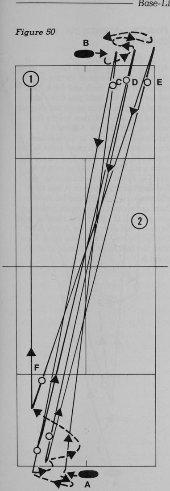
Hình 51. CÚ ĐÁNH GÂY SỨC ÉP VÀO GÓC SÂN. Hình này trình bày một chiến thuật kinh điển khác: buộc đối thủ chạy tới chạy lui từ góc này sang góc kia cho đến khi bạn lùa được anh ta ra khỏi vị trí. Một lần nữa, sơ đồ kết thúc bằng cú đánh giành điểm. Đấu thủ A hướng một cú thuận tay chéo sân tới vạch biên, và đập cú trả bóng chéo sân vào góc trái tay. Điều này lùa đấu thủ B ra thật rộng và kéo về một cú trả bóng nông tới vị trí ở khu trước sân, nơi đấu thủ A có ba lựa chọn để giành điểm. Anh ta có thể đánh thêm một cú chéo sân mạnh vào góc trống ở điểm ngắm 1. Nếu đấu thủ B đang chạy hết sức để bọc lót cú đánh đó, đấu thủ A có thể đánh bóng về phía sau lưng anh ta tới điểm ngắm 2, hoặc cắt bóng ngắn và rộng tới điểm ngắm 3.
160. ———_———_-_ TENNIS TACTICS Figure 5] FORCING CORNER TO opponent to run back and forth from ° corner to corner until you drive him out of position. Once again the diagram winning shot. Player A directs a forehand cross court to the sideline, and blasts the return cross court to the backhand corner. This runs player B wide and draws a shallow return to forecourt position player A has three choices for a win. He can hit another hard cross-court to the open corner at aim point 1. If player B is running hard to cover that shot, player A can drive the ball behind him to aim point 2, or slice the ball short and wide to aim point 3. Oc
Base-Line PlayBase-Line Play
Hình 52. THEO CÚ ĐÁNH GÂY SỨC ÉP LÊN LƯỚI. Cú giao bóng rộng của người giao bóng A vào phía thuận tay đã kéo đấu thủ B ra khỏi sân và tạo ra một cú trả bóng ngắn về giữa sân. Chiến thuật đúng đắn là không mất thời gian tung ra cú đánh gây sức ép dọc biên và lên lưới. Như đã chỉ ra trong Hình 25, cú đánh dọc biên mang lại cho bạn con đường ngắn nhất tới vị trí vô-lê thích hợp, tức điểm E hơi lệch về phía dọc biên so với vạch giao bóng giữa. Từ vị trí này, đấu thủ A có thể bọc lót cú đánh vượt qua (passing) nhanh dọc biên mà đối thủ toan thực hiện và vô-lê một cú giành điểm dễ dàng vào khoảng sân trống ở điểm ngắm 1. Cũng đáng cân nhắc là một cú vô-lê chéo góc gắt tới điểm ngắm 2, hoặc một cú vô-lê nhẹ tới điểm ngắm 3 nếu đấu thủ B đã quyết tâm cố bọc lót cú vô-lê chéo sân. Một số tay vợt phát triển được những cú đánh vượt qua chéo sân và dọc biên xuất sắc từ góc sân sâu. Trước những tay vợt như vậy, thường tốt hơn là đánh cú lên lưới gây sức ép vào giữa sân để cắt giảm góc mà đối thủ có thể dùng cho cú trả bóng.
Figure 52 FOLLOWING A FORCING SHOT TO NET Server A’s wide serve to the forehand has pulled player B off the court and drawn a short return to the middle. The proper tactic is to waste no time in hitting the forcing shot down the line and taking the net. As pointed out in Figure 25, the down-the-line shot provides you the shortest route to the proper volleying position, point E slightly on the down-the-line side of the center service line. From this position player A can cover the attempted fast down-the-line passing shot and volley an easy winner to the open court at aim point 1. Also open for consideration are a sharply angled volley to aim point 2 or a soft volley to aim point 3 if player B is committed to trying to cover the cross-court volley. Certain players develop excellent cross-court and down-the-line passing shots from the deep corner. Against such players it is often better to hit the forcing approach shot to the center to cut down the angle available for the return.
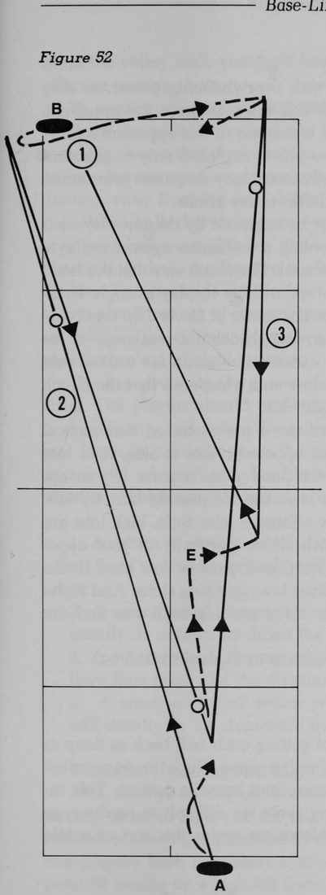
2. Kiểu chiến thuật. Hầu hết các tay vợt không được trang bị sức mạnh áp đảo, nên họ phải tìm cách đánh thắng đối thủ bằng trí tuệ và sự khôn khéo. Thông thường, điều này đòi hỏi phải cố tìm ra một điểm yếu trong lối chơi của đối thủ mà bạn có thể khai thác một cách khôn ngoan. Điều này có nghĩa là chỉ khai thác điểm yếu đó để giành những điểm then chốt, bởi vì đối thủ thông minh có thể chẩn đoán được chiến thuật của bạn và tìm ra cách sửa chữa khiếm khuyết trong bộ giáp của mình. Khả năng kiểm soát bóng mà những tay vợt hàng đầu đạt được thật kỳ diệu. Chúng tôi biết một trận đấu giữa một tay vợt khéo léo và một tay vợt có trái tay tốt hơn thuận tay. Kết quả là tay vợt sau không thể nhớ nổi mình có lần nào được dịp đánh một cú trái tay nào trong suốt cả trận ba set! Trong một cuộc đối đầu khác ở đẳng cấp Davis Cup, một đấu thủ đã thử nghiệm điểm yếu trái tay thấp, phải chạy mà người ta đồn đại về đối thủ của mình ngay ở điểm đầu tiên và đã khai thác được một lỗi. Anh ta đi ngang qua chỗ một trong các tác giả đang ngồi bên đường biên và thì thầm rằng trận đấu đã kết thúc. Và đúng là như vậy — trong ba set thắng liên tiếp. Trong những trận cuối tuần, các điểm yếu phổ biến hơn, nên các lựa chọn chiến thuật thường có thể rộng rãi hơn. Nếu đối thủ của bạn thích đánh mạnh, hãy tiếp cho anh ta những cú nhẹ và xoáy để làm giảm nhịp độ những cú trả bóng của anh ta. Nếu đối thủ của bạn thích lên lưới và bạn gặp khó khăn khi đánh vượt qua anh ta, hãy thử đánh bổng. Những cú bổng không nhất thiết phải là những cú bổng tấn công thấp. Những cú bổng cao an toàn rất khó đánh trả, vì bóng rơi xuống gần như thẳng đứng. Nếu đối thủ của bạn ghét vô-lê, hãy lôi anh ta lên trước và đánh vượt qua hoặc đánh bổng qua đầu anh ta. Nếu cô ta dùng những cú đánh từ cuối sân xoáy lên (top-spin), hãy tung ra những cú thấp, xoáy. Và nếu cô ta chậm chân, hãy thử vài cú bỏ nhỏ. Hãy tiếp tục dò xét cho đến khi bạn tìm ra những kẽ hở trong bộ giáp của cô ta. Những cú đánh gây sức ép mang tính chiến thuật điển hình được trình bày trong các Hình 53 và 54. 3. Kiểu áp lực liên tục. Theo một nghĩa nào đó, chiến thuật quan trọng là đưa mọi quả bóng trở lại sâu hết mức mà rủi ro hợp lý cho phép là một dạng của lối chơi gây sức ép. Áp lực như vậy thường khiến đối thủ ngày càng trở nên mất kiên nhẫn. Điều này mời gọi những lỗi lầm, hoặc do cố đánh những cú quá khó thực hiện, hoặc do đánh quá mạnh. Không ít tay đập bóng mạnh đã gục ngã dưới kiểu áp lực tinh tế này. Những cú đánh vượt qua. Để bẻ giao bóng và thắng trận trước tay vợt sử dụng
2. Tactical Type Most players are not equipped with overwhelming power, so they have to resort to trying to out-think and out-maneuver the opponent. Usually, this entails trying to find a weakness in the opponent’s game which you can exploit wisely. This means to exploit it only to gain crucial points, because the intelligent adversary may diagnose your tactics and find a means of correcting the defect in his armor. The control of the ball which can be achieved by the top players is uncanny. We know of a match involving a craftsman against a player having a better backhand than a forehand. The result was that the latter player cannot remember having the opportunity to play a single backhand in a three-set match! In another encounter at Davis Cup level, one contestant tested a rumored low, running, backhand weakness of his opponent on the very first point and extracted an error. He walked past one of the authors sitting on the sideline and whispered that the match was over. And it was—in three straight sets. In weekend play weaknesses are more prevalent, so that tactical choices can often be broader. If your opponent likes to slug, feed him soft shots and spin which dampens the pace of his returns. If your opponent likes to come to net and you have trouble passing him, try lobbing. The lobs do not have to be low offensive lobs. Safe, high lobs are difficult to hit, as the ball drops down almost vertically. If your opponent hates to volley, draw him forward and pass or lob him. If she employs top-spin ground strokes, deliver low, spinning shots. And if she is slow of foot, try some drop shots. Keep probing until you find the chinks in her armor. Typical tactical forcing shots are shown in Figures 53 and 54. 3. Continuous-Pressure Type In a sense, the important tactic of getting each ball back as deep as prudent risk permits is a form of forcing game. Such pressure often goads an opponent into becoming more and more impatient. This invites errors either through attempting shots too difficult to produce, or overhitting. Many a big hitter has blown up under this sort of subtle pressure. Passing Shots In order to break serve and win matches against the player who em-
Lối đánh từ vạch cuối sân. Nếu đối thủ vô-lê giỏi, bạn phải có trong kho vũ khí của mình một số cú đánh vượt qua hiệu quả. Để có được sự thành thạo trong việc biết khi nào nên cố đánh vượt qua, bạn phải hiểu rõ những xác suất thành công mà bạn đối mặt từ các vị trí khác nhau trên sân. Lẽ đương nhiên là cơ hội thắng của bạn phụ thuộc phần lớn vào việc bạn ở cách lưới bao xa (đại khái thể hiện khoảng cách tương đối tới người vô-lê đối phương) vào thời điểm bạn đánh bóng. Khi những quả bóng do đối thủ đánh tới rơi trong khoảng mười foot tính từ vạch cuối sân của bạn, cơ hội đánh vượt qua một người vô-lê giỏi của bạn gần như bằng không. Tuy nhiên, với những quả bóng rơi cách vạch cuối sân từ mười đến mười tám foot (tức vạch giao bóng), xác suất chuyển sang có lợi cho người đánh vượt qua và anh ta nên thắng được khoảng hai trong ba cơ hội. Với những quả bóng rơi vào phía trong vạch giao bóng, người vô-lê trở thành một con vịt ngồi — người đánh vượt qua nên thắng khoảng bảy trong tám lần thử. Không thể nói quá về tầm quan trọng của quả bóng ngắn đối với người đánh vượt qua. Các tay vợt nên hiểu rằng những cơ hội có quả bóng ngắn là thiểu số và những cơ hội vàng như vậy không được để lãng phí. Một yếu tố quan trọng trong việc tận dụng quả bóng ngắn là phán đoán trước khi nào nên trông đợi nó và nó có thể rơi ở đâu để sẵn sàng cho cú đánh. Những tình huống điển hình cung cấp dấu hiệu cảnh báo trước là: 1. Một cú trả giao bóng buộc người giao bóng đang lao lên lưới phải vô-lê bóng lên từ gần vạch giao bóng thì có khả năng sẽ rơi ngắn gần giữa sân. 2. Một cú trả bóng buộc người vô-lê phải vươn xa về một bên thường sẽ bị hất lên dọc biên. 3. Một cú trả bóng mà người đánh lưới phải bán vô-lê thường sẽ có ít lực, và hướng của nó có thể được chẩn đoán được. 4. Một cú trả bóng bằng cú đẩy nhẹ chéo sân mà người đánh lưới phải vô-lê lên thì thường sẽ được đánh chéo sân qua phần thấp nhất của lưới. Sơ đồ của những pha đánh vượt qua được trình bày trong các Hình 55 và 56. Và cuối cùng, đừng đánh giá thấp giá trị của cú bổng. Chúng ta đã ghi nhận trong Hình 26 việc sử dụng cú bổng tấn công
Base-Line Play ploys the volley well, you must have in your arsenal of weapons some effective passing shots. To acquire expertise in knowing when to try to pass, you must understand the odds for success you face from various court positions. It stands to reason that your chances of winning depend in large measure on how far away you are from the net (roughly representing the relative distance away from the opposing volleyer) at the moment you stroke the ball. When balls driven by your opponent land within about ten feet of your base line, your chances of passing a good volleyer are almost nil. However, on balls landing ten to eighteen feet (the service line) short of the base line, the odds shift in favor of the passer and he should be able to win about two out of three opportunities. On balls landing inside the service line, the volleyer becomes a sitting duck—the passer should win about seven out of eight attempts. The importance to the passer of the short ball cannot be overemphasized. The players should understand that short-ball opportunities are in the minority and such golden chances must not be wasted. An important factor in capitalizing on the short ball is anticipating when to expect it and where it may land in order to get set for the shot. Typical situations which provide advance warning are: 1. A return of service which forces the net-rushing server to volley up from near the service line T is likely to land short near the center. 2. A return which forces the volleyer to reach far to one side will usually be popped up down the line. 3. A return which the net player must half-volley will ordinarily have little pace, and the direction can be diagnosed. 4. A cross-court dink return which the net player must volley up will usually be hit cross-court over the lowest portion of the net. Diagrams of passing shot plays are shown in Figures 55 and 56. And, finally, do not underestimate the value of the lob. We have already noted in Figure 26 the use of the offensive lob. The high defensive lob is also a good method of dislodging the net player. Few weekend players have consistent overheads, so that you can win many a point by tossing up a high lob from a seemingly hopeless court position. Remember that sometimes the sun and wind, and always the opponent’s errors, will supplement your stroke-production capabilities. Even if your opponent does smash the ball back, at least you will have had
Hình 53. NHỮNG CÚ ĐÁNH GÂY SỨC ÉP MANG TÍNH CHIẾN THUẬT. Điểm bóng này minh họa cách một sự lựa chọn cú đánh tinh tế có thể mang lại chiến thắng cho người phòng ngự. Chúng ta nhập vào điểm bóng khi người giao bóng A lên lưới sau một cú đánh từ cuối sân sâu về giữa sân. Người trả giao bóng B nhận thấy điều này và đánh một cú thuận tay xoáy lên nhẹ chéo sân, buộc đấu thủ A phải vô-lê lên ngắn. Đấu thủ B tiến lên và chọn đánh cú đẩy nhẹ chéo sân, buộc người vô-lê phải vươn người. Đấu thủ B phán đoán trước một cú vô-lê góc chéo sân đáp trả, nên anh ta tiến lên. Khi với tới bóng, anh ta giả vờ một cú trả dọc biên để dụ đấu thủ A chạy hết tốc lực về phía vạch biên. Đến phút cuối, anh ta tung lên một cú bổng tấn công trái tay tuyệt đẹp chéo sân vào góc sân, khiến đối thủ chỉ còn biết nhìn trân trối trong cả cú sốc lẫn sự thán phục.
164. —@—————_- TENNNISS TACTICS Figure 53 TACTICAL FORCING SHOTS This point illustrates how a fine selection of shots can win for the defender. We pick up the point as server A takes the net on a ground stroke hit deep to the middle. Receiver B notes this and hits a soft top-spin forehand cross court which forces player A to volley up short. Player B moves in and elects to hit a cross-court dink which forces the volleyer to stretch. Player B anticipates a crosscourt answering angled volley, so he moves forward. As he reaches the ball he fakes a down-the-line return to entice player A into running full speed toward the sideline. At the last moment he tosses up a beautiful backhand offensive lob cross court to the corner, which his opponent can only stare at in both shock and admiration.
Hình 54. CÚ BỎ NHỎ (THE DROP SHOT). Sơ đồ này cho thấy cách sử dụng đúng đắn cú bỏ nhỏ. Người giao bóng A kéo người trả giao bóng B ra khỏi sân bằng một cú giao bóng cắt bóng, rồi đánh một cú đánh gây sức ép chéo sân mạnh từ cú trả giao bóng. Đấu thủ B vừa đủ tới được quả bóng và trả một cú yếu ớt rơi vào trong ô giao bóng. Đấu thủ A nhận thấy B đã trở lại tư thế sẵn sàng, mong đợi một cú đánh gây sức ép khác, nên anh ta giả vờ đánh một cú như vậy rồi làm đấu thủ B bất ngờ bằng cách thả một cú bỏ nhỏ xuống điểm ngắm 1 hoặc 2. Đây là cú đánh thường không thể thực hiện được từ sâu trong sân, vì nó cho đối thủ thời gian để vớt bóng, và thường làm mất điểm. Những cú bỏ nhỏ đặc biệt hiệu quả trong đánh đơn nữ, vì khả năng bao quát sân của họ kém hơn.
Figure 54 THE DROP SHOT This diagram shows the correct employment of the drop shot. Server A draws receiver B off the court with a sliced serve and then plays a strong cross-court forcing shot off the return of service. Player B barely gets to the ball and makes a weak return within the service court. Player A notes that B is back at the ready position expecting another forcing shot, so he fakes one and then catches player B by surprise by dumping a little drop shot to aim point 1 or 2. This is a shot which usually cannot be made from deep in the court, as it gives the opponent time to retrieve the ball, and often gives away the point. Drop shots are especially effective in women’s singles, as their court-covering capability is less.
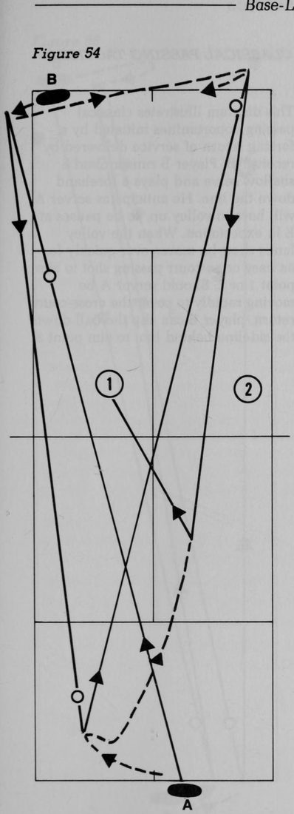
Hình 55. NHỮNG CHIẾN THUẬT ĐÁNH VƯỢT QUA KINH ĐIỂN. Sơ đồ này minh họa những cơ hội đánh vượt qua kinh điển được khởi tạo bởi một cú trả giao bóng gây sức ép của người trả giao bóng B. Đấu thủ B chạy vòng qua một cú giao bóng nông và đánh một cú thuận tay dọc biên. Anh ta phán đoán trước rằng người giao bóng A sẽ phải vô-lê bóng lên, nên anh ta dừng lại ở E để chờ đợi. Khi cú vô-lê rơi ngắn, anh ta nhanh chóng di chuyển tới để đánh một cú vượt qua chéo sân dễ dàng tới điểm ngắm 1 hoặc 2. Nếu người giao bóng A đang di chuyển nhanh để bọc lót cú trả chéo sân, thì đấu thủ B có thể luồn bóng xuống dọc vạch biên về phía sau lưng anh ta tới điểm ngắm 3.
Figure 55 CLASSICAL PASSING TACTICS A « \ This diagram illustrates classical | passing opportunities initiated by a \ forcing return of service delivered by \ receiver B. Player B runs around a \ shallow serve and plays a forehand \ down the line. He anticipates server A will have to volley up, so he pauses at E in expectation. When the volley | lands short he moves over quickly for | an easy cross-court passing shot to aim point 1 or 2. Should server A be moving rapidly to cover the cross-court : return, player B can slip the ball down the sideline behind him to aim point 3.
Base-Line PlayBase-Line Play
Hình 56. ĐÁNH VƯỢT QUA SAU NHỮNG SAI LẦM CHIẾN THUẬT. Chúng ta bước vào một pha đôi công dài từ vạch cuối sân gần lúc kết thúc. Đấu thủ B đánh một cú mạnh chéo sân sâu và đấu thủ A trả bóng sâu chéo sân. Đấu thủ B trở nên mất kiên nhẫn và phạm hai sai lầm chiến thuật. Thứ nhất, anh ta quyết định cố kết thúc điểm bằng cách lên lưới từ vạch cuối sân thay vì chờ một quả bóng ngắn. Và thứ hai, anh ta lên lưới theo sau một cú đánh chéo sân, nghĩa là anh ta phải chạy suốt tới điểm E mới có thể ở đúng vị trí bọc lót cú đánh vượt qua dọc biên. Đấu thủ A biết tất cả những điều đó và gần như không thể tin nổi khi thấy đấu thủ B lao về phía lưới. Anh ta nhanh chóng vào vị trí để tận dụng khoảng trống và tung ra một cú đánh vượt qua thuận tay giành điểm dọc biên. Bộ não phát tín hiệu chọn cú đánh dọc biên nhanh đến mức đấu thủ A gần như không nhận ra rằng mình thực sự đang "suy nghĩ trong lúc thi đấu".
Figure 56 PASSING AFTER TACTICAL ERRORS We enter into a long base-line exchange near its conclusion. Player B hits a deep cross-court drive which player A returns deep cross court. Player B becomes impatient and makes two tactical errors. First, he decides to try to end the point by going to net from the base line instead of waiting for a short ball. And, second, he goes to net behind a cross-court shot, which means he has to run all the way to point E to be in position to cover the down-the-line passing shot. Player A knows all of this and can hardly believe it when he sees player B start for the net. He moves quickly into position to take advantage of the opening and drills a winning forehand passing shot down the line. The brain flashed the signal to select the downthe-line shot so fast that player A hardly realized he was indeed “thinking while playing.”
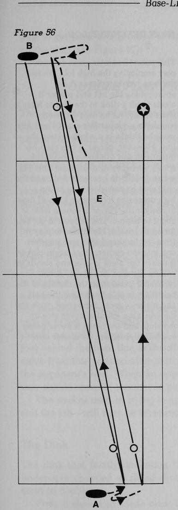
Hình 57. CÚ BỔNG PHÒNG NGỰ CAO. Điểm bóng này minh họa lối chơi phòng ngự tuyệt vời khi sử dụng cú bổng cao. Chúng ta nhập vào pha bóng dài khi đấu thủ A đang tiến lên lưới và đấu thủ B chọn đánh một cú đẩy nhẹ (dink) xuống dưới chân để buộc phải vô-lê ngắn. Khi thấy chiến thuật này thành công, đấu thủ B tiến lên và đánh một cú mà anh ta tưởng là cú giành điểm dọc biên. Tuy nhiên, đấu thủ A đã đọc được ý đồ của anh ta và khởi động một cuộc rút lui thần tốc về phía vạch cuối sân. Anh ta chỉ vừa đủ sức với tới bóng, và cú đánh duy nhất anh ta có thể chọn là đánh một cú bổng phòng ngự cao để cho mình thời gian tổ chức lại thế trận. Đấu thủ B cảm nhận được điều sắp xảy ra và lùi về để sẵn sàng cho một cú đập bóng trên cao. Anh ta lách vòng để đánh nó từ phía thuận tay và đập bóng vào góc sân. Một lần nữa đấu thủ B nghĩ rằng điểm bóng đã kết thúc và đứng chiêm ngưỡng cú đánh của mình. Nhưng đấu thủ A đã hồi phục được vị trí ở giữa vạch cuối sân, có thể vớt được quả bóng, và tung ra một cú đánh chéo sân tuyệt vời để giành điểm. Một bài học là đừng bao giờ bỏ cuộc, và bài học kia là đừng bao giờ dừng lại để chiêm ngưỡng cú đánh của mình, dù nó có đẹp đến đâu.
Figure 57 HIGH DEFENSIVE LOB This point illustrates great defensive play employing the high lob. We join the long point as player A is O approaching the net and player B elects to hit a dink to the feet to force a short volley. As he sees this tactic succeeding, player B moves in and hits \ | what he thinks is a winner down the \ | line. However, player A has read his intentions and initiates a breakneckspeed retreat toward the base line. He is barely able to reach the ball, and the only shot he can elect is to hit up a high defensive lob to give himself time to reorganize. Player B senses what is about to happen and retreats to get set for an overhead. He circles to play it from the forehand side and smashes one into the corner. Once again player B thinks the point is over and stands to admire his shot. But player A has recovered position in the middle of the base line, is able to retrieve the ball, and makes a great cross-court drive for the win. One moral is never give up the ship, and the other is never pause to admire your shot, no matter how beautiful.
Base-Line PlayBase-Line Play
thời gian trở lại vị trí để cố trả quả bóng. Đừng bao giờ bỏ cuộc (xem Hình 57)! ĐÁNH ĐÔI TỪ VẠCH CUỐI SÂN. Mục tiêu duy nhất của lối đánh đôi từ vạch cuối sân là thoát khỏi vùng đầy tai họa đó bằng những cú lên lưới cho phép bạn có một hành trình an toàn tới vị trí trên lưới có lợi hơn nhiều. Vì đội ở trên lưới đang giữ vị trí tấn công, nên tay vợt bị ghim ở cuối sân không dễ gì đưa được đội của mình vào vị trí trên lưới. Điều này đòi hỏi tư duy sáng suốt cũng như kỹ thuật tung ra cú đánh vững vàng. Sự kiên trì, ngay cả trong những tình huống tuyệt vọng nhất, thường được đền đáp. Hãy nhớ rằng, đối thủ của bạn sẽ phạm nhiều lỗi hơn là những cú đặt bóng hiểm. Ngay cả những nhà vô địch vĩ đại cũng từng đánh quá mạnh những quả bóng dễ dàng vì sự háo hức do cảm giác hồi hộp của cú kết liễu sắp đến. Đội hình thích hợp cho lối đánh từ vạch cuối sân tất nhiên phụ thuộc vào hoàn cảnh. Vị trí tốt nhất để trả giao bóng là người đồng đội của người trả giao bóng đứng ở vị trí lưới điều chỉnh (modified net position), như đã trình bày trong Hình 8. Trong hầu hết các trường hợp, anh ta nên cố gắng di chuyển tới và giữ vị trí trên lưới có lợi nhất, nên điều này để đội trả giao bóng ở đội hình một trên lưới, một dưới sân nếu người trả giao bóng không thể theo cú trả giao bóng của mình lên lưới. Nếu người đánh lưới ở vị trí điều chỉnh buộc phải lùi về, thì thông thường hai đấu thủ nên chọn đội hình song song với mỗi người đứng cách vạch cuối sân khoảng một foot ở điểm giữa của phần sân bên mình. Họ di chuyển khỏi vị trí này sau khi phán đoán trước độ sâu và hướng của cú đánh của đối thủ. Khi có được cơ hội lao lên lưới, họ nên cùng nhau tiến lên theo đội hình song song. Những cú đánh được dùng khi cố gắng lên lưới — cú đẩy nhẹ (dink), cú đánh mạnh (drive), và cú bổng (lob) — giờ đây sẽ được xem xét. Cú đẩy nhẹ (the dink). Họ cú đẩy nhẹ, bao gồm cú xoáy lên nhẹ cũng như những cú cắt dưới xoáy hoặc cắt ngang, đặc biệt hiệu quả từ cuối sân trong đánh đôi. Trước tiên, cần làm rõ rằng có hai trường hợp mà cú đẩy nhẹ nên ở sâu trong sân đến mức đối thủ có đủ thời gian phán đoán trước và lao lên để kết liễu. Đánh từ cách vạch cuối sân mười foot trở lên về phía trong, cú đẩy nhẹ mang lại những lợi thế sau: 1. Tốc độ chậm của quả bóng cho phép người đánh có thời gian theo lên lưới sau cú đánh. 2. Bản chất xoáy, bay thấp qua lưới của cú đánh thường buộc đối thủ phải vô-lê lên, tạo cơ hội cho người đánh vô-lê cú trả bóng. 3. Tính nhẹ nhàng của cú đánh khiến nó dễ kiểm soát và cũng ngăn đối thủ có được nhiều lực trong cú vô-lê trả bóng. Những ví dụ về việc sử dụng cú đẩy nhẹ để lên lưới được trình bày trong các Hình 58 và 59. Cú đánh mạnh (the drive). Được sử dụng khôn ngoan và đúng lúc, cú đánh mạnh có thể là một vũ khí hiệu quả từ cuối sân. Tuy nhiên, trước tiên người đọc nên hiểu một số nguy hiểm liên quan, chẳng hạn như: (1) Những kiểu cú đánh mạnh phải được sử dụng trong gần như mọi trường hợp là loại thấp, phẳng, hoặc xoáy lên chìm. Những cú đánh mạnh sâu, cao qua lưới vốn rất quý giá trong nhiều khía cạnh của lối đánh đơn sẽ bị nuốt chửng khi hai đối thủ phủ kín lưới. (2) Vì những lý do tương tự, ngay cả một cú đánh mạnh, thấp từ gần vạch cuối sân cũng là một cú đánh dại dột (trừ khi tồn tại một khoảng trống lớn), vì một đội lưới cảnh giác có đủ thời gian để giết chết những cú trả bóng như vậy. (3) Khi ở thế một trên lưới, một dưới sân, tay vợt ở vạch cuối sân phải tránh cú đánh mạnh dọc biên, vì nó mang lại cho người đánh lưới một cú vô-lê chéo sân đơn giản nhất vào khoảng sân chéo trống (xem Hình 62) để đặt bóng hiểm. Giả sử người đọc giờ đây đã nhận thức được những nguy hiểm, thì cú đánh mạnh có thể rất hữu ích trong những tình huống sau: 1. Nó có thể khoét một lỗ xuyên qua trung tâm đội lưới đối phương nếu họ đứng cách nhau xa quá một bước (xem Hình 8 để biết vị trí đúng), hoặc nếu họ diễn màn "Alphonse và Gaston" và để bóng tiến quá xa trước khi một trong hai người di chuyển tới đánh bóng. 2. Nếu đội lưới đối phương chen chúc vào giữa sân quá nhiều, một cú đánh xoáy lên chéo sân tới hành lang dọc biên có thể tạo ra một cú đặt bóng hiểm. 3. Nếu bóng được đánh
time to get back into position to attempt to return the ball. Never give up the ship (see Figure 57)! DOUBLES PLAY FROM THE BASE LINE’ The one objective of doubles play from the base line is to extricate yourself from that plague-ridden area using approach shots which will permit you a safe journey to the far more advantageous net position. Since the team at net has the offensive position, it is not easy for the player pinned in the back court to maneuver his team into net position. This requires sound thinking as well as sound stroke production. Perseverance, even in the most helpless situations, is often rewarded. Remember, your opponents will make more errors than placements. Even the great champions have overhit simple sitters through eagerness brought on by the thrill of the impending kill. The proper team formation for base-line play depends, of course, upon the circumstances. The best position for receiving service is with the receiver’s partner at the modified net position, as already described in Figure 8. In most cases he should strive to move to and hold the most advantageous net position, so this leaves the receiving team with a oneup, one-back formation if the receiver cannot follow his return of service in to net. If the modified net player is forced to retreat, the players should normally adopt a parallel formation with each standing about a foot behind the base line at the midpoint of his half of the court. They move from this position after anticipation of the depth and direction of the opponent’s shot. When an opportunity to dash to the net is gained, they should move in together in parallel. The strokes used in trying to approach the net—the dink, the drive, and the lob—will now be reviewed. The Dink The dink-shot family, including the soft top-spin shot as well as the under-spin chopped or sliced shots, is notably effective from the back court in doubles. First, it should be made clear that there are two circumstances under which the dink should be avoided as being too dangerous: (1) when opponents are crowding the net so tightly that they might angle-volley for a placement, and (2) when you have to play the shot from so far back in the court that the opponents have sufficient time to anticipate and dash forward for the kill. Played from ten feet or more inside the base line, the dink offers the following advantages: 1. The slow speed of the ball permits the striker time to follow in to net behind the shot. 2. The low-over-the-net, spinning nature of the shot usually forces the opponents to volley up, which gives the striker an opportunity to volley the return. 3. The soft nature of the stroke makes it easy to control and also prevents the opponents from getting much pace on the return volley. Examples of use of the dink to gain the net are shown in Figures 58 and 59. The Drive Employed wisely and well, the drive can be an effective weapon from the back court. First, however, the reader should understand some of the dangers involved, such as: (1) The types of drives which must be employed in almost every case are low, flat, or sinking top-spin varieties. The high-over-the-net deep drives so valuable in many aspects of singles play are eaten alive when two opponents blanket the net. (2) For similar reasons, even a low, hard drive from near the base line is a foolish shot (unless a big hole exists), as an alert net team has plenty of time to murder such returns. (3) When in a one-up, one-back position the base-line player must avoid a drive down the line, as it gives the net player the simplest of cross-court volleys to the open diagonal (see Figure 62) for a placement. Assuming the reader is now aware of the dangers, the drive can be very useful in the following situations: 1. It can bore a hole through the center of the opposing net team if they are positioned a step too far apart (see Figure 8 for correct position), or if they pull an Alphonse-and-Gaston act and let the ball advance too far-before either player moves to stroke the ball. 2. If the opposing net team is crowding the center too much, a topspin cross-court drive to the alley can produce a placement. 3. If the ball is played from a wide angle and the net team has not
Base-Line PlayBase-Line Play
Hình 58. CÚ LÊN LƯỚI BẰNG HAI CÚ ĐẨY NHẸ (DOUBLE DINK). Sơ đồ cho thấy một cú trả giao bóng bằng cú đẩy nhẹ trái tay ở góc rộng của người trả giao bóng M, và người giao bóng B vô-lê ngắn vào khu vực vạch giao bóng. Đấu thủ M tiến lên và đánh cú đẩy nhẹ thứ hai thấp qua giữa lưới, và anh ta cùng đồng đội tiến lên từng bước để phủ kín trung tâm. Người giao bóng B bị mắc kẹt, vì anh ta không thể làm gì khác ngoài việc vô-lê bóng lên ngay vào mặt quân địch. Người trả giao bóng M chỉ cần bước hai bước và kết thúc nỗi khổ với một cú vô-lê góc tuyệt đẹp.
Figure 58 THE DOUBLE DINK B APPROACH The diagram shows a wideangled backhand dink return of service by receiver M which server B volleys short to the service-line area. Player M moves in and plays a second dink low over the center of the net, and he and his partner edge forward to blanket the center. Server B is trapped, as he cannot do anything but hit the volley up into the face of the enemy. Receiver M has only to take two steps and end the agony with a beautiful angle volley.
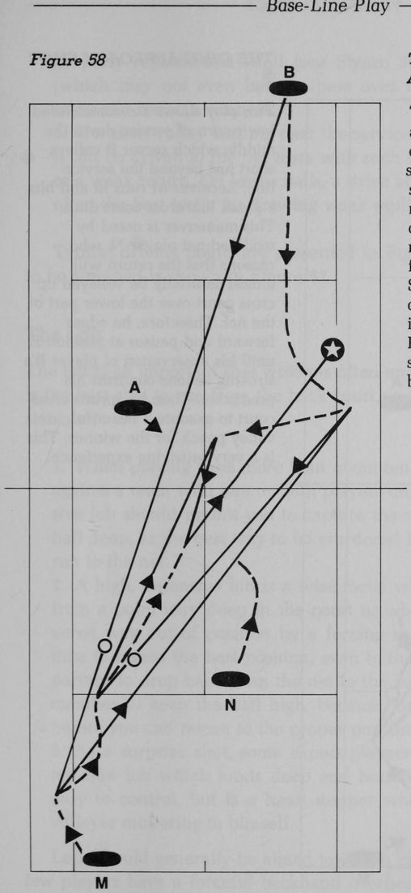
Hình 59. CÚ LÊN LƯỚI BẰNG CÚ ĐẨY NHẸ (THE DINK APPROACH SHOT). Pha bóng này cho thấy một cú trả giao bóng thấp được khuyến nghị xuống giữa sân, và người giao bóng B vô-lê ngắn xuống ngay phía sau vạch giao bóng. Người trả giao bóng M chạy vào và đánh một cú đẩy nhẹ chéo sân thấp tuyệt vời. Thao tác này được người đánh lưới ở vị trí điều chỉnh N chú ý, người này lý luận rằng cú trả bóng gần như chắc chắn sẽ bị vô-lê lên chéo sân qua phần thấp hơn của lưới. Do đó, anh ta tiến lên từng bước và dừng lại ở vị trí E cho đến khi việc quan sát động tác đánh bóng của đấu thủ B xác nhận dự đoán của mình. Rồi anh ta lao chéo sân để thực hiện một cú tuyệt đẹp, một trải nghiệm vô cùng mãn nguyện.
Figure 59 THE DINK APPROACH SHOT This play shows a recommended low return of service down the middle which server B volleys short just beyond the service line. Receiver M runs in and hits a great, low cross-court dink. This maneuver is noted by modified net player N, who reasons that the return will almost assuredly be volleyed up cross court over the lower part of the net. Therefore, he edges forward and pauses at position E until his observation of player B’s stroking actions confirms his prediction. Then he sprints cross court to execute a beautiful is a very satisfying experience.
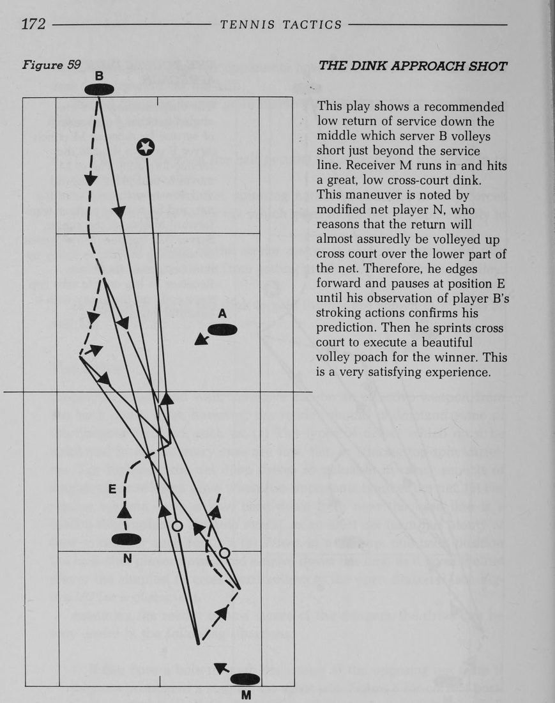
Base-Line PlayBase-Line Play
được định vị lại đúng đắn (xem Hình 30), thì những cú đánh dọc biên (mà thậm chí có thể không cần phải bay qua lưới) hoặc chéo sân gắt có thể trở thành những cú giành điểm. 4. Nếu một cú vô-lê ngắn rơi gần vạch giao bóng nảy lên khá cao, nó có thể bị đánh mạnh vào đội ở trên lưới với tốc độ đủ để khơi ra một lỗi hoặc một cú trả bóng yếu. Với những quả bóng thấp hơn, đánh bóng vào vùng bụng của đối thủ thường là chiến thuật tốt nhất để tạo ra những cú trả bóng yếu. Những điểm bóng đánh mạnh điển hình được trình bày trong các Hình 60 và 61. Và một điểm cần tránh được trình bày trong Hình 62. Cú bổng (the lob). Cú bổng là một cú đánh quan trọng thường bị sử dụng chưa đủ trong đánh đôi. Nó là cú đánh tốt nhất để dùng từ cuối sân trong những tình huống sau: 1. Khi đánh bóng từ cách vạch cuối sân hơn khoảng mười foot về phía trong, đối đầu với một đội có một hoặc cả hai đấu thủ chen chúc ở lưới, thì một cú bổng tấn công nên cho phép bạn chiếm được lưới. Hãy nhớ đánh bóng sâu, vì cách chắc chắn nhất để bị giết chết một cách hợp lệ là đánh bổng ngắn rồi chạy lên lưới. 2. Một cú bổng cao phòng ngự là chiến thuật khôn ngoan khi cú trả bóng được đánh từ một điểm rất sâu trong sân hoặc khi người đánh bóng bị một cú đánh gây sức ép lùa ra khỏi vị trí. Nó cho đội của bạn thời gian giành lại vị trí tốt nhất, thậm chí cho phép người đồng đội của bạn lùi từ lưới về vạch cuối sân nếu cần thiết. Hãy nhớ giữ bóng cao, vì những cú bổng thấp sẽ bị kết liễu trước khi bạn có thể trở lại vị trí thích hợp. 3. Như một cú đánh bất ngờ, một số tay vợt lão luyện giả vờ đánh mạnh và dùng một cú bổng xoáy lên rơi sâu và nảy ra ngoài tầm với. Nó không dễ kiểm soát, nhưng khi thành công thì là một cú làm tim ngừng đập, khiến người vô-lê lẩm bẩm một mình. Những cú bổng nói chung nên được nhắm về phía trái tay của đối thủ, vì ít tay vợt có cú đập bóng trên cao trái tay mạnh mẽ. Thực tế, một số tay vợt tận dụng điều này bằng cách đánh một cú bổng thấp buộc người đánh lưới phải di chuyển vài bước để đánh một cú vô-lê trái tay cao. Người đánh bổng tiếp tục tiến lên vị trí trên lưới và vô-lê cú trả bóng. Trong lúc khởi động cho một trận đấu, hãy chú ý kỹ đến sức mạnh và
properly repositioned itself (see Figure 30), drives down the line (which may not even have to pass over the net) or sharply cross court can become winners. 4. If a short volley landing near the service line bounces fairly high, it can be driven at the net team with such speed as to elicit an error or a weak return. On lower balls, a drive at the opponent’s midriff is often the best tactic for drawing weak replies. Typical driving points are presented in Figures 60 and 61. And one to be shunned is shown in Figure 62. The Lob The lob is an important shot which is often under-utilized in doubles. It is the best shot to use from the back court under the following circumstances: 1. When playing from more than about ten feet inside the base line against a team with one or both players crowding the net, an offensive lob should permit you to capture the-net. Remember to hit the ball deep, as the best way to be murdered legally is to lob short and run to the net. 2. A high, defensive lob is a wise tactic when the return is played from a point very deep in the court or when the striker is maneuvered way out of position by a forcing shot. It permits your team time to regain the best position, even to the extent of allowing your partner to drop back from the net to the base line if necessary. Remember to keep the ball high, because low lobs will be put away before you can return to the proper position. 3. As a surprise shot, some expert players fake a drive and use a top-spin lob which lands deep and bounds out of reach. It is not easy to control, but is a heart-stopper when it works, leaving the volleyer muttering to himself. Lobs should generally be aimed toward a player’s backhand side, as few players have a forceful backhand overhead. In fact, some players take advantage of this by hitting a low lob which forces the net player to move a few steps to hit a high backhand volley. The lobber keeps moving forward to net position and volleys the return. In warming up for a match, take careful note of the strength and
Hình 60. ĐÁNH MẠNH XUYÊN QUA TRUNG TÂM. Điểm bóng này trình bày một tình huống thường gặp trong đánh đôi. Người trả giao bóng M đã thực hiện cú trả giao bóng chéo sân tiêu chuẩn, và người giao bóng B đã đáp trả bằng cú vô-lê tiêu chuẩn gần giữa sân, nhưng hơi nông. Người trả giao bóng M chạy lên để đánh cú trả bóng và nhận thấy rằng người giao bóng B hơi chậm trong việc trở về vị trí vô-lê cơ bản, và rằng người đánh lưới A chưa di chuyển đủ để bọc lót. Người trả giao bóng M nhanh chóng di chuyển để đánh quả bóng thấp và mạnh xuyên qua giữa sân trước khi khoảng trống dễ bị tổn thương đó bị khép lại.
Figure 60 DRIVING THROUGH THE _ MIDDLE This point presents a situation often encountered in doubles. Receiver M has played the standard cross-court return of service, and server B has replied with the standard volley near the center, but somewhat shallow. Receiver M runs forward to strike the return and notices that | server B is a little slow in getting back to the basic volleying position, and that net man A has not moved enough to cover the / A receiver M moves rapidly to drive the ball low and hard through the middle before the vulnerable gap can be closed. et ae gio ee. rae } X
Base-Line PlayBase-Line Play
Hình 61. CÚ ĐÁNH MẠNH XOÁY LÊN (TOP-SPIN DRIVE). Điểm bóng đặc biệt này hóa ra lại là điểm trận đấu đã giành chiến thắng trong một Vòng Thách đấu Davis Cup (Davis Cup Challenge Round). Người trả giao bóng M đánh một cú trả giao bóng chéo sân thường lệ và người giao bóng B vô-lê an toàn xuống giữa sân. Vào lúc này, người đánh lưới A cảm nhận rằng cú trả bóng của đấu thủ M sẽ là cú đẩy nhẹ chéo sân nhằm làm đấu thủ B bối rối. Trong khi lối suy nghĩ này không thể bị chê trách, thì sai lầm mà người đánh lưới A phạm phải là anh ta di chuyển vào giữa sân để cắt đón cú trả chéo sân được dự đoán sớm hơn một phần giây. Người trả giao bóng M bắt được chuyển động này trong tầm nhìn ngoại vi vô cùng quan trọng của mình, giữ được thăng bằng và các lựa chọn, và có thể đổi hướng bằng cách vươn vòng qua quả bóng và hướng một cú đánh mạnh xoáy lên dọc biên về phía sau lưng đấu thủ A để có một chiến thắng rực rỡ.
Figure 61 . TOP-SPIN DRIVE This particular point proved to be the match point which won a | Davis Cup Challenge Round. Receiver M hits a routine cross-court return of service which server B volleys safely Vv down the center. At this moment * \ net player A senses that the reply by player M will be the court dink aimed at embarrassing server B. While this thinking cannot be faulted, the mistake made by player A was that he moved to the center to cut off the expected cross-court return a split second too soon. Receiver M caught this motion in his allimportant peripheral vision, retained his balance and options, and was able to change directions by reaching around the ball and directing a top-spin drive down the line behind player A for a splendid win. “| N “VW \ \
ĐƯỜNG CHÉO SÂN RỘNG MỞ Pha bóng cụ thể này là tiêu biểu cho những lựa chọn chiến thuật đáng chê trách, nhưng dù vậy vẫn thường thấy trong các trận đấu cuối tuần. Chúng tôi trình bày nó ở đây với hy vọng bạn sẽ loại nó vĩnh viễn khỏi vốn cú đánh của mình. Sau khi người giao bóng B vô-lê cú trả giao bóng theo hướng chéo sân, đấu thủ M quyết định thử luồn một cú đánh dọc biên vượt qua người đánh lưới A. Nhưng anh ta quên hai điều. Thứ nhất, đây là phần cao nhất của lưới, nên cú đánh từ cuối sân của anh ta buộc phải cao. Và thứ hai, khi đồng đội N của anh ta ở vị trí lưới điều chỉnh, đội của anh ta dễ bị tổn thương trước một cú vô-lê chéo sân đơn giản vào khoảng chéo sân rộng mở. Đó chính xác là điều mà người đánh lưới A đầy biết ơn thực hiện. Thời điểm duy nhất tốt để thực hiện miếng đánh này là khi người đánh lưới A bắt đầu cắt bóng (poach) quá sớm. Ngay cả khi đó bạn cũng phải chắc chắn rằng anh ta không chỉ đang cố lừa bạn thực hiện cú trả bóng dọc biên.
THE OPEN DIAGONAL This particular point is representative of deplorable tactical choices, but nevertheless is often observed in weekend tennis matches. We show it here in the hope you will drop it forever from your repertoire of shots. After server B volleys the return of service cross court, player M decides to try to slip a shot down the alley past net player A. But he forgets two things. First, this is the highest part of the net, so his drive must be high. And, second, with his partner N in the modified net position, his team is vulnerable to a simple cross-court volley into the open diagonal. That is exactly what grateful net man A executes. The only good time to make this play is when net player A starts to poach prematurely. Even then you have to be sure he is not just trying to fool you into making the down-the-line return.
Base-Line PlayBase-Line Play
Hình 63 CÚ BỔNG TẤN CÔNG Trong pha bóng này, người trả giao bóng M thực hiện một cú đẩy nhẹ (dink) trả giao bóng tuyệt vời, buộc người giao bóng B phải vô-lê chéo sân từ gần lưới. Khi đấu thủ M chuẩn bị đón cú đánh, anh ta liếc nhìn đấu thủ B và nhận thấy anh ta vẫn còn ở gần lưới và đã để hở một khoảng trống ở giữa sân. Vì vậy, đấu thủ M giả vờ đánh một cú từ cuối sân rồi tung ra một cú bổng tấn công bất ngờ sâu vào góc sân để giành điểm.
Figure 63 THE OFFENSIVE LOB In this point receiver M makes an excellent dink return of service which forces server B to volley cross court from close to the net. As player M prepares to cover the shot, he glances at player B and notes he is still close to the net and has left an opening in the middle. Therefore, player M fakes a drive and hits a surprise offensive lob deep to the corner for the win.
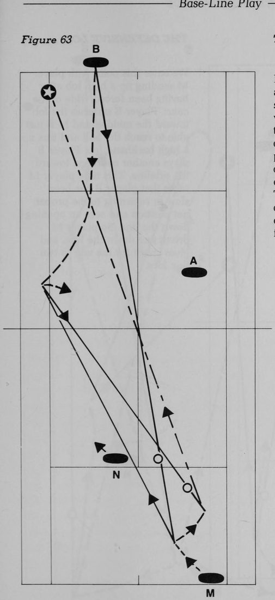
Hình 64 CÚ BỔNG PHÒNG THỦ Chúng ta bước vào pha bóng này khi đấu thủ M tung một cú bổng cao sau khi đã bị đẩy ra xa sân. Đấu thủ B đập bóng trên cao (smash) cú bổng về phía giữa sân, và M chỉ vừa đủ với tới bóng để tung lên một cú bổng trái tay cao. Đấu thủ B đánh thêm một cú đập bóng trên cao về phía đường biên dọc. Lần này đấu thủ M nhận thấy rằng đấu thủ B đã chậm chạp trong việc trở về đúng vị trí lưới và thấy một khoảng trống dọc biên. Thế là đấu thủ M đánh một cú dọc biên, và ghi công cho chiến thắng này là nhờ hai cú bổng tuyệt vời.
Figure 64 THE DEFENSIVE LOB We enter this point with player M sending up a high lob after having been forced wide of the court. Player B smashes the lob toward the middle, and M is just able to reach the ball and toss up a high backhand lob. Player B plays another overhead toward the sideline. This time player M notes that player B has been slow in returning to the proper net position and sees an opening down the line. So player M drives one down the line, and gives credit for the win to two fine lobs.
Base-Line PlayBase-Line Play
Hình 65 LỐI ĐÁNH PHÒNG THỦ TỐT CỦA ĐỘI B Pha bóng cụ thể này là một pha tuyệt vời để khép lại phần sơ đồ của cuốn sách này. Nó bắt đầu trong tình thế tưởng như thảm họa, nhưng được cứu thoát khỏi hiểm nguy nhờ lối đánh đồng đội xuất sắc. Người giao bóng B đưa một cú giao bóng nhanh tuyệt vời vào góc trái tay, suýt chút nữa ghi điểm trực tiếp (ace) trước người trả giao bóng M. Anh ta chỉ vừa đủ với tới bóng và chỉ có thể tung lên một cú bổng phòng thủ ngắn. Đấu thủ M thấy rằng người giao bóng B đang chuẩn bị đập bóng trên cao xuống theo hướng người đánh lưới điều chỉnh N. Trong tích tắc, đấu thủ M quyết định rằng mình sẽ có cơ hội cứu bóng tốt hơn, nên anh ta hét lên “Của tôi” và lao về phía đường biên dọc trong khi người đánh lưới N nhẹ nhõm đổi hướng và di chuyển để bảo vệ bên thuận tay. Đấu thủ B đã dấn thân và tiếp tục đập bóng trên cao xuống dọc biên. Đấu thủ M thực hiện một pha cứu bóng phi thường và tung lên một cú bổng phòng thủ cao. Khi làm vậy, anh ta nhận thấy cú bóng sâu đến mức người đánh lưới A sẽ buộc phải chặn cú đập bóng trên cao theo hướng chéo sân thay vì đập nó thật mạnh. Một ý nghĩ khác lóe lên trong đầu M, và anh ta lao vào lưới ngay khi thấy đấu thủ A đã dấn thân. Anh ta thực hiện một cú vô-lê trái tay đánh theo góc sân tuyệt đẹp để giành điểm, đó là cú đánh xuất sắc thứ hai của anh ta. Đó chính là kiểu pha bóng mà đấu thủ M có thể nhấm nháp thưởng thức trong một thời gian dài!
Figure 65 GOOD DEFENSIVE TEAM B PLAY This particular point is a great one upon which to wind up the diagrams for this book. It begins in apparent disaster, but is pulled out of the fire by brilliant team ] \ play. / ] Server B places an excellent / fast serve into the backhand / corner which almost aces receiver M. He is barely able to reach the ball and can only toss up a short defensive lob. Player M sees that server B is preparing to hit an overhead down in the direction of modified net player N. In a flash player M decides he would have a better chance to retrieve the ball, so he yells “Mine” and sets sail for the sideline while relieved player N reverses direction and moves to protect the forehand side. Player B is committed and proceeds to hit his overhead down the line. Player M makes a fantastic get and sends up a high defensive lob. As he does so, he notes it is so deep that net player A is going to have to block the overhead cross court rather than smash it forcefully. Another thought flashes through M’s head, and he dashes in to net as soon as he sees player A is committed. He pulls off a beautiful backhand angled-volley winner for his second brilliant shot. That is the sort of point player M can savor for some time!
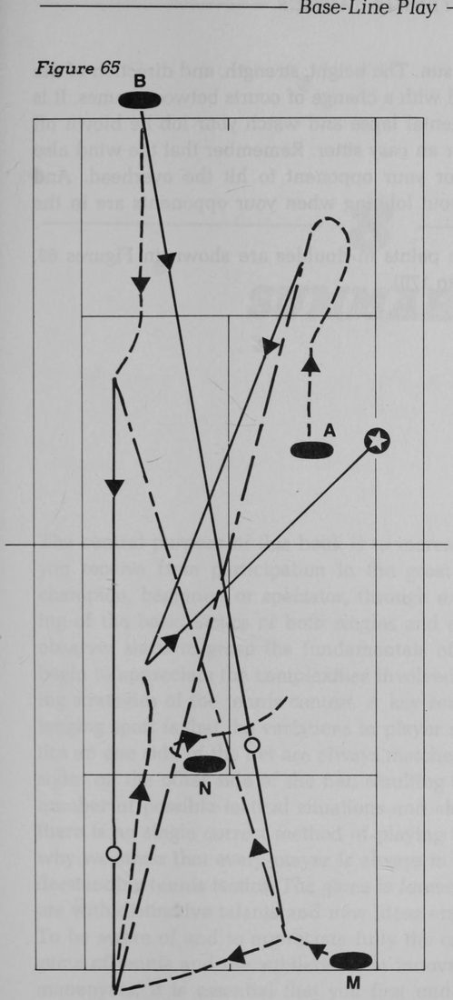
hướng gió và mặt trời. Độ cao, độ mạnh và hướng của cú bổng có thể phải thay đổi khi đổi sân giữa các ván. Thật xấu hổ khi để đầu óc lơ đãng và nhìn cú bổng của mình bị gió thổi bay ra ngoài sân hoặc treo lơ lửng trên không để đối phương dễ dàng kết liễu. Hãy nhớ rằng gió cũng khiến đối phương của bạn khó đập bóng trên cao hơn. Và chẳng có gì là không công bằng khi bạn bổng bóng lúc đối phương đang ở bên sân có nắng. Một số pha bóng đặc trưng từ cuối sân trong đánh đôi được thể hiện ở các Hình 63, 64 và 65 (xem các trang 177 đến 179).
direction of the wind and sun. The height, strength, and direction of the lob may have to be altered with a change of courts between games. It is embarrassing to have a mental lapse and watch your lob be blown off court or hang in the air for an easy sitter. Remember that the wind also makes it more difficult for your opponent to hit the overhead. And there is nothing unfair about lobbing when your opponents are in the sun court. Some typical base-line points in doubles are shown in Figures 63, 64, and 65 (see pages 177 to 179).
Mục đích trọng tâm của cuốn sách này là làm tăng niềm vui và sự thỏa mãn mà bạn nhận được từ việc tham gia vào môn thể thao tuyệt vời này — quần vợt — dù bạn là nhà vô địch, người mới chơi hay khán giả, thông qua việc mở rộng hiểu biết của bạn về những chiến thuật cơ bản của cả đánh đơn lẫn đánh đôi. Một khi một người chơi hay một người quan sát bắt đầu nắm bắt được những nguyên tắc nền tảng của trò chơi, người đó có thể bắt đầu cảm nhận được những phức tạp liên quan và những chiến lược thắng thua của cuộc so tài quần vợt. Một lý do then chốt khiến quần vợt là một môn thể thao đầy thách thức đến vậy là vì những khác biệt về phong cách, năng lực và chiến thuật của người chơi ở một bên lưới luôn được đối chiếu với một tập hợp phong cách khác ở bên kia lưới, dẫn đến một số lượng tình huống chiến thuật và lựa chọn cú đánh gần như không thể tin nổi. Đây là lý do vì sao không có một phương pháp duy nhất đúng để chơi trò chơi này. Và đây cũng là lý do vì sao chúng tôi nhấn mạnh rằng mọi người chơi luôn ở trong giai đoạn học hỏi để hiểu về chiến thuật quần vợt. Trò chơi biến đổi không ngừng khi những người chơi trẻ với tài năng đặc biệt và những ý tưởng mới xuất hiện để đấu nhau. Để nhận thức được và thấu hiểu trọn vẹn sự tiến hóa không ngừng của môn quần vợt cùng những tinh tế mà các đổi mới mang lại cho các thế trận trong thi đấu, điều thiết yếu là trước tiên bạn phải hiểu những nguyên tắc nền tảng nằm dưới các chiến thuật cơ bản. Việc đọc và đọc lại cuốn sách này sẽ giúp mang lại thêm năng lực, niềm vui, sự tận tụy và lòng nhiệt huyết cho việc tham gia quần vợt của bạn. Nếu gợi ý này nghe có vẻ không thực tế hoặc quá mang tính quảng cáo đối với bạn, thì hãy hãy nhớ rằng ngay cả một người chơi và người thầy dày dạn kinh nghiệm như Talbert* cũng luôn đọc lại phần tóm tắt và những phần liên quan khác của các cuốn sách trước trước những trận đấu quan trọng để khơi lại trí nhớ và khơi dậy sự tập trung của mình. Giờ đây ông sẽ thêm cuốn sách này vào phần nghiên cứu trước trận của mình. NHỮNG ĐIỂM CHUNG CỦA ĐÁNH ĐƠN VÀ ĐÁNH ĐÔI Dù chiến thuật đánh đơn và đánh đôi khá khác nhau, hai lối chơi này vẫn có những điểm tương đồng. Hai điểm chúng tôi muốn nhấn mạnh là tính trí tuệ và tốc độ của trò chơi, vì chúng quyết định tầm quan trọng của việc chuẩn bị. Đánh đơn và đánh đôi đều mang tính trí tuệ vì sự đa dạng gần như vô tận của các tình huống chiến thuật mà người chơi gặp phải trong trận đấu, do những điều kiện thay đổi như tốc độ bóng, độ xoáy và độ nảy của bóng, mặt sân, vị trí tương đối của các đấu thủ, lựa chọn cú đánh, thời tiết, v.v. Ứng với mỗi cách phòng thủ đều có một cách tấn công, và ứng với mỗi cách tấn công đều có một cách phòng thủ. Để bắt đầu làm chủ chiến thuật, điều thiết yếu là phải xây dựng trong não bộ, thông qua kinh nghiệm thi đấu, sự huấn luyện và quan sát, một kho tàng đồ sộ gồm những lựa chọn chiến thuật tốt và xấu. Cả hai lối chơi đều nhanh. Thời gian bóng bay thường rất nhiều lần ngắn hơn một giây, nên người chơi phải liên tục đưa ra những quyết định tức thời. Điều này bắt đầu nghe như một nhiệm vụ gần như bất khả thi đối với não bộ: phân loại tất cả các biến số và đưa ra quyết định chiến thuật đúng đắn trong một phần nhỏ của giây! Và điều đó sẽ đúng là bất khả thi, trừ khi người chơi chuẩn bị trước. Việc chuẩn bị bắt đầu bằng sự phán đoán trước. Bước đầu tiên trong việc phán đoán trước là hiểu biết về loại cú đánh bạn vừa thực hiện và khoảng các cú trả bóng có khả năng được đối phương thực hiện. Sau đó, bằng cách nghiên cứu các động tác đánh bóng, thói quen và những cú đánh ưa thích của đối phương, bạn có thể thu hẹp khoảng khả năng và ước lượng tốc độ, độ xoáy, độ cao, hướng và độ sâu của cú trả bóng. Nếu không có khả năng phán đoán trước, hiệu quả của bạn trong việc hoạch định và thực hiện những cú trả bóng thích hợp sẽ bị giảm sút nghiêm trọng. Một khi đã chẩn đoán được loại cú đánh đang nhắm về phía mình, bạn phải hướng sự chú ý vào quả bóng và bắt đầu di chuyển để * William F. Talbert từng nằm trong top mười tay vợt đánh đơn trong mười ba năm, từng bốn lần vô địch đánh đôi nam nước Mỹ và bốn lần vô địch đánh đôi hỗn hợp. Ngoài ra, ông còn là đội trưởng đội Davis Cup của Mỹ đưa đội đến chiến thắng.
The central purpose of this book is to increase the joy and satisfaction you receive from participation in the great game of tennis, whether champion, beginner, or spectator, through extending your understanding of the basic tactics of both singles and doubles. Once a player or observer starts to grasp the fundamentals of the game, he or she can begin to appreciate the complexities involved and the winning and losing strategies of the tennis contest. A key reason tennis is such a challenging sport is that the variations in player style, capabilities, and tactics on one side of the net are always matched against a different set of styles on the other side of the net, resulting in an almost unbelievable number of possible tactical situations and shot selections. This is why there is no single correct method of playing the game. And this is also why we stress that every player is always in the learning stages of understanding tennis tactics. The game is forever changing as young players with distinctive talents and new ideas emerge to duel one another. To be aware of and to appreciate fully the continuing evolution of the game of tennis and the subtleties that innovations bring to match-play maneuvers, it is essential that you first understand the fundamentals which underlie the basic tactics. Reading and rereading this book should assist in bringing added competence, enjoyment, dedication, and enthusiasm to your tennis participation. If the suggestion sounds unrealistic or too promotional to you, just remember that even as experienced a player and teacher as Talbert* always reads over the summary and other pertinent portions of the earlier books before key matches in order to jog his memory and inspire his concentration. Now he will add this book to his prematch study. COMMON ASPECTS OF SINGLES AND DOUBLES While singles and doubles tactics are quite diverse, the games do have similarities. The two we would like to stress are the intellectual nature and the speed of the games, since they dictate the importance of preparation. Singles and doubles are both intellectual because of the essentially infinite variety of tactical situations a player encounters in matches as a consequence of varying conditions such as ball speed, spin, and bounce, court surface, relative positions of players, stroke selection, weather, etc. There is an attack for every defense and a defense for every attack. To begin to master tactics it is essential to build up in the brain, through playing experience, instruction, and observation, a vast inventory of good and bad tactical choices. Both games are fast. The travel time of the ball is very often less than one second, so the player must continually make instantaneous decisions. It begins to sound like an almost impossible task for the brain to sort out all the variables and crank out the proper tactical decision in a fraction of a second! And it will be, unless the player makes advance preparations. Preparation begins with anticipation. The first step in anticipation is the knowledge of the type of shot you have played and the range of replies likely to be made by your opponent. Then, by studying his stroking motions, habits, and favorite shots, you can narrow the range of possibilities and estimate the speed, spin, height, direction, and depth of the return. Without anticipatory capabilities, your effectiveness in planning and executing appropriate returns is severely blunted. Once you have diagnosed the type of shot being aimed in your direction, you must turn your attention to the ball and begin moving to * William F. Talbert was ranked in the first ten in singles for thirteen years, was the U.S. men’s doubles champion four times, and mixed doubles champion four times. In addition, he captained the U.S. Davis Cup Team to victory.
8. Tổng Kết
SummarySummary
đón cú đánh trong khi hoạch định loại cú trả bóng mà mình nên thực hiện. Vì việc hoạch định này phải được hoàn thành gần như tức thời, não bộ của bạn phải có khả năng cảm nhận toàn bộ tình huống rồi truyền đi một mệnh lệnh trong khoảng thời gian vô cùng ngắn. Cách duy nhất để bạn làm được điều này một cách hiệu quả là đã phát triển, qua huấn luyện và kinh nghiệm, một kho tàng kiến thức chiến thuật. Khi đó não bộ có thể nhanh chóng nhận ra kiểu thế trận, nhớ lại điều gì đã xảy ra trước đó trong trận này hay những trận khác trong hoàn cảnh tương tự, và đưa ra một quyết định lựa chọn cú đánh, thậm chí cả một chuỗi lựa chọn cú đánh, dẫn đến việc thắng hay thua một điểm. Tất cả thông tin này được lưu trữ cẩn thận trong phần “kho chiến thuật quần vợt” của não bộ. Những người chơi vĩ đại sử dụng bộ máy tính kỳ diệu của con người đó để hình thành những lựa chọn chiến thuật đúng đắn gần như không bao giờ sai. Dù tài năng đó là một món quà trời cho, bất kỳ người chơi nào cũng có thể cải thiện các lựa chọn cú đánh của mình thông qua việc nghiên cứu những người chơi giỏi, kinh nghiệm thi đấu, đọc sách và tập luyện. Mục tiêu là làm cho miếng đánh tốt nhất trở nên gần như tự động. Đương nhiên, bạn phải có khả năng thực hiện cú đánh mong muốn để triển khai chiến thuật đó. Trong cả đánh đơn lẫn đánh đôi, điều này đòi hỏi phải kết hợp sự chuẩn bị chiến thuật mà chúng ta vừa mô tả với sự chuẩn bị về mặt sản sinh cú đánh. Cùng nhau, chúng tạo ra khả năng bao quát sân, bộ chân vững vàng, sự thăng bằng và những động tác uyển chuyển, dẫn đến sự xuất sắc trong việc thực hiện cú đánh. Việc huấn luyện về sản sinh cú đánh là hữu ích vì người khác dễ nhận ra những khiếm khuyết hơn chính bản thân người chơi. Bạn nên hướng tới những cú đánh đơn giản, không bị lộn xộn bởi những động tác không cần thiết. Cuối cùng, cả đánh đơn lẫn đánh đôi đều là những trò chơi dựa trên xác suất, và xác suất nghiêng về phía người tấn công. Vị trí tấn công tốt nhất là ở lưới. Vì vậy, trong cả hai lối chơi, việc lên lưới sau những cú lên lưới hiệu quả là mục tiêu hàng đầu. CHIẾN THUẬT ĐÁNH ĐƠN Nếu chúng tôi có thể in dấu không phai chỉ hai từ vào tâm trí của người chơi đánh đơn đang khao khát tiến bộ, chúng tôi sẽ chọn sự ổn định, tức là giữ bóng trong cuộc, và độ sâu. Sự ổn định tránh được những lỗi, vốn là nguyên nhân khiến bạn thua từ 40 đến 60 phần trăm số điểm, tùy theo việc chúng được xếp là lỗi không bị sức ép hay lỗi do bị sức ép cộng với không bị sức ép. Và độ sâu là xương sống của hầu hết các cú giao bóng, cú đánh từ cuối sân và cú vô-lê tấn công thành công. Cú giao bóng là cú đánh quan trọng nhất trong lối quần vợt tấn công hiện đại. Một cú giao bóng mạnh là điều bắt buộc — nó đặt người đánh bóng vào thế tấn công, và tự nó phải mở ra cánh cửa dẫn đến chiến thắng trong khoảng 40 phần trăm số điểm bằng cách buộc đối phương trả giao bóng yếu hoặc mắc lỗi. Cú giao bóng mạnh có hiệu quả gấp đôi trên Sân Nhanh so với trên sân đất nện chậm hay sân hỗn hợp. Những điều chính cần nhớ là đưa được quả giao bóng đầu tiên vào cuộc và giữ mọi cú giao bóng đều sâu. Các chuyên gia làm được cả hai điều này khoảng 70 phần trăm số lần. Dấu hiệu thực sự của một người giao bóng hàng đầu là một người chơi có thể giữ được quả giao bóng thứ hai sâu và tránh xa điểm mạnh của đối phương. Những cú giao bóng đầu tiên tốt và những đường bóng sâu tốt, dù là giao bóng đầu hay giao bóng thứ hai, cuối cùng đều mang lại điểm thắng trong khoảng 75 phần trăm trường hợp. Trên Sân Nhanh, những người chơi hàng đầu lên lưới nhanh theo mọi cú giao bóng và cố gắng vô-lê cú trả giao bóng đi giành điểm. Những cú giao bóng đầu tiên thường nhắm về phía các đường biên dọc để mở rộng sân, còn những cú giao bóng thứ hai thì nhắm vào góc trái tay. Trên Sân Chậm, người giao bóng thường đánh vào góc trái tay và chỉ thỉnh thoảng lên lưới theo cú giao bóng, vì những cú trả giao bóng có hiệu quả hơn trên những mặt sân như vậy. Cú trả giao bóng có lẽ là cú đánh khó thực hiện ổn định nhất trong quần vợt. Nhưng bạn phải đánh nó ổn định nếu bạn muốn có cơ hội phá được cú giao bóng của đối phương và thắng một trận đấu. Chỉ cần đưa được bóng trở lại thôi cũng xoay chuyển tỷ lệ thắng điểm từ chỗ bất lợi hai hay ba ăn một chống lại bạn thành gần như cân bằng! Trước tiên, bạn phải học cách tự định vị để đón cú giao bóng. Có nhiều yếu tố cần cân nhắc, nhưng tùy theo khả năng của người giao bóng, nhìn chung nên đứng cách vạch cuối sân từ một đến ba feet vào phía trong theo một đường thẳng vẽ từ vị trí người giao bóng đi qua một điểm ở giữa ô giao bóng. Với quả giao bóng thứ hai, thường tốt nhất là tiến thêm một đến ba feet nữa. Những vị trí đón bóng này rút ngắn quãng đường bạn phải di chuyển sang một bên này hay bên kia để đỡ một cú giao bóng xoáy éo, đồng thời cho phép bạn đánh bóng sớm hơn và vào lúc bóng đang lên để gây gấp gáp cho người giao bóng. Trước một người giao bóng hàng đầu, bạn cũng phải cố phán đoán qua động tác tung bóng và động tác của anh ta xem anh ta sẽ giao loại bóng gì, để khởi đầu đúng hướng mà với tới một quả đạn bay 100 dặm một giờ. Những điểm ngắm tốt nhất cho một cú trả bóng thấp trước một người giao bóng lao lên lưới (Hình 15) và cho một cú trả bóng sâu và cao hơn trước một người giao bóng ở lại vạch cuối sân (Hình 16) cần được ghi nhớ. Vị trí đánh lưới trong đánh đơn chỉ là vị trí tấn công tốt nhất khi bạn đã dọn đường bằng một cú lên lưới hiệu quả — thực tế, bạn nên ghi nhớ rằng một cú vô-lê thắng điểm thực chất là sự kết hợp giữa cú lên lưới và cú vô-lê. Hầu hết những cú lên lưới hiệu quả nhất, dù là giao bóng, trả giao bóng, cú đánh từ cuối sân hay cú bổng, đều được đánh sâu. Lối đánh lưới
intercept the shot while planning the kind of reply you should make. Since this planning has to be accomplished almost instantaneously, your brain must be able to sense the entire situation and then communicate a command in an incredibly short time. The only way you can do this efficiently is to have developed through training and experience a storehouse of tactical knowledge. The brain can then quickly recognize the pattern of play, remember what happened before in this or other matches under similar circumstances, and crank out a shot-selection decision, or even a sequence of shot selections, leading to the winning or losing of a point. All of this information is carefully stored in the tennistactics inventory portion of the brain. The great players utilize that remarkable human computer to formulate correct tactical choices almost invariably. While that talent is a heavenly gift, any player can improve upon his or her shot selections through study of good players, matchplay experience, reading, and practice. The object is to make the best play almost automatically. Naturally, you have to be able to execute the desired shot to carry out the tactics. In both singles and doubles this requires combining the tactical preparation we have just described with stroke-production preparation. Together they produce the court coverage, sound footwork, balance, and fluid motions which lead to excellence in shot making. Instruction in stroke production is helpful because it is easier for others to observe flaws than for the player. You should strive for simple strokes not cluttered with unnecessary motions. Finally, both singles and doubles are percentage games, and the percentages favor the attacker. The best attacking position is at the net. Therefore, in both games getting to net behind effective approach shots is a primary objective. SINGLES TACTICS If we could imprint indelibly just two words on the mind of the aspiring singles player, we would select steadiness, or keeping the ball in play, and depth. Steadiness avoids errors, which are responsible for losing from 40 to 60 percent of points, depending on whether classified as unforced or as forced-plus-unforced. And depth is the backbone of most successful attacking service, ground, and volley strokes. The serve is the single most important stroke in modern offensive tennis. A strong serve is a must—it puts the striker on the offensive, and should of itself open the door for wins in about 40 percent of points by forcing weak returns of service or errors. The big serve is twice as effective on fast courts as on slow clay or composition courts. The primary things to remember are to get the first serve in and to keep all serves deep. The experts accomplish both some 70 percent of the time. The real hallmark of a top server is a player who can keep the second serve deep, and away from his opponent’s strength. Good first serves and good deep deliveries, whether first or second serves, ultimately produce a won point in about 75 percent of the cases. On fast courts the top players follow every serve rapidly to the net and attempt to volley the return away for a winner. First serves are usually aimed toward the sidelines, to open up the court, and second serves at the backhand corner. On slow courts the server usually hits for the backhand corner and only occasionally follows serve in to the net position, since returns of service are more effective on such surfaces. The return of service is probably the most difficult stroke in tennis to hit consistently. But hit it consistently you must if you are going to stand a chance of breaking your opponent’s serve and winning a match. Just getting the ball back turns the odds of winning the point from two or three to one against you to about even! First, you have to learn how to position yourself for receiving the serve. There are a number of factors to consider, but, depending on the ability of the server, it is generally desirable to stand one to three feet inside the base line on a straight line drawn from the position of the server through a point in the center of the service court. On a second serve it is ordinarily best to move in another one to three feet. These receiving positions shorten the distance you have to move to one side or the other for a breaking serve, and allow you to hit the ball sooner and on the rise in order to hurry the server. Against a top server, you must also try to anticipate from his toss and actions what type of serve he will hit, in order to get a start in the right direction to reach a 100-mile-an-hour bullet. The best aim points for a low return against a net-rushing server (Figure 15) and for a deep and higher return against a server who stays on the base line (Figure 16) should be memorized. The net position in singles is the best attacking position only when you have prepared the way with an effective approach shot—in fact, you should keep in mind that a winning volley is really an approachshot-volley combination. Most effectual approach shots, whether serves, returns of service, ground strokes, or lobs, are hit deep. Net play
Tóm tắt nên chiếm từ 20 đến 35 phần trăm tổng số cú thắng điểm trong đánh đơn. Để hưởng lợi từ vị trí tấn công ở lưới, điều quan trọng là phải vô-lê sâu, vì khi đó đối phương rất khó đánh vượt qua bạn từ phía cuối sân. Ngược lại, nếu bạn vô-lê ngắn gần vạch giao bóng, bạn đã chuyển tỷ lệ thắng điểm sang cho đối phương. Bạn nên học thuộc Hình 28. Khi cả hai đấu thủ đều ở vạch cuối sân, có một nguyên tắc bao trùm: giữ bóng sâu. Toàn bộ lối đánh từ cuối sân là việc đấu kiếm cho đến khi bạn có thể buộc đối phương phải đánh một quả bóng ngắn. Điều này mang lại cho bạn cơ hội tiến vào và đánh một cú đánh gây sức ép, sâu hoặc đánh chéo góc, mà bạn có thể biến thành một điểm thắng. (Mạo hiểm quá khi cố lên lưới từ vị trí sâu trong sân.) Thực tế, khoảng bảy trong tám điểm ở cuối sân được thắng sau khi một trong hai đấu thủ đánh một cú bóng ngắn. Đấu thủ kia sau đó có thể tận dụng khoảng hở này theo hai cách. Trong khoảng hai trong ba trường hợp, điểm được thắng bằng một cú đánh gây sức ép mà sẽ ăn một cú đặt bóng hiểm hoặc khiến đối phương mắc lỗi. Trong trường hợp thứ ba, đấu thủ có thể đánh một cú gây sức ép, lên lưới theo sau nó, rồi vô-lê cú trả bóng đi để giành điểm. Trong những pha bóng đôi công từ cuối sân, hãy giả định rằng mỗi cú đánh đều sẽ được trả lại và tập trung phán đoán hướng và độ sâu của nó để bạn có thể di chuyển đến đúng vị trí. Cuối cùng, thật khôn ngoan khi nhớ đến ảnh hưởng của mặt sân đối với chiến thuật. Một người chơi đã tóm gọn điều này như sau: “Ở đây trên sân cỏ, bạn giao một cú bóng mạnh, chạy lên lưới, đánh một cú vô-lê dứt khoát, và điểm kết thúc. Trên sân đất nện của chúng tôi, bạn có thể giao cú bóng mạnh đó, chạy lên lưới, đánh cú vô-lê dứt khoát đó, và trời ạ, điểm chỉ vừa mới bắt đầu!” CHIẾN THUẬT ĐÁNH ĐÔI Bước đầu tiên để chơi đánh đôi giỏi là lập thành một cặp đôi. Phải mất ít nhất hai hoặc ba năm tập luyện, thi đấu và hoạch định cùng nhau để tạo thành một đội phối hợp nhịp nhàng trong tấn công và phòng thủ. Đó là vì có nhiều yếu tố liên quan, chẳng hạn như biết loại cú đánh mà thành công của một cặp đánh đôi. Những cặp nổi tiếng nhất thường gồm một người kiến tạo lối chơi, người dụ đối phương vào một cú trả bóng yếu bằng sự khéo léo, động tác giả và độ xoáy, hay kéo họ ra khỏi vị trí bằng những toan tính được hoạch định kỹ lưỡng, cùng một người chơi sức mạnh có tầm với rộng, người tận dụng tối đa mọi cơ hội được tạo dựng bằng cách kết liễu bằng một cú thắng điểm. Cú giao bóng thường được coi là cú đánh quan trọng nhất trong đánh đôi. Nếu đối phương không thể phá được cú giao bóng của bạn, họ không thể đánh bại bạn! Đội giao bóng có một lợi thế tấn công mà phải được nắm giữ một cách bền bỉ. Khoảng 30 phần trăm tất cả các cú đánh được sử dụng trong đánh đôi, và 20 phần trăm tất cả các cú thắng điểm, là những cú giao bóng. Đánh mất lợi thế tấn công và để thua một ván giao bóng là một trong những tội lỗi nghiêm trọng nhất trong đánh đôi, vì mất ván giao bóng thường dẫn đến mất cả một ván đấu. Để tận dụng được cú giao bóng, cú đánh này phải buộc người trả giao bóng trả bóng phòng thủ và cho phép người giao bóng tiến đến cách lưới khoảng mười lăm feet khi anh ta lên lưới theo cú giao bóng của mình vào vị trí vô-lê. Vì cả hai mục đích đó, tốt nhất là phát triển một cú giao bóng xoáy kiểu Mỹ đáng tin cậy, cú này sẽ đưa quả bóng đầu tiên vào cuộc khoảng 80 phần trăm số lần (người giao bóng có cơ hội thắng điểm với một cú giao bóng đầu tốt gần như cao gấp đôi so với một cú giao bóng thứ hai tốt). Mục tiêu ưu thích của cú giao bóng là sâu vào góc trái tay của người trả giao bóng. Cú giao bóng xoáy nên được đánh ở khoảng ba phần tư tốc độ để cho người giao bóng sự kiểm soát và đủ thời gian để lên phía trên lưới, nhờ đó anh ta có thể vô-lê một cú trả giao bóng kém theo hướng tấn công xuống. Đồng đội của người giao bóng ở lưới phải để ý điểm nảy của cú giao bóng, quan sát người trả giao bóng để phán đoán loại và hướng của cú trả giao bóng, rồi di chuyển đến đúng vị trí để thiết lập đội hình tấn công tốt nhất. Nhìn chung, anh ta sẽ di chuyển về phía giữa sân. Anh ta phải sẵn sàng cắt bóng (poach) để kết liễu những cú trả giao bóng yếu, và di chuyển nhanh để đỡ những cú trả bóng là cú bổng tấn công hiệu quả khi bóng được đánh qua đầu anh ta hoặc qua đầu người giao bóng đang tiến lên. Người đánh lưới cũng đóng một vai trò quan trọng trong bất kỳ
Summary should account for 20 to 35 percent of all singles winners. To profit from the attacking net position it is important to hit the volley deep, as it is then very difficult for the opponent to pass you from the back court. On the other hand, if you volley short near the service line, you turn the odds of winning over to your opponent. You should memorize Figure 28. When both players are on the base line, there is one overriding rule: keep the ball deep. The whole base-line game consists of fencing until you can force the opponent into hitting a ball short. This provides you with the opportunity of moving in and hitting a forcing shot, deep or angled, which you can turn into a winning point. (It is too risky to try to get in to the net from deep in the court.) Actually about seven out of eight base-line points are won after one of the players hits a short shot. The other player can then take advantage of this opening in two ways. In about two out of three cases the point is won with a forcing shot which will score a placement or elicit an error. In the third case the player can make a forcing shot, follow it in to the net, and then volley away the return for the point. During base-line rallies, assume each shot will be returned and concentrate on anticipating its direction and depth so that you can move to the proper position. Finally, it is wise to remember the effect of court surfaces on tactics. One player put it in a nutshell this way: “Here on grass you hit the big serve, run to the net, punch that crisp volley, and the point is over. On our clay courts you can hit that big serve, run to the net, punch that crisp volley, and, man, the point is just barely beginning!” DOUBLES TACTICS The first step toward playing competent doubles is to form a team. It takes at least two or three years of practicing, playing, and planning together to form a team coordinated on offense and defense. This is because of the many factors involved, such as knowing the type of shot or tactical move your partner will probably employ under a multitude of circumstances so you can optimally position yourself for the expected return, knowing who should take shots hit down the middle, diagnosing together answers for the strategy of the opposition, developing means for exploiting the weaknesses of the adversaries, encouraging one another by “talking it up,” and helping judgment by calling “in,” 99 66 “out,” ” and “back.” Teamwork alone accounts for an estimated 25 percent of the success of a doubles combine. The most famous teams have been composed of a play maker who enticed the opponents into a weak return by finesse, fakes, teasers, and spin, or drew them out of position by well-planned maneuvers, and a rangy power player who took maximum advantage of every engineered opportunity by blasting a winner. The service is usually designated the one most important stroke in doubles. If they can’t break your serve, they can’t beat you! The serving team has an offensive advantage that must be clung to tenaciously. : About 30 percent of all strokes used in doubles, and 20 percent of all winning shots, are serves. Losing the offensive advantage and dropping a service game is one of the cardinal sins of doubles, as loss of service often results in the loss of a set. To make capital of the service, the stroke should force a defensive return by the receiver and permit the server to get within about fifteen feet of the net as he follows his service into the volley position. For both purposes it is best to develop a dependable American twist service that will put the first ball into play about 80 percent of the time (the server has almost twice as good a chance to win the point with a good first service as with a good second service). The preferred target for the service is deep in the receiver’s backhand corner. The twist serve should be hit at about three-fourths speed to give the server control and plenty of time to get on top of the net so that he can volley a poor return of service down offensively. The partner of the server at net must note the bounce point of the service, watch the receiver in order to anticipate the type and direction of the return of service, and then move to the proper spot to establish the best offensive formation. In general his move will be toward the center of the court. He should be prepared to poach to put away weak returns of service, and to move fast to cover effective offensive lob returns when hit over his or the advancing server’s head. The net man also plays an important part in any of the numerous variations of the reverse service formations and the signaled poach plays (Figures 13 and 21). The return of service is the most difficult shot in doubles, as evidenced by the fact that this shot sets the stage for the receiving team, which usually loses seven out of eight games. The most effective return is a low, dipping cross-court dink or top-spin drive that forces the server to volley up and permits the receiving team to move in to the net position to volley offensively. If the receiver can carry out this dual assignment, there is a tremendous payoff because he turns the odds of winning the point from two to one against him to two to one in his favor. To
SummarySummary
giữ đối phương luôn đoán già đoán non, người trả giao bóng thỉnh thoảng phải bổng bóng và đánh dọc biên trước một người đánh lưới đang cắt bóng (poach). Nhưng dù thế nào đi nữa, điều quan trọng nhất là đưa được bóng trở lại, vì luôn có khả năng đội giao bóng mắc lỗi ngay cả với những cú trả bóng yếu ớt nhất. Đồng đội của người trả giao bóng ở vị trí lưới điều chỉnh (gần điểm T) phải nhanh chóng để ý loại và hướng của cú trả giao bóng, thoáng thấy mọi động thái cắt bóng của người đánh lưới đối phương, và quan sát loại cú vô-lê đầu tiên mà người giao bóng sắp đánh. Được cảnh báo như vậy, người đánh lưới điều chỉnh thường có thể thực hiện những pha cứu bóng không tưởng hoặc lơi về giữa sân để kết liễu những cú vô-lê đầu tiên yếu của người giao bóng. Mỗi khi đội trả giao bóng còn phân vân, đánh thấp, vào giữa sân có lẽ là câu trả lời tốt nhất. Lối đánh lưới là điều mang lại chiến thắng trong các trận đánh đôi. Hãy nhớ rằng một phần ba tất cả các cú đánh trong đánh đôi là vô-lê; và, không tính cú giao bóng cùng cú trả giao bóng vốn phải được đánh từ phía cuối sân, có đến 80 phần trăm đáng kinh ngạc tổng số điểm được thắng ở vị trí lưới. Và 80 phần trăm tất cả những cú đặt bóng hiểm được thực hiện từ vị trí lưới. Lối đánh lưới bắt đầu bằng cú vô-lê đầu tiên, cú vô-lê quan trọng nhất và khó nhất, khoảng 85 phần trăm trong số đó do người giao bóng thực hiện khi anh ta tiến lên vị trí lưới. Người giao bóng phải đánh cú vô-lê này hiệu quả nếu anh ta muốn thắng ván giao bóng của mình. Nếu cú trả giao bóng cao, người giao bóng phải tiến vào đủ sâu để đánh xuống giành một cú đặt bóng hiểm, hoặc ít nhất là buộc đối phương trả một cú bóng yếu để dẫn đến một cú thắng điểm ở cú vô-lê tiếp theo. Nếu cú trả bóng yếu đến mức cho phép cắt bóng (poach), người đánh lưới phải có khả năng đánh văng nó đi để giành điểm. Thường thì người giao bóng và người cắt bóng đánh những cú trả bóng yếu về phía hoặc vượt qua đối phương đang ở vị trí lưới điều chỉnh. Mặt khác, nếu cú trả giao bóng được thực hiện khéo léo đến mức buộc người giao bóng phải đánh lên một cú vô-lê yếu, đội trả giao bóng phải có khả năng tiến vào nhanh chóng và vô-lê xuống để giành điểm thắng. Trong gần một nửa số trường hợp không có cú thắng điểm ngay lập tức; một tình huống trung gian diễn ra và cuộc chiến ở vị trí lưới bắt đầu. Nhìn chung, người giao bóng nên đánh cú vô-lê đầu tiên sâu xuống giữa sân nếu người trả giao bóng lùi lại phía sau, hoặc vào chân anh ta gần giữa sân nếu anh ta tiến lên. Sau đó, cuộc đấu tranh bắt đầu nhằm lách đối phương ra khỏi vị trí hoặc buộc họ trả một cú bóng yếu. Dù bạn ở bên nào của lưới, cho đến khi bạn có thể đánh một cú thắng điểm, hãy buộc đối phương phải đánh bóng lên. Chiến lược tiêu chuẩn đòi hỏi những cú vô-lê dứt khoát vào giữa sân để kéo đối phương vào giữa, sau đó là một cú vô-lê đánh góc để giành điểm; hoặc những cú vô-lê đánh góc để mở khoảng giữa sân cho một cú vô-lê dọc giữa không thể trả nổi. Một cú vô-lê nhẹ vào ngay chân đối phương thường sẽ buộc họ phải vô-lê hoặc bán vô-lê lên, để đội đang đánh bóng có thể tiến vào phía trên lưới và vô-lê xuống thật mạnh để giành điểm.
keep the opponents guessing, the receiver must lob occasionally and drive down the line against a poaching net man. But by all odds the most important thing is to get the ball back, as there is always the chance of a serving-team error even on the feeblest of returns. The partner of the receiver at the modified net position (near the T) should note quickly the type and direction of the return of service, glimpse any move by the opposing net man to poach, and watch the type of first volley the server is about to play. So alerted, the modified net man can often make impossible gets or drift to the center to put away weak first volleys by the server. Whenever the receiving team is in doubt, hitting low, down the middle is probably the best answer. Net play is the thing that wins doubles matches. Remember that one third of all shots in doubles are volleys; and, excluding the service and return of service, which must be played from the back court, a staggering 80 percent of all points are won at the net position. And 80 percent of all placements are made from the net position. Net play starts with the first volley, the most important and most difficult volley, about 85 percent of which are made by the server as he advances to the net position. The server must play this volley effectively if he is to win his service. If the return of service is high, the server must be in far enough to hit down for a placement, or at least to force a weak return that will lead to a winner on the next volley. If the return is weak enough to permit a poach, the net man should be able to knock it away for a point. Usually the server and the poacher drive weak returns at or past the opponent in the modified net position. On the other hand, if the return of service is so expertly executed as to force the server to hit up a weak volley, the receiving team should be able to move in quickly and volley down for the winner. In almost half the cases there is no immediate winner; an intermediate situation prevails and the net-position battle is joined. The server should generally play his first volley deep down the middle if the receiver hangs back, or at his feet near the middle if he advances. Then the struggle begins to jockey the opponents out of position or to force a weak return. Whichever side of the net you are on, until you can hit a winner, make your opponents hit up. Standard strategy calls for crisp volleys to the center to draw the opponents to the middle, then an angle volley for the point; or angle volleys to open up the center for an unanswerable volley down the middle. A soft volley at the feet of the opposition will often force a volley or half volley up, so that the striking team can move in on top of the net and volley down heavily to win the point.
Cuộc chiến trên lưới diễn ra nhanh đến mức khả năng phán đoán trước tốt là điều bắt buộc. Trong mọi giai đoạn của đánh đôi gần như không có lối đánh từ cuối sân; một người chơi không bao giờ đứng lại ở vạch cuối sân, hay lùi về đó, trừ khi bị buộc phải làm vậy. Nếu bạn thấy mình bị mắc kẹt ở phía cuối sân, bạn nên pha trộn những cú đẩy nhẹ (dink) thấp được che giấu kỹ và những cú đánh từ cuối sân với những cú bổng — bất cứ thứ gì để trở về phía lưới một cách an toàn và ngay lập tức. LỜI TẠM BIỆT Khi bạn kết hợp tất cả lại với nhau — phán đoán trước, chiến thuật, sản sinh cú đánh, thể lực, sự tập trung và sự quyết tâm — bạn sẽ đạt được nghệ thuật chơi sân đích thực. Mục tiêu của trò chơi là chiến thắng. Tốt hơn nữa là chiến thắng trong khuôn khổ của tinh thần thể thao chân chính. Điều này bao gồm không chỉ việc chơi đẹp mà còn cả sự quan tâm đến người khác — những người chơi trẻ hơn, các quan chức giải đấu, hiệp hội quần vợt của bạn, và những người khác đã góp phần xây dựng nên hai môn quần vợt vĩ đại. Trước khi khép lại, xin chúc bạn mọi quả bóng đều nảy tốt, mọi pha gọi đường biên đều chính xác, sự tiến bộ không ngừng trong nghệ thuật chơi sân, và trên hết là niềm vui ngày càng tăng từ môn quần vợt.
The net battle is so fast that good anticipation is a must. In every phase of doubles there is almost no base-line play; a player never remains on, or retreats to, the base line unless he is forced to do so. If you find yourself marooned in the back court, you should mix up well-concealed low dinks and drives with lobs—anything to get back toward the net safely and at once. PARTING WORDS When you mold it all together—anticipation, tactics, stroke production, physical fitness, concentration, and determination—you will have achieved true courtcraft. The object of the game is to win. Better yet is to win within the framework of true sportsmanship. This includes not only fair play but consideration of others—the younger players, tournament officials, your tennis association, and others who have helped to build the two great games of tennis. Before closing, may we wish you all good bounces, perfect line calls, continued improvement in courtcraft, and, above all, increased enjoyment from tennis.
William F. Talbert là cựu vô địch quần vợt, cựu đội trưởng đội Davis Cup của Mỹ, và gần đây hơn là chủ tịch giải U.S. Open. Bruce S. Old là một nhà luyện kim và nhà văn nổi tiếng. COLOPHON BOOKS/HARPER & ROW, PUBLISHERS 40-45 ISBN 0-06-091090-4 Thiết kế bìa © One + One Studio 0508661865